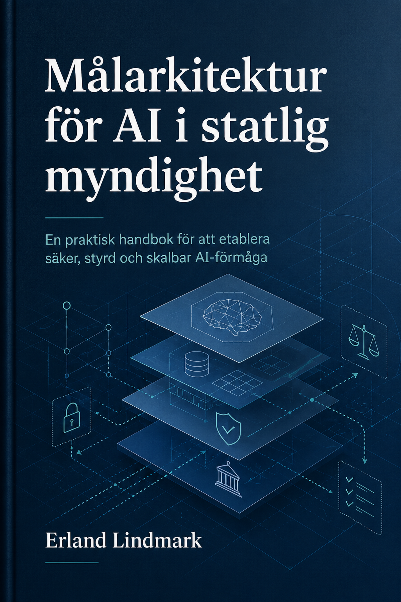

En praktisk handbok för att etablera säker, styrd och skalbar AI-förmåga
AI har på kort tid gått från experimentell teknik till strategisk förmåga. För en större statlig myndighet räcker det inte längre att enskilda team testar generativ AI, bygger en prototyp eller använder ett fristående verktyg. När AI börjar påverka informationshantering, handläggning, analys, beslutstöd och intern effektivitet behövs en målarkitektur som håller ihop juridik, säkerhet, data, teknik, styrning och införande.
Den här boken handlar om hur en erfaren IT-arkitekt kan angripa uppgiften att ta fram målarkitektur för AI inom en större statlig myndighet. Utgångspunkten är en organisation som hittills bara experimenterat begränsat med AI men som nu ser behovet av att etablera en återanvändbar, säker, styrd och skalbar AI-förmåga.
Boken är skriven för erfarna IT-arkitekter, enterprise architects, lösningsarkitekter, säkerhetsarkitekter, chefsarkitekter och tekniknära beslutsfattare inom offentlig sektor.
Läsaren antas redan förstå arkitekturarbete, integrationsmönster, informationssäkerhet, IT-styrning, förmågekartor, målarkitektur och större organisationers tekniska landskap. Däremot kräver boken inte att läsaren är AI-forskare, data scientist eller maskininlärningsexpert.
Efter att ha arbetat igenom boken ska du kunna:
För att göra resonemangen konkreta använder boken en fiktiv större tullmyndighet: Tullverket Aurora.
Tullverket Aurora har ett samhällskritiskt uppdrag och hanterar både administrativa processer, omfattande regelverk, ärendedata, riskanalys och operativ kontrollverksamhet. Myndigheten har testat generativ AI i mindre skala, till exempel för textsammanfattning, intern kunskapssökning och enklare analysstöd. Nu behöver Aurora etablera en myndighetsgemensam AI-förmåga.
Scenariot används genom boken för att visa hur arkitekturval påverkas av juridik, sekretess, informationsklassning, datakvalitet, säkerhetszoner, teknisk infrastruktur, leverantörsval och införandeplan.
Boken är uppdelad i fem delar.
Den första delen ramar in AI-förmågan och förklarar vad målarkitektur betyder i AI-sammanhang.
Den andra delen behandlar ramarna innan tekniken: juridik, ansvar, informationsklassning, riskstyrning, principer och governance.
Den tredje delen beskriver målarkitekturens byggblock: förmågor, dataarkitektur, teknisk referensarkitektur, generativ AI, RAG, MLOps och LLMOps.
Den fjärde delen går igenom plattformar, drift och vägval: moln, on-premises, hybrid, produktkategorier, säkerhetsarkitektur och upphandling.
Den femte delen samlar införande, helhetsexempel, vanliga misstag och praktiska checklistor.
Om du står inför uppgiften att starta ett AI-arkitekturarbete från början bör du läsa boken i ordning. Progressionen är avsiktlig: börja inte med plattformsval innan du har förstått användningsfall, risker, informationsklassning och styrande principer.
Om du redan arbetar med AI-arkitektur kan du använda boken som handbok. Då är kapitel 13 till 17 särskilt relevanta för tekniska vägval, medan kapitel 18 till 21 ger stöd för införande, målarkitekturdokumentation och praktiska checklistor.
Boken innehåller inga traditionella övningar. I stället används vägvalsfrågor, checklistor, fallgropar och återkommande scenarioexempel. Målet är att stödja verkliga arkitekturbeslut, inte att testa teoretiska kunskaper.
Det första arkitekturproblemet är sällan att välja modell, molnplattform eller vektordatabas. Det första problemet är att förstå vad myndigheten egentligen försöker etablera. En större statlig myndighet som har experimenterat med AI har ofta redan bevisat att tekniken kan vara användbar i enskilda situationer. Det betyder inte att myndigheten har en AI-förmåga.
Det här kapitlet beskriver skillnaden mellan lokala AI-experiment och en myndighetsgemensam AI-förmåga. Kapitlet visar också varför målarkitekturen behöver börja med förmåga, styrbarhet och risk innan den går in i tekniska plattformsval.
Efter kapitlet ska läsaren kunna:
Många organisationer börjar sin AI-resa på samma sätt. Några teknikintresserade medarbetare testar en generativ AI-tjänst. En verksamhetsenhet bygger en prototyp för att sammanfatta dokument. Ett datateam testar en prediktiv modell på historiska data. En innovationsfunktion skapar en sandlåda. En leverantör visar en lovande demo.
Det är inte fel. Experiment behövs. Problemet uppstår när organisationen tolkar experimenten som bevis för att förmågan redan finns.
En prototyp kan visa att något är möjligt. Den visar däremot inte automatiskt att lösningen är rättssäker, spårbar, informationssäker, förvaltningsbar, kostnadskontrollerad, upphandlingsbar eller möjlig att integrera i myndighetens ordinarie arkitektur. Den visar inte heller att det finns en tydlig ansvarskedja när AI-stöd används i handläggning, analys eller verksamhetskritiska beslut.
För en statlig myndighet är detta särskilt viktigt. Myndigheten kan inte enbart optimera för innovationstakt. Den måste samtidigt kunna visa att AI-användningen följer rättsliga krav, informationssäkerhetskrav, interna styrmodeller, arkitekturprinciper och förvaltningsansvar. AI-förmågan måste därför vara både möjliggörande och kontrollerande.
Den centrala arkitekturfrågan blir därför:
Hur etablerar myndigheten en AI-förmåga som gör det möjligt att använda AI i relevant omfattning, utan att varje initiativ behöver uppfinna sin egen juridik, säkerhet, datamodell, tekniska plattform och förvaltningsmodell?
Detta är en annan fråga än “vilken AI-produkt ska vi använda?”. Produktvalet kommer senare. Först behöver myndigheten förstå vilken förmåga den behöver bygga.
Ett AI-experiment är en avgränsad prövning. Det kan vara en teknisk proof of concept, en verksamhetsnära pilot, en testmiljö för generativ AI eller en begränsad analysmodell. Experimentet har ofta låg formell komplexitet, få användare, begränsad datamängd och otydlig koppling till ordinarie förvaltning.
En AI-lösning är mer konkret. Den har ett specifikt användningsfall, en målgrupp, en teknisk implementation och någon form av drift- eller användningsmodell. En lösning kan till exempel vara ett internt frågeverktyg baserat på RAG, en modell för dokumentklassificering eller ett assistentstöd för sammanfattning av ärenden.
En AI-förmåga är bredare. Den omfattar de strukturer som gör att myndigheten kan identifiera, bedöma, utveckla, införa, använda, övervaka, förbättra och avveckla AI-lösningar över tid. Förmågan består av teknik, men också av juridik, styrning, roller, data, säkerhet, metoder, finansiering, kompetens och arkitektur.
Skillnaden kan sammanfattas så här:
| Nivå | Fråga | Typiskt resultat | Risk om nivån blandas ihop |
|---|---|---|---|
| AI-experiment | Kan detta fungera? | Prototyp, demo eller pilot | Organisationen tror att tekniken är produktionsklar |
| AI-lösning | Hur stödjer vi ett visst användningsfall? | Applikation, modell eller tjänst | Lösningen blir isolerad och svår att förvalta |
| AI-förmåga | Hur kan myndigheten använda AI säkert och återkommande? | Styrning, plattform, processer och arkitektur | Varje initiativ bygger egna mönster och egna risker |
Målarkitekturen ska i första hand beskriva den tredje nivån. Den ska inte bara beskriva en teknisk lösning för ett enskilt användningsfall. Den ska visa hur myndigheten vill kunna arbeta med AI som återkommande förmåga.
Experiment har ofta andra villkor än produktion. Under ett experiment kan organisationen acceptera manuella kontroller, begränsat användarantal och osäker dokumentation. I produktion förändras kraven.
En produktionssatt AI-lösning behöver kunna hantera åtminstone följande frågor:
Enskilda experiment besvarar sällan allt detta. Det är därför myndigheten behöver en strukturerad övergång från experiment till förmåga.
Det är också vanligt att experiment skapar en skev bild av kostnad och komplexitet. En liten pilot kan vara billig eftersom den använder manuellt arbete, fria testnivåer, en begränsad datamängd eller ett isolerat team. När lösningen ska införas brett tillkommer kostnader för säkerhet, integration, drift, support, övervakning, incidenthantering, upphandling, dokumentation och förvaltning.
Det är inte ett argument mot AI. Det är ett argument för att behandla AI som arkitekturfråga, inte som isolerad tekniktest.
Tullverket Aurora är en fiktiv större statlig tullmyndighet. Myndigheten har ett samhällskritiskt uppdrag och hanterar stora mängder information: ärenden, tulldeklarationer, regelverk, styrdokument, kontrollinformation, analysunderlag, samverkansdata och interna rutiner.
Aurora har under det senaste året genomfört flera mindre AI-experiment:
De flesta testerna har gett positiva signaler. Medarbetare ser möjligheter till snabbare informationssökning, bättre sammanfattningar och effektivare analys. Samtidigt finns tydliga problem:
Aurora står alltså inte inför frågan om AI är intressant. Den frågan är redan besvarad. Den nya frågan är hur myndigheten etablerar en kontrollerad AI-förmåga.
En myndighetsgemensam AI-förmåga kan beskrivas som ett antal samverkande delområden. Målarkitekturen behöver inte lösa alla detaljer i första versionen, men den behöver visa hur delområdena hänger ihop.
AI-förmågan behöver tydliga beslutspunkter. Någon måste kunna avgöra vilka användningsfall som får gå vidare, vilka risker som kräver särskild prövning och vilka arkitekturprinciper som är obligatoriska. Det behövs också ansvar för modeller, data, plattform, informationssäkerhet, juridik och verksamhetsnytta.
För Aurora innebär detta att AI inte kan vara ett rent IT-initiativ. Juridik, säkerhet, dataskydd, verksamhet, arkitektur och IT behöver ingå i samma styrmodell, även om de inte alltid behöver fatta alla beslut tillsammans.
Alla AI-användningsfall är inte lika riskfyllda. En intern assistent som hjälper en medarbetare att sammanfatta öppen utbildningstext är något annat än ett stöd som påverkar prioritering av tullkontroller eller handläggningsbeslut. Myndigheten behöver därför en gemensam triage där användningsfall klassas utifrån nytta, data, rättslig påverkan, säkerhet, automatiseringsgrad och konsekvens för enskilda.
Triage är en arkitekturfråga eftersom den styr vilka tekniska och organisatoriska mönster som får användas.
AI behöver data, men myndigheten kan inte låta AI-lösningar få godtycklig åtkomst till information. Det behövs ordning på informationsägarskap, datakvalitet, metadata, behörighet, sökindex, loggning och dataminimering. För generativ AI behöver myndigheten dessutom hantera promptar, kontext, embeddings och modellutdata som informationsobjekt.
För Aurora betyder detta att intern kunskapssökning i regelverk och rutiner inte bara handlar om att lägga dokument i ett index. Myndigheten behöver veta vilka dokument som är gällande, vem som ansvarar för dem, vilka som får läsa dem och hur svar ska kunna spåras tillbaka till källor.
Den tekniska plattformen behöver stödja flera typer av AI-lösningar. Den kan omfatta modellåtkomst, AI-gateway, RAG-lager, orkestrering, vektordatabas, MLOps, LLMOps, övervakning, behörighet, loggning, säkerhetskontroller och integrationer.
Plattformen behöver inte vara en enda produkt. Den bör snarare förstås som en sammanhängande arkitektur av komponenter och kontroller. För vissa användningsfall kan en SaaS-tjänst vara rimlig. För andra krävs mer kontrollerad drift, egen modellservering eller on-premises-miljö.
AI-förmågan behöver processer för hela livscykeln. Det räcker inte att utveckla eller köpa en modell. Myndigheten behöver kunna testa, validera, produktionssätta, övervaka, ändra, pausa och avveckla AI-lösningar.
För generativ AI gäller detta inte bara modellen. Även promptar, systeminstruktioner, RAG-index, datakällor, säkerhetsfilter och utvärderingsdataset behöver versionshanteras och förvaltas.
AI-förmåga kräver nya samarbeten. Arkitekter behöver förstå juridiska och verksamhetsmässiga begränsningar. Jurister behöver förstå hur tekniska val påverkar risk. Säkerhetsfunktioner behöver kunna bedöma nya hotbilder. Verksamheten behöver förstå att AI inte är magi, utan ett stöd med begränsningar.
För Aurora blir ett viktigt mål att skapa tvärfunktionella arbetssätt där AI-initiativ inte fastnar i separata stuprör.
En vanlig fälla är att börja med plattformsjämförelse. Det kan kännas konkret, men det leder ofta fel. Plattformen ska väljas utifrån behov, risk och styrning, inte tvärtom.
En mer robust första ordning är:
Denna ordning gör att myndigheten kan lära sig utan att låsa in sig för tidigt. Den gör också att arkitekturen utvecklas tillsammans med juridik, informationsklassning och verksamhetsbehov.
För att konkretisera kan Aurora beskriva sin första AI-förmåga med fem nivåer.
Myndigheten beslutar vilka externa eller interna AI-verktyg som får användas, för vilka ändamål och med vilken information. Fokus ligger på policy, användarstöd, riskmedvetenhet och grundläggande kontroller.
För Aurora innebär detta att medarbetare får tydliga regler för vad som aldrig får matas in i publika AI-tjänster, vilka godkända verktyg som finns och hur AI-genererat material ska granskas.
Myndigheten etablerar en teknisk och juridiskt granskad miljö där team kan testa AI med kontrollerade data. Sandlådan används för lärande, metodutveckling och jämförelse av lösningsmönster.
För Aurora kan sandlådan innehålla avidentifierade eller syntetiska dokument, testade modellanslutningar och ett enkelt RAG-mönster för interna styrdokument.
Utvalda användningsfall får gå vidare som piloter med tydlig ansvarig verksamhet, riskbedömning, dokumentation och teknisk lösningsskiss. Piloterna ska inte bara visa nytta, utan också testa målarkitekturens antaganden.
Aurora väljer exempelvis intern kunskapssökning och sammanfattning av icke-sekretessbelagda ärendehandlingar som tidiga piloter, medan mer känsligt prioriteringsstöd får vänta tills riskmodell och dataarkitektur är tydligare.
Myndigheten har gemensamma byggblock för identitet, behörighet, loggning, modellåtkomst, övervakning, incidenthantering och livscykelhantering. AI-lösningar kan tas i produktion utan att varje team uppfinner allt från början.
För Aurora innebär detta att en verksamhetslösning kan använda en godkänd AI-gateway, etablerade loggkrav, standardiserad källspårning och gemensamma rutiner för förändring av promptar och datakällor.
AI är en del av myndighetens ordinarie portföljstyrning. Det finns återkommande uppföljning av nytta, risk, kostnad, kvalitet och efterlevnad. Arkitekturen utvecklas med nya krav, modeller och leverantörsförutsättningar.
Aurora kan då hantera flera AI-lösningar parallellt utan att förlora kontrollen över ansvar, data, modellval och drift.
I Tullverket Aurora blir den första arkitekturfrågan inte vilken modell som är bäst, utan vilken förmåga myndigheten vill kunna bära över tid. Ett experiment med textsammanfattning i en enskild enhet kan vara värdefullt, men målarkitekturen behöver visa hur samma mönster kan klassas, säkras, följas upp och återanvändas i andra delar av myndigheten.
I scenariot används därför Aurora som en röd tråd: varje nytt AI-initiativ ska kunna kopplas till en ansvarig verksamhetsägare, ett informationsflöde, en riskklass, en teknisk driftmodell och en förvaltningsbar lösningskomponent.
Innan myndigheten tar fram sin första detaljerade målarkitektur bör arkitekten samla beslutsfattare kring ett antal vägvalsfrågor.
Dessa frågor är avsiktligt breda. De hjälper myndigheten att undvika att teknikval blir substitut för styrning.
Det vanligaste misstaget är att inleda med en jämförelse mellan plattformar eller modeller. Det kan vara relevant senare, men först behöver myndigheten veta vilka användningsfall, dataklasser, risknivåer och styrkrav som plattformen ska stödja.
AI kan börja i innovation, men kan inte stanna där. När användningsfallen påverkar verklig verksamhet måste de in i ordinarie arkitektur, säkerhet, juridik, förvaltning och portföljstyrning.
En policy kan säga vad som är tillåtet, men den skapar inte automatiskt tekniska kontroller, behörighetsmodeller, loggning, uppföljning eller livscykelhantering. Policy behöver omsättas i arkitektur.
AI-diskussioner börjar ofta med modeller, men misslyckas ofta på grund av data. Saknad informationsklassning, låg datakvalitet, otydligt informationsägarskap och bristande metadata gör AI-lösningar svåra att skala.
Lokala initiativ kan skapa tempo, men de kan också skapa fragmentering. Om varje enhet väljer egen AI-tjänst, egen vektordatabas, egna promptmönster och egen loggning blir den samlade risken snabbt större än nyttan.
Motsatt misstag är att försöka rita hela målarkitekturen färdig innan någon lär sig något praktiskt. AI-området förändras snabbt, och myndigheten behöver arbeta iterativt. En första målarkitektur bör vara styrande men inte orimligt detaljerad.
Använd denna checklista när myndigheten ska bedöma om den fortfarande befinner sig i experimentfas eller har börjat etablera verklig AI-förmåga.
Om svaret är nej på flera av dessa frågor är myndigheten troligen fortfarande i experimentfas, även om det finns flera lovande prototyper.
Det här kapitlet visar vilken del av målarkitekturen som behöver vara tydlig innan nästa vägval görs. I nästa kapitel byggs resonemanget vidare så att Tullverket Aurora stegvis går från princip och struktur till genomförbar AI-förmåga.
Det här kapitlet etablerar bokens grundtes: AI i en större statlig myndighet bör behandlas som en förmåga, inte som en samling verktyg. Målarkitekturen ska därför beskriva hur myndigheten vill kunna använda AI över tid, med rätt styrning, rätt datahantering, rätt teknik och rätt ansvar.
I nästa kapitel fördjupas vad målarkitektur betyder i AI-sammanhang. Där skiljer vi mellan nuläge, målbild, referensarkitektur, lösningsarkitektur och roadmap. Det är den distinktionen som gör det möjligt att senare diskutera juridik, informationsklassning, tekniska byggblock, plattformar och driftmodeller utan att blanda ihop nivåerna.
När en myndighet börjar arbeta mer systematiskt med AI uppstår snabbt en praktisk fråga: vad är det egentligen som ska tas fram? Ett strategidokument räcker inte. En teknisk plattform räcker inte heller. Ett antal pilotprojekt säger inte hur myndigheten ska kunna skala, styra, säkra och förvalta AI över tid.
Målarkitekturens uppgift är att beskriva det önskade framtida arkitekturläget och göra det möjligt att ta stegvisa beslut i rätt riktning. För AI är detta särskilt viktigt eftersom tekniken påverkar flera arkitekturområden samtidigt: verksamhetsförmågor, data, integration, säkerhet, juridik, drift, leverantörsstyrning och organisation.
En bra AI-målarkitektur ska därför inte vara en teknisk ritning över en enskild lösning. Den ska vara ett styrande underlag för hur myndigheten vill etablera AI som förmåga.
Efter kapitlet ska läsaren kunna:
Många organisationer börjar sitt AI-arbete genom att fråga vilken plattform eller modell de ska använda. Det är förståeligt men riskabelt. Plattformen är bara en del av målbilden.
För en större statlig myndighet är den egentliga frågan bredare:
Vilket framtida läge behöver myndigheten nå för att kunna använda AI på ett rättssäkert, säkert, kontrollerat, effektivt och återanvändbart sätt?
Det framtida läget måste beskriva mer än teknik. Det måste bland annat svara på följande frågor:
Utan målarkitektur blir varje AI-initiativ ett separat vägval. Då växer teknisk skuld, juridisk osäkerhet och leverantörsberoende snabbt.
Nuläget beskriver hur myndigheten arbetar i dag. För AI handlar nuläget inte bara om vilka verktyg som används. Det omfattar även dataförutsättningar, kompetens, juridiska processer, säkerhetsförmåga, befintlig infrastruktur, styrmodeller och pågående experiment.
Ett användbart nuläge bör svara på frågor som:
Nuläget ska inte bli en katalog över allt som finns. Det ska visa vilka utgångspunkter som påverkar vägen mot målarkitekturen.
Målarkitektur, eller target architecture, beskriver ett önskat framtida arkitekturläge. Den ska visa hur verksamhet, information, applikationer, teknik, säkerhet och styrning ska hänga ihop när myndigheten har etablerat en mer mogen AI-förmåga.
För AI bör målarkitekturen minst beskriva:
Målarkitekturen ska vara tillräckligt konkret för att styra beslut, men inte så detaljerad att den blir en lösningsdesign för ett enskilt system.
Referensarkitektur beskriver ett återanvändbart mönster för en typ av lösning eller förmåga. Där målarkitekturen beskriver det önskade framtida läget för myndigheten kan referensarkitekturen beskriva hur återkommande AI-lösningar bör byggas.
Exempel på referensarkitekturer för AI kan vara:
Referensarkitekturen gör det möjligt att återanvända godkända mönster i flera lösningar. Den minskar behovet av att varje projekt uppfinner sin egen säkerhetsmodell, integrationsmodell och driftmodell.
Lösningsarkitektur beskriver hur ett specifikt användningsfall ska realiseras. Den är mer detaljerad än både målarkitektur och referensarkitektur.
Om Tullverket Aurora till exempel vill skapa ett AI-stöd för intern sökning i styrdokument kan lösningsarkitekturen beskriva:
Lösningsarkitekturen ska följa målarkitekturen och återanvända relevanta referensarkitekturer. Om den avviker behöver avvikelsen vara medveten och dokumenterad.
En roadmap beskriver hur myndigheten rör sig från nuläge till målarkitektur. Den ska inte bara vara en projektplan. För AI bör den beskriva den ordning som minskar risk och bygger förmåga stegvis.
En enkel roadmap kan innehålla steg som:
Roadmapen är därmed målarkitekturens genomförandespår.
Ett arkitekturbeslut är ett dokumenterat vägval. Det kan beskrivas som en Architecture Decision Record, ofta förkortat ADR.
AI-området kräver tydliga arkitekturbeslut eftersom många val får konsekvenser för juridik, säkerhet, drift och ekonomi. Exempel på beslut är:
Ett bra arkitekturbeslut beskriver beslutet, sammanhanget, övervägda alternativ, konsekvenser, giltighet och omprövningspunkt.
Det första steget är att tydliggöra varför målarkitekturen tas fram. Syftet bör inte uttryckas som “välja AI-plattform”. Ett bättre syfte är att beskriva vilken organisatorisk förmåga myndigheten behöver etablera.
Ett exempel:
Målarkitekturen ska ange hur myndigheten stegvis etablerar en gemensam AI-förmåga som gör det möjligt att pröva, utveckla, driftsätta och förvalta AI-lösningar på ett rättssäkert, säkert, spårbart och kostnadseffektivt sätt.
En sådan formulering visar att teknik är nödvändig men inte tillräcklig.
AI är ett brett område. Därför behöver den första målarkitekturen avgränsas. Det är ofta bättre att skapa en första version som styr rätt beslut än att försöka täcka alla möjliga AI-frågor.
En första målarkitektur kan till exempel omfatta:
Den kan samtidigt uttryckligen avgränsa bort:
Avgränsning är inte ett sätt att undvika ansvar. Det är ett sätt att göra arbetet styrbart.
En central uppgift för målarkitekturen är att avgöra vilka beslut som ska vara gemensamma för myndigheten och vilka beslut som kan fattas lokalt.
Gemensamma beslut bör normalt omfatta:
Lokala beslut kan ofta omfatta:
Om allt blir gemensamt blir myndigheten långsam. Om allt blir lokalt blir myndigheten osäker och fragmenterad. Målarkitekturen behöver hitta balansen.
Ett återkommande misstag är att beskriva målarkitekturen som en lista över produkter. Det gör arkitekturen bräcklig. Produkter förändras, avtal löper ut och tekniken utvecklas snabbt.
Börja i stället med förmågor. Exempel på AI-förmågor är:
När förmågorna är tydliga blir det enklare att välja produkter och plattformar. Då kan varje produkt bedömas utifrån vilken förmåga den stödjer och vilka risker den introducerar.
En praktisk AI-målarkitektur bör kunna visas i lager. Lagren gör det lättare att diskutera olika typer av vägval utan att blanda ihop dem.
Ett användbart lagerperspektiv är:
Poängen är inte att varje lager måste bli ett eget dokument. Poängen är att målarkitekturen ska synliggöra beroenden mellan verksamhet, regler, data och teknik.
AI-målarkitektur blir snabbt föremål för många diskussioner. Vissa handlar om teknik. Andra handlar om juridik, riskaptit, ekonomi eller organisation. Om besluten inte dokumenteras kommer samma frågor tillbaka i varje pilot.
Därför bör arkitekturarbetet tidigt införa en enkel beslutslogg. Varje större vägval bör dokumenteras med:
Det viktigaste är inte formatet. Det viktigaste är spårbarheten.
Tullverket Aurora har under två år testat AI i begränsad skala. Flera delar av organisationen har experimenterat:
När myndighetsledningen ber om en AI-målarkitektur uppstår först en missuppfattning. Flera aktörer förväntar sig att arkitekterna ska rekommendera en produkt eller välja mellan moln och on-premises.
Arkitekturgruppen väljer i stället att rama in arbetet som en målarkitektur för AI-förmåga. De delar upp uppdraget i sex frågor:
Resultatet blir inte en färdig lösningsdesign. Resultatet blir en styrande målbild.
Auroras första version av målarkitekturen innehåller:
Det gör att Tullverket Aurora kan fortsätta experimentera, men inom tydligare ramar.
En första AI-målarkitektur för en större myndighet bör vara tillräckligt komplett för att styra kommande beslut. Den behöver inte vara perfekt. Den behöver vara användbar.
Beskriv varför målarkitekturen behövs och vilka problem den ska lösa. Detta bör inkludera nuläge, drivkrafter, risker och koppling till myndighetens uppdrag.
Exempel på drivkrafter:
Ange vad målarkitekturen omfattar och vad den inte omfattar. Det gör dokumentet lättare att använda och minskar risken för felaktiga förväntningar.
En tydlig avgränsning kan vara:
Denna version omfattar intern AI-användning och verksamhetsstödjande AI-lösningar. Den omfattar inte automatiserat beslutsfattande med rättsverkan eller publika medborgartjänster.
Avgränsningen kan senare ändras, men då ska den ändras medvetet.
Principerna ska styra beslut när detaljer saknas. För AI bör principerna vara både arkitektoniska och verksamhetsmässiga.
Exempel:
Principer ska inte vara slogans. De ska kunna användas för att fatta beslut.
Målarkitekturen bör beskriva vilka förmågor myndigheten behöver etablera. Detta gör målbilden mindre produktberoende.
Exempel på förmågeområden:
Förmågorna kan senare mappas till roller, processer, system och plattformar.
Byggblock är de komponenter och mönster som återkommer i flera lösningar.
Vanliga byggblock i AI-målarkitektur är:
Byggblock ska beskrivas på rätt nivå. En målarkitektur behöver inte alltid ange produkt, men den bör ange funktion, ansvar och viktiga krav.
AI-målarkitekturen bör beskriva vilka driftmodeller som är tillåtna och när de kan användas.
Exempel:
Poängen är inte att välja en modell för allt. Poängen är att skapa en beslutsmodell som kopplar driftval till risk och nytta.
Målarkitekturen ska innehålla en realistisk väg framåt. Annars blir den en framtidsbild utan genomförandekraft.
Roadmapen bör visa:
För AI är ordningen central. En myndighet bör normalt inte skala till känsliga, verksamhetskritiska användningsfall innan styrning, riskklassning, loggning, ansvar och incidenthantering finns på plats.
AI-målarkitektur är inte bara en IT-artefakt. Den är också ett styrinstrument.
Det innebär att målarkitekturen behöver kopplas till:
Om målarkitekturen saknar koppling till styrning kommer den inte påverka verkliga beslut. Om styrningen saknar arkitekturstöd riskerar den att bli principer utan teknisk genomförbarhet.
En praktisk lösning är att låta målarkitekturen innehålla beslutsgrindar. Exempel:
Detta gör arkitekturen operativ.
När myndigheten tar fram sin AI-målarkitektur bör arkitektgruppen åtminstone besvara följande frågor:
Frågorna är viktigare än att snabbt producera en snygg målbild. Fel frågor leder till fel arkitektur.
Det är vanligt att målarkitekturen reduceras till en jämförelse mellan plattformar. Då försvinner kopplingen till förmåga, ansvar, data och risk.
Undvik detta genom att beskriva förmågor och byggblock före produkter. Produkter ska komma in som möjliga realiseringar, inte som arkitekturens utgångspunkt.
En annan risk är att målarkitekturen blir så principiell att den inte styr någonting. Ord som säker, etisk, robust och innovativ är viktiga men otillräckliga om de inte leder till beslut.
Undvik detta genom att koppla varje princip till konsekvenser. Om principen är att informationsklassning styr driftmodell ska målarkitekturen också visa hur olika klasser påverkar val mellan SaaS, moln, hybrid och on-premises.
När ett konkret pilotprojekt dominerar arbetet kan målarkitekturen bli en detaljerad design för just den lösningen. Då blir den svår att återanvända.
Undvik detta genom att skilja på tre nivåer:
En roadmap som bara följer teknisk leveransordning kan skapa risk. AI bör införas i en ordning som bygger styrning och kontroll innan de mest känsliga användningsfallen skalar.
Undvik detta genom att låta juridik, informationsklassning, säkerhet och driftförmåga påverka ordningen.
När AI-området rör sig snabbt kan organisationen fatta många tillfälliga beslut. Om de inte dokumenteras blir det svårt att förstå varför en viss väg valdes.
Undvik detta genom att använda en enkel ADR-modell från början.
Använd checklistan för att bedöma om en första AI-målarkitektur är tillräckligt användbar.
Det här kapitlet visar vilken del av målarkitekturen som behöver vara tydlig innan nästa vägval görs. I nästa kapitel byggs resonemanget vidare så att Tullverket Aurora stegvis går från princip och struktur till genomförbar AI-förmåga.
Detta kapitel etablerar den begreppsram som resten av boken bygger på. Kapitel 3 använder ramen för att strukturera myndighetens AI-portfölj. Därefter går boken in i juridik, informationsklassning, principer och governance innan tekniska byggblock och plattformsval behandlas.
Den viktigaste slutsatsen är att målarkitektur för AI inte är samma sak som en teknisk plattform. Plattformen är ett realiseringsval. Målarkitekturen beskriver det framtida läge där myndigheten kan använda AI kontrollerat, säkert och ändamålsenligt över tid.
För Tullverket Aurora innebär detta att arkitekturgruppen inte börjar med att fråga vilken språkmodell som är bäst. De börjar med att definiera vilka förmågor, principer, byggblock, driftmodeller och beslut som krävs för att AI ska kunna bli en del av myndighetens ordinarie verksamhetsutveckling.
En målarkitektur för AI kan inte tas fram i ett vakuum. Den måste svara mot de typer av användningsfall myndigheten faktiskt behöver stödja. Om arkitekturarbetet börjar med plattform, modell eller produkt finns en stor risk att myndigheten bygger en generell teknisk förmåga utan tydlig koppling till nytta, risk och styrning.
AI-portföljen är därför ett av de första styrande underlagen. Den visar vilka AI-initiativ myndigheten överväger, vilka som bör prioriteras, vilka som bör stoppas, vilka som kräver särskild juridisk prövning och vilka som kan användas för att bygga gemensam förmåga stegvis.
För en större statlig myndighet är portföljfrågan särskilt viktig eftersom olika AI-användningsfall har mycket olika riskprofil. Ett internt stöd för att sammanfatta öppna styrdokument kräver inte samma arkitektur som ett stöd som påverkar kontrollprioritering, handläggning eller individnära beslut.
Det här kapitlet visar hur en erfaren arkitekt kan strukturera AI-portföljen innan tekniska vägval görs.
Efter kapitlet ska läsaren kunna:
När Tullverket Aurora började experimentera med AI fanns det många idéer. En avdelning ville sammanfatta långa ärendehandlingar. En annan ville använda generativ AI för att söka i interna handböcker. En tredje ville analysera historiska kontrollutfall. Några medarbetare använde redan externa AI-tjänster för att bearbeta texter, ibland utan tydliga riktlinjer.
Varje idé lät rimlig när den beskrevs separat. Men tillsammans skapade de ett arkitekturproblem.
Om alla användningsfall behandlas som tekniskt likvärdiga riskerar myndigheten att välja fel gemensamma lösning. En enkel AI-assistent för intern produktivitet är inte samma sak som ett riskanalysstöd. En RAG-lösning för styrdokument är inte samma sak som en modell som påverkar prioritering av kontroller. En lösning som bara hanterar öppna dokument har inte samma krav som en lösning som behandlar sekretessbelagd information eller personuppgifter.
Portföljfrågan blir därför:
Vilka typer av AI-användningsfall ska myndighetens målarkitektur stödja, i vilken ordning och under vilka styrvillkor?
Svaret påverkar nästan allt som kommer senare:
AI-portföljen är alltså inte bara en lista över idéer. Den är en arkitekturdrivande analys av vad myndigheten behöver kunna göra.
En AI-portfölj är den samlade mängden AI-initiativ som myndigheten överväger, testar, utvecklar, driftsätter eller förvaltar. Portföljen bör innehålla både tekniska och icke-tekniska uppgifter: användningsfall, nyttobedömning, risk, data, ägarskap, juridisk status, arkitekturstatus och nästa beslutspunkt.
En mogen AI-portfölj gör det möjligt att se mönster:
För en arkitekt är portföljen ett sätt att identifiera vilka gemensamma byggblock som målarkitekturen måste stödja.
Ett användningsfall beskriver en avgränsad situation där AI skapar nytta. Det bör beskrivas från verksamhetens perspektiv, inte som en teknisk lösning.
Ett svagt formulerat användningsfall är:
Ett bättre formulerat användningsfall är:
Det andra exemplet säger mer om målgrupp, uppgift, data, kontroll och risk. Det ger arkitekten något att arbeta med.
Use-case triage är en första strukturerad bedömning av AI-användningsfall. Syftet är inte att göra fullständig juridisk analys, informationsklassning eller lösningsdesign. Syftet är att snabbt avgöra vad som kan gå vidare, vad som behöver fördjupad prövning och vad som bör stoppas eller omformuleras.
En enkel triage bör minst svara på:
Triage ska vara lätt nog att användas tidigt, men skarp nog att sortera bort olämpliga idéer.
Nyttoklassning beskriver vilken typ av nytta ett användningsfall förväntas skapa. För AI i myndighet räcker det sällan att bara ange effektivisering. Nytta kan vara bredare än tidsbesparing.
Exempel på nyttotyper är:
Nyttoklassningen hjälper arkitekten att se vilka förmågor som ger återkommande värde.
Risknivå beskriver hur känsligt och potentiellt konsekvensrikt ett AI-användningsfall är. Risknivån påverkas av data, användare, kontext, grad av automation, felkonsekvens och påverkan på individ eller verksamhet.
Ett användningsfall kan ha låg teknisk komplexitet men hög risk. Ett exempel är en enkel textgenerator som används i ett sammanhang där formuleringen kan påverka myndighetsutövning. Ett annat användningsfall kan ha hög teknisk komplexitet men lägre juridisk risk, till exempel intern analys av anonymiserade driftmönster.
Risknivå ska därför inte sättas enbart utifrån teknisk svårighet.
Det första steget är att samla in och normalisera användningsfall. Normalisering betyder att idéerna skrivs om till ett jämförbart format.
Varje användningsfall bör minst beskriva:
Det är viktigt att inte låta verksamheten beskriva användningsfallet som en beställd produkt. Om beställningen är “vi behöver Copilot”, “vi behöver en chatbot” eller “vi behöver en vektordatabas” bör arkitekten backa ett steg och fråga vilken uppgift som ska lösas.
När idéerna är normaliserade bör de delas in i typer. En praktisk indelning för större myndigheter är:
| Typ | Beskrivning | Typisk risk | Arkitekturfråga |
|---|---|---|---|
| Intern produktivitet | Stöd för text, sammanfattning, mötesanteckningar och enklare informationsbearbetning | Låg till medel | Vilka data får användas i generella assistenter? |
| Kunskapsstöd | Sökning och svar baserat på godkända dokument och kunskapskällor | Medel | Hur säkras källor, behörighet och spårbarhet? |
| Handläggarstöd | Stöd i ärendeprocesser, dokumentgranskning och bedömning | Medel till hög | Hur säkerställs mänsklig kontroll och ansvar? |
| Analysstöd | Analys av större datamängder, mönster och avvikelser | Medel till hög | Vilken dataplattform och modellstyrning krävs? |
| Prioriterings- och riskstöd | Stöd för att prioritera kontroller, resurser eller insatser | Hög | Hur hanteras rättssäkerhet, bias och förklarbarhet? |
| Automation | AI används för att automatisera steg i processer | Hög | Vilka beslut får automatiseras och med vilken kontroll? |
| Medborgar- eller företagsnära tjänst | AI interagerar direkt eller indirekt med externa parter | Medel till hög | Hur hanteras ansvar, transparens och felaktiga svar? |
Tabellen är inte en juridisk klassificering. Den är ett arkitekturstöd för att se vilka användningsfall som bör hanteras tillsammans och vilka som kräver särskild prövning.
Ett av de viktigaste portföljbesluten är att avgöra vilken roll AI-resultatet har i arbetsflödet. Samma tekniska modell kan få helt olika riskprofil beroende på hur den används.
AI kan användas som:
Målarkitekturen bör behandla dessa nivåer olika. En generell AI-assistent kan kanske införas med tydliga användarregler och tekniska begränsningar. Ett beslutsstöd kräver däremot mycket mer av datakvalitet, spårbarhet, dokumentation, validering och ansvar. En styrande eller automatiserande komponent kräver ytterligare prövning.
AI-användningsfall ska inte bara klassas efter funktion. De ska också klassas efter data.
En praktisk första indelning är:
| Datatyp | Exempel | Arkitekturkonsekvens |
|---|---|---|
| Öppen information | Publicerade föreskrifter, öppna vägledningar, publika dokument | Kan ofta användas i mindre känsliga miljöer, men kräver ändå källkontroll |
| Intern men okänslig information | Interna rutiner, utbildningsmaterial, mötesmallar | Kräver behörighetsstyrning och riktlinjer för delning |
| Intern skyddsvärd information | Operativa rutiner, interna riskmodeller, säkerhetsrelaterade dokument | Kräver starkare kontroll, loggning och miljöval |
| Personuppgifter | Ärendedata, kontaktuppgifter, handläggningsinformation | Kräver dataskyddsbedömning och tydligt ändamål |
| Sekretessbelagd information | Uppgifter som omfattas av sekretessregler | Kräver särskild juridisk och säkerhetsmässig prövning |
| Verksamhetskritisk analysdata | Data som används för prioritering, kontroll eller styrning | Kräver kvalitetssäkring, spårbarhet och modellstyrning |
Den här indelningen ersätter inte informationsklassning. Den hjälper bara portföljen att sortera användningsfall så att rätt spår startas tidigt.
AI-fel är inte likvärdiga. Ett felaktigt förslag på rubrik i en intern text är inte samma sak som en felaktig riskindikator i kontrollverksamhet.
Arkitekten bör därför fråga:
Ett användningsfall med hög felkonsekvens bör inte automatiskt stoppas. Men det ska inte hanteras som ett enkelt produktivitetsstöd.
När användningsfallen har normaliserats kan portföljen visualiseras enkelt. En första vy kan kombinera nytta och risk.
| Användningsfall | Nytta | Risk | Rekommenderat nästa steg |
|---|---|---|---|
| Sammanfattning av öppna styrdokument | Medel | Låg | Kan testas i kontrollerad sandlåda |
| Intern sökning i handböcker och rutiner | Hög | Medel | Kräver RAG-mönster, behörighet och källhänvisning |
| Sammanfattning av ärendehandlingar | Hög | Medel till hög | Kräver dataskydds- och sekretessbedömning |
| Riskanalys för kontrollprioritering | Hög | Hög | Kräver fördjupad juridisk, etisk och modellriskbedömning |
| Automatisk kommunikation med företag | Medel | Medel till hög | Kräver transparens, kvalitetssäkring och ansvarsfördelning |
| Generell extern AI-tjänst för alla medarbetare | Medel | Varierar | Kräver policy, databegränsning och tekniska skydd |
Syftet är inte att besluta allt i tabellen. Syftet är att se vilka initiativ som kan gå snabbt, vilka som kräver fördjupning och vilka gemensamma byggblock som återkommer.
Auroras arkitekturgrupp samlar in 37 AI-idéer från verksamheten. Efter normalisering visar det sig att många idéer är variationer av samma behov. Gruppen reducerar listan till sex portföljkategorier.
| Kategori | Exempel | Preliminär bedömning |
|---|---|---|
| Intern produktivitet | Sammanfatta möten, skriva utkast, förenkla texter | Lämpligt för kontrollerad användning med tydliga regler |
| Kunskapsstöd | Söka i styrdokument, handböcker och regelverk | Bra kandidat för gemensam RAG-förmåga |
| Ärendestöd | Sammanfatta ärendehandlingar och föreslå relevanta interna rutiner | Kräver stark datakontroll och tydlig mänsklig granskning |
| Analysstöd | Hitta mönster i stora informationsmängder | Kräver dataplattform, kvalitetssäkring och modellstyrning |
| Risk- och prioriteringsstöd | Stödja urval för kontrollverksamhet | Hög risk, kräver särskild styrning och dokumentation |
| Externa tjänster | Svara på frågor från företag och allmänhet | Kräver avgränsat innehåll, ansvar och kvalitetskontroll |
Det viktigaste resultatet är inte listan i sig. Det viktigaste är att Aurora slutar behandla AI som en enda teknisk kategori. De ser att olika användningsfall kräver olika arkitekturspår.
Arkitekturgruppen väljer tre representativa användningsfall för fördjupad analys.
| Användningsfall | Datakrav | AI-roll | Risknivå | Trolig arkitekturinriktning |
|---|---|---|---|---|
| Intern kunskapssökning i styrdokument | Godkända interna dokument | Kunskapsstöd | Medel | RAG med behörighetsstyrning och källhänvisning |
| Sammanfattning av ärendehandlingar | Ärendedata, möjliga personuppgifter och sekretess | Handläggarstöd | Medel till hög | Kontrollerad miljö, loggning, mänsklig granskning |
| Riskanalys för kontrollprioritering | Historiska kontroll- och flödesdata | Beslutsstöd | Hög | Fördjupad modellrisk, validering och governance |
Denna jämförelse visar varför ett enda plattformsbeslut inte räcker. Alla tre kan använda AI, men de kräver olika kontrollnivåer, olika databehandling och olika grad av juridisk prövning.
Efter portföljanalysen drar Aurora fem slutsatser.
För det första behöver myndigheten en gemensam process för use-case triage. Utan triage går för många initiativ direkt till tekniska diskussioner.
För det andra är kunskapsstöd ett bra första område för gemensam förmåga. Det är verksamhetsnära, ger tydlig nytta och bygger flera viktiga komponenter: dokumenthantering, åtkomstkontroll, källhänvisning, RAG-mönster och användarstöd.
För det tredje kan ärendenära AI inte behandlas som en enkel fortsättning på intern produktivitet. Så snart ärendedata, personuppgifter eller sekretess förekommer krävs mer kontrollerad arkitektur.
För det fjärde kräver risk- och prioriteringsstöd särskild styrning. Det handlar inte bara om modellprestanda utan om rättssäkerhet, förklarbarhet, bias, spårbarhet och ansvar.
För det femte behöver målarkitekturen stödja flera driftmodeller. Vissa användningsfall kan vara lämpliga för kontrollerade molnlösningar, andra kan kräva mer begränsade miljöer och vissa kan behöva hybridmönster.
En vanlig frestelse är att börja med det mest verksamhetskritiska användningsfallet. Det kan vara rätt om myndigheten har hög mognad, stark datagrund och tydlig styrning. För en myndighet som bara har experimenterat lite med AI är det ofta bättre att börja med användningsfall som både ger nytta och bygger gemensam förmåga utan maximal risk.
Bra första kandidater har ofta dessa egenskaper:
Intern kunskapssökning är ofta ett sådant område, särskilt om källorna kan avgränsas och svaren måste innehålla källhänvisningar. Det betyder inte att risken är obetydlig, men att den kan göras hanterbar och pedagogiskt användbar för organisationen.
En större myndighet behöver ofta både central styrning och lokal innovation. Ett helt centraliserat arbetssätt kan bli långsamt och kväva verksamhetsnära initiativ. Ett helt federerat arbetssätt kan skapa oöverskådlig risk, dubbelarbete och leverantörsinlåsning.
En praktisk modell är att styra gemensamma saker centralt och låta verksamhetsnära användningsfall utvecklas inom tydliga ramar.
Centralt bör myndigheten styra:
Lokalt kan verksamheten ofta driva:
Målarkitekturen bör därför inte bara beskriva teknik. Den bör beskriva vilka delar av AI-förmågan som är gemensamma och vilka som kan vara lokala.
En AI-portfölj måste kunna säga nej. Annars blir den bara en önskelista.
Ett användningsfall bör stoppas eller omformuleras när:
Att stoppa ett användningsfall är inte ett misslyckande. Det är en del av styrningen.
Många organisationer samlar AI-idéer i en lista men saknar bedömningsmodell. Då går det inte att jämföra initiativ eller se vilka som bör prioriteras.
Undvik detta genom att kräva minsta gemensamma information för varje användningsfall: nytta, data, användare, AI-roll, risk, ansvarig ägare och nästa beslutspunkt.
En generell AI-assistent, ett RAG-baserat kunskapsstöd och ett riskanalysstöd har olika riskprofil. Om de hanteras som samma kategori blir arkitekturen antingen för svag för känsliga användningsfall eller för tung för enkla användningsfall.
Undvik detta genom att dela in portföljen i användningsfallstyper och risknivåer.
Om användningsfallet formuleras som “vi behöver en chatbot” eller “vi behöver en modell” är lösningen redan inbyggd i problembeskrivningen. Det gör det svårt att bedöma alternativa lösningar.
Undvik detta genom att beskriva uppgiften, användaren, datan och beslutssituationen innan teknik diskuteras.
Många AI-idéer ser lovande ut i pilotform men kräver omfattande förvaltning: datakvalitet, promptunderhåll, modelluppdateringar, behörigheter, loggning, support, incidenthantering och användarutbildning.
Undvik detta genom att bedöma förvaltningsbarhet redan i triage.
Om juridik, dataskydd och informationssäkerhet kommer in först efter en teknisk pilot kan myndigheten ha byggt en lösning som inte kan produktionssättas.
Undvik detta genom att låta triage avgöra vilka initiativ som måste ha fördjupad prövning innan tekniskt arbete startar.
Använd checklistan när ett nytt AI-användningsfall föreslås.
Det här kapitlet visar vilken del av målarkitekturen som behöver vara tydlig innan nästa vägval görs. I nästa kapitel byggs resonemanget vidare så att Tullverket Aurora stegvis går från princip och struktur till genomförbar AI-förmåga.
AI-portföljen visar vilka förmågor målarkitekturen behöver stödja. Om portföljen domineras av intern produktivitet behövs tydliga användarregler, databegränsningar och kontrollerade assistenttjänster. Om portföljen domineras av kunskapsstöd behövs dokumenthantering, sökindex, RAG-mönster, källhänvisning och behörighetsstyrning. Om portföljen innehåller beslutsstöd och prioriteringsstöd behövs starkare modellstyrning, validering, spårbarhet, mänsklig kontroll och governance.
Portföljanalysen påverkar därmed målarkitekturen på flera sätt:
För Tullverket Aurora leder portföljanalysen till ett viktigt arkitekturbeslut: myndigheten ska inte välja en enda AI-lösning för alla behov. Den ska etablera en gemensam AI-förmåga med flera kontrollerade spår:
Detta blir en central utgångspunkt för nästa kapitel, där juridik, ansvar och regelefterlevnad behandlas mer systematiskt.
AI-målarkitektur i en statlig myndighet kan inte tas fram som ett rent teknikarbete. Juridik, ansvar, informationshantering och regelefterlevnad påverkar vilka användningsfall som får prioriteras, vilken data som får användas, vilka tekniska miljöer som är möjliga och vilka kontroller som måste byggas in från början.
För en erfaren IT-arkitekt är den viktiga poängen inte att själv ersätta jurist, dataskyddsombud, säkerhetsspecialist eller upphandlare. Poängen är att förstå när juridiken blir arkitekturdrivande. En målarkitektur för AI behöver därför innehålla mekanismer som gör det möjligt att identifiera rättsliga krav tidigt, dokumentera vägval, spåra ansvar och stoppa användningsfall som inte kan hanteras säkert.
I Tullverket Aurora blir detta tydligt när tre till synes närliggande AI-idéer visar sig ha helt olika rättsliga och arkitekturella konsekvenser:
Alla tre kan beskrivas som AI-stöd, men de innebär olika grad av personuppgiftsbehandling, sekretessrisk, påverkan på enskilda, krav på mänsklig kontroll och behov av dokumentation.
Efter kapitlet ska läsaren kunna:
Detta kapitel är inte juridisk rådgivning och försöker inte ge uttömmande tolkningar av lagstiftning. Kapitlet beskriver hur en IT-arkitekt bör strukturera juridiska och regulatoriska frågor i målarkitekturarbetet. Varje konkret AI-användningsfall behöver bedömas tillsammans med myndighetens jurister, dataskyddsombud, informationssäkerhetsfunktion, upphandlingsfunktion och ansvarig verksamhet.
Det vanligaste misstaget är att behandla juridik som en kontrollpunkt i slutet av ett AI-initiativ. Då har verksamheten redan formulerat nyttan, utvecklingsteamet har valt verktyg, data har börjat flyttas och leverantören har kanske redan etablerats. Juridiken blir då ett hinder i stället för en styrande del av designen.
För AI är detta särskilt riskabelt eftersom flera frågor behöver avgöras tidigt:
Målarkitekturen behöver ge svar på hur sådana frågor fångas, bedöms och omsätts i arkitekturkrav. Den ska inte lösa varje juridisk fråga i detalj, men den ska säkerställa att rätt frågor ställs i rätt ordning.
En statlig myndighet som etablerar AI-förmåga behöver normalt beakta flera rättsområden samtidigt. De överlappar och kan inte hanteras som separata checklistor.
| Område | Arkitekturell betydelse |
|---|---|
| AI-reglering | Påverkar riskklassning, dokumentation, mänsklig kontroll och krav på styrning. |
| Dataskydd | Styr hur personuppgifter får behandlas, minimeras, loggas, delas och raderas. |
| Offentlighet och sekretess | Påverkar vilka uppgifter som får exponeras, indexeras, skickas till modeller eller lämnas ut. |
| Informationssäkerhet | Styr skyddsnivå, åtkomst, loggning, incidenthantering och driftsmiljö. |
| Arkiv och dokumenthantering | Påverkar hur promptar, utdata, beslut, loggar och dokumentation ska bevaras eller gallras. |
| Förvaltningsrätt | Påverkar rättssäkerhet, motivering, insyn och myndighetens ansvar vid handläggning. |
| Upphandling och avtal | Styr leverantörsvillkor, datalokalisering, underbiträden, revision, exit och inlåsning. |
| Säkerhetsskydd | Kan påverka om vissa data, system eller driftmodeller över huvud taget är tillåtna. |
För målarkitekturen innebär detta att AI-förmågan behöver en gemensam juridisk och regulatorisk kontrollmodell. Det räcker inte att varje projekt gör sin egen bedömning i efterhand.
EU:s AI Act är riskbaserad. Det innebär att kraven beror på vilken typ av AI-system som används och vilken risk användningen innebär. För en myndighet är den arkitektoniska konsekvensen att AI-användningsfall inte kan behandlas som en enhetlig teknikkategori. De behöver klassas, dokumenteras och styras utifrån risk.
AI Act trädde i kraft den 1 augusti 2024. Huvudregeln är att den blir fullt tillämplig två år senare, den 2 augusti 2026, med vissa bestämmelser som gäller tidigare eller senare. En målarkitektur som tas fram under denna period bör därför utformas för kommande tillämpning, inte bara för dagens lägsta krav.
För arkitekturen innebär AI Act framför allt att myndigheten behöver kunna visa:
AI Act bör därför inte bara hanteras som juridisk text. Den bör översättas till styrbara arkitekturkrav.
AI Act bör hanteras som ett levande kravområde i målarkitekturen. Regelverket har trätt i kraft och tillämpas stegvis, samtidigt som vägledning, standardisering och nationell tillämpning fortsätter att utvecklas. Arkitekturen bör därför inte bygga på ett enda statiskt datum, utan innehålla en regulatorisk bevakningspunkt inför större beslut, särskilt för användningsfall som kan bli högrisk eller där ansvarsfördelningen är komplex.
När AI-lösningar behandlar personuppgifter gäller dataskyddsreglerna parallellt med AI-reglering. För en statlig myndighet är detta ofta centralt, eftersom många verksamhetsprocesser innehåller uppgifter om fysiska personer, företagare, kontaktpersoner, resande, anställda eller andra berörda.
Ur arkitekturperspektiv behöver varje AI-användningsfall kunna svara på följande frågor:
En särskild risk i generativ AI är att personuppgifter kan förekomma i flera lager samtidigt. De kan finnas i användarens prompt, i dokument som hämtas via RAG, i modellens svar, i säkerhetsloggar, i applikationsloggar och i leverantörens övervakningsdata. Därför behöver målarkitekturen definiera var personuppgifter får förekomma, var de inte får förekomma och hur de detekteras eller begränsas.
Statliga myndigheter behöver även tänka på hur AI interagerar med offentlighetsprincipen, sekretessregler och dokumenthantering. En AI-lösning kan skapa nya informationsobjekt: promptar, sammanfattningar, rekommendationer, förklaringar, loggar, utvärderingar, modellutdata och beslutstöd.
Arkitekturfrågan blir då inte bara om informationen är korrekt. Frågan är också vilken status informationen har i myndighetens informationshantering.
Tullverket Aurora behöver till exempel avgöra:
Detta får direkta konsekvenser för tekniska lösningar. RAG-index, vektordatabaser, auditloggar och promptarkiv måste designas med samma noggrannhet som andra informationsbärande komponenter.
AI får inte göra ansvar otydligt. En myndighet kan använda AI som stöd, men ansvar för myndighetsutövning, informationshantering, säkerhet, dataskydd och beslut måste fortfarande vara placerat hos människor och organisatoriska funktioner.
En praktisk ansvarskedja för AI bör minst omfatta följande roller.
| Roll | Ansvar i målarkitekturen |
|---|---|
| Verksamhetsägare | Äger behov, nytta, processpåverkan och verksamhetsrisk. |
| Informationsägare | Ansvarar för informationsklassning, tillåten användning och åtkomstprinciper. |
| Systemägare eller produktägare | Ansvarar för lösningens funktion, förvaltning och prioriteringar. |
| Modellägare | Ansvarar för modellval, modellversion, validering och uppföljning där myndigheten själv styr modellen. |
| Arkitekturfunktion | Säkerställer att lösningen följer målarkitektur, principer och referensarkitektur. |
| Informationssäkerhetsfunktion | Bedömer säkerhetskrav, skyddsåtgärder och incidentförmåga. |
| Dataskyddsombud eller dataskyddsfunktion | Ger råd och kontrollerar dataskyddsfrågor där personuppgifter behandlas. |
| Juridisk funktion | Bedömer rättsliga frågor, ansvar, förvaltningsrätt, sekretess och avtal. |
| Upphandlingsfunktion | Säkerställer att krav, avtal, leverantörsstyrning och exit hanteras. |
| Användaransvarig chef | Säkerställer utbildning, instruktioner och kontrollerad användning i vardagen. |
Målarkitekturen bör göra det tydligt att en AI-lösning inte får gå från pilot till produktion utan utsedd ansvarskedja.
Kapitel 3 etablerade behovet av use-case triage. I detta kapitel fördjupas den juridiska delen. Triage ska inte vara ett tungt juridiskt projekt för varje idé, men det ska snabbt sortera användningsfall i rätt spår.
En enkel modell är att varje AI-idé först bedöms genom sex frågor:
Svar på dessa frågor avgör vilket arkitekturspår användningsfallet får gå vidare i.
| Triageutfall | Typisk innebörd | Arkitekturkonsekvens |
|---|---|---|
| Låg juridisk risk | Intern användning med okänslig information och mänsklig kontroll. | Kan hanteras i kontrollerad sandlåda med standardvillkor. |
| Medelhög risk | Personuppgifter, verksamhetsdata eller påverkan på intern process. | Kräver tydlig informationsklassning, loggning, behörighet och juridisk granskning. |
| Hög risk | Sekretess, känslig data, betydande påverkan eller beslutsnära användning. | Kräver formell riskbedömning, ansvarskedja, starka kontroller och ofta särskild driftmodell. |
| Ej tillåten eller pausad | Användningen saknar laglig grund, rimlig kontroll eller acceptabel risknivå. | Ska stoppas, omformas eller vänta tills styrning och teknik kan hantera kraven. |
Denna triage bör finnas som ett gemensamt steg i myndighetens AI-portfölj, inte som ett valfritt dokument per projekt.
Tullverket Aurora gör juridisk triage av tre användningsfall.
| Användningsfall | Första juridiska bedömning | Arkitekturspår |
|---|---|---|
| Intern kunskapssökning i styrdokument | Låg till medelhög risk om källorna är interna men inte sekretessbelagda. | RAG i kontrollerad miljö med behörighetsstyrda källor och loggning. |
| Sammanfattning av ärendehandlingar | Medelhög till hög risk eftersom handlingar kan innehålla personuppgifter och sekretess. | Begränsad miljö, stark åtkomstkontroll, dataminimering, loggpolicy och mänsklig kontroll. |
| Riskanalys för kontrollprioritering | Hög risk eftersom resultat kan påverka operativ prioritering och indirekt enskilda eller företag. | Formell riskklassning, juridisk granskning, modellvalidering, förklarbarhet, governance och beslutsdokumentation. |
Aurora upptäcker att de tre användningsfallen inte bör lösas med samma generella AI-assistent. Det första kan möjligen stödjas av en gemensam intern RAG-tjänst. Det andra kräver en striktare zon och tydligare logik för vad som får skickas till modellen. Det tredje kräver en mer kontrollerad beslutsstödsarkitektur, där modellens roll, mänsklig kontroll och uppföljning är centrala.
Slutsatsen är att juridisk triage inte bara sorterar risk. Den driver arkitekturspår.
En mogen AI-målarkitektur behöver göra regelefterlevnad praktiskt genomförbar. Det räcker inte att skriva principer. Det måste finnas byggblock, processer och kontroller som gör principerna användbara i utveckling och drift.
Följande byggblock bör övervägas i målarkitekturen:
Dessa byggblock behöver inte alla vara avancerade från dag ett, men de behöver finnas som målbild. Annars blir regelefterlevnad beroende av manuella undantag.
För Tullverket Aurora innebär detta att varje betydande AI-användningsfall behöver kunna klassas, tilldelas ansvarig roll, dokumenteras, granskas och följas upp. Mänsklig kontroll, transparens, loggning och ändrade tillämpningsdatum ska kunna hanteras utan att hela målarkitekturen behöver göras om.
AI-lösningar behöver dokumenteras på ett sätt som går att följa över tid. Dokumentationen ska inte enbart finnas för revision. Den ska hjälpa arkitekter, jurister, säkerhetsspecialister och verksamhetsägare att förstå varför lösningen ser ut som den gör.
För varje AI-användningsfall bör minst följande dokumenteras:
Dokumentationen bör vara kopplad till portföljstyrning och arkitekturbeslut. Om den bara finns som bilagor i projektmappar kommer den snabbt att bli inaktuell.
Mänsklig kontroll är inte en formulering som kan läggas till i efterhand. Den behöver designas.
För ett AI-baserat handläggarstöd behöver arkitekten till exempel veta:
I Tullverket Aurora beslutar arkitekturgruppen att AI-stöd i ärenden alltid ska visa källor när det bygger på interna dokument. För beslutsnära användning ska systemet dessutom markera att AI-svaret är ett stöd och inte ett myndighetsbeslut. Dessa krav blir inte bara användargränssnittsfrågor. De påverkar RAG-design, loggning, behörighet, testning och dokumentation.
Många AI-tjänster består av flera lager: applikation, AI-plattform, modellleverantör, molninfrastruktur, observability-tjänster, säkerhetskomponenter och underbiträden. Myndigheten behöver förstå hela kedjan.
Innan en AI-tjänst används bör arkitekten och upphandlingsfunktionen kunna besvara följande:
Dessa frågor påverkar målarkitekturens leverantörsstrategi. En myndighet kan mycket väl använda molnbaserade AI-tjänster för vissa användningsfall, men samma lösning är inte automatiskt lämplig för sekretessbelagda ärendedata eller beslutsnära riskanalys.
Driftmodell ska inte väljas enbart utifrån teknikpreferens. Juridik och regelefterlevnad kan göra vissa val mer eller mindre lämpliga.
| Situation | Möjlig arkitekturell slutsats |
|---|---|
| Intern produktivitet med okänslig information | SaaS eller molntjänst kan vara rimlig om avtal, dataskydd och loggning är hanterade. |
| Personuppgifter i större skala | Kräver tydlig rättslig grund, dataskyddsbedömning, biträdeskedja och kontroll över lagring. |
| Sekretessbelagd information | Kräver strikt informationsklassning, särskild åtkomstkontroll och ofta begränsad driftmodell. |
| Säkerhetsskyddsvärd information | Kan kräva särskild prövning och kan utesluta vissa moln- eller leverantörsalternativ. |
| Beslutsnära användning | Kräver dokumentation, mänsklig kontroll, validering och ofta starkare styrning än enkel assistentfunktion. |
| Egen modellutveckling | Kräver livscykelkontroll, datastyrning, modellregister och tydligt modellansvar. |
Det viktiga är inte att påstå att moln alltid är rätt eller att on-premises alltid är säkrast. Det viktiga är att målarkitekturen ger en spårbar beslutsmodell.
När myndigheten tar fram målarkitektur för AI bör arkitekten ställa följande vägvalsfrågor:
Dessa frågor bör integreras i målarkitekturens beslutsmodell och inte behandlas som informella diskussionspunkter.
Fallgrop: Juridiken kommer in för sent.
Fallgrop: Alla AI-användningsfall behandlas lika.
Fallgrop: Promptar och loggar glöms bort.
Fallgrop: Ansvar blir otydligt när AI ger rekommendationer.
Fallgrop: Leverantörens standardvillkor styr arkitekturen.
Använd checklistan när ett AI-användningsfall ska bedömas juridiskt och arkitekturellt.
Det här kapitlet visar vilken del av målarkitekturen som behöver vara tydlig innan nästa vägval görs. I nästa kapitel byggs resonemanget vidare så att Tullverket Aurora stegvis går från princip och struktur till genomförbar AI-förmåga.
Kapitlets viktigaste arkitekturbudskap är att juridik och regelefterlevnad måste översättas till förmågor, byggblock och beslutspunkter. En AI-målarkitektur för en statlig myndighet bör därför innehålla:
När Tullverket Aurora går vidare till informationsklassning i nästa kapitel är juridiken därför inte ett separat spår. Den är redan en del av arkitekturens grundstruktur.
AI i statlig myndighet kräver att juridik, ansvar och regelefterlevnad byggs in i målarkitekturen från början. AI Act, GDPR, offentlighet och sekretess, arkivregler, förvaltningsrätt, informationssäkerhet och upphandling påverkar både vilka användningsfall som kan genomföras och hur tekniska lösningar måste utformas.
Den praktiska lösningen är inte att varje AI-projekt gör sin egen sena juridiska granskning. Myndigheten behöver en gemensam triagemodell, tydlig ansvarskedja, dokumenterade arkitekturbeslut och tekniska byggblock som gör efterlevnad möjlig i vardagen.
Nästa kapitel går djupare in i informationsklassning, dataskydd och riskstyrning. Där blir frågan mer konkret: vilken information får användas i vilken AI-miljö, med vilka skydd och med vilken driftmodell?
AI-målarkitektur behöver börja i verksamhetens information, inte i modellen. En myndighet som väljer AI-plattform innan den vet vilken information som ska hanteras riskerar att bygga en tekniskt imponerande men styrningsmässigt oanvändbar förmåga.
Informationsklassning, dataskydd och riskstyrning avgör vilka AI-användningsfall som kan använda färdiga molntjänster, vilka som kräver särskilda skyddsåtgärder, vilka som bör isoleras i egna miljöer och vilka som tills vidare inte bör genomföras alls. För en statlig myndighet är detta inte bara en säkerhetsfråga. Det påverkar rättssäkerhet, sekretess, dataskydd, arkiv, upphandling, kontinuitet och allmänhetens förtroende.
I Tullverket Aurora blir frågan konkret. Samma tekniska AI-funktion, till exempel textsammanfattning, kan ha helt olika arkitekturkrav beroende på vilken information som matas in:
AI-förmågan måste därför kunna styra användning efter informationsklass, ändamål, risknivå och driftmodell.
Efter kapitlet ska läsaren kunna:
Det vanligaste felet är att informationsklassning görs på ursprungliga dokument och databaser, men inte på det AI-systemet faktiskt skapar och lagrar. I traditionell systemarkitektur är detta redan ett problem. I AI-arkitektur blir det större.
En generativ AI-lösning kan skapa flera nya informationsobjekt:
Om målarkitekturen bara klassar ursprungskällan missar den hur informationen rör sig genom AI-kedjan. Ett dokument som är korrekt skyddat i ett ärendehanteringssystem kan bli fel hanterat när det skickas till en extern modell, bäddas in i ett vektorindex eller lagras i en felsökningslogg.
För Tullverket Aurora innebär det att arkitekturgruppen inte kan fråga: “Är dokumentkällan tillåten?” Den måste fråga: “Vilka informationsobjekt uppstår i hela AI-flödet, vem får se dem, var lagras de, hur länge finns de kvar och kan de användas för andra ändamål?”
Informationsklassning, dataskydd och AI-riskbedömning överlappar, men de är inte samma sak. Målarkitekturen behöver behandla dem som tre sammanhängande men separata bedömningar.
Informationsklassning beskriver informationens skyddsbehov. Den bör minst omfatta konfidentialitet, riktighet och tillgänglighet. För en myndighet behöver den också relateras till sekretess, verksamhetskritikalitet, nationella eller samhällsviktiga intressen och möjlig påverkan på enskilda eller företag.
En AI-lösning som använder offentliga styrdokument har låg konfidentialitetsrisk men kan fortfarande kräva hög riktighet om svaret används i handläggning. En AI-lösning som sammanfattar sekretessbelagda ärenden har hög konfidentialitetsrisk även om den bara används internt.
Dataskyddsbedömningen handlar om personuppgifter. Den behöver svara på frågor om ändamål, rättslig grund, personuppgiftsansvar, personuppgiftsbiträden, uppgiftsminimering, lagringstid, registrerades rättigheter, överföring till tredjeland och behov av konsekvensbedömning.
För AI är det viktigt att inte bara fråga om källdatan innehåller personuppgifter. Promptar, svar, embeddings, loggar och utvärderingsdata kan också innehålla personuppgifter eller göra personer indirekt identifierbara.
AI-riskbedömningen handlar om hur AI-systemet används, vilken roll AI har i processen och vilken påverkan resultatet kan få. En AI-assistent som hjälper en anställd att skriva en intern text är något annat än ett system som påverkar vilka försändelser, företag eller personer som väljs ut för kontroll.
I målarkitekturen bör AI-risk inte reduceras till modelltyp. Risk uppstår i kombinationen av användningsfall, data, process, användare, automatiseringsgrad och konsekvens.
Tullverket Aurora inför en klassningsmodell med fyra nivåer. Syftet är inte att ersätta myndighetens ordinarie informationsklassningsmodell, utan att skapa ett arkitekturlager som gör AI-vägval möjliga.
Denna nivå omfattar information som är publik eller intern med lågt skyddsbehov. Exempel är publicerade föreskrifter, publika vägledningar och generella utbildningstexter.
Möjliga AI-mönster:
Viktiga kontroller:
Denna nivå omfattar information som inte är publik men normalt inte är sekretessbelagd eller särskilt känslig. Exempel är interna rutiner, handböcker, arkitekturdokument och processbeskrivningar.
Möjliga AI-mönster:
Viktiga kontroller:
Denna nivå omfattar information med tydligt skyddsbehov, till exempel personuppgifter, ärendeinformation, känsliga verksamhetsuppgifter eller data som kan påverka enskilda och företag.
Möjliga AI-mönster:
Viktiga kontroller:
Denna nivå omfattar information där fel hantering kan orsaka allvarlig skada för enskilda, myndigheten, samhället eller statens intressen. För Tullverket Aurora kan det röra underrättelser, kontrollstrategier, känslig samverkansinformation eller information som avslöjar kontrollförmåga.
Möjliga AI-mönster:
Viktiga kontroller:
En praktisk AI-målarkitektur behöver beskriva vilka informationsobjekt som uppstår i ett AI-flöde. Det räcker inte att dokumentera källsystem och målgrupp.
För varje AI-användningsfall bör arkitekten kartlägga följande objekt:
| Informationsobjekt | Fråga att besvara | Arkitekturkonsekvens |
|---|---|---|
| Källdata | Varifrån kommer informationen? | Styr integration, behörighet och klassning. |
| Prompt | Vad skriver användaren eller systemet till modellen? | Kan innehålla personuppgifter, sekretess och verksamhetsdata. |
| Kontext | Vilka dokumentutdrag skickas med? | Kräver åtkomstfiltrering och dataminimering. |
| Embeddings | Vilken information representeras i vektorform? | Måste klassas och skyddas som härledd information. |
| Modellutdata | Vad skapar modellen? | Kan bli ny handling, beslutsunderlag eller arbetsmaterial. |
| Loggar | Vad sparas för felsökning och spårbarhet? | Behöver retention, åtkomstkontroll och sekretessbedömning. |
| Feedback | Hur används användarens bedömning av svaret? | Kan bli träningsdata eller kvalitetsdata. |
| Utvärderingsdata | Vilka testfall och facit används? | Kan innehålla skyddsvärd verksamhetskunskap. |
Särskilt embeddings kräver arkitekturell uppmärksamhet. De är inte läsbara dokument i vanlig mening, men de kan bära informationsinnehåll, möjliggöra återidentifiering i vissa sammanhang och användas för att hitta känsliga textutdrag. Därför bör de normalt klassas utifrån den information de representerar, inte som ofarlig teknisk metadata.
I en AI-lösning räcker det inte att klassificera de ursprungliga källdokumenten. Även promptar, kontextdokument, embeddings, loggar, modellutdata, feedbackdata och eventuell åtkomst från leverantör eller supportpersonal kan innehålla personuppgifter, sekretessreglerad information eller andra skyddsvärda uppgifter. Klassningsmodellen behöver därför följa informationen genom hela AI-flödet, inte bara i källsystemet.
Dataminimering är inte bara en juridisk princip. Det är en konkret arkitekturprincip.
För AI betyder dataminimering att lösningen bara ska exponera den information som behövs för uppgiften, vid rätt tidpunkt, för rätt användare och med rätt teknisk begränsning. I en RAG-lösning innebär det till exempel att modellen inte ska få tillgång till hela dokumentlager om användaren bara har rätt att se vissa dokument eller vissa avsnitt.
Tullverket Aurora formulerar därför följande arkitekturregler:
Detta påverkar den tekniska referensarkitekturen. Den behöver innehålla behörighetsmedveten retrieval, policykontroll, loggstyrning, masking eller pseudonymisering där det passar, samt tydliga gränser mellan utveckling, test och produktion.
Riskstyrning ska inte vara ett dokument som skrivs efteråt. Den ska vara en styrande mekanism i AI-portföljen.
Varje användningsfall i Tullverket Auroras AI-portfölj får därför en preliminär riskprofil redan vid idéstadiet. Riskprofilen används för att avgöra:
Riskprofilen bör innehålla minst följande dimensioner:
| Dimension | Exempel på fråga |
|---|---|
| Information | Vilka informationsklasser förekommer i hela AI-flödet? |
| Personuppgifter | Behandlas personuppgifter, känsliga uppgifter eller uppgifter om lagöverträdelser? |
| Sekretess | Kan information omfattas av sekretess eller annat särskilt skydd? |
| Påverkan | Kan AI-resultatet påverka enskilda, företag eller kontrollprioritering? |
| Automatiseringsgrad | Är AI assistent, beslutsstöd eller styrande komponent? |
| Felkonsekvens | Vad händer om AI-svaret är fel, ofullständigt eller missvisande? |
| Leverantör | Vilka parter får teknisk eller juridisk tillgång till information? |
| Drift | Var behandlas och lagras data? |
| Återanvändning | Kan data användas för träning, utvärdering eller förbättring? |
| Spårbarhet | Går det att i efterhand förstå vad som användes och varför? |
Klassning och risk ska leda till arkitekturval. Annars blir de bara administration.
För Tullverket Aurora innebär det att driftmodellen inte väljs generellt för “AI”, utan per riskkategori och användningsmönster.
Molnlösningar kan vara rimliga när informationen är öppen eller lågkänslig, när användningsfallet är internt produktivitetsstöd, när leverantörens villkor är tydliga och när myndigheten kan säkerställa att data inte används på otillåtna sätt.
Moln kan också vara lämpligt när behovet av skalbarhet, snabb innovation, färdiga säkerhetsfunktioner och tillgång till moderna modeller väger tungt. För lägre risknivåer kan detta ge snabbare nytta än att bygga allt själv.
Hybrid blir ofta realistiskt när myndigheten vill använda molnbaserade modeller eller plattformstjänster men behöver behålla källdata, index, loggar eller vissa bearbetningar i en mer kontrollerad miljö.
Ett vanligt mönster är att behörighetsstyrning, dokumentlager, vektorindex och policykontroll ligger i myndighetens kontrollerade miljö, medan modellinferens sker i en godkänd molntjänst. Ett annat mönster är att lågkänsliga användningsfall får använda moln medan känsligare användningsfall körs i separata miljöer.
On-premises eller isolerad drift bör övervägas när informationen är särskilt känslig, när lagring och behandling hos extern part inte kan accepteras, när sekretess- eller säkerhetsskyddsskäl väger tungt, eller när myndigheten behöver mycket stark kontroll över modell, loggar, nätverk och åtkomst.
On-premises är dock inte automatiskt säkrare. Det kräver egen kompetens, patchning, övervakning, kapacitetsplanering, incidenthantering, modellhantering och livscykelförvaltning. Arkitekturbeslutet måste därför väga kontroll mot faktisk förmåga att drifta säkert.
När personuppgifter behandlas behöver GDPR-frågorna hanteras oavsett om lösningen utvecklas internt, används som SaaS, körs i moln eller driftas on-premises. Bedömningen bör omfatta personuppgiftsansvar, personuppgiftsbiträden, tredjelandsöverföring, åtkomst för support, loggning och hur data används för eventuell träning eller förbättring av modeller.
Aurora testar klassningsmodellen på tre återkommande användningsfall.
Det första användningsfallet är en AI-assistent som hjälper anställda att hitta och sammanfatta styrdokument, rutiner och utbildningsmaterial.
Riskprofilen är relativt låg om dokumentmängden begränsas till publik och lågkänslig intern information. Molnbaserad RAG kan vara möjlig efter leverantörsbedömning, tydliga användarinstruktioner, åtkomstkontroll och loggstyrning.
Viktigaste arkitekturfrågan är att assistenten inte får bli en bakväg till dokument som användaren inte har rätt att se.
Det andra användningsfallet är att sammanfatta långa ärendehandlingar för handläggare.
Här ökar risknivån. Ärendehandlingar kan innehålla personuppgifter, sekretessbelagd information och uppgifter som påverkar enskilda eller företag. Lösningen behöver därför starkare åtkomstkontroll, dataskyddsbedömning, begränsad loggning, tydlig retention och mänsklig kontroll.
Moln kan bara övervägas om drift, avtalsvillkor, personuppgiftsbiträden, dataflöden och skyddsåtgärder är godtagbara. Hybrid eller kontrollerad miljö kan vara mer realistiskt.
Det tredje användningsfallet är AI-stöd för riskanalys och prioritering.
Här är risknivån hög. Även om AI inte fattar formella beslut kan systemet påverka vilka objekt, företag eller personer som granskas. Fel, bias, bristande transparens eller otillräcklig dokumentation kan få stora konsekvenser.
För detta användningsfall bör Aurora kräva fördjupad juridisk bedömning, dataskyddsbedömning, modellvalidering, dokumenterad mänsklig kontroll, tydlig ansvarskedja, hög spårbarhet och regelbunden omprövning. Driftmodellen bör vara starkt kontrollerad och plattformsvalet får inte göras innan riskbilden är förstådd.
När Tullverket Aurora prövar AI-stöd för dokumentgranskning upptäcker arkitekterna att samma användargränssnitt kan beröra flera informationsklasser. En handläggare kan ställa en enkel fråga om ett publikt regelverk, men nästa fråga kan innehålla ärendedata, personuppgifter eller uppgifter om kontrollurval.
I målarkitekturen leder detta till en viktig konsekvens: klassningen måste göras på hela informationsflödet, inte bara på datakällan. Promptar, kontext, sökindex, embeddings, modellutdata, loggar och återkoppling från användaren behandlas som delar av samma skyddsvärda kedja.
Innan ett AI-användningsfall får gå från idé till pilot bör arkitekten kunna svara på följande frågor:
Fallgrop: Att bara klassa källdokument.
Fallgrop: Att betrakta embeddings som ofarlig metadata.
Fallgrop: Att välja moln eller on-premises ideologiskt.
Fallgrop: Att använda verklig ärendedata för tidiga experiment.
Fallgrop: Att logga för mycket.
Fallgrop: Att riskbedömningen görs en gång.
Ett AI-användningsfall bör inte gå vidare till pilot innan följande är hanterat:
Det här kapitlet visar vilken del av målarkitekturen som behöver vara tydlig innan nästa vägval görs. I nästa kapitel byggs resonemanget vidare så att Tullverket Aurora stegvis går från princip och struktur till genomförbar AI-förmåga.
Informationsklassning, dataskydd och riskstyrning ska synas i målarkitekturen som konkreta byggblock och beslutspunkter. En AI-målarkitektur för Tullverket Aurora bör därför innehålla:
Nästa kapitel bygger vidare på detta genom att formulera arkitekturprinciper för offentlig AI. Där blir klassningen och riskstyrningen översatta till styrande principer som kan användas i målarkitektur, upphandling, plattformsval och lösningsgranskning.
AI-målarkitektur måste utgå från informationens skyddsbehov och användningsfallets risk, inte från vilken modell eller plattform som råkar vara mest tillgänglig. Informationsklassning, dataskydd och AI-riskbedömning är tre olika men sammanhängande perspektiv.
För statliga myndigheter behöver klassningen omfatta hela AI-flödet: källdata, promptar, kontext, embeddings, modellutdata, loggar, feedback och utvärderingsdata. Riskprofilen ska styra vilken miljö som får användas, vilka skyddsåtgärder som krävs och vilket beslut som behövs före pilot och produktion.
Tullverket Aurora använder klassningen för att skilja mellan lågkänslig intern kunskapssökning, skyddsvärd ärendesammanfattning och högrisknära prioriteringsstöd. Det gör att målarkitekturen kan stödja innovation utan att tappa kontroll över juridik, säkerhet och förtroende.
En målarkitektur utan principer blir lätt en ritning över teknik. En AI-förmåga i en statlig myndighet behöver mer än teknikval, integrationsmönster och plattformskomponenter. Den behöver styrande principer som hjälper arkitekter, verksamhet, juridik, säkerhet och ledning att fatta konsekventa beslut även när detaljerna förändras.
AI-området förändras snabbt. Nya modeller, molntjänster, ramverk, säkerhetsmönster och upphandlingsalternativ dyker upp löpande. Om myndigheten bara styr med produktval blir målarkitekturen snabbt föråldrad. Om den däremot styr med tydliga principer kan arkitekturen vara stabil även när implementationen ändras.
För Tullverket Aurora blir principerna en brygga mellan de föregående kapitlen och de tekniska byggblock som kommer senare. Juridik, informationsklassning och riskstyrning säger vad som måste skyddas och varför. Arkitekturprinciperna säger hur myndigheten ska tänka när den väljer lösningsmönster, driftmodell, plattform, modell, integration och kontrollnivå.
Efter kapitlet ska läsaren kunna:
Många organisationer tar fram AI-principer som låter bra men inte styr något. De kan säga att AI ska vara etisk, transparent, säker och människocentrerad. Det är rimliga ambitioner, men de hjälper inte en arkitekt som ska fatta ett konkret beslut:
Principer behöver därför vara formulerade så att de påverkar beslut. En bra princip är inte bara ett värdeord. Den innehåller en riktning, en konsekvens och ett sätt att avgöra när den gäller.
För Tullverket Aurora blir detta tydligt när flera verksamhetsdelar vill gå olika vägar. En analysenhet vill snabbt testa en molnbaserad AI-tjänst. En handläggningsenhet vill sammanfatta ärendehandlingar. En säkerhetsfunktion vill begränsa all extern behandling. En innovationsgrupp vill använda open source-modeller. Utan gemensamma principer blir varje initiativ ett separat förhandlingsfall.
En arkitekturprincip ska hjälpa organisationen att välja. Den ska inte ersätta analys, juridisk bedömning eller riskklassning, men den ska göra beslutsriktningen tydlig.
En användbar princip bör ha fem delar:
Exempel:
| Del | Exempel |
|---|---|
| Namn | Klassning före plattformsval |
| Formulering | AI-lösningar ska inte välja modell, molntjänst eller driftmiljö innan användningsfallets information, risk och ansvar är klassade. |
| Motiv | Fel driftmiljö kan skapa sekretessrisk, dataskyddsrisk och svag spårbarhet. |
| Konsekvens | Use-case triage och informationsklassning blir obligatoriska före pilot med verkliga data. |
| Tillämpning | Intern kunskapssökning kan använda kontrollerad molntjänst, men ärendesammanfattning kräver striktare miljö. |
Principen är användbar eftersom den påverkar faktisk ordning, beslutspunkt och arkitekturkrav.
AI-principer bör delas upp i tre nivåer. Annars blandas övergripande värden med tekniska lösningsregler.
Värdeprinciper uttrycker vad myndigheten vill skydda och uppnå. De är nära kopplade till uppdrag, rättssäkerhet och förtroende.
Exempel:
Värdeprinciper är viktiga, men de är inte tillräckliga för arkitekturbeslut.
Styrprinciper beskriver hur användning ska kontrolleras. De kopplar värden till processer, beslut och ansvar.
Exempel:
Styrprinciper blir särskilt viktiga i större myndigheter eftersom de förhindrar att varje avdelning skapar egna lokala regler.
Tekniska designprinciper beskriver hur lösningar ska utformas.
Exempel:
Designprinciper ska vara konkreta nog för att påverka referensarkitektur, upphandling och lösningsgranskning.
AI ska inte införas för att tekniken finns. Den ska införas när den stödjer myndighetens uppdrag, förbättrar kvalitet, frigör kapacitet, stärker analysförmåga eller minskar risk i verksamheten.
För Tullverket Aurora innebär principen att AI-portföljen inte prioriteras utifrån vilka team som är mest tekniskt nyfikna. Den prioriteras utifrån var AI kan skapa mätbar myndighetsnytta utan att skapa oacceptabel rättslig eller säkerhetsmässig risk.
Konsekvensen för målarkitekturen är att varje AI-spår behöver kopplas till en verksamhetsförmåga. Intern kunskapssökning kopplas exempelvis till förmågan att tolka regelverk och stödja handläggare. Riskanalys kopplas till kontrollprioritering och strategisk analys. Administrativ textsammanfattning kopplas till effektivare interna arbetsflöden.
En AI-lösning som inte kan kopplas till en förmåga, en ansvarig verksamhet och en mätbar nytta bör inte drivas vidare som produktionsinitiativ.
Plattform, modell och driftmiljö ska inte väljas innan användningsfallets information och risk är klassade.
Detta är en av de mest praktiskt viktiga principerna i hela målarkitekturen. Den hindrar organisationen från att börja med frågan “vilket AI-verktyg ska vi använda?” och tvingar fram den mer relevanta frågan “vilken information, vilken påverkan och vilken kontrollnivå har användningsfallet?”
För Tullverket Aurora leder principen till tre olika spår:
Principen innebär inte att moln är förbjudet. Den innebär att moln, hybrid och on-premises måste väljas efter klassning, inte efter vana eller leverantörspreferens.
Många AI-lösningar beskrivs som “bara stöd”. Det är ofta för otydligt. Om AI påverkar handläggning, riskbedömning, prioritering eller underlag för beslut måste mänsklig kontroll vara designad i processen.
Mänsklig kontroll betyder inte att en människa råkar finnas i närheten. Det betyder att processen är utformad så att människan kan förstå AI-stödets roll, granska underlaget, ifrågasätta resultatet, fatta beslut och dokumentera avvikelse.
För Tullverket Aurora innebär detta att ett sammanfattningsstöd för ärendehandlingar inte får presentera AI-svaret som en färdig sanning. Det behöver visa källhänvisning, osäkerhet, begränsning och eventuell ofullständighet. En handläggare måste kunna gå tillbaka till originalhandlingarna.
För risk- och prioriteringsstöd blir kravet ännu starkare. AI får inte bli ett dolt beslutsmaskineri där användaren bara följer en rekommendation. Målarkitekturen behöver därför innehålla roller, granskning, dokumentation, behörighet, loggning och mätning av hur AI-stödet faktiskt används.
Transparens betyder olika saker beroende på vem som behöver förstå vad.
En arkitekt behöver förstå komponenter, dataflöden, modellval och integrationer. En handläggare behöver förstå vad AI-stödet bygger sitt svar på och när det inte bör användas. En chef behöver förstå risk, ansvar och mätning. En jurist behöver förstå rättslig grund, personuppgiftsbehandling och dokumentation. En extern part kan behöva förstå när AI har använts i ett relevant led.
Därför bör målarkitekturen skilja mellan flera former av transparens:
För Tullverket Aurora innebär detta att ett RAG-baserat kunskapsstöd behöver visa vilka källor svaret bygger på. Ett internt produktivitetsverktyg kan kräva enklare användarinformation. Ett beslutsstöd med påverkan på prioritering behöver mer omfattande dokumentation, validering och möjlighet till granskning.
Transparens ska alltså inte vara maximal i alla lägen. Den ska vara tillräcklig, begriplig och anpassad till risken.
Traditionell systemloggning räcker inte alltid för AI. AI-kedjan kan omfatta användare, prompt, åtkomstkontroll, hämtad kontext, modellversion, verktygsanrop, modellutdata, efterbearbetning och användarens slutliga åtgärd.
Om bara API-anrop loggas blir spårbarheten otillräcklig. Myndigheten behöver kunna förstå vad som hände, varför det hände och vilken information som användes.
För Tullverket Aurora är detta särskilt viktigt när ett AI-stöd sammanfattar ärendehandlingar eller ger underlag för analys. Vid en incident, klagomål, intern granskning eller rättslig prövning kan myndigheten behöva visa:
Spårbarhet behöver samtidigt balanseras mot dataminimering. Det är inte självklart att alla promptar och svar ska lagras länge. Principen bör därför kompletteras med gallringsregler, loggklassning och tydlig åtkomst till loggar.
AI-lösningar tenderar att vilja ha mer data. Myndigheter behöver ofta göra motsatsen: begränsa data till det som behövs för ändamålet.
Dataminimering i AI handlar inte bara om träningsdata. Den gäller även promptar, hämtad kontext, embeddings, loggar, feedback, utvärderingsdata och modellutdata.
För Tullverket Aurora innebär detta att ett kunskapsstöd inte automatiskt ska indexera alla dokument som finns i myndigheten. Det ska bara indexera de dokumentkällor som är relevanta, kvalitetssäkrade, åtkomststyrda och rättsligt lämpliga för ändamålet. En RAG-lösning för interna styrdokument ska inte utan särskilt beslut blandas med ärendedata eller underrättelseinformation.
Dataminimering påverkar också arkitekturen. Den driver behov av:
Principen skyddar inte bara integritet och sekretess. Den minskar också fel, kostnader, komplexitet och risken för att modellen svarar på irrelevanta eller inaktuella källor.
AI-säkerhet får inte vara något varje projekt löser lokalt. Om varje team själv ska bygga promptfilter, loggning, åtkomstkontroll, dataskydd, incidenthantering och leverantörskontroll blir resultatet ojämnt och svårt att granska.
Målarkitekturen bör därför styra mot gemensamma säkerhetsbyggblock. Exempel:
För Tullverket Aurora innebär principen att nya AI-användningsfall inte ska integrera direkt mot valfri modellleverantör. De ska gå via godkända mönster och kontrollerade gränssnitt. Det gör det möjligt att införa gemensam loggning, kostnadskontroll, behörighet, datafilter och spärrar mot otillåten användning.
Denna princip är central för att skala AI-förmågan. Den gör säkerhet till en del av produktionsplattformen, inte ett projektberoende tillägg.
Större myndigheter har ofta många verksamhetsgrenar, system och projekt. Utan styrning kommer varje område att bygga egen AI-stack. Det kan vara snabbt i början men dyrt och riskfyllt över tid.
Återanvändning betyder inte att alla användningsfall ska använda exakt samma lösning. Det betyder att myndigheten bör återanvända gemensamma byggblock där det är rimligt:
För Tullverket Aurora innebär detta att intern kunskapssökning, ärendesammanfattning och analysstöd kan använda olika driftmiljöer men ändå följa samma principer, ansvarskedjor och dokumentationsmönster.
Återanvändning minskar inte bara kostnad. Den gör också regelefterlevnad, säkerhet och förvaltning mer konsekvent.
AI-marknaden förändras snabbt. Dagens mest attraktiva modell, ramverk eller tjänst kan vara olämplig om ett år. Målarkitekturen bör därför inte låsa verksamhetsprocesser hårt till en enskild modell eller leverantör.
Modularitet innebär att viktiga delar kan bytas ut med kontrollerade konsekvenser. Det gäller exempelvis:
För Tullverket Aurora betyder detta att RAG-lösningen för intern kunskapssökning inte bör byggas så att alla promptar, index, behörighetsregler och källhänvisningar är hårdkodade mot en enda leverantörs egen struktur. Arkitekturen bör ha tydliga gränssnitt mellan dokumentinhämtning, indexering, behörighetsfiltrering, promptorkestrering, modellanrop och svarspresentation.
Modularitet kostar något i början. Den kräver design, testbarhet och tydliga kontrakt. Men för en myndighet med lång livslängd, upphandlingskrav och föränderliga regelverk är den ofta nödvändig.
Leverantörsoberoende betyder inte att myndigheten aldrig får använda proprietära tjänster. Det betyder att beroenden ska vara synliga, bedömda och hanterbara.
En färdig AI-tjänst kan vara rätt val för lågkänsliga interna användningsfall där nyttan är hög, risken låg och exitkostnaden acceptabel. Egen modellservering kan vara rätt val för känsliga eller strategiskt viktiga användningsfall. Hybrid kan vara rätt när vissa dataflöden måste stanna internt medan andra kan använda molnbaserade komponenter.
För Tullverket Aurora bör leverantörsberoenden bedömas utifrån:
Principen leder till en mer nyanserad hållning än “bygg allt själv” eller “köp allt som tjänst”. Den styr mot medvetna beroenden.
En myndighet bör inte formulera en enda generell regel som säger att AI alltid ska köras i moln eller alltid on-premises. AI-förmågan behöver flera arkitekturspår, styrda av information, risk, nytta och operativt behov.
En förenklad princip kan vara:
För Tullverket Aurora kan intern produktivitet och lågkänsligt kunskapsstöd börja i en kontrollerad molnmiljö. Ärendehandlingar kan kräva striktare miljö. Riskanalys med känsliga datakällor kan behöva hybrid eller on-premises beroende på data och kontrollkrav.
Det viktiga är att driftmodellen inte blir en ideologisk fråga. Den ska vara en dokumenterad arkitekturbedömning.
Ett AI-stöd är inte färdigt när det fungerar i en demo. Det behöver följas upp i produktion. Mätning bör omfatta både teknisk drift och verksamhetseffekt.
Exempel på mätområden:
För Tullverket Aurora innebär detta att intern kunskapssökning inte bara mäts i antal frågor. Den bör också mätas i om svaren använder rätt källor, om användare litar för mycket på svaret, om gamla styrdokument förekommer och om felaktiga svar rapporteras.
Mätbarhet kräver att målarkitekturen innehåller observability, feedbackflöden, ägarskap och beslutspunkter för förbättring eller avveckling.
AI-vägval kommer att behöva ändras. Därför bör viktiga beslut dokumenteras som arkitekturbeslut med tydlig omprövningspunkt.
Ett AI-relaterat arkitekturbeslut bör minst beskriva:
För Tullverket Aurora kan ett exempel vara beslutet att tillåta en kontrollerad molnbaserad språkmodell för lågkänslig intern kunskapssökning men inte för ärendehandlingar. Beslutet bör dokumentera varför gränsen dras där, vilka datakällor som ingår, vilka loggar som sparas och när beslutet ska omprövas.
Spårbara beslut gör målarkitekturen levande. De gör också att framtida arkitekter kan förstå varför vägen valdes.
En målarkitektur som aldrig tillåter undantag blir ofta kringgången. En målarkitektur som tillåter alla undantag styr inget. Därför behöver undantag vara möjliga men kontrollerade.
En avvikelse bör kräva:
För Tullverket Aurora kan en analysenhet behöva testa ett nytt verktyg i en mycket avgränsad sandlåda. Det kan vara acceptabelt om datan är syntetisk eller lågkänslig, testet är tidsbegränsat, loggning finns och resultatet inte används i operativ verksamhet. Samma verktyg skulle däremot inte vara acceptabelt för känsliga ärendehandlingar utan ny bedömning.
Undantagsprocessen är en del av innovationsförmågan. Den gör det möjligt att lära utan att tappa styrning.
Många arkitekturer fokuserar på införande men glömmer avveckling. AI-lösningar kan behöva stängas av när modellkvalitet försämras, avtal ändras, lagkrav skärps, kostnader ökar, dataunderlag blir inaktuellt eller riskprofilen förändras.
Målarkitekturen bör därför kräva att AI-lösningar har en avvecklingsbar design:
För Tullverket Aurora betyder detta att ett pilotverktyg inte får bli verksamhetskritiskt utan att först få produktionsklassad förvaltning. Om ett verktyg används i handläggning behöver det finnas en plan för vad som händer om leverantören ändrar villkor eller om modellen inte längre får användas med viss data.
Avvecklingsbarhet är en del av myndighetens kontroll över sin AI-förmåga.
Auroras arkitekturgrupp formulerar en första principkatalog. Den är inte en fullständig policy, men den räcker för att styra målarkitekturen och de första pilotspåren.
| Nr | Princip | Praktisk innebörd |
|---|---|---|
| 1 | Uppdrag före teknik | AI-initiativ ska kopplas till myndighetsnytta och ansvarig verksamhetsförmåga. |
| 2 | Klassning före plattformsval | Information, risk och rättsliga krav avgör driftmodell och modellval. |
| 3 | Mänskligt ansvar designas | Mänsklig kontroll ska beskrivas i processen, inte antas i efterhand. |
| 4 | Transparens efter risk | Användare, granskare och beslutsfattare ska få rätt nivå av insyn. |
| 5 | Spårbar AI-kedja | Prompt, kontext, modell, svar och åtgärd ska kunna följas där risk kräver det. |
| 6 | Dataminimering i hela flödet | AI-lösningar ska bara använda och lagra den information som behövs. |
| 7 | Säkerhet som plattformsförmåga | Gemensamma skydd ska byggas in i AI-plattform och integrationsmönster. |
| 8 | Återanvändbara byggblock | Lokala lösningar ska återanvända gemensamma mönster där det är möjligt. |
| 9 | Modulär arkitektur | Modeller, index, orkestrering och driftkomponenter ska kunna bytas kontrollerat. |
| 10 | Riskbaserat leverantörsoberoende | Beroenden ska vara synliga, dokumenterade och hanterbara. |
| 11 | Flera driftspår | Moln, hybrid och on-premises ska användas efter risk och informationsklass. |
| 12 | Mätbar produktion | AI-lösningar ska följas upp tekniskt, säkerhetsmässigt och verksamhetsmässigt. |
| 13 | Spårbara beslut | Viktiga vägval ska dokumenteras och kunna omprövas. |
| 14 | Styrda avvikelser | Undantag ska vara tidsbegränsade, riskbedömda och dokumenterade. |
| 15 | Avvecklingsbarhet | AI-lösningar ska kunna stängas, bytas eller flyttas utan okontrollerad verksamhetspåverkan. |
Principer blir värdefulla först när de syns i arkitekturen. För Aurora leder principerna till flera konkreta krav.
Use-case triage blir obligatoriskt före pilot. Juridik, informationssäkerhet, dataskydd, arkitektur och ansvarig verksamhet behöver kunna delta på rätt nivå. Det betyder inte att alla initiativ ska gå genom långsam kommittéhantering, men det betyder att risknivå avgör beslutsgång.
Promptar, kontext, embeddings, modellutdata och loggar betraktas som informationsobjekt. De behöver klassas, skyddas, gallras och åtkomststyras. Det gör att AI-målarkitekturen får ett starkt beroende till dataarkitektur och informationsförvaltning.
AI-plattformen behöver gemensamma kontroller: identitet, behörighet, loggning, policy enforcement, modellkatalog, kostnadsuppföljning, observability och integrationsmönster. En plattform som bara erbjuder modellanrop räcker inte.
Driftmodellen behöver delas i spår. Lågkänsliga användningsfall kan ha ett snabbare molnbaserat spår. Skyddsvärda användningsfall kan kräva hybrid eller on-premises. Högre risk kräver mer kontroll, dokumentation och validering.
Principerna behöver översättas till krav på leverantörer: datalokalisering, loggåtkomst, underbiträden, modellförändringar, revisionsmöjlighet, exit, säkerhetskontroller, incidentrapportering och möjlighet att separera myndighetens data från leverantörens modellutveckling.
Tullverket Aurora använder arkitekturprinciperna för att stoppa otydliga vägval tidigt. När ett verksamhetsteam vill införa en extern AI-tjänst för snabb textanalys frågar arkitekturforumet först vilka informationsklasser som berörs, vilket mänskligt ansvar som ska finnas kvar och hur beslutet kan återanvändas i kommande lösningar.
Principerna blir därmed inte en bilaga till målarkitekturen. De blir ett praktiskt filter för portföljstyrning, upphandling, plattformsval och lösningsdesign.
När principerna används i ett konkret AI-initiativ bör arkitekten ställa frågor som dessa:
Frågorna gör principerna operativa. De förvandlar dem från policytext till arkitekturarbete.
Principerna blir för allmänna.
Principerna blandas ihop med lösningsdesign.
Principerna saknar konsekvens.
Principerna används inte i upphandling.
Moln eller on-premises blir ideologi.
Mänsklig kontroll antas räcka utan design.
Spårbarhet skapar nya dataskyddsproblem.
Använd denna checklista när principerna ska fastställas eller användas i målarkitekturen.
Det här kapitlet visar vilken del av målarkitekturen som behöver vara tydlig innan nästa vägval görs. I nästa kapitel byggs resonemanget vidare så att Tullverket Aurora stegvis går från princip och struktur till genomförbar AI-förmåga.
Arkitekturprinciperna är det lager som gör målarkitekturen styrbar innan alla tekniska detaljer är beslutade. De ska användas när myndigheten:
För Tullverket Aurora innebär kapitlets principer att nästa steg inte är att rita en teknisk plattform direkt. Nästa steg är att skapa en governance- och beslutsmodell som gör principerna verkliga i vardagen. Vem får godkänna ett AI-användningsfall? Vilka beslut ligger hos arkitekturforumet? När ska juridik, säkerhet och dataskydd involveras? Hur dokumenteras avvikelser?
Det är ämnet för nästa kapitel.
Arkitekturprinciper för offentlig AI behöver vara mer än värdeord. De ska hjälpa myndigheten att fatta konsekventa beslut om användningsfall, data, ansvar, teknik, driftmodell, säkerhet och leverantörer.
För en statlig myndighet bör principerna särskilt styra uppdrag och nytta, klassning före plattformsval, mänsklig kontroll, transparens, spårbarhet, dataminimering, gemensamma säkerhetsbyggblock, återanvändning, modularitet, leverantörsoberoende, driftspår, mätbarhet, arkitekturbeslut, undantag och avvecklingsbarhet.
Tullverket Aurora använder principerna för att gå från juridik och riskbedömning till praktiska vägval. Därmed blir principerna en direkt länk mellan styrning och teknisk målarkitektur.
AI-förmåga blir inte styrbar enbart genom principer, plattformar och policyer. Den blir styrbar först när det finns tydliga beslutspunkter, roller, mandat och arbetssätt som gör att rätt frågor ställs vid rätt tidpunkt. Governance är därför inte ett administrativt tillägg till målarkitekturen. Det är en del av målarkitekturen.
För en större statlig myndighet är detta särskilt viktigt. AI kan påverka informationssäkerhet, dataskydd, rättssäkerhet, verksamhetsprocesser, arbetsmiljö, upphandling, integration, arkitektur och medborgarnas förtroende. Om besluten fattas lokalt utan gemensam modell blir resultatet ofta fragmentering: olika avdelningar väljer olika verktyg, olika risknivåer bedöms på olika sätt och ingen har en samlad bild av vilka AI-lösningar som faktiskt används.
Tullverket Aurora har redan sett detta mönster. Några team har testat generativa AI-verktyg för sammanfattning. Ett annat team vill bygga ett RAG-baserat kunskapsstöd för interna rutiner. En analysenhet undersöker prediktiva modeller för prioriteringsstöd. Juridik, säkerhet, dataskydd, arkitektur och upphandling kopplas in ojämnt. Problemet är inte att initiativen finns. Problemet är att myndigheten saknar en beslutsmodell som gör dem jämförbara, prioriterbara och möjliga att styra.
Efter kapitlet ska läsaren kunna:
Det vanliga misstaget är att se governance som en fråga om kommittéer. Då blir lösningen snabbt att skapa ett AI-råd, ett styrforum eller en policygrupp. Sådana forum kan vara nödvändiga, men de löser inte problemet om de saknar tydliga beslutstyper och ingångar.
Arkitekturproblemet är i stället detta: varje AI-initiativ behöver passera ett antal beslutspunkter där myndigheten avgör om initiativet är tillåtet, prioriterat, arkitektoniskt rimligt, säkert, juridiskt hanterbart och förvaltningsbart. Beslutspunkterna behöver vara tillräckligt tydliga för att skapa kontroll, men inte så tunga att varje idé fastnar i en långsam granskningsprocess.
För Tullverket Aurora innebär det att ett enkelt internt användningsfall, till exempel sammanfattning av offentliga styrdokument, inte ska behöva samma beslutsprocess som ett användningsfall där AI ger prioriteringsstöd i kontrollverksamhet. Samtidigt får det enkla användningsfallet inte gå helt utanför styrning, eftersom även intern användning kan innebära personuppgifter, sekretess, loggar, molnöverföring eller otillåten användning av leverantörens modellträning.
En användbar AI-governance börjar med flödet från idé till avveckling. Forum och roller placeras sedan där de behövs i flödet.
Ett praktiskt flöde kan se ut så här:
Detta flöde gör governance konkret. Det visar när juridik ska kopplas in, när arkitektur ska göra vägval, när säkerhet ska granska, när dataskyddsfrågor behöver utredas och när ett verksamhetsbeslut krävs.
En större myndighet behöver normalt tre nivåer av AI-beslut: strategisk, taktisk och operativ. Målet är inte att alla beslut ska lyftas till högsta nivå. Målet är att varje beslut hamnar på rätt nivå.
Strategiska beslut handlar om inriktning, riskaptit, mandat och investeringar. De bör ägas av myndighetsledning eller ett etablerat ledningsnära forum.
Exempel på strategiska beslut:
Strategiska beslut ska inte vara tekniska detaljbeslut, men de måste ge tillräcklig riktning för tekniska vägval. Om ledningen exempelvis säger att myndigheten ska använda AI men inte tar ställning till riskaptit, datahantering eller driftmodeller kommer arkitekturen att fyllas av lokala tolkningar.
Taktiska beslut översätter strategin till portfölj, arkitektur och styrning. De bör normalt hanteras av ett AI-governanceforum, ett arkitekturforum eller ett kombinerat forum där verksamhet, IT, juridik, säkerhet och dataskydd är representerade.
Exempel på taktiska beslut:
Taktiska beslut är särskilt viktiga eftersom de hindrar två ytterligheter. Den ena är att alla initiativ stoppas i väntan på perfekta regler. Den andra är att alla initiativ får fortsätta utan gemensam styrning. Ett bra taktiskt forum skapar kontrollerad rörelse framåt.
Operativa beslut fattas nära teamen, produkterna och projekten. De handlar om hur en godkänd riktning omsätts i lösning, konfiguration, test och drift.
Exempel på operativa beslut:
Operativa beslut ska vara styrda av godkända mönster. Teamen bör ha handlingsfrihet inom ramarna, men inte frihet att uppfinna egna säkerhetsregler, egna leverantörsvillkor eller egna riskklassningsmodeller.
En beslutsmodell blir bara användbar om det är tydligt vem som gör vad. För Tullverket Aurora behövs inte nödvändigtvis en helt ny organisation, men befintliga roller behöver kompletteras med AI-specifikt ansvar.
Verksamhetsägaren äger behovet och nyttan. Det är verksamhetsägaren som ska kunna förklara varför användningsfallet behövs, vilken process det stödjer, vilka användare som berörs och vilka konsekvenser det får om AI-lösningen ger felaktigt, ofullständigt eller olämpligt stöd.
Verksamhetsägaren ska inte ensam avgöra om lösningen är juridiskt eller tekniskt lämplig, men utan tydligt verksamhetsägarskap blir AI-initiativet ofta teknikdrivet.
Informationsägaren ansvarar för att data och information hanteras enligt myndighetens krav. I AI-sammanhang är detta centralt eftersom promptar, dokument, träningsdata, embeddings, loggar och utdata kan innehålla information som behöver klassas och skyddas.
Informationsägaren bör medverka tidigt, särskilt när användningsfallet bygger på dokument, ärendedata, analysdata eller känslig verksamhetsinformation.
Systemägare och produktägare ansvarar för de system eller produkter som AI-lösningen kopplas till. De behöver ta ställning till integration, förvaltning, livscykel, användarstöd, incidenter och förändringar.
För AI-lösningar räcker det inte att säga att någon äger applikationen. Någon behöver också äga modellberoenden, kunskapsbaser, promptmallar, kvalitetsmätning och regler för uppdatering.
Chefsarkitekturen eller arkitekturforumet ansvarar för att AI-lösningar passar in i målarkitekturen. Det handlar om byggblock, integrationsmönster, teknisk skuld, återanvändning, leverantörsberoenden, säkerhetszoner och livscykel.
Arkitekturforumet bör inte granska varje prompt eller varje liten konfiguration, men det ska besluta om godkända arkitekturmönster och hantera avvikelser från dem.
Informationssäkerhetsfunktionen bedömer skyddsbehov, hotbild, säkerhetskrav och kontroller. I AI-sammanhang behöver funktionen även förstå nya riskmönster som prompt injection, data leakage, modellmissbruk, otillräcklig loggning och bristande separation mellan miljöer.
Säkerhetsfunktionen bör inte komma in först vid produktionssättning. Då är många vägval redan låsta. Den bör vara del av triage och arkitekturvägval.
Dataskyddsfunktionen bedömer frågor kopplade till personuppgifter, rättslig grund, ändamålsbegränsning, dataminimering, transparens, konsekvensbedömning och registrerades rättigheter.
För generativ AI är det viktigt att dataskyddsfrågor inte bara ställs om träningsdata. Även promptar, dokumentunderlag, loggar och modellutdata kan innehålla personuppgifter.
Juridikfunktionen hanterar frågor om AI Act, offentlighet och sekretess, upphandling, avtal, ansvar, arkiv och rättsliga konsekvenser av AI-stöd i verksamhetsprocesser.
Juridik ska inte användas som ett sent godkännandesteg. Rollen bör vara att tidigt identifiera rättsliga ramar och hjälpa arkitekturen att hitta möjliga lösningsmönster.
Inköp och leverantörsstyrning behöver förstå AI-specifika krav: datalokalisering, underbiträden, modellträning på kunddata, loggåtkomst, transparens, revision, exit, SLA, modelluppdateringar och ändrade leverantörsvillkor.
AI-governance utan koppling till upphandling riskerar att skapa fina principer som sedan inte syns i avtalen.
När myndigheten etablerar en gemensam AI-plattform behövs en tydlig plattformsägare. Plattformsägaren ansvarar för tillhandahållande, driftmodell, teknisk roadmap, standardtjänster, onboarding av team, kostnadsmodell, säkerhetskontroller och förvaltningsprocess.
Plattformsägaren ska inte äga alla användningsfall, men ska äga den gemensamma förmåga som användningsfallen bygger på.
En praktisk modell för Tullverket Aurora är att använda fyra kompletterande forum. De bör vara lätta nog att fungera i vardagen, men tydliga nog att ge kontroll.
AI-styrgruppen är ledningsnära och fattar strategiska beslut. Den beslutar om inriktning, prioriteringar, riskaptit, större investeringar och övergripande policy.
Typiska deltagare:
AI-styrgruppen ska inte vara ett tekniskt designforum. Den ska skapa mandat och prioriteringar.
AI-governanceforumet hanterar den taktiska styrningen. Det bedömer användningsfall, följer portföljen, beslutar om pilotkandidater, hanterar undantag och ser till att juridik, säkerhet, arkitektur och verksamhet vägs samman.
Forumet bör ha mandat att säga något av följande:
Arkitekturforumet ansvarar för referensarkitektur, målarkitektur, byggblock, tekniska mönster och arkitekturbeslut. Det kan vara ett befintligt arkitekturforum som får ett tydligt AI-spår.
Forumet bör hantera frågor som:
Ett operativt AI-community samlar arkitekter, utvecklare, data scientists, säkerhetsspecialister, jurister, verksamhetsutvecklare och produktägare som arbetar praktiskt med AI. Det är inte främst ett beslutsforum utan ett lärande forum.
Syftet är att sprida mönster, erfarenheter, incidenter, återanvändbara komponenter och praktiska lösningar. För en myndighet som vill etablera förmåga är detta viktigt. Utan community blir varje team isolerat och lärandet stannar i projekten.
En fungerande beslutsmodell bör vara enkel att använda och svår att kringgå. Följande modell är ett praktiskt utgångsläge.
Alla AI-initiativ registreras i en gemensam portfölj, även om de bara är idéer. Registreringen bör vara enkel men obligatorisk.
Minsta information:
Poängen är inte att skapa tung administration. Poängen är att myndigheten ska veta vilka AI-initiativ som finns.
Use-case triage avgör hur mycket styrning användningsfallet behöver. Triage ska inte vara en fullständig utredning, utan en första sortering.
Frågor i triage:
Resultatet blir en styrklass, inte ett slutligt godkännande.
Tullverket Aurora kan använda fyra styrklasser.
| Styrklass | Typisk användning | Beslutsnivå |
|---|---|---|
| Klass A | Låg risk, interna stöd, godkända datatyper, befintligt mönster | Operativt beslut inom godkända ramar |
| Klass B | Måttlig risk, intern pilot, begränsade data, tydligt verksamhetsägarskap | AI-governanceforum |
| Klass C | Högre risk, känslig information, påverkan på ärendeprocess eller verksamhetskritiska flöden | AI-governanceforum och arkitekturforum |
| Klass D | Mycket hög risk, möjlig påverkan på enskildas rättigheter, omfattande sekretess eller strategisk betydelse | AI-styrgrupp och särskild utredning |
Styrklassen avgör inte om användningsfallet är bra eller dåligt. Den avgör hur mycket styrning, dokumentation och granskning som behövs.
Efter triage ska beslutet vara tydligt. Oklara mellanlägen skapar skuggprojekt.
Möjliga beslut:
Varje beslut bör dokumenteras kort, gärna som ett architecture decision record när det har arkitekturkonsekvenser.
Innan en AI-lösning går i produktion behöver myndigheten kontrollera mer än att tekniken fungerar.
Minimikrav för produktionsgodkännande:
Det sista är viktigt. AI-lösningar ska inte bara godkännas en gång. Modeller, data, lagkrav, leverantörsvillkor och verksamhetsprocesser förändras.
Tullverket Aurora får in tre AI-initiativ samma månad.
Det första är ett internt stöd för att sammanfatta offentliga styrdokument och interna mötesanteckningar utan personuppgifter. Det använder en redan godkänd AI-assistent och ett begränsat dokumenturval. Triage placerar initiativet i styrklass A eller B beroende på om interna anteckningar kan innehålla skyddsvärd information. Beslutet blir att använda befintlig plattform med tydlig användarinstruktion och begränsad loggning.
Det andra är ett RAG-baserat kunskapsstöd för handläggare som söker i interna rutiner, rättsliga ställningstaganden och ärendehandböcker. Här finns risk för föråldrade svar, felaktig tolkning och oavsiktlig exponering av dokument. Initiativet placeras i styrklass C. AI-governanceforumet godkänner en pilot, men kräver informationsägare, dokumentklassning, behörighetsstyrt index, svar med källhänvisning, loggning och tydlig begränsning: AI-stödet får inte fatta beslut.
Det tredje är ett prediktivt prioriteringsstöd för kontrollverksamhet. Det kan påverka vilka ärenden som granskas först och kan därmed få rättsliga, etiska och förtroendemässiga konsekvenser. Initiativet placeras i styrklass D. AI-styrgruppen beslutar att en särskild förstudie krävs innan tekniskt arbete får börja. Förstudien ska omfatta rättslig bedömning, modellrisk, datakvalitet, transparens, mänsklig kontroll, uppföljning och alternativa icke-AI-lösningar.
Poängen med modellen är att alla tre initiativ kan hanteras, men inte på samma sätt.
Dokumentation ska inte bara skapas för revision. Den ska hjälpa myndigheten att fatta bättre beslut och återanvända kunskap.
För varje AI-initiativ bör följande dokumentation finnas på rätt nivå:
För enklare styrklass A-initiativ kan dokumentationen vara kort. För styrklass D behöver den vara omfattande. Governance ska vara proportionerlig.
En vanlig fråga är om AI-förmågan ska styras centralt eller federerat. Det bästa svaret är ofta båda, men för olika saker.
Centralt bör myndigheten styra:
Federerat kan verksamhetsnära team äga:
För Tullverket Aurora innebär detta att huvudkontoret inte ska detaljstyra varje AI-idé, men inte heller låta varje avdelning välja egen plattform och egna riskregler.
Governance bör synas i målarkitekturen som konkreta artefakter. Annars blir den osynlig för projekt och leverantörer.
Minst följande bör ingå:
Detta gör att målarkitekturen inte bara beskriver teknikens framtida läge, utan även hur myndigheten styr vägen dit.
Fallgrop: Ett AI-råd utan beslutskraft.
Fallgrop: Alla initiativ granskas lika tungt.
Fallgrop: Juridik och säkerhet kommer in för sent.
Fallgrop: Governance blir en broms i stället för ett styrsystem.
Fallgrop: Ingen äger modellen efter driftsättning.
Använd checklistan när målarkitekturen ska beskriva AI-governance:
Det här kapitlet visar vilken del av målarkitekturen som behöver vara tydlig innan nästa vägval görs. I nästa kapitel byggs resonemanget vidare så att Tullverket Aurora stegvis går från princip och struktur till genomförbar AI-förmåga.
Governance och beslutsmodell är den del av målarkitekturen som gör resten av arkitekturen användbar. Utan governance blir principerna svåra att tillämpa, riskklassningen ojämn och tekniska plattformar svåra att förvalta. Med governance kan myndigheten styra vilka användningsfall som går vidare, vilka byggblock som återanvänds, vilka risker som kräver särskild granskning och vilka lösningar som får gå i produktion.
I nästa kapitel flyttar vi fokus från beslutsmodellen till förmågekartan. Där beskriver vi vilka organisatoriska och tekniska förmågor Tullverket Aurora behöver etablera för att AI inte bara ska vara en serie projekt, utan en långsiktigt styrd myndighetsförmåga.
En målarkitektur för AI blir lätt för teknisk om den börjar med modeller, molnplattformar, vektordatabaser eller ramverk. För en större statlig myndighet är det sällan där problemet börjar. Problemet börjar med att myndigheten behöver förstå vilka förmågor som krävs för att AI ska kunna användas säkert, rättssäkert, effektivt och långsiktigt.
En förmågekarta beskriver vad myndigheten behöver kunna göra. Den är inte samma sak som en systemkarta, en organisationskarta eller en produktkatalog. Den visar vilka förmågor som behövs från idé till avveckling: att identifiera användningsfall, bedöma risk, hantera data, välja modell, bygga lösning, testa, driftsätta, övervaka, följa upp och avveckla.
Förmågekartan är därför en bro mellan governance och teknik. Kapitel 7 beskrev hur beslut fattas. Detta kapitel beskriver vilka återkommande förmågor besluten ska styra.
Tullverket Aurora har efter de första kapitlens arbete fått ordning på portfölj, riskklasser, principer och beslutsforum. Ändå saknas något viktigt. Varje AI-initiativ beskriver fortfarande sina behov på olika sätt.
Ett team talar om en intern chattbot. Ett annat talar om semantisk sökning. Ett tredje vill ha prediktiv analys. Ett fjärde vill köpa en färdig AI-assistent. Alla behöver olika tekniska komponenter, men flera underliggande förmågor är gemensamma.
Auroras arkitekturgrupp formulerar därför en ny fråga:
Vilka AI-förmågor behöver myndigheten etablera gemensamt, oavsett om den första lösningen blir en RAG-tjänst, ett analysstöd, en AI-assistent eller en mer traditionell maskininlärningsmodell?
Utan en förmågekarta riskerar myndigheten att bygga lösning för lösning. Det leder till dubblerade plattformar, otydligt ansvar, ojämn regelefterlevnad och en AI-portfölj som inte går att förvalta.
Med en förmågekarta kan myndigheten i stället visa vilka delar som bör vara gemensamma, vilka som kan vara lokala och vilka som måste utvecklas stegvis.
En förmågekarta beskriver stabila verksamhets- och teknikförmågor. Den bör vara mer långlivad än en viss produkt eller leverantör.
En AI-förmågekarta beskriver de förmågor som krävs för att identifiera, utveckla, driftsätta, använda, övervaka och avveckla AI-lösningar.
En capability model är den engelska termen för en strukturerad modell över organisationens förmågor. I den här boken används främst förmågekarta, men capability model kan förekomma när etablerade arkitekturmetoder diskuteras.
AI lifecycle betyder livscykeln för en AI-lösning, från idé och riskbedömning till drift, uppföljning och avveckling.
En gemensam förmåga är en förmåga som bör etableras en gång och återanvändas av flera AI-lösningar. Exempel är use-case triage, modellregister, AI-gateway, loggning, policy enforcement och produktionsgodkännande.
En lokal förmåga är en förmåga som kan finnas nära ett specifikt produktteam eller verksamhetsområde, till exempel domänspecifik promptdesign, verksamhetsvalidering eller handläggarnära förändringsledning.
Förmågekartan bör tas fram innan den tekniska referensarkitekturen detaljdesignas. Annars finns risk att målarkitekturen börjar beskriva produkter i stället för förmågor.
Ett praktiskt angreppssätt är att arbeta i fem steg.
Börja med att beskriva livscykeln som myndigheten måste kunna hantera. En enkel livscykel kan bestå av följande steg:
Livscykeln ska inte vara en tung projektmodell. Den ska visa vilka förmågor som alltid behöver finnas, även när olika användningsfall genomförs med olika metodik.
Nästa steg är att gruppera förmågor i ett fåtal områden. För en större myndighet är följande struktur användbar:
| Förmågeområde | Exempel på förmågor | Typisk ansvarstyngd |
|---|---|---|
| Styrning och portfölj | AI-portfölj, styrklassning, prioritering, beslutslogg | Verksamhetsledning, AI-governance och arkitektur |
| Juridik och regelefterlevnad | Juridisk triage, dataskydd, dokumentation, granskningsspår | Juridik, dataskydd, informationsägare |
| Risk och säkerhet | Informationsklassning, hotmodellering, säkerhetskrav, incidenthantering | Säkerhet, dataskydd, arkitektur och drift |
| Data och kunskap | Dataåtkomst, metadata, kvalitet, lineage, indexering, kunskapskällor | Informationsägare, dataförvaltning och produktteam |
| Modell och AI-tjänst | Modellval, modellregister, promptmönster, RAG, validering | AI-plattform, arkitektur och produktteam |
| Plattform och integration | AI-gateway, API:er, identitet, orkestrering, policy enforcement | Plattformsteam och integrationsarkitektur |
| Drift och livscykel | MLOps, LLMOps, observability, versionshantering, avveckling | Drift, plattformsteam och modellägare |
| Förändring och användning | utbildning, användarstöd, instruktioner, återkoppling, effektuppföljning | Verksamhet, produktägare och förändringsledning |
Tabellen är inte tänkt att bli organisationens nya linjestruktur. Den är ett arkitekturverktyg för att se vad som behöver etableras.
Alla förmågor ska inte centraliseras. En AI-förmåga som blir för centraliserad skapar flaskhalsar. En AI-förmåga som blir för decentraliserad skapar risk, dubbelarbete och inkonsekvens.
Aurora använder därför tre nivåer:
| Nivå | Betydelse | Exempel |
|---|---|---|
| Gemensam | Ska finnas som myndighetsgemensam förmåga | AI-principer, AI-gateway, modellregister, produktionsgodkännande |
| Federerad | Ska följa gemensamma regler men utföras nära domänen | verksamhetsvalidering, riskbedömning, promptmönster, datakvalitet |
| Lokal | Kan lösas av enskilt team inom givna ramar | användarstöd, domänspecifika instruktioner, lokala nyttomått |
Det viktiga är inte att allt placeras rätt från början. Det viktiga är att målarkitekturen visar vilken styrmodell som gäller för varje förmåga.
Kapitel 7 införde styrklasserna A till D. Förmågekartan bör visa hur kraven ökar med styrklass.
En låg risk-lösning i klass A kan använda en godkänd standardplattform, förenklad granskning och en återanvänd referensarkitektur. En klass C-lösning kan kräva djupare juridisk bedömning, mer omfattande test, särskild loggning, striktare åtkomstkontroll och produktionsgodkännande i flera forum. En klass D-lösning kan kräva strategiskt beslut, särskild oberoende granskning och mycket tydliga krav på mänsklig kontroll.
Det innebär att samma förmågekarta används för alla AI-initiativ, men med olika djup.
När förmågekartan finns kan arkitekturgruppen markera nuläge, målbild och gap.
Ett enkelt mognadsspråk räcker ofta:
| Status | Betydelse |
|---|---|
| Saknas | Förmågan finns inte eller är informell |
| Fragmenterad | Förmågan finns i vissa team men inte gemensamt |
| Definierad | Förmågan är beskriven men inte etablerad i produktion |
| Etablerad | Förmågan används i flera initiativ |
| Förvaltad | Förmågan har ägare, mätetal, förbättringsprocess och finansiering |
Denna mognadsbedömning gör förmågekartan praktisk. Den visar vad som måste byggas först och vad som kan utvecklas senare.
Aurora tar fram sin första förmågekarta efter att tre användningsfall har prioriterats:
Arkitekturgruppen upptäcker att användningsfallen är olika, men att de kräver flera gemensamma förmågor.
Intern kunskapssökning kräver kontrollerade kunskapskällor, RAG-mönster, behörighetsstyrd retrieval, loggning och användarstöd.
Sammanfattning av ärendehandlingar kräver hantering av personuppgifter, tydlig dataskyddsbedömning, striktare miljö, spårbarhet och rutiner för att inte sammanfattningen blir en otillåten beslutsgrund.
Prediktivt prioriteringsstöd kräver modellvalidering, träningsdatahantering, uppföljning av utfall, mänsklig kontroll, dokumentation av modellversioner och tydlig ansvarskedja.
Aurora ser att en produkt per användningsfall inte räcker. Myndigheten behöver minst följande gemensamma eller federerade förmågor:
| Förmåga | Nuläge | Målbild |
|---|---|---|
| AI-portföljstyrning | Fragmenterad | Gemensam portfölj med styrklasser och prioritering |
| Use-case triage | Definierad | Etablerad som obligatorisk första grind |
| Juridisk triage | Fragmenterad | Återanvändbar process kopplad till AI-portföljen |
| Informationsklassning av AI-flöde | Definierad | Etablerad för data, promptar, svar, embeddings och loggar |
| AI-gateway | Saknas | Gemensam kontrollerad åtkomstpunkt till modeller och AI-tjänster |
| Modell- och tjänsteregister | Saknas | Gemensam överblick över modeller, tjänster, versioner och villkor |
| RAG-förmåga | Fragmenterad | Gemensamma mönster för retrieval, indexering och behörighet |
| Test och validering | Fragmenterad | Riskbaserade testkrav per styrklass |
| Observability för AI | Saknas | Loggning, mätning, larm och uppföljning för AI-lösningar |
| Avveckling | Saknas | Krav på exit, datahantering och ersättning av modeller eller tjänster |
Detta blir inte den tekniska referensarkitekturen ännu. Det blir underlaget för nästa steg: att beskriva vilka byggblock som måste stödja förmågorna.
När en myndighet tar fram sin AI-förmågekarta bör arkitekten ställa följande frågor:
Den sista frågan är ofta avgörande. En förmågekarta utan finansiering och ansvar blir en presentation. En förmågekarta med ansvar, mognadsbedömning och roadmap blir ett styrande arkitekturunderlag.
Fallgrop: Att rita system innan förmågor.
Fallgrop: Att göra förmågekartan till organisationsschema.
Fallgrop: Att centralisera allt.
Fallgrop: Att låta varje pilot bygga egen livscykel.
Fallgrop: Att glömma avveckling.
En AI-förmågekarta för en större myndighet bör minst besvara följande:
Det här kapitlet visar vilken del av målarkitekturen som behöver vara tydlig innan nästa vägval görs. I nästa kapitel byggs resonemanget vidare så att Tullverket Aurora stegvis går från princip och struktur till genomförbar AI-förmåga.
Förmågekartan är en central del av målarkitekturen. Den visar inte exakt hur lösningen ska byggas, men den visar vilka byggblock, processer, roller och styrmekanismer som måste finnas.
För Tullverket Aurora blir förmågekartan ett sätt att undvika tre vanliga misstag:
Nästa kapitel går vidare till dataarkitekturen. Där blir frågan mer konkret: vilka datakällor, metadata, åtkomstmodeller, index, kunskapsbaser och datakvalitetsförmågor krävs för att AI-förmågan ska fungera i praktiken?
AI-förmåga byggs inte ovanpå modeller i första hand. Den byggs ovanpå data, metadata, behörigheter, informationsägarskap och spårbarhet. För en större statlig myndighet är dataarkitekturen därför inte ett stödspår till AI-arkitekturen. Den är en av de viktigaste delarna av målarkitekturen.
Det gäller särskilt när myndigheten vill använda generativ AI, RAG, analysstöd eller beslutsstöd i verksamhetsnära processer. Samma modell kan ge helt olika risk, kvalitet och nytta beroende på vilka datakällor den får tillgång till, hur informationen är klassad, hur åtkomst kontrolleras, hur svar kan spåras och hur felaktig eller föråldrad information hanteras.
Kapitel 8 beskrev de förmågor myndigheten behöver etablera. Detta kapitel går djupare i en av de mest styrande förmågorna: dataarkitektur för AI.
Tullverket Aurora vill börja med ett till synes enkelt användningsfall: intern kunskapssökning i regelverk, handböcker, styrdokument och vägledningar. Flera verksamhetsområden ser stor nytta. Handläggare lägger mycket tid på att hitta rätt tolkning, jämföra dokument och förstå vilka rutiner som gäller i olika situationer.
Vid första anblick verkar lösningen tekniskt okomplicerad. Dokument kan indexeras, delas upp i mindre textstycken, omvandlas till embeddings och göras sökbara i en vektordatabas. Ett språkmodellbaserat gränssnitt kan sedan hämta relevanta textstycken och generera ett svar.
Men arkitekturgruppen upptäcker snabbt att den svåra frågan inte är hur man skapar ett index. Den svåra frågan är vilken information som får ingå, vem som äger den, hur aktuell den är, vilka användare som får se den, hur källor redovisas, hur felaktiga svar upptäcks och vad som händer när samma dokument finns i flera versioner.
Auroras arkitekturfråga blir därför:
Hur bygger vi en dataarkitektur som gör AI-lösningar användbara utan att tappa kontroll över information, ansvar, kvalitet, åtkomst och spårbarhet?
Om denna fråga inte besvaras riskerar myndigheten att skapa AI-lösningar som är imponerande i en demo men olämpliga i produktion.
Dataarkitektur beskriver hur data struktureras, ägs, kvalitetssäkras, görs tillgänglig, skyddas, spåras och används över tid.
Informationsägarskap innebär att det finns en ansvarig verksamhetsfunktion eller roll som kan fatta beslut om informationens användning, kvalitet, klassning, gallring och tillgänglighet.
Metadata är data om data. I AI-sammanhang kan metadata beskriva källa, dokumenttyp, version, giltighetstid, informationsklass, åtkomstregler, språk, ämnesområde, ansvarig informationsägare och datum för senaste granskning.
Data lineage beskriver informationens ursprung, transformationer och användning genom ett flöde. För AI behöver lineage kunna omfatta källdokument, chunking, embeddings, index, promptkontext, modellversion, svar, loggar och feedback.
Embeddings är numeriska representationer av text, bild eller annan information som gör det möjligt att hitta semantiskt liknande innehåll. De är inte neutrala tekniska artefakter; de kan bära information från källmaterialet och måste hanteras utifrån informationsklassning och åtkomstregler.
En vektordatabas lagrar embeddings och gör semantisk sökning möjlig. I en myndighetsarkitektur är vektordatabasen en skyddsvärd komponent eftersom den kan ge indirekt åtkomst till känsligt informationsinnehåll.
Ett sökindex är en strukturerad representation som gör information sökbar. Ett AI-stöd kan behöva både klassiskt textindex, semantiskt vektorindex och metadatafilter.
Chunking innebär att dokument delas upp i mindre textstycken för indexering och hämtning. Chunking påverkar både kvalitet, spårbarhet, svarens precision och risken för att information tas ur sitt sammanhang.
En myndighet bör börja med att beskriva dataarkitekturen utifrån informationsflöden, inte utifrån verktyg. Frågan är inte först vilken vektordatabas som ska väljas. Frågan är hur information rör sig från källa till AI-svar och tillbaka till uppföljning.
Ett praktiskt angreppssätt är att beskriva varje AI-användningsfall genom sju dataarkitekturfrågor.
Dessa frågor bör besvaras innan myndigheten gör ett definitivt plattformsval. Annars riskerar tekniken att låsa dataflöden och ansvar på ett sätt som inte stödjer rättssäkerhet eller förvaltning.
AI-lösningar använder ofta fler datakällor än man först tror. Ett RAG-baserat kunskapsstöd kan till exempel använda styrdokument, processbeskrivningar, rättsliga vägledningar, ärendehandböcker, interna beslut, utbildningsmaterial och vanliga frågor. Ett analysstöd kan dessutom använda transaktionsdata, statistik, historiska ärenden, riskindikatorer och externa datakällor.
Målarkitekturen bör därför beskriva informationsdomäner. En informationsdomän är ett sammanhållet område där information har liknande ägarskap, styrning och skyddsbehov. För Tullverket Aurora kan relevanta domäner vara:
Domänindelningen gör det möjligt att hantera dataarkitekturen med mer precision. Alla dokument ska inte behandlas lika. Alla källor ska inte indexeras på samma sätt. Alla användare ska inte få samma sökresultat.
Metadata är en av de mest underskattade delarna av AI-arkitekturen. Utan metadata vet AI-lösningen inte om ett dokument är aktuellt, internt, publikt, sekretessbelagt, ersatt, granskat, preliminärt eller avgränsat till en viss process.
För AI bör metadata inte bara beskriva dokumentet. Metadata bör också kunna styra beteende. Ett dokument med högre skyddsvärde kan kräva särskild åtkomstkontroll. Ett utgånget dokument bör inte användas som primär källa. Ett preliminärt dokument kan få användas i intern beredning men inte i handläggarstöd. Ett dokument som saknar informationsägare bör inte ingå i produktionssatt AI-stöd.
Aurora beslutar därför att varje kunskapskälla som ska ingå i ett AI-index minst behöver följande metadata:
| Metadatafält | Syfte |
|---|---|
| Informationsägare | Visar vem som ansvarar för innehåll och godkännande. |
| Informationsklass | Styr skyddsnivå, åtkomst och driftmiljö. |
| Källa och dokument-ID | Gör svar spårbara till originalkälla. |
| Version och giltighet | Hindrar att gamla eller ersatta dokument används fel. |
| Åtkomstregel | Avgör vilka användare eller roller som får se innehållet. |
| Ämnesområde | Stödjer sökning, filtrering och ansvarsfördelning. |
| Granskningsdatum | Visar när informationen senast kvalitetssäkrades. |
Metadata ska inte ses som dokumentation vid sidan av lösningen. I en mogen AI-arkitektur är metadata en aktiv del av styrningen.
Traditionell åtkomstkontroll utgår ofta från att användaren öppnar ett system, en databas eller ett dokument. AI förändrar detta. Användaren kan ställa en fråga i ett gränssnitt och få ett sammanställt svar baserat på flera källor. Då räcker det inte att skydda originaldokumenten. Åtkomstkontrollen måste följa med in i sökning, retrieval, promptkontext och svarsgenerering.
En grundregel är att AI-stödet aldrig ska ge användaren tillgång till information som användaren inte hade haft rätt att se i källsystemet. Det låter enkelt, men är tekniskt och organisatoriskt krävande.
För RAG-lösningar bör målarkitekturen därför kräva behörighetsmedveten retrieval. Det innebär att sökresultat filtreras utifrån användarens roll, behörighet, organisatoriska tillhörighet och informationsklass innan de skickas vidare till modellen. Det bör också finnas skydd mot att modellen sammanställer information från olika källor på ett sätt som kringgår avsedd sekretess.
Aurora väljer därför att dela upp kunskapsstödet i flera index och åtkomstzoner i stället för att skapa ett enda gemensamt index för allt material. Lågkänsliga styrdokument kan ligga i en bredare kunskapszon. Ärendenära material och skyddsvärd verksamhetsinformation kräver striktare zoner, mer loggning och tydligare godkännande.
Det är lätt att betrakta embeddings som tekniska mellanprodukter. Det är riskabelt. Embeddings kan representera innehåll från källmaterialet och kan i vissa situationer läcka information indirekt, särskilt om de hanteras fel, exporteras okontrollerat eller kombineras med svag åtkomstkontroll.
Målarkitekturen bör därför behandla embeddings och vektorindex som skyddsvärda tillgångar. De ska omfattas av informationsklassning, åtkomstkontroll, loggning, backup, gallring, incidenthantering och driftkrav.
Vektordatabasen bör inte heller väljas enbart utifrån sökprestanda. För en myndighet är följande frågor minst lika viktiga:
Ett moget arkitekturbeslut beskriver därför inte bara vilken vektordatabas som används, utan också vilken informationsklass den får hantera och vilka kontroller som krävs runt den.
AI förstärker effekten av dålig datakvalitet. Om ett vanligt söksystem visar ett gammalt dokument kan användaren ofta se datum, filnamn och källa. Om ett AI-stöd sammanfattar samma dokument i en självsäker formulering kan felet bli svårare att upptäcka.
Dataarkitekturen behöver därför innehålla mekanismer för kvalitet och aktualitet. Det handlar inte bara om teknisk datakvalitet, utan också om förvaltningskvalitet.
För Tullverket Aurora blir följande regler styrande:
Det viktiga är att kvalitetssäkringen sker före och under drift, inte först när fel upptäcks i verksamheten.
Spårbarhet är särskilt viktig i offentlig sektor. När ett AI-stöd används i handläggning, analys eller beslutsnära processer behöver myndigheten kunna visa vilka källor, modeller, regler och versioner som påverkat ett svar.
För generativ AI bör lineage beskrivas bredare än i traditionella datalager. Ett svar kan bero på användarens prompt, behörighet, retrieval-resultat, chunking-strategi, modellversion, systemprompt, guardrails och efterbearbetning.
En praktisk lineage-modell för AI bör minst kunna visa:
Allt detta behöver inte exponeras för slutanvändaren. Men det behöver kunna granskas av rätt roller vid incidenter, revision, kvalitetssäkring och förvaltning.
Aurora prioriterar ett första produktionsspår för intern kunskapssökning. Arkitekturgruppen avgränsar det till styrdokument, processbeskrivningar och interna handböcker som inte innehåller ärendespecifika personuppgifter.
I stället för att börja med modellval gör gruppen en datakarta. Den visar var dokumenten finns, vem som äger dem, hur de versioneras, vilka som får läsa dem och vilka metadata som saknas.
Kartläggningen visar fyra problem:
Aurora beslutar därför att det första AI-stödet bara får indexera auktoritativa källor. Man inför en metadata-miniminivå, separerar index efter informationsklass och kräver källhänvisning i varje svar. Man väljer också att logga retrieval-resultat och modellversion för att kunna granska felaktiga svar.
Detta gör den första lösningen smalare än många önskat, men betydligt mer produktionsbar.
När dataarkitekturen för AI tas fram bör arkitekten ställa följande frågor:
Dessa frågor bör dokumenteras som arkitekturbeslut eller som del av referensarkitekturen för AI.
Att indexera allt som finns.
Att glömma att embeddings också behöver skyddas.
Att bygga AI-sökning utan behörighetsmedveten retrieval.
Att sakna källhänvisning.
Att behandla datakvalitet som ett AI-teams problem.
En målarkitektur för AI bör innehålla en tydlig dataarkitektur som minst beskriver:
Det här kapitlet visar vilken del av målarkitekturen som behöver vara tydlig innan nästa vägval görs. I nästa kapitel byggs resonemanget vidare så att Tullverket Aurora stegvis går från princip och struktur till genomförbar AI-förmåga.
Dataarkitekturen är en av de delar som tydligast avgör om AI-förmågan blir produktionsbar. Den påverkar plattformsval, driftmodell, säkerhetszoner, integrationsmönster, governance, livscykelhantering och upphandling.
I målarkitekturen bör dataarkitekturen därför inte beskrivas som en bilaga. Den bör vara ett eget arkitekturperspektiv med tydliga principer, byggblock, beslut och krav.
För Tullverket Aurora leder kapitlets arbete till tre centrala målarkitekturbeslut:
Nästa kapitel bygger vidare på detta och beskriver den tekniska referensarkitektur som behövs för att omsätta förmågor, dataflöden och styrkrav i konkreta byggblock.
När en myndighet har identifierat sina användningsfall, klassat informationen, formulerat principer och beskrivit nödvändiga förmågor uppstår nästa fråga: hur ska den tekniska arkitekturen se ut?
Det är frestande att börja med en produktbild. En AI-plattform från en molnleverantör, ett verktyg för RAG, en vektordatabas, ett modell-API eller en färdig AI-assistent kan snabbt ge intrycket av en fungerande målarkitektur. Men för en större statlig myndighet är en teknisk referensarkitektur något annat än en produktkatalog. Den ska visa vilka byggblock som behövs, hur de samverkar, vilka ansvar de har, vilka gränser som finns mellan dem och vilka delar som måste kunna bytas ut över tid.
Detta kapitel beskriver den tekniska referensarkitekturen för AI som en återanvändbar ritning. Den ska kunna användas av arkitekter, produktteam, säkerhetsfunktioner, jurister, upphandlare och driftansvariga när nya AI-lösningar ska bedömas, designas eller sättas i produktion.
Kapitel 9 beskrev dataarkitekturen. Detta kapitel bygger vidare på den och visar hur data, modeller, tjänster, identitet, integration, policy, loggning och drift behöver bindas samman till en teknisk helhet.
Tullverket Aurora har tre prioriterade AI-spår:
Varje spår har olika risknivå, olika datakällor, olika krav på spårbarhet och olika krav på mänsklig kontroll. Samtidigt vill myndigheten undvika att varje initiativ bygger sin egen tekniska stack. Om varje team väljer egen modell, egen vektordatabas, egen loggning, egen behörighetsmodell och egen säkerhetslösning kommer AI-förmågan snabbt att bli dyr, svårstyrd och riskfylld.
Auroras arkitekturgrupp behöver därför besvara en central fråga:
Vilka tekniska byggblock ska vara gemensamma, vilka ska vara federerade och vilka kan vara lokala för ett enskilt användningsfall?
Frågan är viktig eftersom teknisk standardisering både kan hjälpa och skada. För lite standardisering skapar fragmentering. För mycket standardisering kan skapa flaskhalsar, onödig komplexitet och långsam innovation. Referensarkitekturen måste därför ange stabila gränssnitt och styrande mönster, men inte låsa alla team till exakt samma implementation.
Teknisk referensarkitektur är en återanvändbar arkitekturbeskrivning som visar de centrala tekniska byggblocken, deras ansvar, relationer och styrande integrationsmönster. Den är inte samma sak som en lösningsarkitektur för ett enskilt system.
AI-gateway är ett kontrollerat åtkomstlager mellan användande applikationer och AI-tjänster. Den kan hantera autentisering, behörighet, policykontroll, loggning, kvoter, modellval, promptfilter, kostnadskontroll och routning till olika modellleverantörer.
Modellplattform är den tekniska miljö där modeller görs tillgängliga, körs, versioneras, övervakas och förvaltas. Den kan vara en extern modell-API-tjänst, en molnplattform, en intern inferensplattform eller en kombination.
Inferens är den körning där en tränad modell tar emot indata och producerar utdata. För språkmodeller handlar det exempelvis om att generera text, klassificera innehåll eller skapa embeddings.
RAG, retrieval-augmented generation, är ett arkitekturmönster där en språkmodell kombineras med hämtad kontext från myndighetens egna informationskällor. Syftet är att ge modellen relevant underlag utan att träna om modellen.
Orkestrering innebär att flera tekniska steg kopplas samman i ett AI-flöde, till exempel klassning av fråga, hämtning av behörig kontext, promptkonstruktion, modellkörning, policykontroll och svarspresentation.
Policy enforcement innebär att tekniska regler tillämpas i systemflödet, inte bara dokumenteras i styrdokument. Det kan gälla dataklassning, åtkomst, tillåtna modeller, loggning, exportbegränsningar och mänsklig granskning.
Observability är förmågan att förstå vad som händer i systemet genom loggar, mätvärden, spårning, kostnadsdata, kvalitetsmätning och driftlarm.
Guardrails är tekniska och processuella skydd som begränsar hur AI-lösningen får användas och vilket beteende den får uppvisa. Guardrails kan omfatta promptfilter, innehållsfilter, tillåtna verktyg, källkrav, svarsmallar, mänsklig granskning och spärrar mot otillåtna åtgärder.
En teknisk referensarkitektur ska inte börja med frågan vilken produkt som är bäst. Den ska börja med frågan vilka arkitekturansvar som måste hanteras.
För en myndighet som Aurora behöver referensarkitekturen minst beskriva:
Detta gör referensarkitekturen till ett beslutsunderlag. Den ska hjälpa myndigheten att bedöma om ett nytt användningsfall kan realiseras med befintliga byggblock, om ett nytt byggblock behövs eller om användningsfallet bör stoppas tills styrning, data eller säkerhet är på plats.
En god referensarkitektur gör också upphandling enklare. Den beskriver vilka ansvar en produkt eller leverantör kan få, vilka gränssnitt som krävs och vilka delar myndigheten inte bör outsourca utan kontroll.
En myndighetsgemensam AI-referensarkitektur kan beskrivas i nio huvudlager:
Lagren ska inte tolkas som en strikt fysisk nätverksmodell. De beskriver ansvar. I en konkret lösning kan flera ansvar implementeras i samma produkt, samma molntjänst eller samma plattform. Det viktiga är att ansvaren inte försvinner.
Användar- och kanalagret beskriver var AI-förmågan möter användaren. Det kan vara en intern chattassistent, en funktion i ett ärendehanteringssystem, ett analysgränssnitt, ett API, en kontorsapplikation eller en separat verksamhetsapplikation.
För Aurora är detta lager viktigt eftersom olika användare har olika mandat. En handläggare som söker i interna instruktioner ska inte få samma funktioner som en analytiker som arbetar med riskmodeller eller en arkitekt som testar en ny RAG-pipeline. Användarupplevelsen behöver därför spegla roll, behörighet och användningsfall.
Referensarkitekturen bör ange att AI-funktioner i detta lager ska vara tydligt märkta. Användaren ska förstå när ett svar är AI-genererat, vilket underlag som har använts, vilken osäkerhet som finns och om svaret får användas direkt eller kräver granskning.
Applikationslagret innehåller de verksamhetsnära produkter som använder AI-förmågan. Det kan vara handläggarstöd, analysverktyg, kunskapsportaler, automatiseringsflöden eller interna utvecklarverktyg.
Detta lager ska inte behöva lösa alla AI-frågor på egen hand. En produkt som använder AI bör kunna återanvända gemensamma tjänster för modellåtkomst, loggning, policy, datahämtning och övervakning. Annars uppstår parallella implementationer av samma kontroller.
För Aurora innebär detta att ett team som bygger kunskapsstöd inte ska skapa en egen lösning för modellloggning, promptpolicy och källspårning. Dessa ansvar ska i första hand tillhandahållas som gemensamma byggblock.
AI-gatewayen är ett av de mest centrala byggblocken i en myndighets AI-referensarkitektur. Den fungerar som en kontrollerad passage mellan applikationer och AI-tjänster.
En AI-gateway kan hantera:
Gatewayen ska inte ses som en magisk säkerhetslösning. Den kan inte ensam garantera att AI-lösningen blir säker eller lagenlig. Men den kan göra det möjligt att konsekvent tillämpa kontroller som annars skulle behöva byggas om i varje applikation.
För Aurora blir AI-gatewayen ett sätt att separera verksamhetsapplikationer från underliggande modellval. Ett kunskapsstöd kan då använda en godkänd modell i ett molnspår för lågklassad information, medan ett känsligare ärendestöd kan routas till en intern modellmiljö eller en striktare driftzon.
Orkestreringslagret styr hur ett AI-flöde genomförs. För ett enkelt textsvar kan flödet vara kort: ta emot fråga, skapa prompt, anropa modell och visa svar. För ett myndighetskritiskt kunskapsstöd kan flödet vara mer omfattande:
I vissa lösningar används agentmönster där en AI-komponent kan välja verktyg, anropa API:er eller genomföra flera steg. För en myndighet kräver detta särskild försiktighet. Ju mer autonomt ett AI-flöde blir, desto viktigare blir begränsningar för vilka verktyg som får användas, vilka åtgärder som kräver mänskligt godkännande och hur varje steg loggas.
Auroras referensarkitektur bör därför skilja mellan tre nivåer av orkestrering:
Den tredje nivån ska inte vara standard för tidiga produktionsspår.
Modell- och inferenslagret ansvarar för tillgång till modeller. Det kan omfatta språkmodeller, embeddingsmodeller, klassificeringsmodeller, bildmodeller, prediktiva modeller och specialiserade modeller för specifika uppgifter.
En myndighets referensarkitektur bör inte anta att en enda modelltyp räcker. Olika användningsfall kräver olika egenskaper:
Modellagret behöver också hantera versioner. Ett AI-svar som skapades med en viss modellversion måste kunna spåras om svaret senare ifrågasätts. Detta gäller särskilt när AI används i ärendenära processer eller som underlag för beslut.
För Aurora innebär detta att modellval inte får döljas inne i en applikation. Modell, modellversion, driftmiljö, leverantör, konfigurationsprofil och tillåtet användningsområde bör registreras i ett modell- och tjänsteregister.
RAG-lagret hanterar hämtning av relevant kontext från myndighetens egna informationskällor. Det omfattar ofta dokumentintag, textutvinning, chunking, embeddings, indexering, sökning, ranking, källurval och källpresentation.
För myndigheter är RAG-lagret ofta mer känsligt än det först verkar. Det innehåller inte bara tekniska index. Det representerar myndighetens kunskap, behörighetsregler och dokumentversioner i en form som AI-lösningen kan använda.
Referensarkitekturen bör därför kräva att RAG-lagret kan hantera:
Aurora använder RAG för intern kunskapssökning. Arkitekturgruppen beslutar att första versionen endast får använda godkända källor med informationsägare, tydlig giltighet och etablerad åtkomstmodell. Dokument från delade mappar utan ägare får inte indexeras i produktionsspåret.
Data- och integrationslagret binder AI-förmågan till befintliga system och informationsflöden. Det kan omfatta API:er, meddelandeflöden, dataplattformar, dokumenthanteringssystem, ärendesystem, katalogtjänster och arkivlösningar.
En vanlig risk är att AI-lösningar skapar genvägar runt etablerade integrationsmönster. Ett team exporterar data manuellt, laddar upp filer till ett AI-verktyg eller bygger en direktkoppling utan gemensam styrning. Det kan vara effektivt i ett experiment men olämpligt i produktion.
Referensarkitekturen bör därför ange att produktionssatta AI-lösningar ska använda godkända integrationsmönster. Det innebär inte att alla integrationer måste vara tunga eller centraliserade, men de ska vara spårbara, ägda, säkrade och möjliga att förvalta.
AI-lösningar behöver ärva myndighetens säkerhetsarkitektur, inte skapa en parallell identitetsvärld.
Det innebär att referensarkitekturen behöver beskriva hur följande fungerar i AI-flöden:
För Aurora är en särskilt viktig princip att användarens behörighet ska påverka vilken kontext som får hämtas i ett RAG-flöde. Det räcker inte att användaren får använda AI-tjänsten. Användaren måste också ha rätt att se de dokument som skickas som kontext till modellen.
AI-förmågan behöver kunna observeras över tid. Det räcker inte att veta om tjänsten är tekniskt uppe. Myndigheten behöver också förstå kvalitet, risk, användning, kostnad och avvikelser.
Referensarkitekturen bör därför ange vilka typer av loggar och mätvärden som behövs:
Loggning måste samtidigt balanseras mot dataskydd, sekretess och informationssäkerhet. Det är inte självklart att hela promptar och svar ska lagras i klartext. I vissa fall bör loggning ske med metadata, maskning, aggregering eller särskilda skyddszoner.
Aurora väljer att beskriva tre tekniska referensmönster. De är inte färdiga lösningar, utan återanvändbara mönster för olika risk- och användningsklasser.
Det första mönstret gäller intern produktivitet och lågklassad information. Exempel är hjälp med att strukturera text, sammanfatta offentliga dokument, skapa utkast till mötesanteckningar eller förklara generella begrepp.
Mönstret kan använda en godkänd SaaS- eller molnbaserad AI-tjänst, men endast inom tydliga ramar:
Detta mönster ger snabb nytta men ska inte användas som bakväg för känsligare användningsfall.
Det andra mönstret gäller intern kunskapssökning. Här används AI för att hjälpa handläggare och experter att hitta, sammanfatta och förstå interna dokument.
Mönstret kräver fler byggblock:
I detta mönster blir RAG-lagret en del av myndighetens informationsarkitektur. Det ska inte förvaltas som en isolerad teknisk komponent.
Det tredje mönstret gäller prediktivt eller statistiskt stöd för riskanalys och kontrollprioritering. Detta är mer känsligt eftersom resultaten kan påverka hur myndigheten prioriterar resurser eller granskar ärenden.
Mönstret kräver starkare styrning:
Detta mönster ska inte realiseras genom att en generativ AI-modell får fri åtkomst till verksamhetsdata. Det kräver en mer traditionell modell- och dataförvaltningsdisciplin, kompletterad med AI-specifika kontroller.
En teknisk referensarkitektur behöver ange vilka byggblock som bör vara gemensamma. För Aurora väljer arkitekturgruppen följande grundprincip:
Gemensamt ska vara det som bär risk, styrning, spårbarhet, återanvändning eller leverantörsoberoende.
Det leder till att följande byggblock bör vara gemensamma eller starkt standardiserade:
Följande kan däremot ofta vara federerat:
Följande bör normalt vara lokalt för en enskild lösning:
Denna uppdelning hindrar både övercentralisering och fragmentering.
Många myndigheter har policyer, men AI kräver att vissa policyer blir tekniskt verkställbara. Det räcker inte att skriva att sekretessbelagd information inte får skickas till otillåtna modeller. Arkitekturen måste göra det svårt eller omöjligt.
I praktiken innebär det att referensarkitekturen bör kunna uttrycka regler som:
Denna typ av policy enforcement kan implementeras på flera sätt: i gateway, orkestreringslager, datalager, API-lager eller applikation. Referensarkitekturen ska inte nödvändigtvis föreskriva exakt produkt, men den ska ange var kontrollen måste finnas och vem som äger den.
Kapitel 6 etablerade principen flera driftspår. Den tekniska referensarkitekturen behöver göra denna princip konkret.
Aurora beskriver tre driftspår:
Driftspåren ska inte vara tre helt separata världar. De bör dela principer, styrmodell, metadata, modellregister, arkitekturbeslut och vissa mönster. Men de kan skilja sig i modellleverantör, nätverkszon, loggningskrav, dataåtkomst och driftsansvar.
En viktig arkitekturpoäng är att driftspår ska väljas efter användningsfall och informationsflöde, inte efter vilken produkt som råkar vara enklast att börja med.
AI-referensarkitekturen måste kopplas till myndighetens befintliga företagsarkitektur. Annars riskerar AI att bli ett sidospår.
Det innebär att AI-byggblock bör relateras till befintliga arkitekturdomäner:
För Aurora innebär det att AI-förmågan inte ska ritas som ett separat moln vid sidan av befintlig arkitektur. Den ska placeras i samma arkitekturmodell som myndighetens övriga digitala förmågor.
Auroras arkitekturgrupp formulerar en första teknisk målbild för de kommande tolv månaderna.
Myndigheten ska etablera en gemensam AI-gateway som all produktionssatt modellåtkomst går via. Gatewayen ska kunna routa anrop till minst två godkända modellprofiler: ett molnbaserat standardspår och ett skyddat internt spår. Modeller och AI-tjänster ska registreras i ett gemensamt modell- och tjänsteregister.
För RAG ska Aurora etablera ett gemensamt referensmönster med dokumentintag, metadata, behörighetsmedveten retrieval, källhänvisning och loggning. Varje verksamhetsområde får äga sina källor och index, men måste följa gemensamma krav på metadata, informationsägarskap och åtkomstkontroll.
För observability ska varje AI-lösning rapportera grundläggande metadata: användningsfall, modellprofil, modellversion, driftspår, källor, policyträffar, fel, kostnader och användarfeedback. Full prompt- och svarstext får bara loggas där informationsklassning och dataskydd tillåter det.
Aurora beslutar också att agentliknande lösningar med verktygsanrop inte får produktionssättas förrän särskilda kontroller för verktygsbehörighet, mänskligt godkännande och åtgärdsloggning finns på plats.
I Tullverket Aurora används referensarkitekturen för att undvika att varje pilot bygger sin egen AI-stack. Ett RAG-baserat kunskapsstöd, ett internt analysstöd och en modell för ärendeprioritering delar inte samma riskprofil, men de behöver ändå återanvända gemensamma byggblock för identitet, loggning, policykontroll, datakatalog, modellregister och integrationsmönster.
Den redaktionella poängen i scenariot är att målarkitekturen inte pekar ut en enda lösning för alla behov. Den pekar ut vilka byggblock som ska vara gemensamma, vilka delar som får variera och vilka beslut som måste dokumenteras.
När arkitekturgruppen tar fram eller granskar en teknisk referensarkitektur bör den ställa följande frågor:
Att kalla en produkt för referensarkitektur.
Att låta varje pilot skapa egen modellåtkomst.
Att separera RAG från informationsarkitekturen.
Att logga för mycket utan dataskyddsanalys.
Att övercentralisera all AI-utveckling.
Att släppa in agentmönster för tidigt.
En teknisk referensarkitektur för AI bör minst innehålla:
Om dessa delar saknas är referensarkitekturen sannolikt för lös, för produktcentrerad eller för svår att använda som styrande underlag.
Det här kapitlet visar vilken del av målarkitekturen som behöver vara tydlig innan nästa vägval görs. I nästa kapitel byggs resonemanget vidare så att Tullverket Aurora stegvis går från princip och struktur till genomförbar AI-förmåga.
Den tekniska referensarkitekturen är inte hela målarkitekturen. Den är den tekniska delen av en bredare målbild som också omfattar juridik, principer, governance, data, organisation, arbetssätt, upphandling och införande.
I målarkitekturen bör den tekniska referensarkitekturen användas för att:
För Aurora blir kapitel 10 en brygga mellan den tidigare data- och förmågediskussionen och de kommande kapitlen om generativ AI, RAG, MLOps, LLMOps, driftmodeller, plattformar och säkerhet. Referensarkitekturen ger en gemensam karta. Nästa steg är att gå djupare i ett av de mest aktuella mönstren: generativ AI och RAG i myndighetsmiljö.
En teknisk AI-referensarkitektur ska beskriva byggblock, ansvar, gränssnitt och kontroller, inte bara produkter. För en större statlig myndighet är AI-gateway, modell- och tjänsteregister, RAG-lager, policy enforcement, identitet, behörighet, observability och driftspår centrala delar av målbilden.
Det viktigaste vägvalet är inte om myndigheten ska använda moln, on-premises eller en viss produkt. Det viktigaste är att etablera en arkitektur där juridik, informationsklassning, säkerhet, data och modellåtkomst kan styras tekniskt och följas upp över tid.
Tullverket Aurora väljer därför en referensarkitektur som kombinerar gemensamma kontroller med federerad verksamhetsnära utveckling. Det gör AI-förmågan både styrbar och användbar.
Generativ AI är ofta den del av AI-området som först skapar synlig nytta i en större myndighet. Den kan sammanfatta text, stödja handläggare, söka i stora dokumentmängder, formulera utkast, förklara regelverk och hjälpa användare att hitta rätt information. Samtidigt är det också den del som lättast missförstås. En språkmodell kan ge ett svar som låter korrekt utan att svaret är tillräckligt grundat, aktuellt, spårbart eller tillåtet att använda i ett myndighetsbeslut.
För en erfaren IT-arkitekt är den centrala frågan därför inte om generativ AI fungerar i allmänhet. Frågan är hur generativ AI kan placeras i en myndighetsarkitektur där juridik, informationsklassning, ansvar, säkerhet, källor, behörighet och spårbarhet måste hålla ihop.
Detta kapitel fokuserar på generativ AI som kunskapsstöd. Det behandlar när enkel promptning räcker, när RAG är rätt mönster, när finjustering kan vara relevant och när egen modellservering eller mer kontrollerad drift kan behövas. Kapitlet bygger vidare på dataarkitekturen i kapitel 9 och den tekniska referensarkitekturen i kapitel 10.
Tullverket Aurora vill införa ett internt kunskapsstöd för handläggare och analytiker. Användarna vill kunna ställa frågor om interna handböcker, styrdokument, regelverk, kontrollrutiner och verksamhetsstöd. De vill också kunna få sammanfattningar av längre dokument och hjälp att hitta relevanta källor.
Det första experimentet är enkelt. Ett team laddar upp några dokument i ett generativt AI-verktyg och får imponerande svar. Efter några veckor upptäcks flera problem:
Auroras arkitekturgrupp behöver därför formulera ett kontrollerat mönster för generativt kunskapsstöd. Mönstret ska inte bara beskriva en språkmodell, utan hela kedjan från källa till svar: dokumentkälla, urval, indexering, chunking, embeddings, vektorsökning, behörighetskontroll, promptkonstruktion, modellkörning, källhänvisning, loggning, uppföljning och förvaltning.
Den avgörande frågan blir:
Hur bygger vi ett kunskapsstöd där svaret är användbart, men där myndigheten fortfarande kan styra källor, behörigheter, risker och ansvar?
Generativ AI är AI som kan skapa nytt innehåll, till exempel text, kod, bild, ljud eller sammanfattningar, baserat på mönster i träningsdata och aktuell indata.
Språkmodell är en modell som bearbetar och genererar text. I den här boken används begreppet främst om stora språkmodeller som kan sammanfatta, resonera, klassificera, formulera och svara på frågor.
Prompt är den instruktion eller kontext som skickas till modellen. En prompt kan innehålla användarens fråga, systeminstruktioner, hämtad källtext, formatkrav, säkerhetsregler och begränsningar.
Promptning innebär att styra modellen genom instruktioner och kontext utan att modellen tränas om.
RAG, retrieval-augmented generation, är ett mönster där relevant kontext hämtas från externa källor och skickas med till modellen när den genererar sitt svar. Syftet är att minska beroendet av modellens generella träningsdata och i stället grunda svaret i myndighetens egna auktoritativa källor.
Retrieval är steget där systemet söker fram relevanta dokumentdelar, ofta med en kombination av nyckelordssökning, semantisk sökning och filtrering.
Chunking är uppdelningen av dokument i mindre delar som kan indexeras och hämtas. Chunking påverkar både precision, kontext, spårbarhet och risken att svar bygger på lösryckt information.
Embeddings är numeriska representationer av text eller annat innehåll. De används ofta för semantisk sökning, där systemet försöker hitta innehåll som betyder något liknande som användarens fråga.
Vektordatabas är en databas eller söktjänst som lagrar embeddings och gör det möjligt att hitta semantiskt liknande innehåll.
Finjustering, fine-tuning, innebär att en modell tränas vidare på särskilda data för att ändra modellens beteende, stil eller förmåga inom ett avgränsat område.
Grounding innebär att modellens svar binds till specifika källor, data eller regler. I ett myndighetsstöd bör viktiga svar kunna visa vilka källor de bygger på.
Hallucination är när en modell producerar ett svar som verkar trovärdigt men inte är korrekt, inte följer källorna eller hittar på information.
En myndighet bör inte börja med att fråga vilken språkmodell som är bäst. Den bör börja med att avgöra vilken typ av kunskapsstöd som ska byggas och vilken risknivå stödet har.
Ett praktiskt angreppssätt är att gå i sex steg.
Arkitekten bör först skilja mellan olika typer av generativt stöd. Ett internt skrivstöd för lågklassad information har andra krav än ett kunskapsstöd för sekretessbelagda ärenden. Ett stöd som hjälper användaren att hitta rätt dokument har andra risker än ett stöd som föreslår bedömningar i ett enskilt ärende.
Aurora delar in sina första generativa användningsfall i fyra nivåer:
| Nivå | Typ av stöd | Exempel | Arkitekturkonsekvens |
|---|---|---|---|
| 1 | Allmänt skriv- och produktivitetsstöd | Formulera utkast, förenkla text | Kan ofta hanteras med starka policyer och lågklassade data |
| 2 | Internt kunskapsstöd | Fråga i styrdokument och handböcker | Kräver källstyrning, RAG och behörighetskontroll |
| 3 | Ärendenära stöd | Sammanfatta handlingar i ett ärende | Kräver högre kontroll, loggning och tydlig mänsklig granskning |
| 4 | Beslutsnära stöd | Föreslå bedömning eller prioritering | Kräver särskild riskprövning, dokumentation och stark governance |
Denna indelning gör att samma tekniska mönster inte används okritiskt för alla behov.
För kunskapsstöd är källorna viktigare än modellen i den första arkitekturfrågan. Ett RAG-system med fel källor ger fel svar även om modellen är kraftfull. Ett enklare modellval med välstyrda, aktuella och behörighetskontrollerade källor kan vara bättre än en avancerad modell med svag informationsförvaltning.
Aurora beslutar att produktionssatt kunskapsstöd bara får bygga på källor som har:
Det innebär att en stor del av arbetet ligger utanför själva AI-tekniken. Dokumentförvaltning, metadata, informationsägarskap och åtkomstkontroll blir förutsättningar för en säker AI-lösning.
Generativ AI kan användas på flera sätt. Arkitekten behöver kunna välja rätt mönster för rätt problem.
Enkel promptning passar när användaren behöver hjälp med formulering, sammanfattning eller bearbetning av information som användaren själv tillhandahåller, och där kraven på källhänvisning, aktualitet och verksamhetsspecifik kunskap är begränsade.
RAG passar när modellen behöver svara med stöd i myndighetens dokument, regler, handböcker eller ärendematerial. RAG är ofta förstahandsvalet för myndighetsnära kunskapsstöd eftersom källorna kan styras utan att modellen tränas om.
Finjustering kan vara relevant när problemet inte främst handlar om att tillföra kunskap, utan om att modellen behöver lära ett format, en klassificeringsuppgift, en särskild stil eller ett återkommande mönster. Finjustering är däremot inte en ersättning för god informationsförvaltning.
Egen modellservering kan vara relevant när informationsklassning, säkerhetskrav, kostnadskontroll, latens, beroenderisk eller krav på lokal drift gör att extern modell-API eller SaaS inte är lämpligt. Det kräver dock betydligt mer driftkompetens, övervakning och livscykelhantering.
I en myndighet räcker det inte att RAG-systemet hittar semantiskt relevanta dokument. Det måste hitta dokument som användaren faktiskt får se.
Behörighetsmedveten retrieval innebär att åtkomstregler tillämpas innan kontext skickas till modellen. Det bör inte vara modellens ansvar att ignorera otillåten information. Otillåten information ska aldrig skickas till modellen i första läget.
Detta får flera arkitekturkonsekvenser:
För Aurora blir detta en grundprincip: RAG får inte vara ett sätt att kringgå källsystemens behörighetsmodell.
Ett kunskapsstöd ska inte bara ge ett svar. Det ska hjälpa användaren att bedöma svarets tillförlitlighet. Därför bör svaret normalt innehålla källhänvisningar, dokumentversioner eller andra spår till underlaget.
Aurora inför tre designregler:
Detta påverkar både användargränssnitt och backend-arkitektur. Källhänvisningar måste följa med från retrieval till svarspresentation. Modellens svar måste kunna jämföras med hämtad kontext. Loggar måste kunna visa vilken modell, prompt, källkontext och policy som användes.
Ett RAG-baserat kunskapsstöd är inte färdigt när den första versionen fungerar. Det kräver löpande förvaltning.
Aurora definierar därför ett produktansvar för kunskapsstödet. Produktteamet ansvarar inte bara för användargränssnittet utan även för kvalitet i sökresultat, indexuppdatering, feedbackloopar, mätetal, incidenter, användarstöd och förändringshantering.
Minsta förvaltningsförmåga omfattar:
Aurora väljer att börja med ett internt kunskapsstöd för handläggare inom varuflödeskontroll. Syftet är inte att automatisera beslut, utan att hjälpa användare att hitta relevanta rutiner, styrdokument och tolkningar snabbare.
Arkitekturgruppen formulerar användningsfallet så här:
Handläggaren ska kunna ställa frågor på naturligt språk och få ett svar som sammanfattar relevanta interna dokument, visar källor och markerar när underlaget är otillräckligt.
Use caset klassas som internt kunskapsstöd. Det får inte fatta beslut, inte föreslå sanktioner och inte ersätta handläggarens ansvar. Det får däremot sammanfatta källor, visa skillnader mellan dokumentversioner och föreslå vilka dokument användaren bör läsa vidare i.
Aurora väljer ett RAG-mönster med följande byggblock:
Arkitekturgruppen dokumenterar också vad lösningen inte får göra:
Den första versionen begränsas till dokument med låg till måttlig skyddsnivå. Mer känsliga dokument och ärendenära sammanfattning skjuts till senare steg, efter att loggning, åtkomstkontroll, testmetodik och incidenthantering har verifierats.
Promptning kan räcka när användaren själv förser modellen med allt relevant underlag, när informationen är lågklassad och när svaret inte behöver vara spårbart till myndighetens auktoritativa källor. Det kan vara användbart för språkgranskning, strukturering av text, mötesanteckningar eller idéutkast.
Promptning räcker normalt inte när svaret behöver bygga på myndighetens aktuella styrdokument, när behörigheter spelar roll eller när användaren behöver kunna granska källorna.
RAG är ofta rätt när problemet är kunskapsåtkomst. Det gäller särskilt när myndigheten redan har dokument, handböcker, regler, rutiner eller tidigare ärenden som ska användas som kontext.
RAG är däremot inte en garanti för korrekta svar. Ett RAG-system kan fortfarande hämta fel dokument, missa relevant kontext, tolka källor fel eller formulera ett svar som går längre än underlaget. Därför behöver RAG kombineras med källstyrning, testning, loggning och användargränssnitt som visar underlaget.
Finjustering bör inte vara första svaret på att modellen saknar kunskap om myndighetens dokument. I många fall är RAG bättre eftersom källorna kan uppdateras utan att modellen tränas om.
Finjustering kan övervägas när myndigheten har ett stabilt, återkommande mönster som modellen behöver lära sig. Det kan exempelvis vara klassificering av dokumenttyper, strukturering av text enligt en särskild mall eller hantering av återkommande språkbruk. Beslutet kräver dock tydlig datahantering, testning och modellförvaltning.
Detta avgörs inte av generativ AI i sig, utan av informationsklassning, krav på datalokalisering, beroenderisk, kostnad, prestanda och intern förmåga. För lågklassade produktivitetsstöd kan en kontrollerad molntjänst vara rimlig. För känsliga ärendenära flöden kan on-premises, privat moln eller särskilt kontrollerad molnmiljö vara nödvändig.
Det viktiga är att driftmodellen följer riskklassningen. Samma myndighet kan behöva flera driftmodeller samtidigt.
För Aurora är svaret ja. En gemensam AI-gateway ger en plats för modellval, policy, loggning, kvoter, kostnadsstyrning och kontroll av vilka tjänster som får användas. Det betyder inte att alla användningsfall måste använda samma modell, men det betyder att åtkomsten till modeller bör vara styrd och observerbar.
Utan en gemensam gateway riskerar varje team att bygga egna kopplingar till olika modellleverantörer, med olika loggning, olika villkor och olika säkerhetsnivå.
Ett robust RAG-mönster i myndighetsmiljö bör innehålla flera lager.
Källagret består av dokumenthanteringssystem, regelverksportaler, ärendesystem, kunskapsdatabaser och andra auktoritativa informationskällor. Varje källa bör ha ägare, informationsklass och uppdateringsrutin.
Indexeringslagret hämtar, normaliserar och delar upp innehåll. Det skapar embeddings, lagrar metadata och bygger sökbara index. Detta lager måste hantera versioner, borttag, uppdateringar och fel i källdata.
Retrieval-lagret tar emot användarens fråga och hämtar relevant kontext. Det bör kombinera semantisk sökning med metadatafilter, behörighetskontroll och ibland traditionell sökning. I känsliga miljöer är detta lager ett säkerhetskritiskt kontrollsteg.
Detta lager konstruerar prompten som skickas till modellen. Det avgör vilka instruktioner, källtexter, begränsningar och formatkrav som ska ingå. Här kan även kontrollfrågor, omformulering av fråga och val av modell ske.
Modellagret genererar svaret. Det kan bestå av en extern modell-API-tjänst, en molnbaserad modellplattform eller en intern inferensmiljö. Modellens beteende måste betraktas som en del av helhetsarkitekturen, inte som en svart låda utan ansvar.
Efter modellkörning kan svaret kontrolleras mot policy, formatkrav, källhänvisningar och tillåtna svarstyper. Användargränssnittet bör visa källor, begränsningar och när svaret inte är tillräckligt underbyggt.
Alla steg behöver kunna följas upp. Det handlar inte nödvändigtvis om att spara allt innehåll i klartext, men om att ha tillräcklig spårbarhet för felsökning, revision, kvalitet och incidenthantering. Loggningen måste balansera spårbarhet mot dataskydd och sekretess.
Fallgrop: Att tro att RAG löser hallucinationer automatiskt.
Fallgrop: Att indexera allt som går att hitta.
Fallgrop: Att låta modellen hantera behörigheter.
Fallgrop: Att behandla embeddings som ofarliga tekniska artefakter.
Fallgrop: Att bygga ett kunskapsstöd utan förvaltning.
Fallgrop: Att använda finjustering för fel problem.
Det här kapitlet visar vilken del av målarkitekturen som behöver vara tydlig innan nästa vägval görs. I nästa kapitel byggs resonemanget vidare så att Tullverket Aurora stegvis går från princip och struktur till genomförbar AI-förmåga.
Generativ AI och RAG ska inte beskrivas som en isolerad lösning i målarkitekturen. De bör beskrivas som ett återanvändbart mönster inom myndighetens AI-förmåga.
I målarkitekturen bör följande delar synas:
För Tullverket Aurora blir resultatet ett styrande RAG-mönster som kan återanvändas i flera produkter. Det första kunskapsstödet för handläggare blir därmed inte en engångslösning, utan ett sätt att etablera gemensamma byggblock för framtida AI-förmåga.
Kapitlets viktigaste arkitekturpoäng är enkel: generativ AI blir användbar i myndighetsmiljö först när den binds till styrda källor, rätt behörighet, tydlig riskklassning, spårbarhet och mänskligt ansvar. RAG är ett kraftfullt mönster, men bara när det behandlas som en del av myndighetens informations- och säkerhetsarkitektur.
En AI-lösning blir inte produktionsbar bara för att modellen fungerar i ett test. För en större statlig myndighet är det ofta först när lösningen ska förvaltas över tid som de verkliga arkitekturfrågorna blir synliga. Vem ansvarar för modellen? Hur vet vi vilken version som användes vid ett visst tillfälle? Hur upptäcker vi försämrad kvalitet? Hur hanterar vi nya modellversioner från en leverantör? Hur testar vi att en ändrad prompt inte ger sämre svar? Hur avvecklar vi en modell som inte längre får användas?
Detta kapitel behandlar MLOps, LLMOps och livscykelhantering som en del av målarkitekturen. Fokus ligger inte på en viss verktygskedja, utan på vilka förmågor, processer och arkitekturkomponenter som behöver finnas för att AI ska kunna utvecklas, driftsättas, följas upp och avvecklas på ett kontrollerat sätt.
MLOps används här som samlingsnamn för arbetssätt, processer och tekniska mekanismer för maskininlärningsmodellers livscykel. LLMOps används för motsvarande förmågor kring stora språkmodeller, generativ AI, promptar, RAG-flöden, utvärderingar och modellinteraktioner. I praktiken behöver en myndighet ofta båda perspektiven, även om de första AI-användningsfallen främst är generativa.
Kapitlet bygger vidare på kapitel 9 om dataarkitektur, kapitel 10 om teknisk referensarkitektur och kapitel 11 om generativ AI, RAG och kunskapsstöd.
Tullverket Aurora har tagit fram ett internt kunskapsstöd baserat på RAG. Lösningen används av ett begränsat antal handläggare för att söka i interna styrdokument, handböcker och rutiner. Piloten fungerar tillräckligt bra för att verksamheten vill gå vidare.
När arkitekturgruppen börjar planera produktionssättning uppstår nya frågor:
Det blir tydligt att AI-lösningen inte bara består av modell och gränssnitt. Den består av en livscykel: idé, riskbedömning, datagrund, utveckling, test, driftsättning, övervakning, förbättring, incidenthantering och avveckling.
För Tullverket Aurora blir arkitekturfrågan:
Hur etablerar vi en livscykelmodell där AI-lösningar kan förändras snabbt utan att myndigheten tappar kontroll över kvalitet, ansvar, spårbarhet och risk?
MLOps är den samlade förmågan att utveckla, testa, driftsätta, övervaka och förvalta maskininlärningsmodeller på ett reproducerbart och kontrollerat sätt. Det handlar om mer än automatiserad deployment. Det omfattar även datakvalitet, experimenthantering, modellregister, validering, övervakning, drift, incidenter och avveckling.
För traditionella maskininlärningsmodeller är dataversioner, träningskod, modellartefakter och mätvärden centrala. Exempel är en modell som förutser köbildning, prioriterar kontroller eller klassificerar dokument.
LLMOps är motsvarande livscykelperspektiv för stora språkmodeller och generativa AI-lösningar. Här behöver man hantera modellval, promptar, systeminstruktioner, RAG-konfiguration, källindex, embeddings, utvärderingsdataset, testfrågor, svarskvalitet, hallucinationer, källhänvisningar, kostnad, latens och användningsmönster.
I många myndighetslösningar är promptar, retrieval-logik och källurval lika viktiga som själva språkmodellen. En ändring i chunkingstrategi, systemprompt eller dokumentindex kan påverka lösningen lika mycket som ett modellbyte.
Ett modellregister är en kontrollerad katalog över modeller och modellrelaterade artefakter. För en traditionell ML-modell kan registret innehålla modellversion, träningsdatareferens, kodversion, mätvärden, godkännandestatus och produktionsstatus. För generativ AI kan registret även behöva innehålla leverantörsmodell, endpoint, policyvillkor, fallbackmodell, godkända användningsfall och begränsningar.
I en myndighet bör modellregistret inte enbart vara ett tekniskt verktyg. Det bör vara kopplat till ansvar, riskklassning, dokumentation och förvaltningsbeslut.
En modell eller AI-konfiguration bör inte gå direkt från idé till produktion. Ett enkelt livscykelspråk kan vara:
Samma livscykel kan användas för modeller, promptpaket, RAG-konfigurationer och AI-tjänster.
Ett modellkort beskriver en modell: syfte, träningsdata på övergripande nivå, begränsningar, lämpliga och olämpliga användningsområden, kända risker, mätvärden och godkänd användning. Ett systemkort beskriver en AI-lösning i sitt sammanhang: användare, process, datakällor, integrationer, mänsklig kontroll, loggning, drift, ansvar och riskhantering.
För en myndighet är systemkortet ofta viktigare än modellkortet, eftersom risk uppstår i kombinationen av modell, data, användare, process och beslutssituation.
Traditionell driftövervakning svarar på frågor som: är tjänsten uppe, svarar den snabbt och klarar den last? Modellövervakning svarar på andra frågor: ger lösningen fortfarande rimliga svar, ökar felaktiga svar, förändras indata, förändras användningen, uppstår bias, driftar modellen eller försämras retrieval-kvaliteten?
AI-drift behöver båda perspektiven. En AI-tjänst kan vara tekniskt tillgänglig men ändå olämplig att använda om kvaliteten försämrats.
Modellrisk handlar om risken att AI-komponenten ger felaktiga, otillräckliga, partiska, otillåtna eller svårförklarliga resultat. Förändringsrisk handlar om risken att en ändring i data, modell, prompt, index, konfiguration, beroenden eller användningsmönster förändrar lösningens beteende.
I AI-arkitektur måste förändringsrisk behandlas mer uttryckligt än i många traditionella system. En liten ändring i ett promptflöde kan få stor effekt på resultatet.
Det är lockande att börja med att välja ett MLOps-verktyg eller en LLMOps-plattform. Det är sällan rätt första steg. Målarkitekturen bör börja med att definiera vilka livscykelkrav myndigheten har.
För varje AI-användningsfall bör arkitekten kunna svara på följande frågor:
När dessa krav är tydliga blir verktygsvalet mer rationellt.
En praktisk målarkitektur bör hantera minst sex livscykelspår.
Use-case-livscykel: från idé till godkänt, produktionssatt eller avvecklat användningsfall.
Datalivscykel: från källidentifiering till dataåtkomst, kvalitetssäkring, indexering, retention och avpublicering.
Modellivscykel: från modellval eller träning till validering, produktionssättning, övervakning och avveckling.
Prompt- och konfigurationslivscykel: från promptutkast till testad, versionerad och godkänd instruktion.
RAG-livscykel: från dokumenturval till chunking, embedding, indexering, retrieval-testning, källkontroll och uppdatering.
Tjänstelivscykel: från teknisk implementation till deployment, drift, support, incidenthantering och förvaltning.
Dessa spår måste kopplas ihop. Ett svar från en RAG-lösning kan bero på en viss modellversion, en viss systemprompt, ett visst dokumentindex, en viss chunkingstrategi, en viss behörighet och en viss användarfråga. Om kedjan inte är spårbar blir det svårt att utreda fel.
En myndighet behöver inte göra varje AI-release tungrodd. Däremot behöver releaseprocessen vara tydlig och riskbaserad. Lågriskanvändning, till exempel ett internt produktivitetsstöd med lågklassad information, kan ha en lättare process. Ett ärendenära eller beslutsnära stöd behöver hårdare kontroll.
En enkel releaseprocess kan innehålla:
För generativ AI bör releaseprocessen inte bara omfatta kod. Den bör även omfatta ändringar i promptar, modellval, källindex, guardrails, retrieval-regler och policykonfiguration.
Versionering är en av de viktigaste byggstenarna i AI-livscykeln. Utan versionering går det inte att veta vad som faktiskt användes.
Följande bör versioneras eller åtminstone spåras:
För Tullverket Aurora innebär detta att ett svar i kunskapsstödet ska kunna kopplas till rätt version av källmaterial, prompt, modell och retrieval-konfiguration. Det betyder inte nödvändigtvis att varje token måste bevaras för alltid, men arkitekturen måste ge tillräcklig spårbarhet för revision, felsökning och kvalitetsförbättring.
AI-lösningar behöver testas på flera nivåer. Teknisk validering visar att lösningen fungerar tekniskt: API:er svarar, integrationer fungerar, åtkomstkontroll tillämpas och latens håller sig inom acceptabla gränser.
Verksamhetsvalidering visar att lösningen är lämplig i sitt sammanhang: svaren är användbara, källorna är relevanta, instruktioner följs, osäkerhet hanteras och användaren kan agera rätt.
För ett AI-baserat kunskapsstöd kan testningen exempelvis omfatta:
För beslutsnära AI-stöd krävs dessutom starkare kontroll av felkonsekvenser, bias, förklarbarhet, mänsklig granskning och dokumentation.
Generativ AI kräver andra testmetoder än traditionella deterministiska system. Ett testfall kan inte alltid jämföra svaret med en exakt sträng. Därför behöver myndigheten skapa utvärderingsdataset med realistiska frågor, förväntade källor, oacceptabla svar, kvalitetskriterier och granskningsregler.
För Auroras kunskapsstöd kan ett sådant dataset innehålla:
Utvärderingsdatasetet bör förvaltas som en produktionsnära artefakt. Det ska versioneras, ägas och uppdateras när källor, regler eller användningsmönster förändras.
I en traditionell applikation övervakas ofta teknisk hälsa: CPU, minne, svarstid, felkoder och tillgänglighet. För AI behöver övervakningen även omfatta kvalitet, beteende, risk och nytta.
Exempel på mätområden:
| Mätområde | Exempel på mått | Arkitekturrelevans |
|---|---|---|
| Tillgänglighet | upptid, felgrad, timeout | Visar om tjänsten fungerar tekniskt |
| Prestanda | svarstid, kötid, tokens per minut | Påverkar användbarhet och kapacitetsplanering |
| Kostnad | kostnad per fråga, total förbrukning, toppar | Viktigt vid molnbaserad inferens och skalning |
| Retrieval-kvalitet | träffprecision, källrelevans, saknade källor | Avgör om RAG-lösningen ger grundade svar |
| Svarskvalitet | användarbetyg, granskningsresultat, felrapporter | Visar om lösningen stödjer verksamheten |
| Riskhändelser | blockerade frågor, policyträffar, incidenter | Behövs för säkerhet och governance |
| Användningsmönster | aktiva användare, användningsfall, avvikande beteende | Visar nytta och potentiell felanvändning |
| Modellbeteende | hallucinationer, formatfel, vägran, osäkerhet | Behövs för LLMOps och kvalitetsstyrning |
Mätningen ska inte bli övervakning av enskilda användare utan tydligt syfte. Loggning och uppföljning måste balanseras mot dataskydd, sekretess och arbetsrättsliga hänsyn.
Efter kapitel 11 har Tullverket Aurora beslutat att det interna kunskapsstödet ska bli första kontrollerade AI-produkten. Arkitekturgruppen etablerar därför en minsta nödvändig LLMOps-förmåga.
Den första versionen omfattar:
Aurora väljer medvetet att inte börja med en avancerad fullskalig MLOps-plattform för alla tänkbara AI-typer. I stället etableras en smal men styrd livscykel kring det användningsfall som ska produktionssättas först. Målarkitekturen beskriver samtidigt hur samma mönster kan utökas till prediktiva modeller, dokumentklassificering och riskanalys.
För Auroras kunskapsstöd registreras inte bara språkmodellen. Följande poster hanteras som styrda artefakter:
| Artefakt | Exempel | Ägare |
|---|---|---|
| AI-användningsfall | Internt kunskapsstöd för handläggare | Verksamhetsägare |
| Modellendpoint | Godkänd språkmodell via AI-gateway | Teknisk tjänsteägare |
| Systemprompt | Instruktion för källbunden rådgivning | Produktteam |
| RAG-index | Index för handböcker och rutiner | Informationsägare och produktteam |
| Testfrågor | Frågebank för kvalitetstest | Verksamhet och kvalitet |
| Policyregler | Blockering av otillåtna frågetyper | Säkerhet och juridik |
| Releasebeslut | Godkännande av version 1.0 | AI governance board eller delegerat forum |
Det viktiga är inte att allt ligger i samma verktyg. Det viktiga är att relationerna finns dokumenterade och att de kan användas vid ändring, revision och incident.
Auroras produktteam vill förbättra svarskvaliteten genom att ändra chunkingstrategin i dokumentindexet. Tidigare delades dokument i ganska stora textstycken. Nu vill teamet skapa mindre chunks för bättre precision.
Tekniskt är ändringen enkel. Arkitektoniskt är den större. Den kan påverka:
Aurora klassar därför ändringen som en AI-konfigurationsrelease. Den kräver inte fullständig omprövning av användningsfallet, men den kräver regressionstest mot frågebanken, granskning av ett urval svar och möjlighet att rulla tillbaka till föregående indexversion.
Detta är ett konkret exempel på varför LLMOps inte kan reduceras till teknisk deployment. Även innehålls- och konfigurationsändringar kan påverka myndighetens riskbild.
En större myndighet behöver ofta både central kontroll och verksamhetsnära utveckling. Om all AI-livscykelhantering centraliseras kan arbetet bli långsamt. Om varje verksamhetsområde bygger sin egen process tappar myndigheten spårbarhet och återanvändning.
En rimlig målbild är ofta federerad förvaltning inom gemensamma ramar:
Det ger utrymme för verksamhetsnära team men behåller myndighetsgemensam styrbarhet.
Det finns sällan ett enda verktyg som löser hela AI-livscykeln. En målarkitektur bör därför beskriva förmågor och gränssnitt snarare än att låsa allt till ett produktnamn.
Minsta uppsättning förmågor kan vara:
För LLMOps tillkommer ofta:
Myndigheten kan realisera dessa med en plattform, flera integrerade verktyg eller en kombination av befintliga DevOps-verktyg och AI-specifika komponenter.
Automatiserad utvärdering är nödvändig för att kunna arbeta snabbt, men den räcker inte alltid. För riskfyllda användningsfall behövs mänsklig granskning, särskilt när konsekvensen av fel är hög.
En praktisk modell är:
För Auroras kunskapsstöd kan mindre promptjusteringar testas automatiskt och godkännas av produktägaren. En ny datakälla med sekretessbelagd information kräver däremot informationsägare, säkerhet och juridik.
När en myndighet använder en molnbaserad modell via API kan leverantören ibland uppdatera modellen eller erbjuda nya versioner. Det kan förbättra kvaliteten, men också förändra beteendet.
Målarkitekturen bör därför kräva tydlighet kring:
För myndighetskritiska användningsfall bör en modellversion inte bytas utan kontrollerad test och godkännande.
AI-lösningar behöver loggning för spårbarhet, säkerhet, felsökning och förbättring. Samtidigt kan promptar, svar och källor innehålla personuppgifter eller sekretessbelagd information. Loggning får därför inte utformas slentrianmässigt.
Arkitekten behöver väga:
En möjlig princip är att logga tillräckligt för att förstå och utreda lösningens beteende, men inte mer innehåll än vad risk, rättslig grund och ändamål motiverar.
Fallgrop: Att behandla AI som vanlig applikationsdrift.
Fallgrop: Att inte versionera promptar och RAG-konfiguration.
Fallgrop: Att övervaka teknik men inte kvalitet.
Fallgrop: Att sakna rollback för AI-konfiguration.
Fallgrop: Att låta leverantörens modellversioner styra okontrollerat.
Fallgrop: Att förbättra modellen utan att förstå datagrunden.
Fallgrop: Att inte planera avveckling.
Använd följande checklista när målarkitekturen beskriver MLOps, LLMOps och livscykelhantering.
Det här kapitlet visar vilken del av målarkitekturen som behöver vara tydlig innan nästa vägval görs. I nästa kapitel byggs resonemanget vidare så att Tullverket Aurora stegvis går från princip och struktur till genomförbar AI-förmåga.
MLOps och LLMOps bör inte beskrivas som en separat teknisk bilaga. De är en central del av målarkitekturen för AI-förmågan. Utan livscykelhantering blir målarkitekturen statisk och bräcklig. Med livscykelhantering kan myndigheten förändra AI-lösningar kontrollerat.
I målarkitekturen bör kapitlets innehåll synas på minst fem ställen.
Förmågekartan bör innehålla förmågor för modellhantering, promptförvaltning, RAG-förvaltning, test, validering, release, övervakning, incidenthantering och avveckling.
Den tekniska referensarkitekturen bör visa komponenter för modellregister, artefaktlagring, pipeline, deployment, observability, loggning, policy enforcement och testmiljöer. För generativ AI bör den också visa promptlager, utvärderingsdataset och källindex.
Governance-modellen bör beskriva vem som får godkänna nya modeller, ändrade promptar, nya källor, höjd risknivå och produktionssättning. Den bör även beskriva när juridik, dataskydd, säkerhet och arkitektur måste involveras.
Roadmapen bör införa livscykelförmågan stegvis. En rimlig ordning är:
Viktiga beslut bör dokumenteras som architecture decision records. Exempel:
MLOps och LLMOps handlar om att göra AI förändringsbar utan att den blir okontrollerbar. För en statlig myndighet är detta särskilt viktigt eftersom AI-lösningar måste kunna granskas, förklaras, förbättras, stoppas och avvecklas.
Det viktigaste är inte att införa en stor plattform från dag ett. Det viktigaste är att etablera rätt livscykelprinciper:
För Tullverket Aurora blir livscykelhanteringen den mekanism som gör att myndigheten kan gå från en lyckad pilot till en kontrollerad AI-produkt. Den gör också att framtida AI-lösningar kan återanvända samma grundmönster, även när användningsfallen blir mer verksamhetsnära och risknivån högre.
Nästa kapitel tar vid där detta slutar. När livscykelkraven är tydliga blir det möjligt att diskutera driftmodell: när AI bör köras i moln, när on-premises är nödvändigt och när hybridarkitektur är den mest realistiska målbilden.
När en myndighet ska etablera AI-förmåga uppstår nästan alltid frågan om driftmodell tidigt. Ska AI-tjänsterna köras i publikt moln, i en europeisk eller nationellt reglerad molnmiljö, i myndighetens egen infrastruktur, i privat moln, i en upphandlad driftmiljö eller i någon form av hybridarkitektur?
Frågan är viktig, men den ställs ofta för tidigt och för binärt. Diskussionen blir lätt en ideologisk konflikt mellan moln och on-premises, i stället för en arkitekturbedömning av användningsfall, information, rättsliga krav, säkerhetskrav, kompetens, kostnad, livscykel, integrationsbehov och operativ risk.
Detta kapitel ger en beslutsmodell för moln, on-premises och hybrid i AI-målarkitektur. Syftet är inte att ge ett universellt svar, utan att hjälpa arkitekten att göra samma typ av vägval på ett konsekvent, spårbart och riskbaserat sätt.
Kapitlet bygger vidare på kapitel 5 om informationsklassning, kapitel 10 om teknisk referensarkitektur och kapitel 12 om livscykelhantering. I de tidigare kapitlen etablerades att AI-lösningar inte bör klassas enbart efter teknik, utan efter användningsfall, data, risk, ansvar och förvaltningsbarhet. Samma princip gäller driftmodellen.
Tullverket Aurora har nu tre tydliga AI-spår:
De tre spåren har olika krav. Produktivitetsstödet behöver snabb tillgång till moderna generativa modeller, enkel användning och låg tröskel. Kunskapsstödet behöver styrda källor, behörighetsmedveten retrieval, källhänvisningar, loggning och stabil förvaltning. Analys- och prioriteringsstödet behöver starkare kontroll, tydligare dokumentation, striktare åtkomst och mer noggrann validering.
Auroras ledning ställer en till synes enkel fråga:
Ska vår AI-plattform ligga i molnet eller i vår egen miljö?
Arkitekturgruppen inser snabbt att frågan inte kan besvaras på den nivån. Det finns inte en driftmodell för all AI. Det finns flera AI-tjänster, flera informationsklasser, flera risknivåer och flera livscykler. Vissa delar kan med fördel nyttja molntjänster. Andra delar kan behöva köras i en mer kontrollerad miljö. Ytterligare delar bör kanske börja i en isolerad sandlåda och flyttas när kraven är tydligare.
Rätt arkitekturfråga blir därför:
Vilka AI-förmågor får använda vilken driftmodell, under vilka villkor, med vilka kontroller och med vilken exitväg?
Publikt moln innebär att myndigheten använder infrastruktur, plattformar eller tjänster som tillhandahålls av en extern molnleverantör och delas mellan många kunder genom teknisk separation. Det kan handla om infrastruktur som tjänst, plattformstjänster, databaser, AI-API:er, modellplattformar, utvecklingsmiljöer eller färdiga AI-tjänster.
För AI är publikt moln ofta attraktivt eftersom det ger snabb tillgång till kraftfull beräkning, moderna modeller, färdiga tjänster, skalning, säkerhetsfunktioner och integrationsmöjligheter. Samtidigt kräver det noggrann prövning av data, rättsliga förutsättningar, leverantörsvillkor, datalokalisering, underbiträden, loggning, incidenthantering och möjligheten att byta leverantör.
SaaS, software as a service, innebär att myndigheten använder en färdig applikation eller tjänst. För AI kan det vara en färdig AI-assistent, ett dokumentanalysverktyg eller ett verksamhetssystem med inbyggd AI.
PaaS, platform as a service, innebär att myndigheten använder en plattform för att bygga egna lösningar. För AI kan det vara modell-API:er, träningsmiljöer, vektordatabaser, MLOps-tjänster eller managed Kubernetes.
IaaS, infrastructure as a service, innebär att myndigheten hyr grundläggande infrastruktur, exempelvis virtuella maskiner, nätverk och lagring. För AI kan IaaS användas för att bygga mer egenkontrollerade AI-plattformar i molnet.
Skillnaden är viktig eftersom ansvarsfördelningen förändras. Ju mer färdig tjänst myndigheten använder, desto snabbare kan nyttan komma, men desto mer måste myndigheten lita på leverantörens tjänstedesign, villkor, kontroller och förändringstakt.
Sovereign cloud används här som samlingsbegrepp för molnerbjudanden som försöker möta särskilda krav på datalokalisering, jurisdiktion, kontroll, drift, åtkomst, kryptering eller separation. Begreppet är inte entydigt. Det måste alltid konkretiseras i krav: var lagras data, vem kan administrera miljön, vilka underleverantörer används, vilka rättsliga förpliktelser gäller, hur hanteras supportåtkomst och vilka tekniska kontroller kan myndigheten själv verifiera?
För en svensk statlig myndighet bör sovereign cloud inte behandlas som en magisk etikett. Det är ett möjligt svar på vissa krav, men det ersätter inte informationsklassning, rättslig prövning, säkerhetsanalys, avtalsgranskning och arkitekturbeslut.
On-premises innebär att lösningen körs i myndighetens egen eller särskilt kontrollerade infrastruktur. Det kan vara fysiska servrar i egna datacenter, en intern virtualiseringsplattform, intern Kubernetes, GPU-kluster eller en myndighetskontrollerad privat molnplattform.
On-premises ger större teknisk kontroll över driftmiljö, nätverk, åtkomst, dataflöden och loggning. Det kan vara nödvändigt för vissa informationsklasser, vissa säkerhetskrav eller vissa regulatoriska bedömningar. Samtidigt innebär det större ansvar för kapacitet, kompetens, uppdatering, modellservering, säkerhetshärdning, observability, kostnadskontroll och livscykel.
Privat moln är en molnliknande plattform som används av en organisation eller en avgränsad grupp organisationer. Den kan drivas av myndigheten själv eller av en leverantör. Det centrala är inte vem som äger hårdvaran, utan vilka kontroll-, separations-, automatiserings- och självbetjäningsförmågor plattformen ger.
För AI kan privat moln vara relevant när myndigheten vill kombinera molnliknande arbetssätt med högre kontroll över data, nätverk och drift. Men privat moln löser inte automatiskt brist på MLOps, modellregister, GPU-kapacitet, säkerhetsprocesser eller produktteam.
Hybridarkitektur innebär att olika delar av AI-förmågan körs i olika miljöer och binds samman genom styrda gränssnitt, identitet, nätverk, policy, loggning och förvaltning. Hybrid kan betyda att en AI-gateway ligger centralt, att vissa modeller anropas via externa API:er, att vissa RAG-index finns internt och att vissa analysmodeller körs on-premises.
Hybrid är ofta den realistiska målbilden för större myndigheter, men den är också den mest krävande. Den kräver tydliga arkitekturgränser, ansvarsfördelning, datakontrakt, loggning, identitet, nätverkskontroller, releaseprocesser och incidenthantering över miljögränser.
Edge eller avskild miljö innebär att AI-komponenten körs nära datakällan, nära användaren eller i en miljö med begränsad eller ingen extern uppkoppling. För myndigheter kan det vara relevant vid höga tillgänglighetskrav, skyddsvärda informationsflöden, operativa miljöer eller situationer där data inte bör lämna en viss säkerhetszon.
För generativ AI är edge inte alltid realistiskt på kort sikt, särskilt inte för mycket stora modeller, men mindre språkmodeller, klassificeringsmodeller, embeddings och specialiserade analysmodeller kan ibland köras i mer avskilda miljöer.
Driftmodell ska inte väljas utifrån teknikpreferens. Den ska väljas utifrån en kombination av sex frågor:
Dessa frågor behöver besvaras tillsammans. Ett lågklassat produktivitetsstöd kan vara olämpligt on-premises om det gör lösningen dyr, långsam och tekniskt sämre utan att riskerna minskar nämnvärt. Ett ärendenära stöd med sekretesskänsliga data kan vara olämpligt som SaaS om myndigheten inte kan styra dataflöden, loggning, modellträning, supportåtkomst och underbiträden. Ett RAG-baserat kunskapsstöd kan däremot mycket väl bli hybrid: styrda dokumentkällor och index i en kontrollerad miljö, modellåtkomst via en godkänd AI-gateway och vissa komponenter som managed services.
Beslutsmodellen ska därför resultera i tillåtna arkitekturspår, inte i ett enda plattformsbeslut.
Moln, on-premises och hybrid ska inte rangordnas generellt. De ska väljas utifrån informationsklassning, rättslig bedömning, säkerhetskrav, operativ kontroll, kompetens och förmåga att hantera livscykeln. Offentlig sektor kan behöva molntjänster för effektiv digitalisering, men användningen måste vara säker, rättssäker och konkret prövad mot rollfördelning, åtkomst, personuppgiftsbiträden och eventuell åtkomst från tredje land.
Det första steget är att bestämma vad AI-lösningen faktiskt gör. Driftmodell kan inte väljas utan att förstå AI-rollen.
En praktisk indelning är:
Produktivitetsstöd kan ofta använda mer standardiserade tjänster om informationen är lågklassad och policykontrollerna är tydliga. Kunskapsstöd kräver ofta mer styrda källor och behörighetsmedveten retrieval. Ärendenära stöd kräver starkare dataskydd, spårbarhet och loggning. Beslutsnära stöd kräver särskild kontroll, dokumentation, validering och mänsklig granskning. Automatiserande stöd kräver ofta ännu striktare begränsning av åtgärder, behörigheter och rollback. Modellutveckling och analysmiljöer behöver egna krav på dataåtkomst, experimentkontroll och reproducerbarhet.
Tullverket Aurora använder därför inte driftmodell som första klassificering. De klassificerar först användningsfallets AI-roll. Först därefter bedömer de vilka driftmodeller som kan vara tillåtna.
Ett vanligt misstag är att säga att ett användningsfall behandlar en viss informationsklass och sedan välja driftmodell utifrån den etiketten. För AI räcker det inte. Informationen rör sig genom flera steg:
Varje steg kan ha olika skyddsvärde. En lågklassad fråga kan tillsammans med hämtade källor bli skyddsvärd. En logg kan bli känslig om den innehåller promptar, källutdrag eller personuppgifter. Embeddings kan vara svåra att tolka för människor men ändå representera information från skyddsvärda dokument. Ett felaktigt modellutdata kan skapa verksamhetsrisk även om indatat inte var särskilt känsligt.
För driftmodell innebär detta att arkitekten behöver rita informationsflödet innan valet görs. Molnfrågan gäller inte bara var modellen körs. Den gäller även var promptar, index, loggar, nycklar, källor, metadata och utvärderingsdata hamnar.
Tullverket Aurora gör därför en informationsflödeskarta för varje prioriterat AI-spår. Kartan visar vilka data som skapas, var de lagras, vilka externa tjänster som anropas, vilka loggar som genereras och vilka administratörer som kan komma åt informationen.
Rättslig prövning ska inte ske efter att driftmodellen redan är vald. Den ska vara en del av valet.
För AI-drift behöver myndigheten åtminstone bedöma:
Det räcker inte att fråga om data används för träning. Den frågan är viktig, men för smal. Även om leverantören inte tränar på kunddata kan data behandlas i promptar, loggar, säkerhetsfilter, supportverktyg, telemetry, incidenthantering eller underliggande driftmiljöer.
För Tullverket Aurora blir detta särskilt viktigt när de jämför en färdig AI-assistent med ett eget RAG-baserat kunskapsstöd. Den färdiga assistenten kan vara lämplig för lågklassade produktivitetsuppgifter, men inte nödvändigtvis för ärendenära data. Det egna kunskapsstödet kräver mer arbete, men ger bättre kontroll över källor, åtkomst och loggning.
Driftmodellvalet måste stödja den säkerhetsarkitektur som användningsfallet kräver. Några centrala frågor är:
Publika molntjänster kan ha mycket starka säkerhetsförmågor, men det betyder inte automatiskt att de passar alla informationsflöden. Interna miljöer kan ge hög kontroll, men det betyder inte automatiskt att de är säkra om de saknar härdning, patchning, övervakning, separation och incidentförmåga.
En mogen beslutsmodell jämför faktisk kontrollförmåga, inte känslan av kontroll.
AI kräver ofta särskild infrastrukturkompetens. Om myndigheten väljer on-premises behöver den kunna hantera:
Det är lätt att underskatta detta. En on-premises-lösning kan ge större kontroll över data, men samtidigt skapa långsam förändringstakt, resursbrist och teknisk skuld om organisationen saknar rätt kompetens och finansieringsmodell.
Molntjänster kan minska behovet av egen infrastrukturdrift och ge snabbare tillgång till nya modeller, men de skapar andra krav: leverantörsstyrning, kostnadskontroll, arkitekturell inlåsning, avtalsuppföljning, kontinuerlig riskbedömning och förståelse för leverantörens förändringstakt.
Hybrid kräver båda kompetenserna. Det är därför hybrid inte ska väljas för att skjuta upp beslut. Hybrid ska väljas när olika användningsfall faktiskt behöver olika driftmodeller och myndigheten är beredd att förvalta integrationerna mellan dem.
AI-marknaden förändras snabbt. Nya modeller, modellversioner, säkerhetsfunktioner, API:er, kostnadsmodeller och verktyg introduceras löpande. Driftmodellen påverkar hur snabbt myndigheten kan dra nytta av detta.
Publika moln och färdiga AI-tjänster ger ofta snabb tillgång till nya funktioner. Det kan vara avgörande för produktivitetsstöd, prototyper, utvärdering och mindre riskfyllda användningsfall. On-premises ger mer kontroll men ofta långsammare tillgång till de senaste modellerna och större krav på egen optimering. Hybrid kan ge både snabbhet och kontroll om gränserna är rätt dragna.
För Tullverket Aurora innebär detta att målarkitekturen inte får låsa fast hela myndigheten vid en enda modell eller en enda driftmiljö. Den behöver en AI-gateway och ett modellregister som gör det möjligt att byta eller komplettera modellendpoints utan att varje applikation byggs om.
Följande matris är inte ett facit, men den hjälper arkitekten att strukturera vägvalet.
| Situation | Moln kan vara lämpligt när | On-premises kan vara lämpligt när | Hybrid kan vara lämpligt när |
|---|---|---|---|
| Produktivitetsstöd | Informationen är lågklassad, tjänsten är godkänd och policy kan verkställas | Myndigheten har särskilda krav på isolering eller saknar godkänt molnalternativ | Standardiserad assistent används för låg risk medan känsligare flöden hålls separata |
| Internt kunskapsstöd | Källor och promptar kan hanteras inom godkänd molnzon och åtkomst/loggning är styrd | Källorna är skyddsvärda eller kräver intern indexering och strikt kontroll | Index och källor finns internt medan modellåtkomst sker via kontrollerad gateway |
| Ärendenära stöd | Endast om dataskydd, sekretess, loggning och leverantörsvillkor är godkända | Ärendedata är känsliga och bör hållas i starkt kontrollerad miljö | Ärendedata stannar internt medan vissa modellfunktioner används externt med maskerad eller minimerad kontext |
| Beslutsnära stöd | Endast vid låg informationsrisk och stark dokumentation, validering och kontroll | Hög konsekvens, känsliga data eller krav på strikt reproducerbarhet | Modellutveckling eller stödkomponenter kan vara externa, men beslutsnära körning sker kontrollerat |
| Modellutveckling | Molnet ger skalbar beräkning, experimentmiljö och färdiga MLOps-tjänster | Träningsdata får inte lämna kontrollerad miljö eller kräver särskild isolering | Anonymiserade eller syntetiska data används i moln medan skarpa data och validering sker internt |
| RAG-index | Managed services ger snabb etablering och driftfördelar | Indexet representerar skyddsvärda dokument eller kräver intern åtkomstkontroll | Källsystem och index separeras, och endast minimerad kontext skickas till modell |
Matrisen bör anpassas till myndighetens egna informationsklasser, regelverk och tekniska miljö. Den viktiga poängen är att driftmodell väljs per arkitekturspår, inte per bokstavlig teknikkomponent.
För en större statlig myndighet är det ofta bättre att definiera ett antal godkända arkitekturspår än att fatta varje driftbeslut från början.
Tullverket Aurora inför fyra arkitekturspår.
Detta spår används för generella arbetsuppgifter med låg informationsrisk, till exempel språkstöd, strukturering av egna anteckningar, idéutkast och sammanfattning av öppet eller lågklassat material.
Krav i spåret:
Spåret ska inte användas för sekretessbelagda ärenden, beslutsnära rekommendationer eller känsliga personuppgifter utan särskilt beslut.
Detta spår används för utveckling, test och piloter där molnets utvecklingshastighet, modellutbud och plattformstjänster ger tydlig nytta. Det kan omfatta modell-API:er, vektordatabaser, orkestrering, testverktyg och MLOps-tjänster.
Krav i spåret:
Spåret är särskilt användbart när myndigheten behöver lära snabbt men ändå behålla styrning.
Detta spår används när myndigheten vill kombinera styrda interna källor med moderna språkmodeller. Källsystem, dokumentpublicering, metadata och ibland vektorindex hanteras i kontrollerad miljö. Modellanrop kan ske via en godkänd modellendpoint, intern eller extern, beroende på informationsklass och risk.
Krav i spåret:
Detta blir Auroras huvudspår för det interna kunskapsstödet.
Detta spår används för användningsfall med högre krav på kontroll, exempelvis ärendenära sammanfattning, känslig analys, prioriteringsstöd eller modeller som påverkar verksamhetsbeslut.
Krav i spåret:
Spåret kan använda on-premises, privat moln eller särskilt reglerad drift. Det viktiga är inte etiketten, utan att kontrollkraven faktiskt uppfylls.
Målarkitekturen bör därför beskriva flera tillåtna driftspår i stället för ett enda standardsvar. Varje spår bör ange datalokalisering, åtkomstmodell, loggning, revision, kryptering, driftansvar, incidenthantering och vilka informationsklasser och användningsfall spåret är avsett för.
Moln bör övervägas när myndigheten behöver snabb tillgång till moderna modeller, skalbar beräkning, färdiga AI-tjänster eller managed services som annars skulle ta lång tid att bygga.
Det kan vara särskilt relevant för:
Molnets styrka är inte bara kapacitet. Det är också ekosystem, standardiserade säkerhetsfunktioner, automatisering, globalt modellutbud, hög förändringstakt och möjlighet att snabbt testa flera alternativ.
Men moln bör inte väljas enbart för att det är modernt. För myndigheter måste molnvalet stödjas av styrda landningszoner, tydlig identitet, nätverkskontroller, loggning, avtal, dataskydd, kostnadsstyrning och exitstrategi.
On-premises eller starkt kontrollerad privat drift bör övervägas när information, verksamhetsrisk eller rättsliga krav gör extern behandling olämplig eller svår att motivera.
Det kan vara relevant för:
On-premises ska dock inte ses som gratis kontroll. Kontroll måste realiseras genom arkitektur och driftförmåga. Om myndigheten inte kan patcha, övervaka, skala, testa, dokumentera, säkra och förvalta AI-plattformen kan en intern lösning bli mindre säker och mindre styrbar än ett välkontrollerat molnalternativ.
För Tullverket Aurora blir on-premises aktuellt för de mest känsliga analys- och prioriteringsflödena, men inte som standard för all generativ AI. Myndigheten vill undvika att bygga en dyr intern plattform för lågklassade produktivitetsbehov som bättre hanteras genom en godkänd SaaS-lösning.
För större myndigheter är hybrid ofta den mest realistiska målbilden. Skälet är enkelt: alla AI-användningsfall har inte samma risk, samma data, samma förändringstakt eller samma integrationsbehov.
En god hybridarkitektur kräver dock tydliga principer:
Hybrid utan dessa förmågor blir snabbt en samling undantag. Hybrid med rätt styrning kan däremot ge en balanserad målarkitektur: snabbhet där det är möjligt, kontroll där det är nödvändigt och återanvändbara gränssnitt mellan spåren.
När driftmodell ska dokumenteras bör arkitekten minst fatta följande beslut:
Dessa beslut bör dokumenteras som arkitekturbeslut, inte bara som löpande anteckningar. De påverkar framtida upphandling, plattformsval, integrationsmönster och säkerhetsdesign.
Tullverket Aurora väljer inte ett enda svar på molnfrågan. I stället beslutar myndigheten om en differentierad målbild.
För lågklassat produktivitetsstöd godkänner Aurora en kontrollerad SaaS-tjänst. Tjänsten får användas för textbearbetning, strukturering och idéarbete med tydliga begränsningar. Användarna utbildas i vad som inte får matas in, och tjänsten integreras med myndighetens identitetshantering.
För det interna kunskapsstödet väljer Aurora ett hybridspår. Dokumentkällor, metadata och publiceringsprocess hanteras i kontrollerad miljö. Retrieval ska vara behörighetsmedveten. Modellanrop går via AI-gateway och endast den kontext som är godkänd för aktuell användare och användningssituation skickas vidare. Om informationsklassningen kräver det ska modellen kunna bytas till intern eller mer reglerad endpoint.
För ärendenära sammanfattning beslutar Aurora att skarpa ärendedata inte får användas i den generella SaaS-tjänsten. Ett separat spår etableras med striktare åtkomst, mer detaljerad loggning, tydligare mänsklig granskning och särskild rättslig bedömning. Driftmodellen kan bli privat moln eller on-premises beroende på vilka data som ska behandlas.
För prioriterings- och analysstöd väljer Aurora ett kontrollerat analysmiljöspår. Modellutveckling får ske med syntetiska eller avidentifierade dataset i mer flexibla miljöer, men validering mot känsligare data sker i kontrollerad miljö. Produktionskörning av beslutsnära stöd kräver särskilt arkitekturbeslut och dokumenterad mänsklig kontroll.
Auroras målarkitektur beskriver därför inte “moln eller on-premises”. Den beskriver vilka driftmodeller som är tillåtna för vilka arkitekturspår.
Moln bör inte användas när myndigheten inte kan besvara grundläggande kontrollfrågor. Exempel:
I dessa fall är slutsatsen inte nödvändigtvis att moln aldrig kan användas. Slutsatsen är att moln inte kan användas för just det användningsfallet i den aktuella formen.
On-premises bör inte användas bara för att det känns tryggt. Det kan vara fel väg när:
En intern driftmodell måste kunna motiveras med faktisk riskreduktion eller faktisk verksamhetsnytta, inte enbart med principen att data ska stanna internt.
Hybrid bör inte användas som kompromiss utan arkitektur. Den är olämplig när:
Hybrid är ett arkitekturmönster, inte en ursäkt för att undvika vägval.
AI-driftmodeller skapar olika kostnadsprofiler. Moln kan ge låg startkostnad men hög rörlig kostnad. On-premises kan ge hög startkostnad och längre anskaffningscykel men lägre marginalkostnad vid vissa stabila arbetslaster. Hybrid kan ge bäst balans men också högre integrations- och styrkostnad.
För AI är kostnaden dessutom svår att bedöma tidigt eftersom den påverkas av:
Tullverket Aurora inför därför kostnadsstyrning i AI-gateway och observability. Varje produktteam ska kunna följa användning, kostnad per användningsfall, kostnad per modellendpoint och effekter av ändrad prompt- eller retrievalstrategi.
Driftmodellbeslut behöver alltid innehålla exitfrågan. AI-plattformar, modeller, API:er, licensvillkor och regulatoriska bedömningar kan förändras. Myndigheten bör därför undvika arkitektur där ett enda leverantörsval blir omöjligt att lämna.
Praktiska exitkrav kan vara:
Exitstrategi betyder inte att all teknik måste vara leverantörsneutral från dag ett. Det betyder att myndigheten vet vilka delar som är inlåsta, varför det är acceptabelt och hur risken ska hanteras.
Använd denna checklista innan driftmodell beslutas för ett AI-användningsfall.
För Tullverket Aurora blir moln/on-premises-frågan olika beroende på användningsfall. Ett internt stöd för att sammanfatta öppna styrdokument kan prövas i en mer standardiserad molntjänst om avtalsvillkor och dataskydd är hanterade. Ett stöd som behandlar sekretessbelagda kontrolluppgifter kan däremot kräva striktare driftmiljö, egen nyckelhantering, begränsad modellåtkomst eller en on-premises-/hybridlösning.
Scenariot visar varför målarkitekturen bör formulera en beslutsmodell snarare än ett generellt förbud eller ett generellt molnmandat.
Det här kapitlet visar vilken del av målarkitekturen som behöver vara tydlig innan nästa vägval görs. I nästa kapitel byggs resonemanget vidare så att Tullverket Aurora stegvis går från princip och struktur till genomförbar AI-förmåga.
Målarkitekturen bör innehålla en tydlig driftmodellkarta. Den ska inte bara säga att myndigheten använder moln, on-premises eller hybrid. Den ska ange:
För Tullverket Aurora blir slutsatsen att hybrid är målbilden, men inte som ett otydligt mellanting. Hybrid betyder fyra styrda arkitekturspår: kontrollerad SaaS för lågklassat produktivitetsstöd, molnbaserad plattform för kontrollerade piloter, hybrid RAG för internt kunskapsstöd och kontrollerad intern eller privat miljö för känsliga och beslutsnära flöden.
Detta ger myndigheten både handlingsfrihet och kontroll. Arkitekturen kan utnyttja molnets snabbhet där det är rimligt, behålla intern kontroll där det är nödvändigt och undvika att varje AI-initiativ uppfinner sin egen driftmodell.
Nästa kapitel behandlar plattformar, produkter och ramverk att överväga. Där flyttas fokus från driftmodell till vilka produkt- och tekniktyper som kan fylla målarkitekturens byggblock: AI-assistenter, modellplattformar, RAG-komponenter, vektordatabaser, orchestreringsramverk, MLOps- och LLMOps-verktyg, säkerhetslager och europeiska eller öppna alternativ.
När driftmodellen är formulerad kommer nästa fråga nästan omedelbart: vilka plattformar, produkter och ramverk bör myndigheten överväga?
Det är en rimlig fråga, men den är också riskabel. Om den ställs för tidigt förvandlas målarkitekturen lätt till en produktjämförelse. Då börjar diskussionen handla om vilken leverantör som har flest modeller, bäst demo, mest imponerande agentfunktioner eller mest attraktiv licensmodell. För en större statlig myndighet är det fel startpunkt.
En AI-plattform ska inte väljas bara för att den kan generera text, skapa embeddings, hantera agenter eller kopplas till en vektordatabas. Den ska passa myndighetens användningsfall, informationsklassning, rättsliga ramar, säkerhetskrav, integrationsmiljö, driftmodell, kompetens och långsiktiga förvaltningsförmåga.
Detta kapitel behandlar därför produkt- och ramverksval som en arkitekturfråga, inte som en inköpslista. Målet är att ge en strukturerad karta över vilka typer av plattformar och komponenter som är relevanta, när de bör övervägas och vilka frågor arkitekten bör ställa innan ett vägval görs.
Kapitlet bygger vidare på kapitel 10 om teknisk referensarkitektur, kapitel 11 om generativ AI och RAG, kapitel 12 om MLOps och LLMOps samt kapitel 13 om moln, on-premises och hybrid. Där etablerades att myndigheten bör definiera arkitekturspår innan den väljer produkter. Här översätts den principen till en mer konkret marknads- och teknikbild.
Kapitlet är avsiktligt skrivet som ett vägvals- och arkitekturkapitel, inte som en produktkatalog. Konkreta exempel på kommersiella plattformar, molntjänster och leverantörer hålls därför i Appendix A: Kommersiella AI-plattformar och molntjänster. Konkreta exempel på öppna modeller, open source-ramverk och egen drift hålls i Appendix B: Open source-modeller, ramverk och egen drift. Beslutsmatriser och urvalsmallar hålls i Appendix C: Beslutsmatriser och urvalsmallar. Det gör produkt- och ramverksöversikterna samt beslutsstödet enklare att uppdatera utan att huvudkapitlets arkitekturresonemang behöver skrivas om.
Tullverket Aurora har efter de tidigare kapitlens arbete en tydligare målbild. Myndigheten vill kunna stödja flera typer av AI-användning:
Leverantörslandskapet är däremot splittrat. Flera avdelningar har redan testat olika verktyg. Vissa vill använda färdiga AI-assistenter i kontorsmiljön. Andra vill använda en hyperscalerbaserad AI-plattform. Data- och analysenheten föredrar open source-modeller och egen modellservering. Säkerhetsfunktionen vill begränsa extern exponering. Juridikfunktionen vill se tydligare avtalsvillkor, datalokalisering och underbiträdeskedjor. Arkitekturgruppen försöker samtidigt undvika att myndigheten bygger ett lapptäcke av lösningar som inte kan styras gemensamt.
Auroras problem är därför inte att det saknas produkter. Problemet är att det finns för många möjliga produkter och för få gemensamma beslutsregler.
I den här boken betyder plattform en gemensam teknisk förmåga som flera lösningar kan använda. En AI-plattform kan till exempel erbjuda modellåtkomst, utvecklingsmiljö, prompt- och agenthantering, modellutvärdering, deployment, observability, säkerhetskontroller och integrationer.
En plattform är mer än ett verktyg. Den innebär också driftansvar, livscykel, behörighetsmodell, kostnadsmodell, support, kompetenskrav och styrning.
En produkt är en mer avgränsad kommersiell eller intern lösning. Det kan vara en AI-assistent, en RAG-tjänst, ett modell-API, en vektordatabas, ett MLOps-verktyg eller en säkerhetskomponent.
I målarkitekturen bör produkter placeras i förmågor och byggblock. Annars blir produktlistan svår att styra.
Ett ramverk är ett bibliotek, en utvecklingsmodell eller en teknisk struktur som hjälper team att bygga AI-lösningar. Exempel är ramverk för RAG, agentorkestrering, promptflöden, utvärdering, testning eller modellträning.
Ramverk kan vara kraftfulla men skapar ofta egen komplexitet. De måste därför bedömas lika noggrant som kommersiella produkter, särskilt när de blir kritiska delar av produktionslösningar.
AI-stack används här som samlingsbegrepp för hela tekniklagret: data, modellåtkomst, orkestrering, applikationslager, säkerhetskontroller, observability, livscykelhantering och drift.
En myndighet behöver sällan en enda AI-stack för allt. Den behöver däremot tydliga tillåtna stackar för olika risk- och användningsfallsklasser.
Ett moget plattformsval börjar inte med leverantörsnamn. Det börjar med en karta över vilka förmågor som ska stödjas.
Arkitekturgruppen bör först skapa en kategorikarta. För Tullverket Aurora blir följande kategorier relevanta:
Denna uppdelning hindrar att olika typer av lösningar jämförs med varandra på fel nivå. En AI-assistent är inte ett alternativ till en modellplattform. En vektordatabas är inte ett alternativ till en RAG-arkitektur. Ett agentramverk är inte ett alternativ till governance.
Varje produktkategori ska kopplas till ett byggblock i målarkitekturen. Om en produkt inte passar in i något byggblock finns tre möjliga förklaringar:
Tullverket Aurora placerar till exempel färdiga AI-assistenter i byggblocket användarnära AI-stöd, medan RAG-komponenter placeras i byggblocket kunskaps- och retrieval-lager. Vektordatabaser placeras inte som fristående strategi utan som infrastrukturkomponent under retrieval. Modellplattformar placeras under modellåtkomst, deployment och livscykel.
Kapitel 13 beskrev olika driftspår. Samma logik bör användas för produktkategorier.
För lågklassad produktivitet kan färdiga SaaS-assistenter vara rimliga, om avtal, dataskydd, loggning och användningspolicy är tydliga. För kontrollerad intern RAG kan en moln- eller hybridplattform vara rimlig, beroende på informationsklassning och integrationskrav. För känsliga beslutsnära flöden kan egen modellservering, privat drift eller mer restriktiva plattformar behöva övervägas.
Det viktiga är att varje produktval kopplas till ett tillåtet arkitekturspår. Annars riskerar en till synes liten pilot att etablera ett oönskat driftmönster.
Varje relevant produkt eller ramverk bör bedömas mot samma kontrollpunkter:
Kontrollpunkterna bör finnas som en gemensam mall i arkitekturprocessen, inte uppfinnas på nytt för varje initiativ.
Produkt- och ramverksval bör beskrivas som kategorier och krav snarare än som en fast leverantörslista. Marknaden för AI-plattformar, RAG-komponenter, agentramverk, MLOps, LLMOps och säkerhetslager förändras snabbt. Målarkitekturen bör därför uttrycka krav på funktioner, integration, styrbarhet, dataskydd, observability, exit och leverantörsoberoende.
Färdiga AI-assistenter är ofta den snabbaste vägen till verksamhetsnytta. De kan ge stöd för sammanfattning, textbearbetning, mötesanteckningar, sökning, kodassistans och enklare analys. De är särskilt relevanta när nyttan ligger nära användarens arbetsyta och informationen är lågklassad eller redan finns i en kontrollerad produktivitetsmiljö.
För en myndighet är huvudfrågan inte om assistenten är imponerande. Huvudfrågan är om den kan användas på ett kontrollerat sätt.
Arkitekten bör särskilt granska:
Färdiga assistenter passar sämre när användningsfallet kräver djup verksamhetslogik, strikt styrd retrieval, särskild modellutvärdering, specialiserade integrationsmönster eller känsliga informationsklasser som inte får exponeras i den aktuella tjänsten.
För Tullverket Aurora blir färdiga assistenter ett kontrollerat första spår för lågklassade administrativa uppgifter, men inte den primära lösningen för riskanalys eller känsligt handläggarstöd.
De stora molnleverantörernas AI-plattformar erbjuder ofta ett brett paket: modellkataloger, API:er, agenttjänster, kunskapsbaser, promptverktyg, utvecklarstöd, säkerhetsintegrationer, skalbar drift och koppling till övriga molntjänster. Sådana plattformar kan vara attraktiva för myndigheter som redan har en etablerad molnstrategi och behöver snabb tillgång till modeller och utvecklingsmiljöer.
Exempel på denna kategori är plattformar som Microsoft Foundry, Google Vertex AI och Amazon Bedrock. De utvecklas snabbt och bör inte beskrivas i målarkitekturen som statiska produkter. I stället bör målarkitekturen ange vilka förmågor som efterfrågas: modellkatalog, styrd modellåtkomst, agenthantering, RAG-stöd, promptversionering, utvärdering, säkerhetsintegration, kostnadsstyrning och spårbarhet.
Styrkan med hyperscalerplattformar är bredd och tempo. Svagheten är att de ofta skapar starka beroenden till leverantörens identitet, nätverk, loggning, policy, dataekosystem och utvecklingsmodell.
Arkitekten bör därför bedöma:
För Tullverket Aurora är en hyperscalerplattform ett möjligt spår för kontrollerade piloter och vissa produktionslösningar, men bara när juridik, informationsklassning, avtal och säkerhetsarkitektur tillåter det.
För statliga myndigheter kan europeiska driftalternativ, nationellt reglerade molntjänster och så kallade sovereign cloud-erbjudanden vara relevanta. De kan bidra till bättre kontroll över datalokalisering, driftjurisdiktion, åtkomst från leverantörspersonal och vissa avtalsrisker.
Samtidigt är det viktigt att inte behandla ordet suverän som en garanti. Ett sovereign cloud-erbjudande måste analyseras konkret:
I vissa fall kan ett europeiskt eller suveränt alternativ vara rätt för ett helt AI-spår. I andra fall kan det vara rätt för delar av stacken, till exempel data, index, loggning eller modellservering, medan andra delar använder externa modell-API:er med starka kontroller.
Open source-modeller och egen modellservering kan ge större kontroll över dataflöden, modellåtkomst, deployment, avveckling och anpassning. De kan också minska vissa leverantörsberoenden och göra det möjligt att köra modeller i privat moln eller on-premises.
Men egen modellservering är inte gratis kontroll. Den kräver kapacitet, kompetens, säkerhet, patchning, GPU- eller acceleratorstrategi, övervakning, skalning, modellutvärdering och förvaltningsprocesser. Den innebär också ansvar för att upptäcka brister, hantera modellversioner och skydda infrastrukturen.
Open source-spåret passar särskilt när myndigheten behöver:
Spåret passar sämre om myndigheten saknar driftförmåga, saknar GPU-kapacitet, behöver mycket snabbt införande eller inte kan förvalta modell- och säkerhetslivscykeln.
För Tullverket Aurora blir egen modellservering ett möjligt spår för särskilt känsliga användningsfall, men inte standardvägen för all AI. Arkitekturgruppen beslutar därför att egen modellservering bara ska användas där kontrollbehovet motiverar den ökade komplexiteten.
Många AI-lösningar bygger på åtkomst till externa eller interna modell-API:er. Det kan vara kommersiella API:er, molnleverantörers modellkataloger eller interna modellhubbar.
En modellhub kan ge flexibilitet, men kräver styrning. Annars kan team välja modeller utan gemensam riskbedömning, kostnadsuppföljning eller utvärdering.
En myndighets målarkitektur bör därför definiera ett styrt modellåtkomstlager. Det kan innehålla:
Detta bör inte ligga dolt i varje applikation. Det bör vara en gemensam förmåga, antingen som del av AI-gatewayen, plattformen eller modellregistret.
RAG är ett centralt mönster för myndigheter eftersom mycket värde finns i dokument, regelverk, handböcker, beslutsunderlag och ärendeinformation. En RAG-plattform kan innehålla dokumentintag, textutvinning, chunking, metadatahantering, embeddings, indexering, retrieval, reranking, promptmallar, källhänvisningar och utvärdering.
För offentlig sektor är dokumentintelligens ofta minst lika viktig som själva språkmodellen. Om dokumenten tolkas fel, metadata saknas eller behörigheter inte följer med in i indexet kan hela lösningen bli opålitlig.
Arkitekten bör därför bedöma RAG-lösningar utifrån:
För Tullverket Aurora är RAG-plattformen särskilt viktig för kunskapsstödet. Den måste kunna visa källor, respektera behörigheter och hantera att styrdokument ändras över tid.
Vektordatabaser används ofta som en central komponent i RAG-lösningar. Men de bör inte väljas isolerat. Ett bra RAG-resultat beror på hela kedjan: dokumenttolkning, chunking, embeddings, metadata, hybrid search, reranking, behörighetsfilter, promptdesign och utvärdering.
En vektordatabas bör därför bedömas tillsammans med sökinfrastrukturen. I vissa fall räcker en befintlig sökplattform med vektorstöd. I andra fall behövs en specialiserad vektordatabas. I ytterligare fall krävs hybridarkitektur där traditionell sökning, semantisk sökning och metadatafilter samverkar.
Viktiga frågor är:
Ramverk för LLM-applikationer, RAG och agenter kan öka utvecklingstakten. De kan hjälpa team att koppla samman modeller, verktyg, dokument, minne, arbetsflöden och utvärdering. Exempel på etablerade ramverkskategorier är kedje- och agentramverk, datakopplingsramverk, RAG-ramverk och grafbaserad agentorkestrering.
Dessa ramverk bör användas med försiktighet i myndighetskritiska miljöer. De kan dölja komplexitet, skapa svårgranskade beroenden och göra det svårt att förstå exakt vilka steg som körs i ett AI-flöde.
För en myndighet är agentfunktioner särskilt känsliga. Ju mer en AI-lösning kan agera, anropa verktyg, skriva till system eller fatta delbeslut, desto större krav på mänsklig kontroll, behörighet, loggning, test och stoppmekanismer.
Arkitekten bör fråga:
För Tullverket Aurora blir rekommendationen att agentramverk först används i avgränsade interna stödflöden, inte i känsliga beslutsnära processer.
Kapitel 12 beskrev livscykelhantering. Produktval inom MLOps och LLMOps bör därför ses som stöd för de processer myndigheten redan definierat.
För prediktiva modeller kan klassiska MLOps-verktyg hantera träningspipelines, modellregister, feature stores, deployment, övervakning och drift. För generativa AI-lösningar behövs ofta kompletterande LLMOps-förmågor: promptversionering, utvärderingsdataset, svarskvalitet, hallucinationsmätning, RAG-utvärdering, kostnad per anrop, modelljämförelser och red-teamingresultat.
Ett vanligt misstag är att välja ett verktyg som fungerar bra för notebook-baserade experiment men inte för produktionssättning, revision och förvaltning. Ett annat misstag är att tro att LLMOps bara är traditionell DevOps med ett modell-API.
För Tullverket Aurora blir kravet att varje produktionssatt AI-lösning ska ha dokumenterad livscykel: godkänd modell, godkänt promptflöde, testresultat, versionshistorik, ägare, loggning, incidentväg och avvecklingsplan.
AI-säkerhet kan inte lösas med en enskild guardrail-produkt. Däremot kan säkerhetskomponenter vara viktiga delar i en större arkitektur.
Relevanta komponenter kan vara:
Arkitekten bör undvika att skapa en falsk trygghet. En guardrail minskar vissa risker men eliminerar dem inte. Särskilt i myndighetsmiljö måste tekniska kontroller kombineras med behörighet, utbildning, process, juridisk bedömning, informationsklassning och mänsklig kontroll.
Observability för AI handlar inte bara om teknisk drift. Det handlar också om svarskvalitet, retrieval-träffar, hallucinationer, policyavvikelser, användarbeteende, kostnad, latency, modellfel och incidenter.
En myndighet bör kunna svara på frågor som:
Utvärderingsverktyg bör därför ingå i målarkitekturen, särskilt för RAG och generativa AI-flöden. För Tullverket Aurora blir detta viktigt när kunskapsstödet används för regelverksfrågor. Myndigheten behöver veta om svaren bygger på rätt källor och om retrieval-kvaliteten försämras när dokumentmängden växer.
Internationella ramverk kan användas som stöd för struktur och kontrollfrågor. NIST AI Risk Management Framework kan stödja riskhantering, ISO/IEC 42001 kan stödja ledningssystem för AI, och OWASP Top 10 for LLM Applications kan stödja säkerhetsgranskning av generativa AI-lösningar. De ersätter inte svenska rättskällor, men kan ge praktiska kontrollpunkter vid kravställning, designgranskning och intern styrning.
Auroras arkitekturgrupp tar fram en plattformskarta i fyra nivåer.
Den första nivån omfattar färdiga AI-assistenter i kontors- och produktivitetsmiljöer. De tillåts bara för lågklassade arbetsuppgifter och styrs med policy, utbildning, tekniska begränsningar och avtalskontroll.
Exempel på tillåtna användningar är språkgranskning, sammanfattning av öppna interna texter och idéutkast. Exempel på otillåtna användningar är inmatning av sekretessbelagda ärendeuppgifter eller känsliga personuppgifter.
Den andra nivån är en gemensam AI-plattform för styrda piloter och produktionssatta lösningar med måttlig risk. Plattformen erbjuder modellåtkomst, prompt- och flödeshantering, RAG-stöd, loggning, kostnadsuppföljning och integration med identitetstjänster.
Här placeras kunskapsstödet för interna styrdokument. Plattformen får använda godkända modell-API:er, men dokumentindex, metadata och behörighetsfilter kontrolleras av myndigheten.
Den tredje nivån är en mer restriktiv miljö för känsligare användningsfall. Den kan bygga på privat moln, upphandlad reglerad drift eller on-premises-komponenter. Här kan egen modellservering eller särskilt kontrollerade modeller bli aktuella.
Denna nivå används inte för alla AI-lösningar, utan för de där informationsklassning och konsekvensbedömning motiverar högre kontroll.
Den fjärde nivån är en sandlåda för kontrollerad utforskning. Den får inte hantera känslig information, men den ska vara tillräckligt realistisk för att team ska kunna testa modeller, ramverk, RAG-mönster och agentflöden.
Poängen är att experiment inte ska ske okontrollerat i varje team. Även sandlådan är en styrd del av AI-förmågan.
När en produkt eller ett ramverk föreslås bör arkitekten ställa följande frågor:
Dessa frågor bör dokumenteras i arkitekturbeslut, inte bara diskuteras i workshops.
En färdig AI-assistent, en modellplattform, en vektordatabas och ett agentramverk löser olika problem. Om de jämförs som om de vore alternativ till varandra blir beslutsunderlaget missvisande.
Ett team kan snabbt skapa en fungerande pilot med ett visst ramverk eller en viss modell. Om piloten sedan skalas utan arkitekturbeslut blir den lokala lösningen en de facto-standard.
Open source, egen modellservering och avancerade ramverk kan ge kontroll men kräver långsiktig kompetens. Kostnaden ligger ofta inte i licensen utan i drift, säkerhet, utvärdering och livscykelhantering.
Guardrails är viktiga men inte tillräckliga. De måste kombineras med informationsklassning, behörighet, loggning, processer, utbildning och mänsklig kontroll.
Om prompts, retrieval-logik, agentflöden och policyregler byggs djupt in i ett ramverk kan det bli svårt att byta senare. Målarkitekturen bör därför skilja verksamhetsregler från teknisk orkestrering.
Modeller ändras snabbt. En myndighet bör kunna byta modell eller modellleverantör utan att skriva om hela lösningen. Det kräver abstraktion, testdata, utvärdering och tydliga gränssnitt.
Innan Tullverket Aurora godkänner en plattform, produkt eller ett ramverk för bredare användning bör följande vara besvarat:
Det här kapitlet visar vilken del av målarkitekturen som behöver vara tydlig innan nästa vägval görs. I nästa kapitel byggs resonemanget vidare så att Tullverket Aurora stegvis går från princip och struktur till genomförbar AI-förmåga.
Målarkitekturen bör inte innehålla en lång lista över rekommenderade produkter som snabbt blir inaktuell. Den bör i stället beskriva:
För Tullverket Aurora dokumenteras detta som en plattformskarta, kompletterad med arkitekturbeslut för varje större vägval. Målarkitekturen anger till exempel att myndigheten ska ha ett styrt modellåtkomstlager, ett gemensamt RAG-mönster, en kontrollerad experimentmiljö och separata driftspår för låg, medel och hög risk.
Däremot låser den inte alla framtida modeller, ramverk och databaser. Det vore för statiskt. I stället definierar den spelreglerna för hur sådana val får göras.
Plattforms- och produktval för AI bör göras som arkitekturval, inte som isolerade teknikinköp. För en större statlig myndighet är det viktigare att förstå produktkategorier, byggblock, driftspår, kontrollpunkter och livscykel än att snabbt välja en enskild leverantör.
Färdiga AI-assistenter kan ge snabb nytta men kräver tydlig användningspolicy och datakontroll. Hyperscalerplattformar kan ge bredd och tempo men skapar beroenden som måste styras. Europeiska och suveräna alternativ kan vara relevanta men måste bedömas konkret. Open source och egen modellservering ger kontroll men kräver stark förvaltningsförmåga. RAG-plattformar, vektordatabaser, agentramverk, MLOps, LLMOps, guardrails och observability måste alla placeras i en sammanhängande målarkitektur.
Tullverket Aurora väljer därför inte en enda AI-produkt. Myndigheten etablerar en plattformskarta med flera tillåtna arkitekturspår och tydliga beslutsregler. När dessa regler ska omsättas i konkreta beslut används Appendix C som stöd för jämförelser, arkitekturbeslut och omprövningspunkter.
Nästa kapitel behandlar när man väljer vad. Där går boken från produktkategorier till konkreta arkitekturbeslut: köpa eller bygga, central eller federerad plattform, en modell eller flera, RAG eller fine-tuning, moln eller on-premises samt gemensam AI-gateway eller separata lösningar.
Efter att myndigheten har beskrivit sina användningsfall, juridiska ramar, informationsklasser, arkitekturprinciper, förmågor, tekniska byggblock och möjliga plattformskategorier återstår en svår fråga: när ska man välja vad?
Det är här många AI-satsningar tappar styrfart. Diskussionen kan bli för abstrakt, så att ingen vågar fatta beslut. Den kan också bli för konkret, så att organisationen väljer verktyg innan konsekvenserna är förstådda. En målarkitektur behöver därför inte bara beskriva målbilden. Den behöver också ge stöd för återkommande vägval.
Detta kapitel samlar de viktigaste arkitekturbesluten för en större statlig myndighet som ska etablera AI-förmåga. Fokus ligger inte på att ge ett generellt facit. Fokus ligger på att visa hur erfarna arkitekter kan strukturera beslut, jämföra alternativ, dokumentera tradeoffs och skapa en beslutslogg som går att följa upp.
Kapitlet bygger vidare på kapitel 13 om moln, on-premises och hybrid samt kapitel 14 om plattformar, produkter och ramverk. Där beskrevs möjliga drift- och plattformsspår. Här översätts de till konkreta beslut: köpa eller bygga, central eller federerad plattform, RAG eller fine-tuning, SaaS eller egen drift, en modell eller flera, gemensam AI-gateway eller separata lösningar.
Tullverket Aurora har nu flera möjliga AI-spår framför sig. En del verksamheter vill snabbt införa färdiga AI-assistenter för lågkänsliga administrativa uppgifter. Andra vill bygga ett kontrollerat RAG-baserat kunskapsstöd för interna styrdokument. Kontrollverksamheten vill undersöka avancerat analysstöd, men där är data känsligare, kraven på spårbarhet högre och felkonsekvenserna större.
Samtidigt finns flera starka drivkrafter:
Om Aurora försöker lösa allt med ett enda beslut blir beslutet antingen för grovt eller för långsamt. Om varje team får fatta egna beslut uppstår i stället fragmentering, dubbla plattformar, otydliga loggar, svag styrning och svårförvaltade lösningar.
Arkitekturproblemet är därför att skapa en beslutsmodell som är tillräckligt tydlig för att styra, men tillräckligt flexibel för att hantera olika risknivåer och användningsfall.
Ett arkitekturbeslut är ett vägval som påverkar målarkitektur, lösningsarkitektur, drift, styrning, säkerhet eller förvaltning. I AI-sammanhang kan ett arkitekturbeslut handla om exempelvis modellval, driftmodell, datalagring, loggning, gränssnitt, leverantörsmodell eller mänsklig kontroll.
Beslutet bör inte bara dokumentera vad som valdes. Det bör också dokumentera varför beslutet fattades, vilka alternativ som övervägdes, vilka antaganden som låg bakom och vilka konsekvenser beslutet får.
En Architecture Decision Record, ofta förkortad ADR, är ett kort dokument för ett arkitekturbeslut. Formen kan variera, men en robust ADR innehåller normalt:
I en AI-målarkitektur är ADR:er särskilt värdefulla eftersom teknik, juridik, leverantörsvillkor och modellkapacitet förändras snabbt. Ett beslut som är rimligt i dag kan behöva omprövas när riskbild, regelverk eller produktmognad förändras.
En tradeoff är en avvägning där ett alternativ ger vissa fördelar men samtidigt skapar vissa nackdelar. Inom AI-arkitektur är tradeoffs ofta mer relevanta än enkla rätt/fel-frågor.
Ett exempel är att en färdig SaaS-assistent kan ge snabb nytta och låg startkostnad, men samtidigt skapa begränsad kontroll över dataflöden, modellversioner, loggning och framtida flyttbarhet. En egen on-premises-lösning kan ge högre kontroll, men kräver mer kompetens, driftkapacitet och livscykelhantering.
En beslutsmatris är ett sätt att jämföra alternativ mot gemensamma kriterier. Den ska inte användas som en mekanisk poängmaskin. Den ska användas för att synliggöra varför ett alternativ är rimligt eller olämpligt.
För AI-beslut bör kriterierna normalt omfatta nytta, risk, informationsklass, rättslig komplexitet, säkerhet, kompetens, driftbarhet, kostnad, skalbarhet, leverantörsrisk och reversibilitet.
Aurora väljer att inte skapa en enda stor beslutsmatris för hela AI-förmågan. I stället inför myndigheten en beslutsmodell i fyra steg.
Varje beslut börjar med ett användningsfall, inte med en produkt. Arkitekturen beskriver först:
Detta hindrar att ett produktval smyger in som lösning innan problemet är förstått.
För Aurora innebär det att intern kunskapssökning inte beskrivs som “vi behöver en viss chatbot”. Det beskrivs som “handläggare behöver söka, sammanfatta och jämföra interna styrdokument med spårbarhet till källor och utan att sekretessbelagd ärendedata exponeras”.
Nästa steg är att placera användningsfallet i ett av myndighetens godkända arkitekturspår. Aurora använder exempelvis följande spår:
Spåret avgör vilka driftmodeller, datakällor, loggningskrav, godkännandeprocesser och plattformskomponenter som får användas.
När spåret är valt jämförs alternativ. I detta läge kan produktkategorier och tekniska mönster diskuteras. Men jämförelsen ska ske mot gemensamma kriterier.
Aurora använder en enkel uppsättning kriterier:
Det viktigaste är inte att alla kriterier får en siffra. Det viktigaste är att beslutet går att motivera och ompröva.
När beslutet fattas dokumenteras det som en ADR. Det gör beslutet spårbart och minskar risken att samma diskussion återkommer i varje projekt.
En bra ADR för AI bör också innehålla villkor. Exempel:
Det första stora vägvalet är om myndigheten ska köpa en färdig tjänst, använda en plattformstjänst eller bygga en mer egen lösning.
En färdig tjänst passar när användningsfallet är vanligt, risknivån är låg till måttlig, informationsklassen är hanterbar och nyttan främst ligger i snabb införandehastighet.
Exempel kan vara:
För Aurora kan en färdig AI-assistent vara rimlig för administrativa uppgifter där sekretessbelagd information inte behandlas och där användningen styrs av tydliga riktlinjer.
En plattformstjänst passar när myndigheten behöver bygga egna AI-lösningar men vill använda etablerade tjänster för modeller, embeddings, orkestrering, drift, säkerhet eller observability.
Det passar särskilt när:
För Aurora kan detta vara relevant för ett kontrollerat RAG-baserat kunskapsstöd där myndigheten vill återanvända identitet, loggning, datakällor och AI-gateway.
Egen lösning passar när kraven på kontroll, datalokalitet, isolering, anpassning eller oberoende är höga. Det kan handla om egen modellservering, egen RAG-stack, egen inferensmiljö eller egen integrations- och policykomponent runt externa modeller.
Det är rimligt när:
För Aurora kan egen drift eller starkt kontrollerad privat miljö vara relevant för riskanalys och verksamhetsnära beslutsstöd, men inte nödvändigtvis för all AI-användning.
En vanlig fallgrop är att myndigheten bygger själv för att man inte litar på externa tjänster, utan att först analysera driftkostnad, kompetens, säkerhetsansvar och livscykelhantering. Egen kontroll är inte gratis. Den flyttar ansvar från leverantör till myndighet.
En annan fallgrop är motsatsen: att köpa snabbt för att undvika komplexitet, men därmed flytta risker till avtalsvillkor, leverantörsinlåsning och bristande insyn.
Nästa vägval gäller om AI-förmågan ska byggas centralt, federerat eller som en kombination.
Centralisering passar när myndigheten behöver gemensamma kontroller, gemensam loggning, gemensamma säkerhetsmönster och återanvändbar infrastruktur.
Det är särskilt lämpligt för:
Aurora väljer att centralisera styrande byggblock eftersom de annars riskerar att få flera parallella vägar för modellåtkomst, loggning och dataexponering.
Federation passar när verksamhetsområden har olika data, processer, kompetens och användningsfall, men ändå behöver följa gemensamma principer.
Det är rimligt för:
För Aurora innebär detta att kontrollverksamheten, ärendehandläggningen och den administrativa stödfunktionen kan ha olika produktteam och lösningsmönster, men de använder gemensam AI-gateway, gemensam loggning och gemensamma godkännandeprocesser.
För större myndigheter är en hybrid mellan central styrning och federerad utveckling ofta mest realistisk. Målarkitekturen bör därför skilja på:
Detta är ett viktigt arkitekturbeslut. Utan denna gräns blir centralisering lätt flaskhals och federation lätt fragmentering.
AI-arkitektur diskuteras ofta som om organisationen måste välja en “huvudmodell”. I praktiken behöver större myndigheter ofta flera modellspår.
En begränsad modellkatalog passar när myndigheten vill minska komplexitet, förenkla styrning och skapa gemensam kompetens.
Fördelarna är:
Detta passar tidigt i Auroras införande, när myndigheten behöver etablera styrning och minska oreglerad användning.
Flera modeller behövs när användningsfallen skiljer sig väsentligt åt. En modell som är bra för textsammanfattning är inte nödvändigtvis bäst för klassificering, embeddings, kodstöd, språkstöd, bildanalys eller verksamhetsspecifik prediktion.
Flera modeller kan också behövas av skäl som:
Aurora bör därför inte sträva efter en enda modell för hela myndigheten. Den bör sträva efter en styrd modellkatalog med godkända modellspår, tydliga användningsvillkor och dokumenterade begränsningar.
Ett av de mest återkommande AI-besluten är hur mycket modellen ska anpassas till myndighetens kunskap och processer.
Promptning räcker när uppgiften är generell, låg risk och inte kräver djup åtkomst till myndighetsspecifik kunskap. Det kan handla om att strukturera text, skapa utkast, formulera sammanfattningar av användarens egen text eller stödja idéarbete.
Promptning är snabbast att införa men svårast att styra om den används utan mallar, riktlinjer och loggning.
RAG är ofta rätt när lösningen behöver använda myndighetens dokument, regelverk, handböcker eller styrdokument utan att modellen tränas om.
RAG passar särskilt när:
För Aurora är RAG ett naturligt mönster för intern kunskapssökning i styrdokument och handböcker.
Fine-tuning kan vara relevant när modellen behöver anpassas till ett särskilt språkbruk, format, klassificeringsmönster eller domänbeteende som inte enkelt uppnås med promptning eller RAG.
Men fine-tuning löser inte alla problem. Den är inte rätt sätt att “lägga in fakta” som förändras ofta. Den kräver träningsdata, validering, versionshantering, utvärdering och tydlig livscykelhantering.
Aurora bör därför se fine-tuning som ett senare och mer kontrollerat steg, inte som standardlösning för kunskapsstöd.
Egen modellträning är normalt bara rimlig när myndigheten har mycket specifika krav, tillräckliga data, stark kompetens, tydlig nytta och resurser för långsiktig förvaltning.
Det kan vara relevant för specialiserade prediktiva modeller eller analysmodeller, men sällan som första steg för generativ AI.
En central fråga i målarkitekturen är om applikationer ska få anropa modeller direkt eller om all åtkomst ska gå via en gemensam AI-gateway.
Direkt åtkomst kan accepteras i begränsade experiment, sandlådor eller lågklassade miljöer där risken är låg och syftet är lärande. Även där bör det finnas riktlinjer, kostnadskontroll och spårbarhet.
Direkt åtkomst bör däremot inte bli standard i produktionsmiljö.
En AI-gateway behövs när myndigheten vill styra modellåtkomst, logga anrop, maskera data, tillämpa policy, välja modellspår, hantera kvoter och samla observability.
För Aurora blir AI-gatewayen en av målarkitekturens viktigaste gemensamma komponenter. Den gör det möjligt att separera verksamhetsapplikationer från underliggande modellleverantörer och minska risken för inlåsning.
För en större statlig myndighet bör produktionssatta AI-lösningar normalt gå via en styrd åtkomstpunkt. Det behöver inte alltid vara en tekniskt avancerad gateway från dag ett, men målarkitekturen bör etablera mönstret tidigt.
Kapitel 13 beskrev driftmodeller på övergripande nivå. I praktiken måste valet göras per användningsfall och per dataflöde.
Moln kan vara lämpligt när data och användningsfall tillåter det, när leverantörsvillkor är godkända, när säkerhetsfunktioner är tillräckliga och när myndigheten behöver snabb skalning eller tillgång till avancerade modellförmågor.
Det kan särskilt passa för låg- till medelriskanvändning, förutsatt att avtal, datalokalitet, loggning, åtkomstkontroll och styrning är hanterade.
On-premises kan vara lämpligt när data är mycket skyddsvärda, när extern behandling inte är acceptabel, när driftsäkerhetskrav kräver stark isolering eller när myndigheten behöver full kontroll över modell- och datamiljö.
Men on-premises kräver kapacitet för drift, patchning, modelluppdatering, säkerhetsövervakning, prestanda och kompetensförsörjning.
Hybrid är ofta mest realistiskt. Då kan lågklassade användningsfall använda godkända molntjänster, medan känsligare användningsfall hanteras i mer kontrollerade miljöer.
Aurora landar i att hybrid inte är en kompromiss av bekvämlighet, utan en medveten konsekvens av olika risknivåer.
Aurora skapar en beslutslogg för sin AI-målarkitektur. De första besluten är inte produktnamn utan styrande arkitekturbeslut.
| Beslut | Val | Villkor | Konsekvens |
|---|---|---|---|
| Plattformsmönster | Central styrning med federerade produktteam | Gemensam AI-gateway, loggning och risktriage | Team kan utveckla lokalt men inte kringgå gemensamma kontroller |
| Modellstrategi | Begränsad modellkatalog | Modeller godkänns per användningsklass | Minskar komplexitet och förenklar uppföljning |
| Kunskapsstöd | RAG före fine-tuning | Källor ska vara spårbara och åtkomststyrda | Passar styrdokument och handböcker |
| Driftmodell | Hybrid | Moln endast för godkända informationsklasser och villkor | Olika spår för olika risknivåer |
| Modellåtkomst | AI-gateway som målbild | Direkt åtkomst endast i sandlåda | Ger spårbarhet, policykontroll och leverantörsabstraktion |
| Bygga/köpa | Plattformstjänst där möjligt, egen kontroll där nödvändigt | Avvikelser dokumenteras som ADR | Undviker både överbyggande och okritisk SaaS-användning |
Denna beslutslogg blir inte statisk. Den blir ett levande styrinstrument. När nya användningsfall kommer in jämförs de med befintliga beslut. Om ett användningsfall kräver avvikelse skapas en ny ADR.
När arkitekten står inför ett AI-val bör följande frågor ställas innan produkt eller teknik väljs:
Fallgrop: Att välja produkt före arkitekturspår.
Fallgrop: Att behandla alla AI-användningsfall lika.
Fallgrop: Att dokumentera beslut utan konsekvenser.
Fallgrop: Att göra beslutsmatrisen till en poängmaskin.
Fallgrop: Att se hybrid som ett otydligt mellanläge.
Använd denna checklista när ett nytt AI-vägval ska fattas.
Det här kapitlet visar vilken del av målarkitekturen som behöver vara tydlig innan nästa vägval görs. I nästa kapitel byggs resonemanget vidare så att Tullverket Aurora stegvis går från princip och struktur till genomförbar AI-förmåga.
Kapitlets viktigaste bidrag till målarkitekturen är att göra vägval styrbara. Målarkitekturen bör därför innehålla en tydlig beslutsmodell och en uppsättning obligatoriska ADR:er för AI.
Minst följande beslut bör finnas i målarkitekturen:
När dessa beslut finns på plats blir målarkitekturen mer än en bild över tekniska komponenter. Den blir ett praktiskt styrinstrument som hjälper myndigheten att fatta konsekventa beslut när nya AI-behov uppstår.
För Tullverket Aurora innebär detta att varje nytt AI-initiativ inte börjar från noll. Det börjar med en fråga: vilket redan godkänt arkitekturspår passar detta användningsfall, och krävs ett nytt arkitekturbeslut?
Nästa kapitel går vidare från vägval till säkerhetsarkitektur. Där behandlas hot, skyddsåtgärder och driftsäkerhet i AI-lösningar, bland annat prompt injection, data leakage, red teaming, guardrails och incidenthantering. Kapitlet bygger direkt på de beslut som etablerats här: särskilt AI-gateway, modellåtkomst, driftspår, loggning och riskbaserad styrning.
AI förändrar inte grunderna för informationssäkerhet, men den förändrar hur hot, fel och missbruk kan uppstå. En traditionell applikation exekverar instruktioner som utvecklare har skrivit. En AI-baserad lösning tar dessutom emot naturligt språk, hämtar kontext från dokument och system, tolkar osäker information, skapar nytt innehåll och kan ibland anropa verktyg eller API:er. Det gör att säkerhetsarkitekturen måste hantera både klassiska IT-risker och AI-specifika risker.
För en större statlig myndighet är detta särskilt viktigt. Myndigheten hanterar ofta sekretessreglerad information, personuppgifter, skyddsvärda verksamhetsprocesser och beslut som kan påverka enskilda. När AI införs i en sådan miljö räcker det inte att fråga om modellen är bra. Man måste fråga om hela kedjan är säker: data, promptar, åtkomst, retrieval, verktygsanrop, loggar, modellutdata, integrationer, användargränssnitt, driftmiljö och leverantörskedja.
Detta kapitel beskriver hur säkerhetsarkitekturen för AI bör utformas som en del av målarkitekturen. Fokus ligger på hotmodeller, skyddsåtgärder, kontrollpunkter och praktiska vägval. Kapitlet bygger vidare på teknisk referensarkitektur, RAG, plattformsval och beslutsmodeller från tidigare kapitel.
Efter kapitlet ska läsaren kunna:
Kapitlet utgår från att myndigheten redan har:
Säkerhetsarkitekturen ska inte skapas som ett sidospår efter att AI-plattformen är vald. Den ska vara en del av plattformsvalet, integrationsmönstret, driftmodellen och produktionssättningen.
En AI-lösning kan se enkel ut från användarens perspektiv. En handläggare skriver en fråga, får ett svar och kan kanske klicka på källhänvisningar. Bakom detta finns ofta en kedja av komponenter:
Varje komponent kan införa risk. Vissa risker är välkända, exempelvis felaktig åtkomstkontroll, sårbara API:er, bristande loggning och otillräcklig nätverkssegmentering. Andra risker är mer specifika för AI. Modellen kan manipuleras via instruktioner i användarens prompt. Retrieval-lagret kan hämta dokument som innehåller dolda instruktioner. En agent kan anropa fel verktyg. Ett svar kan innehålla känslig information som användaren inte borde se. Loggar kan lagra personuppgifter eller sekretessbelagd information i miljöer där de inte hör hemma.
Säkerhetsarkitekturen måste därför behandla AI-lösningen som en besluts- och informationskedja, inte som en isolerad modell.
Generativa AI-lösningar bör behandlas som en särskild riskklass, inte bara som vanliga webb- eller API-applikationer. Utöver klassiska hot behöver arkitekturen hantera AI-specifika risker som prompt injection, osäker hantering av modellutdata, manipulerad kontext, förgiftade tränings- eller kunskapsdata, överbelastningsangrepp mot modeller och sårbarheter i modell- och komponentkedjan.
Prompt injection innebär att en användare eller en informationskälla försöker påverka modellens beteende genom instruktioner som inte borde styra systemet. Det kan vara direkt, till exempel när användaren skriver “ignorera alla tidigare instruktioner”. Det kan också vara indirekt, till exempel när ett dokument som hämtas via RAG innehåller en dold eller öppen instruktion till modellen.
För en myndighet är indirekt prompt injection särskilt relevant. Ett RAG-baserat kunskapsstöd kan hämta dokument från interna dokumentlager, ärendeunderlag, e-post, externa webbplatser eller bilagor. Om modellen behandlar allt hämtat innehåll som lika betrott kan en angripare placera instruktioner i ett dokument och få modellen att ändra beteende.
Ett grundläggande arkitekturbeslut är därför att skilja mellan:
Hämtad kontext ska normalt behandlas som data, inte som instruktion. Det är lätt att skriva i en princip, men svårt att garantera i praktiken. Därför krävs flera kontroller samtidigt.
Data leakage uppstår när känslig information exponeras till fel mottagare, fel komponent, fel leverantör eller fel logg. I AI-lösningar kan läckage ske på flera sätt:
Säkerhetsarkitekturen måste därför styra både indata, mellanlagring, modellanrop, utdata och loggar.
När AI-lösningar får tillgång till verktyg ökar riskbilden kraftigt. Ett verktyg kan vara ett API, ett söksystem, ett ärendesystem, en e-postfunktion, ett skript, ett databasgränssnitt eller en RPA-komponent. Om modellen kan välja verktyg och skapa parametrar måste arkitekturen hantera risken att modellen gör fel sak med rätt behörighet.
Exempel:
Ett viktigt designval är att inte ge modellen direkt åtkomst till verksamhetskritiska verktyg. Den bör i stället gå genom ett kontrollerat verktygslager med policy, behörighetskontroll, validering och spårbarhet.
Hallucination behandlas ofta som en kvalitetsfråga, men i myndighetsmiljö kan den också vara en säkerhetsrisk. Ett felaktigt svar kan leda till felaktig handläggning, missvisande riskbedömning eller olämplig utlämning av information. Om användaren litar för mycket på svaret kan modellen bli en osynlig beslutsaktör.
Målarkitekturen bör därför tydligt skilja mellan:
Ju närmare lösningen kommer beslut, myndighetsutövning eller operativ prioritering, desto högre krav bör ställas på validering, källhänvisning, mänsklig kontroll och dokumentation.
AI-lösningar är beroende av leverantörskedjor. Det kan handla om modeller, modellvikter, containrar, SDK:er, promptbibliotek, RAG-ramverk, vektordatabaser, molntjänster, open source-komponenter och säkerhetsprodukter.
Säkerhetsarkitekturen bör därför omfatta:
Ett vanligt misstag är att försöka lösa AI-säkerhet med en enda mekanism. Ett filter räcker inte. En policytext räcker inte. En bra modell räcker inte. En AI-gateway räcker inte. Säkerhetsarkitekturen behöver flera lager som kompletterar varandra.
En praktisk lagerindelning är:
Styrning anger vilka AI-lösningar som får användas, för vilka informationsklasser, av vilka användare och under vilka villkor. Policyn ska inte vara enbart ett dokument i intranätet. Den behöver realiseras i tekniska kontroller.
Exempel på styrande regler:
Målet är att policy ska bli arkitektur, inte bara text.
AI-lösningar ska inte bli genvägar runt befintliga behörighetsmodeller. Användarens behörighet måste följa med genom kedjan från användargränssnitt till retrieval, modellanrop och verktygsanrop.
I ett RAG-baserat kunskapsstöd innebär det att sökresultat ska filtreras utifrån användarens behörighet innan de skickas till modellen. Modellen ska inte få se dokument som användaren inte har rätt att se. Det räcker inte att dölja källhänvisningen i svaret, eftersom modellen redan kan ha använt informationen för att formulera svaret.
Identitet och åtkomst bör därför omfatta:
Dataskydd börjar före modellen. Arkitekturen bör styra vilka data som får användas, hur de transformeras, var de lagras och hur länge de sparas.
Viktiga kontroller är:
För Tullverket Aurora innebär detta att ett kunskapsstöd för publika regelverk kan ha en annan arkitektur än ett stöd som arbetar med ärendeinformation, riskindikatorer eller uppgifter om enskilda importörer.
Prompt- och kontextkontroll handlar om att minska risken att modellen styrs av fel instruktioner eller får fel underlag.
Kontroller kan vara:
Det är viktigt att inte översälja dessa kontroller. De minskar risk, men de eliminerar den inte. Därför behöver de kombineras med åtkomstkontroll, output-kontroll och begränsad verktygsbehörighet.
Alla AI-användningsfall bör inte dela samma runtime, samma modell, samma nätverksväg eller samma loggflöde. Målarkitekturen bör definiera säkerhetszoner för AI.
En möjlig zonindelning är:
Zonerna bör kopplas till informationsklassning, risknivå, tillåtna modeller, loggningskrav, nätverksåtkomst, leverantörskrav och incidentrutiner.
Om AI-lösningen kan använda verktyg måste varje verktyg behandlas som en privilegierad funktion. Modellen ska inte själv vara behörighetsbärare. Den ska begära en åtgärd, men ett kontrollerat lager ska avgöra om åtgärden får utföras.
Kontroller kan vara:
För en myndighet bör skrivande åtgärder i verksamhetssystem normalt börja som förslag eller utkast, inte som automatisk exekvering.
Modellens svar är inte automatiskt säkert bara för att indata kontrollerats. Output-validering behövs för att upptäcka eller minska risker i det genererade svaret.
Exempel på output-kontroller:
Output-validering är särskilt viktig när AI-svaret går vidare till ett annat system, till ett beslutsunderlag eller till en extern mottagare.
AI-lösningar behöver loggas, men loggning är också en risk. Promptar, svar, retrieval-resultat och verktygsanrop kan innehålla personuppgifter eller sekretessreglerad information. Därför måste loggningen utformas med både spårbarhet och dataminimering.
Loggningen bör kunna svara på frågor som:
Samtidigt behöver arkitekturen styra:
AI-incidenter kan se annorlunda ut än vanliga IT-incidenter. Det kan handla om felaktiga svar, otillåten informationsspridning, prompt injection, modellbeteende, leverantörsförändringar, felaktigt indexerade dokument eller oväntade verktygsanrop.
Myndigheten bör därför ha en AI-specifik incidentmodell som kopplar till befintlig incidenthantering. Den bör omfatta:
För Tullverket Aurora innebär detta att säkerhetsarkitekturen behöver kombinera klassiska kontroller med AI-specifika kontroller: isolering av verktygsanrop, validering av modellutdata, skydd mot manipulerad kontext, styrning av retrieval, begränsning av agentbeteenden, övervakning av kostnads- och kapacitetsangrepp samt en tydlig incidentprocess för AI-relaterade händelser.
Tullverket Aurora vill produktionssätta ett RAG-baserat kunskapsstöd för handläggare. Systemet ska kunna svara på frågor om interna handböcker, styrdokument, publika regelverk och vissa processbeskrivningar. I en senare fas vill verksamheten även kunna använda ärenderelaterade dokument.
Arkitekturteamet delar upp lösningen i två etapper.
I första etappen får lösningen använda:
Säkerhetsarkitekturen innehåller:
Denna etapp får köras i en kontrollerad molnmiljö eftersom informationsklassen är låg och avtalsvillkoren förbjuder träning på myndighetens data.
I andra etappen vill verksamheten inkludera ärendenära dokument. Arkitekturteamet bedömer att detta kräver en annan säkerhetsnivå.
Nya krav införs:
Beslutet blir att inte bara “utöka” den första lösningen. I stället etablerar Aurora en skyddad AI-zon med striktare krav. Det gör att myndigheten kan återanvända vissa byggblock, men ändå hålla risknivåerna isär.
Ett RAG-baserat kunskapsstöd är ofta ett bra första produktionsspår, men det kräver tydliga säkerhetskrav.
Dokumentintag bör styras av informationsägare och tekniska kontroller.
Krav:
Retrieval-lagret ska inte bara hitta relevanta dokument. Det ska också skydda åtkomst.
Krav:
Modellanrop ska gå genom kontrollerade gränssnitt.
Krav:
Svar från modellen ska utformas för att minska risken för övertillit och felanvändning.
Krav:
Agentliknande AI-lösningar innebär att modellen inte bara svarar, utan också planerar steg, väljer verktyg och utför åtgärder. För myndigheter bör sådana lösningar införas med stor försiktighet.
En säkerhetsarkitektur för agenter bör innehålla:
För Tullverket Aurora innebär detta att en agent som sammanställer ett internt beslutsunderlag kan vara acceptabel om den bara läser godkända källor och skapar ett utkast. En agent som själv uppdaterar ärendesystem, skickar meddelanden eller påverkar kontrollprioritering kräver betydligt starkare styrning och bör inte vara ett första steg.
En AI-gateway kan vara ett centralt byggblock i målarkitekturen. Den kan fungera som kontrollerad passage mellan applikationer och modeller.
Typiska ansvar för en AI-gateway:
AI-gatewayen ska inte ses som en magisk säkerhetsprodukt. Den är ett kontrollplan. Den måste kompletteras med behörighetsstyrning, dataarkitektur, säkerhetszoner, testning och incidenthantering.
Guardrails är regler, kontroller eller mekanismer som begränsar vad AI-lösningen får göra eller svara. Content filtering är en typ av guardrail, men begreppet är bredare.
Exempel på guardrails:
Guardrails bör dokumenteras som arkitekturbeslut. Det ska framgå vilken risk de adresserar, var de ligger i kedjan, hur de testas och vad som händer om de misslyckas.
AI-säkerhet kräver testning som liknar traditionell penetrationstestning, men med AI-specifika scenarier.
Testningen bör omfatta:
För myndigheten bör dessa tester inte vara engångsaktiviteter. De bör kopplas till releaseprocessen, modelluppdateringar, nya dokumentkällor, nya verktyg och större ändringar i promptmallar.
Observability i AI-miljö handlar inte bara om CPU, minne, svarstid och felkoder. Arkitekturen behöver även observera modell- och beteendenivå.
Exempel på signaler:
Dessa signaler bör kopplas till säkerhetsövervakning och förvaltning. Vissa signaler hör hemma i SOC-flöden. Andra hör hemma hos produktteamet, modellansvarig eller informationsägare.
Ett av de viktigaste besluten i målarkitekturen är hur AI-lösningar delas in i säkerhetszoner. Utan zoner riskerar myndigheten att antingen överkontrollera enkla användningsfall eller underkontrollera känsliga användningsfall.
En beslutsmatris kan se ut så här:
| Zon | Datatyp | Typiska användningsfall | Tillåten drift | Särskilda krav |
|---|---|---|---|---|
| Experimentzon | Testdata och öppna data | Utvärdering, prototyper | Kontrollerat moln eller lokal sandlåda | Ingen produktion, ingen verklig sekretessdata |
| Intern produktivitetszon | Lågkänsliga interna data | Sammanfattning, språkstöd, intern hjälp | Godkänd SaaS eller moln | Policy, loggning, användarutbildning |
| Kunskapsstödszon | Godkända dokument och regelverk | RAG, handböcker, styrdokument | Moln, hybrid eller privat drift | Källhänvisning, dokumentägare, behörighetsfilter |
| Skyddad verksamhetszon | Känsliga ärendedata | Handläggarstöd, analysstöd | Hybrid, privat moln eller on-premises | Stark åtkomstkontroll, avskild loggning, mänsklig granskning |
| Kritisk zon | Högt skyddsvärda data eller beslutspåverkan | Operativ prioritering, högriskbeslut | Normalt avskild eller on-premises | Förstärkt riskanalys, revision, red teaming, formella beslutspunkter |
Matrisen är inte ett facit. Den är ett sätt att göra risknivåer synliga i målarkitekturen.
När säkerhetsarkitekturen tas fram bör arkitekten ställa följande frågor:
Misstag: Att behandla AI-lösningen som en vanlig webbapplikation.
Misstag: Att låta modellen se mer information än användaren.
Misstag: Att lita för mycket på promptinstruktioner.
Misstag: Att logga allt utan att klassificera loggarna.
Misstag: Att införa agentfunktioner för tidigt.
Misstag: Att blanda experiment och produktion.
Det här kapitlet visar vilken del av målarkitekturen som behöver vara tydlig innan nästa vägval görs. I nästa kapitel byggs resonemanget vidare så att Tullverket Aurora stegvis går från princip och struktur till genomförbar AI-förmåga.
Säkerhetsarkitekturen ska synas i målarkitekturen på flera nivåer.
I förmågekartan bör det finnas förmågor för:
I den tekniska referensarkitekturen bör det finnas byggblock för:
I beslutsloggen bör det finnas beslut om:
Nästa kapitel behandlar upphandling och leverantörsstyrning. Säkerhetsarkitekturen behöver då översättas till krav: datalokalisering, modellvillkor, revisionsrätt, exitstrategi, loggning, SLA, underbiträden, öppenhet och möjlighet att byta komponenter utan att målarkitekturen låses till en enskild leverantör.
AI-förmåga i en statlig myndighet etableras sällan enbart med interna resurser. Även när myndigheten bygger egna lösningar används normalt externa komponenter: molnplattformar, modell-API:er, open source-modeller, vektordatabaser, RAG-ramverk, säkerhetsverktyg, observability-tjänster, konsultstöd, driftstöd och färdiga AI-assistenter. Därför är upphandling och leverantörsstyrning inte en administrativ eftertanke. De är en del av målarkitekturen.
För en erfaren IT-arkitekt innebär detta att tekniska vägval måste kunna översättas till anskaffningsstrategi, avtalskrav, kontrollpunkter och exitmöjligheter. En arkitektur som bara fungerar med en leverantör, en hemlig modell, oklara datavillkor och svaga revisionsrättigheter är inte en robust målarkitektur för offentlig sektor. Den kan skapa snabb initial nytta, men också långvarig inlåsning, otydligt ansvar och risker som blir svåra att korrigera när lösningen väl är införd.
Kapitlet beskriver hur upphandling och leverantörsstyrning bör integreras i AI-målarkitekturen. Fokus ligger på vad arkitekten behöver säkra innan myndigheten köper, avropar, inför eller förvaltar AI-relaterade produkter och tjänster.
Efter kapitlet ska läsaren kunna:
Detta kapitel bygger på tidigare kapitel om juridik, informationsklassning, arkitekturprinciper, governance, teknisk referensarkitektur, plattformsval, vägval och säkerhetsarkitektur. Upphandling ska inte ersätta dessa delar. Den ska operationalisera dem.
Om myndigheten inte vet vilka data som ska behandlas, vilken risknivå användningsfallet har, vilken driftmodell som krävs eller vilka kontroller som behövs, går det inte att kravställa en AI-tjänst på ett hållbart sätt. Då blir upphandlingen lätt en produktjämförelse i stället för ett styrt arkitekturval.
I traditionella IT-projekt kan upphandling ibland behandlas som ett senare steg: verksamheten beskriver behovet, arkitekten beskriver lösningen och inköpsfunktionen hanterar anskaffningen. För AI är denna sekvens ofta för enkel.
AI-tjänster påverkar flera arkitekturdomäner samtidigt:
Därför behöver upphandling komma in tidigt. Redan när Tullverket Aurora prioriterar sina AI-användningsfall bör myndigheten fråga:
Om dessa frågor kommer för sent kan målarkitekturen bli beroende av villkor som aldrig förankrats i avtal.
Anskaffning av generativ AI bör utgå från verksamhetens behov, befintliga avtal där de räcker och reglerna för offentlig upphandling. Licens- och avtalsvillkor behöver bedömas före användning, inte först när piloten redan är igång.
Ett vanligt misstag är att börja med produktlistan: vilka AI-plattformar finns, vilken vektordatabas är bäst, vilken molnleverantör har bäst modellutbud och vilket RAG-ramverk är mest populärt? För en statlig myndighet bör ordningen vara en annan.
Först behöver myndigheten välja anskaffningsstrategi. Den kan omfatta flera spår samtidigt:
| Anskaffningsspår | När det passar | Arkitekturrisk |
|---|---|---|
| Befintligt avtal eller ramavtal | När behovet ryms inom redan godkända villkor och risknivån är låg till medel | Avtalet kan sakna AI-specifika villkor |
| Färdig SaaS-tjänst | När användningsfallet är standardiserat och data inte är för känslig | Begränsad kontroll över data, modell och loggar |
| Hyperscalerbaserad plattform | När myndigheten behöver brett tjänsteutbud, skalning och integrationsmöjligheter | Leverantörsberoende och komplex kostnadsstyrning |
| Europeisk eller suverän molntjänst | När datalokalisering, jurisdiktion och kontroll väger tungt | Begränsat tjänsteutbud eller mognad kan påverka tempo |
| Egen plattform med open source-komponenter | När kontroll, isolering eller särskilda säkerhetskrav väger tungt | Högre krav på intern kompetens och livscykelhantering |
| Konsultstöd för införande | När myndigheten behöver kapacitet och specialistkunskap | Risk för kunskapsberoende och svag intern förmåga |
| Intern utveckling ovanpå gemensam plattform | När myndigheten vill äga verksamhetslogiken och undvika produktinlåsning | Kräver produktteam, plattformsförmåga och förvaltning |
Poängen är inte att välja ett spår för hela myndigheten. Målarkitekturen bör definiera vilka spår som är tillåtna för olika risknivåer och användningsfall.
Tullverket Aurora har tre aktuella AI-behov.
Det första är ett internt skriv- och sammanfattningsstöd för administrativ personal. Användningen gäller icke sekretessbelagda dokument och generellt kontorsarbete. Här kan ett befintligt avtal eller en färdig SaaS-lösning vara rimlig, förutsatt att användningspolicy, dataskydd, loggning och villkor är kontrollerade.
Det andra är ett RAG-baserat kunskapsstöd för handläggare som ska söka i interna regelverk, styrdokument och handböcker. Här behöver myndigheten kontrollera datakällor, åtkomst, källhänvisningar, loggar och driftmiljö. En färdig assistent kan vara för begränsad om den inte kan följa myndighetens behörighetsmodell och informationsklassning.
Det tredje är ett analysstöd för riskbedömning i kontrollverksamheten. Det kan påverka prioriteringar, resursfördelning och i förlängningen enskilda aktörer. Här krävs starkare styrning, tydlig ansvarskedja, validering, spårbarhet, modellstyrning och ofta mer kontrollerad drift. Anskaffningen behöver då omfatta inte bara teknik, utan även krav på dokumentation, testbarhet, revision, incidenthantering och modellförvaltning.
Samma myndighet kan alltså behöva tre olika anskaffningsmönster. Det är därför målarkitekturen måste vara flerspårig.
Krav på AI-leverantörer bör inte bara skrivas i upphandlingsdokument. De bör härledas från målarkitekturen och kunna spåras tillbaka till principer, riskklassning och arkitekturbeslut.
En praktisk modell är att dela in krav i sju grupper.
Funktionella krav beskriver vad tjänsten ska kunna göra. För AI räcker det inte att skriva att systemet ska “använda generativ AI” eller “ha stöd för chatbot”. Kraven behöver vara kopplade till användningsfall.
Exempel:
Datakraven är ofta de viktigaste AI-kraven. De bör reglera vilken data leverantören får behandla, var den får lagras, hur den får användas och hur länge den får sparas.
Frågor att kravställa:
Säkerhetskrav ska koppla till säkerhetsarkitekturen från kapitel 16.
Exempel:
AI kräver mer transparens än många traditionella IT-tjänster. Myndigheten behöver förstå vad tjänsten gör, vilka begränsningar den har och hur den kan granskas.
Krav kan omfatta:
AI-lösningar förändras över tid. Modeller uppdateras, tjänster får nya funktioner, leverantörer byter underleverantörer och användningsmönster förändras. Därför måste avtalet reglera livscykeln.
Exempel:
Rättsliga krav behöver anpassas till användningsfall, data och leverantörsroll. Det kan gälla personuppgiftsbiträdesavtal, sekretess, AI Act-relaterade roller, upphovsrätt, informationssäkerhet, revision och ansvar.
Arkitekten ska inte ensam formulera dessa krav, men behöver säkerställa att de tekniska och arkitekturella konsekvenserna blir synliga.
Exempel:
Exit är särskilt viktigt för AI eftersom inlåsning kan uppstå på många nivåer:
Exitkrav bör därför inte begränsas till “data ska kunna exporteras”. Myndigheten behöver veta vad som krävs för att flytta eller ersätta lösningen.
Exempel:
Krav på datalokalisering, underbiträden, loggning, revision, informationssäkerhet, modellvillkor, transparens, exit och förändringshantering ska spåras från användningsfall och informationsklassning till avtal och förvaltning. De är arkitekturkrav, inte enbart juridiska bilagor.
AI Act och GDPR påverkar inte bara användningen av AI. De påverkar också vad myndigheten behöver kräva av leverantörer. Om myndigheten använder ett AI-system i en roll där den blir deployer, måste den kunna uppfylla sina skyldigheter i praktiken. Det kräver tillgång till information, dokumentation, loggar, instruktioner och stöd från leverantören. Om leverantören däremot är provider av ett AI-system behöver myndigheten förstå vilka skyldigheter leverantören har och vilka bevis eller dokument som bör efterfrågas.
GDPR innebär att personuppgifter inte får bli en otydlig restpost i AI-avtalet. Personuppgiftsbehandling kan förekomma i promptar, uppladdade dokument, loggar, embeddings, testdata, supportärenden och modellutdata. Myndigheten behöver därför veta var personuppgifter förekommer, varför de behandlas, vem som behandlar dem och hur länge de sparas.
För offentlig upphandling innebär detta att AI-krav måste vara tydliga, proportionerliga och kopplade till behovet. Myndigheten bör inte kravställa specifika tekniska produkter utan skäl, men den måste kunna ställa krav på säkerhet, dataskydd, spårbarhet, dokumentation, kontroll och interoperabilitet.
I praktiken bör arkitekten, upphandlingsfunktionen, jurist, dataskyddsombud och informationssäkerhetsfunktion arbeta tillsammans redan före kravspecifikationen.
AI-tjänster har ofta särskilda villkor som skiljer sig från traditionella IT-tjänster. Dessa villkor kan finnas i huvudavtalet, databehandlingsavtalet, produktvillkor, tjänstebeskrivningar, onlinevillkor, API-villkor eller dokumentation.
Tullverket Aurora inför därför en regel: ingen AI-tjänst får användas i pilot eller produktion innan AI-specifika villkor har granskats.
Granskningen omfattar minst:
Det är inte ovanligt att en tjänst som verkar acceptabel i användargränssnittet har villkor som är olämpliga för myndighetsdata. Arkitektens roll är att se till att sådana villkor upptäcks innan tjänsten blir en del av målarkitekturen.
AI-leverantörer använder ofta egna underleverantörer. En SaaS-assistent kan bygga på en molnplattform, en extern modellleverantör, ett separat analyslager, supportverktyg och loggningstjänster. En konsultleverans kan använda open source-komponenter, modell-API:er och färdiga ramverk.
Målarkitekturen bör därför innehålla krav på leverantörskedjans synlighet.
Minimikrav:
För Tullverket Aurora är detta särskilt viktigt i känsliga användningsfall. Om ett RAG-baserat handläggarstöd behandlar interna regelverk och ärenderelaterad information kan myndigheten inte nöja sig med att huvudleverantören säger att “tjänsten är säker”. Den måste förstå leverantörskedjan tillräckligt väl för att bedöma risk.
Leverantörsinlåsning i AI är bredare än traditionell applikationsinlåsning. En myndighet kan bli beroende av:
Det går inte alltid att undvika inlåsning. Ibland är beroende acceptabelt om nyttan är stor och risken låg. Men beroendet måste vara medvetet, dokumenterat och styrt.
En praktisk regel är att målarkitekturen ska skilja mellan tre typer av inlåsning:
| Typ av inlåsning | Exempel | Rekommenderad hantering |
|---|---|---|
| Acceptabel inlåsning | Standardiserad kontorsnära AI-tjänst med låg informationsrisk | Dokumentera beroende och följ upp villkor |
| Hanterbar inlåsning | RAG-plattform där data och konfiguration kan exporteras | Kräv portabilitet, API:er och exitplan |
| Kritisk inlåsning | Verksamhetskritisk AI-lösning utan export, insyn eller alternativ drift | Undvik eller kräva omarkitektur före produktion |
Många myndigheter kommer att behöva konsultstöd för att etablera AI-förmåga. Det kan vara rimligt, särskilt i tidiga faser. Men konsultstöd får inte bli en ersättning för intern arkitektur- och förvaltningsförmåga.
Krav på konsultleveranser bör därför omfatta:
Tullverket Aurora inför en princip: konsulten får accelerera införandet, men inte äga förmågan. Det betyder att myndigheten måste kunna förstå, förvalta, vidareutveckla och avveckla lösningen även efter konsultuppdragets slut.
Upphandling och leverantörsstyrning behöver kopplas till kontrollpunkterna i AI-livscykeln. En AI-tjänst bör inte gå från inköp till fri användning utan arkitekturgranskning.
Före pilot bör myndigheten kontrollera:
Före produktion bör myndigheten dessutom kontrollera:
AI-leverantörsstyrning är inte färdig när avtalet är undertecknat. Tjänsten förändras över tid. Leverantören kan byta modell, införa nya funktioner, justera villkor, ändra regioner, byta underleverantör eller ändra hur loggar behandlas.
Därför behöver myndigheten etablera återkommande uppföljning.
Exempel på uppföljningspunkter:
För Tullverket Aurora rapporterar större AI-leverantörer regelbundet till ett kombinerat forum för leverantörsstyrning, arkitektur och informationssäkerhet. Syftet är att undvika att avtalsuppföljning blir en ren inköpsfråga. AI-tjänsten är en del av myndighetens operativa arkitektur.
AI-tjänster har ofta andra kostnadsmodeller än traditionella system. Kostnaden kan bero på antal användare, antal tokens, modelltyp, API-anrop, vektorindex, lagring, dokumentvolym, inferenstid, GPU-resurser, loggning, säkerhetsfunktioner och supportnivå.
Det kan skapa oväntade kostnadsrisker. En lyckad AI-tjänst kan bli dyr just för att den används mycket. En ineffektiv promptkedja kan skapa höga tokenkostnader. Ett RAG-flöde kan bli dyrt om det hämtar för mycket kontext. En agentlösning kan skapa många API-anrop bakom varje användarfråga.
Arkitekturen bör därför omfatta kostnadskontroller:
Kostnadsstyrning är inte bara ekonomi. Den påverkar arkitekturval. Ett användningsfall som verkar tekniskt rimligt kan vara olämpligt om kostnaden per ärende blir för hög.
AI-målarkitekturen bör undvika att verksamhetslogik byggs in i oåtkomliga produktlager. Om en AI-tjänst hanterar promptmallar, retrieval-logik, källfiltrering, agentregler och policyer i proprietära konfigurationer som inte går att exportera, blir det svårt att styra och byta lösning.
Därför bör myndigheten efterfråga:
Det betyder inte att varje komponent måste vara open source. Men myndigheten bör undvika svart låda där både data, logik och kontrollmekanismer sitter fast i samma produkt utan insyn.
Ett upphandlingsunderlag för AI bör ofta kompletteras med arkitekturbilagor. Dessa gör kraven mer begripliga och minskar risken för att leverantörer svarar på fel nivå.
Exempel på bilagor:
Dessa bilagor bör inte beskriva en färdig produktlösning i onödan. De ska beskriva myndighetens styrande arkitekturkrav och de egenskaper lösningen måste uppfylla.
När Tullverket Aurora upphandlar stöd för generativ AI behöver kravställningen spegla målarkitekturen. Det räcker inte att fråga efter en chattfunktion. Myndigheten behöver krav på datalagring, logghantering, åtkomstkontroll, modellvillkor, underleverantörer, incidentrapportering, revision, portabilitet och möjlighet att avveckla eller byta leverantör.
I scenariot används upphandlingen som ett sätt att operationalisera arkitekturprinciperna: det som är viktigt i målarkitekturen måste synas i krav, avtal, uppföljning och exitplan.
När en myndighet ska anskaffa AI bör arkitekten kunna svara på följande frågor:
Fallgrop: Att köpa AI innan användningsfallet är klassat.
Fallgrop: Att lita på generella säkerhetsintyg.
Fallgrop: Att missa att AI-villkor kan ändras.
Fallgrop: Att bygga verksamhetskritisk logik i en proprietär AI-studio.
Fallgrop: Att upphandla konsultkapacitet men inte förmåga.
Fallgrop: Att sakna exitstrategi.
Före anskaffning bör myndigheten kontrollera:
Det här kapitlet visar vilken del av målarkitekturen som behöver vara tydlig innan nästa vägval görs. I nästa kapitel byggs resonemanget vidare så att Tullverket Aurora stegvis går från princip och struktur till genomförbar AI-förmåga.
Upphandling och leverantörsstyrning bör synas direkt i målarkitekturen. Det räcker inte att målarkitekturen visar tekniska byggblock. Den bör också visa hur externa beroenden styrs.
Målarkitekturen bör därför innehålla:
När Tullverket Aurora går vidare mot en 24-månaders roadmap blir detta avgörande. Införandeplanen kan inte bara säga vilka tekniska komponenter som ska etableras. Den måste också ange när upphandling, avtalsgranskning, leverantörsstyrning och intern förmågeuppbyggnad ska ske.
AI-upphandling är inte bara inköp av teknik. För en större statlig myndighet är den ett sätt att omsätta målarkitekturens principer, riskbedömningar och driftmodeller i bindande krav och styrbar förvaltning.
De viktigaste frågorna är inte vilken produkt som har flest funktioner, utan om myndigheten kan kontrollera data, förstå leverantörskedjan, uppfylla juridiska skyldigheter, granska förändringar, hantera kostnader, undvika kritisk inlåsning och lämna lösningen om förutsättningarna förändras.
Tullverket Aurora använder därför upphandling som en del av AI-governance. Varje större AI-anskaffning kopplas till användningsfall, informationsklassning, arkitekturbeslut, säkerhetskrav, avtalsvillkor, exitstrategi och löpande leverantörsstyrning.
Nästa kapitel behandlar roadmapen från nuläge till etablerad AI-förmåga på 24 månader. Där blir upphandling och leverantörsstyrning en del av införandeplanen: vilka beslut, förmågor, avtal, plattformar och styrprocesser som behöver komma på plats i vilken ordning.
En målarkitektur får verklig betydelse först när den kan omsättas i en genomförbar införandeplan. För AI i en större statlig myndighet räcker det inte att beskriva ett önskat framtida läge med principer, byggblock, plattformar och styrmodeller. Myndigheten behöver också veta i vilken ordning förmågan ska etableras, vilka beslut som behöver fattas tidigt, vilka beroenden som måste hanteras och vilka delar som inte bör skalas innan kontrollen är tillräckligt mogen.
Detta kapitel beskriver en praktisk roadmap för de första 24 månaderna. Den är inte tänkt som en detaljerad projektplan med alla aktiviteter, datum och resursnamn. Den är en arkitekturell införandeplan som visar hur styrning, juridik, data, säkerhet, plattform, arbetssätt och användningsfall bör utvecklas tillsammans.
För en erfaren IT-arkitekt är huvudpoängen att AI-förmågan inte bör byggas i en linjär kedja där allt styrande arbete blir klart först och all teknik kommer sist. Samtidigt bör tekniken inte rusa före juridik, informationsklassning och säkerhetsarkitektur. En hållbar roadmap kombinerar kontrollerad parallellitet med tydliga beslutspunkter.
Efter kapitlet ska läsaren kunna:
Roadmapen i detta kapitel bygger på de tidigare kapitlens grundlogik. AI-förmågan ska utgå från användningsfall, risk, juridik, informationsklassning, principer och governance innan myndigheten skalar teknik och användning. Den ska också återanvända målarkitekturens byggblock: dataarkitektur, teknisk referensarkitektur, AI-gateway, modellplattform, RAG-lager, säkerhetszoner, MLOps, LLMOps, upphandling och leverantörsstyrning.
Roadmapen ska därför inte förstås som ett fristående projektspår. Den är en sammanhållen plan för att göra målarkitekturen verklig.
En roadmap är inte bara en tidslinje. I arkitektursammanhang är den en styrande produkt som binder samman nuläge, målbild, beslut, beroenden och införandesteg. Den visar hur myndigheten rör sig från där den är i dag till ett önskat läge utan att hoppa över nödvändiga kontroller.
För AI är detta särskilt viktigt eftersom förmågan har flera samtidiga utvecklingsspår:
Om roadmapen bara beskriver teknik riskerar myndigheten att införa en plattform utan styrbar användning. Om den bara beskriver policy riskerar myndigheten att skapa styrdokument utan praktisk förmåga. Om den bara beskriver piloter riskerar myndigheten att fastna i experimentläge.
En AI-roadmap behöver därför ha minst sex parallella spår:
En praktisk 24-månaders roadmap kan delas in i sex faser. Faserna överlappar, men de har olika huvudfokus.
| Fas | Period | Huvudfokus | Resultat |
|---|---|---|---|
| 1 | Månad 0–3 | Nuläge, mandat och första styrning | Beslutsmandat, nulägesbild, preliminära principer |
| 2 | Månad 3–6 | Kontrollerad sandlåda och use-case triage | Prioriterad AI-portfölj, risktriage, första säkra miljö |
| 3 | Månad 6–9 | Referensarkitektur och styrda piloter | Arkitekturspår, pilotkriterier, första RAG- eller assistentpiloter |
| 4 | Månad 9–12 | Produktionsförmåga för låg till måttlig risk | Produktionsmönster, AI-gateway, loggning, förvaltning |
| 5 | Månad 12–18 | Skalning och differentierade driftmodeller | Flera produktteam, hybridmodell, leverantörsstyrning |
| 6 | Månad 18–24 | Mognad, optimering och portföljstyrning | Stabil AI-förmåga, mätning, revision, kontinuerlig förbättring |
Tabellen är inte ett schema som alla myndigheter måste följa exakt. Den är ett sätt att undvika två vanliga ytterligheter: att försöka lösa allt innan någon nytta skapas, eller att skala användning innan styrning, data och säkerhet är redo.
Den första fasen handlar om att skapa kontroll över läget. Många myndigheter börjar inte från noll. Det finns ofta redan informella tester, upphandlade verktyg, lokala scripts, manuella AI-arbetssätt, experiment med generativa tjänster och idéer från verksamheten. Problemet är att ingen har en samlad bild.
Arkitektens första uppgift är därför att synliggöra nuläget och etablera ett tydligt mandat.
Tullverket Aurora upptäcker att flera enheter redan använder AI på olika sätt. Kommunikationsavdelningen testar sammanfattning av remisser. En analysenhet har provat en molnbaserad modell för textklassificering. Ett utvecklingsteam har byggt ett enkelt RAG-experiment mot interna handböcker. Några medarbetare använder publika AI-verktyg för allmän språkgranskning, men styrningen är oklar.
Det finns alltså både nytta, risk och lärande. Men det finns inte en gemensam målbild.
Under de första tre månaderna bör myndigheten fokusera på sex aktiviteter.
Målet är inte att skapa fullständig perfektion. Målet är att minska okontrollerad variation och skapa en grund för nästa fas.
Fas 1 bör resultera i följande artefakter:
Efter tre månader bör myndigheten kunna svara på följande frågor:
Om dessa frågor inte kan besvaras är det för tidigt att skala tekniken.
Den andra fasen handlar om att skapa en kontrollerad plats för lärande. En myndighet som bara säger nej till AI skapar ofta skugg-IT. En myndighet som säger ja utan kontroll skapar risk. Sandlådan är kompromissen: den gör det möjligt att pröva användningsfall under definierade regler.
Aurora har identifierat flera användningsfall med möjlig nytta. Vissa är lågkänsliga, till exempel sammanfattning av offentliga dokument och språkstöd för interna texter. Andra är mer känsliga, till exempel handläggarstöd mot interna rutiner, analys av ärendeinformation och stöd för kontrollprioritering.
Alla dessa kan inte testas i samma miljö och med samma regler.
Under månad 3–6 bör myndigheten skapa en kontrollerad AI-sandlåda med tydliga gränser. Sandlådan ska inte vara produktionsmiljö. Den ska vara en miljö där godkända team kan testa godkända användningsfall med godkända datatyper.
Sandlådan bör ha:
Samtidigt behöver AI-portföljen struktureras. Alla idéer bör inte bli piloter. De bör först bedömas utifrån nytta, risk, datatillgång, rättslig grund, teknisk komplexitet och organisatorisk beredskap.
Fas 2 bör resultera i:
Aurora väljer tre första spår:
Däremot pausas användningsfall som kräver direkt påverkan på kontrollprioritering eller automatiserat beslutsstöd. De får vänta tills juridik, dataskydd, säkerhetsarkitektur och modellvalidering är mer mogna.
Efter sex månader bör myndigheten ha en fungerande portföljtriage och en kontrollerad testmiljö. Den bör också ha stoppat eller omformat användningsfall som kräver högre kontroll än sandlådan kan erbjuda.
Den tredje fasen handlar om att gå från experiment till styrda piloter. Skillnaden är viktig. Ett experiment svarar på frågan om något kan fungera. En pilot prövar om lösningen kan fungera under realistiska villkor med rätt kontroller, ansvar och mätning.
Aurora har fått positiv respons på intern kunskapssökning. Handläggare ser nytta i att snabbt hitta relevanta styrdokument, men arkitekturgruppen ser också risker: felaktiga svar, bristande källhänvisning, åtkomstproblem, otydlig loggning och risk för att användare tror att AI-svaret är en auktoritativ tolkning.
Det räcker därför inte att RAG-lösningen tekniskt fungerar. Den måste pilottestas med rätt kontroller.
Under månad 6–9 bör myndigheten formulera en första teknisk referensarkitektur och välja 1–3 styrda piloter.
Referensarkitekturen bör beskriva:
Piloterna bör väljas så att de testar olika delar av förmågan, men inte så många delar att organisationen tappar kontrollen.
Fas 3 bör resultera i:
En AI-pilot bör inte godkännas enbart för att den är tekniskt intressant. Den bör uppfylla följande kriterier:
Aurora väljer att göra kunskapsstödet till sin första styrda pilot. Lösningen får bara använda godkända styrdokument och handböcker. Den ska visa källhänvisningar, logga frågor och svar enligt fastställda regler, använda behörighetsstyrd åtkomst och ha en tydlig instruktion om att svaret är ett stöd, inte ett beslut.
Aurora väljer också att inte pilottesta analysstöd för kontrollprioritering i detta skede. Det användningsfallet kräver högre modellvalidering, starkare governance och mer avancerad riskhantering.
Efter nio månader bör myndigheten ha minst en styrd pilot som testar både teknik och arbetssätt. Den bör också ha dokumenterade arkitekturspår som kan återanvändas i kommande initiativ.
Den fjärde fasen handlar om att skapa den första verkliga produktionsförmågan. Det betyder inte att myndigheten ska produktionssätta alla typer av AI. Det betyder att den ska kunna produktionssätta vissa användningsfall på ett kontrollerat sätt.
Auroras kunskapsstöd fungerar i pilot, men produktionssättning kräver mer än ett lyckat test. Lösningen behöver förvaltningsansvar, övervakning, incidentprocess, ändringshantering, användarstöd, kostnadsuppföljning, åtkomstkontroll, livscykel för index och promptmallar samt tydliga regler för modelluppdateringar.
Under månad 9–12 bör myndigheten etablera en minsta produktionsförmåga för AI. Den bör vara smal men robust.
Den minsta produktionsförmågan bör omfatta:
Fas 4 bör resultera i:
Ett AI-användningsfall bör inte gå i produktion om följande saknas:
Aurora produktionssätter kunskapsstödet för en avgränsad grupp handläggare. Lösningen används för att hitta relevanta interna rutiner, inte för att fatta beslut. Arkitekturbeslutet anger att nya dokumentkällor inte får kopplas på utan informationsklassning, behörighetskontroll och test mot felaktiga svar.
Aurora inför också en regel: varje AI-lösning i produktion måste ha en ansvarig produktägare och en teknisk systemförvaltning. AI får inte vara ett löst experiment som ingen äger efter projektets slut.
Efter tolv månader bör myndigheten kunna visa att den kan gå från idé till kontrollerad produktion för minst en riskmässigt lämplig kategori av AI-användningsfall. Detta är en viktig mognadsgräns.
Den femte fasen handlar om skalning. Men skalning betyder inte att alla användningsfall ska använda samma lösning. Tvärtom bör myndigheten nu skapa flera godkända arkitekturspår för olika risknivåer och dataklasser.
Aurora får fler förfrågningar. Enheter vill använda AI för e-postsammanfattningar, dokumentgranskning, intern sökning, strategisk analys, ärendeberedning och kontrollstöd. Vissa användningsfall kan ligga i kontrollerad molnmiljö. Andra kräver starkare avskiljning. Några bör kanske inte genomföras alls.
Utan differentierade driftmodeller riskerar Aurora antingen att överkontrollera enkla användningsfall eller underkontrollera känsliga.
Under månad 12–18 bör myndigheten etablera flera arkitekturspår. Ett arkitekturspår är ett godkänt mönster för en viss typ av AI-användning, med tillhörande krav på data, drift, säkerhet, modellval, loggning, ansvar och förvaltning.
Exempel på arkitekturspår:
Varje spår bör ha egna regler. Ett lågkänsligt skrivstöd ska inte bära samma börda som ett beslutsstöd i kontrollverksamhet. Men ett känsligt beslutsstöd får heller inte ärva frihetsgrader från ett lågkänsligt produktivitetsverktyg.
Fas 5 bör resultera i:
Skalning bör följa fem principer.
Den första principen är särskilt viktig. Om varje team bygger sin egen RAG-lösning, sin egen modellåtkomst och sin egen loggning skalar inte myndigheten AI-förmågan. Den skalar variation.
Aurora inför tre första produktionsspår:
Riskanalys för kontrollprioritering får fortfarande inte fullt produktionsspår. Det placeras i ett särskilt utredningsspår med krav på juridisk fördjupning, modellvalidering, dokumentation, bias-analys och tydlig mänsklig kontroll.
Efter arton månader bör myndigheten ha gått från enstaka lösningar till en återanvändbar AI-förmåga. Den bör kunna starta nya initiativ snabbare än tidigare, men med bättre kontroll.
Den sista fasen i den första 24-månadersperioden handlar om mognad. Nu ska AI-förmågan inte längre bero på enstaka eldsjälar, tillfälliga projekt eller informella undantag. Den ska vara en del av myndighetens ordinarie arkitektur, styrning och förvaltning.
Aurora har flera AI-lösningar i drift och fler på väg. Det finns återanvändbara byggblock, men också växande komplexitet. Kostnaderna ökar. Modellversioner ändras. Nya leverantörsvillkor kommer. Fler team vill använda agentliknande flöden och verktygsanrop. Juridiken utvecklas. Användarna blir mer beroende av lösningarna.
Det som tidigare var innovation blir nu operativ förmåga.
Under månad 18–24 bör myndigheten fokusera på styrbarhet över tid. Det innebär att AI-förmågan integreras i ordinarie processer för arkitektur, säkerhet, dataskydd, upphandling, portföljstyrning, budget, kompetens och revision.
Myndigheten bör också börja mäta mognad, inte bara antal lösningar.
Fas 6 bör resultera i:
Antalet AI-lösningar är ett svagt mognadsmått. En myndighet kan ha många AI-lösningar och ändå låg kontroll. Bättre mognadsmått är till exempel:
Aurora inför en årlig AI-arkitekturgenomgång. Där granskas portföljen, driftmodeller, leverantörer, incidenter, kostnader, nyttor och kommande rättsliga förändringar. AI-målarkitekturen behandlas inte som ett engångsdokument utan som en levande styrprodukt.
Aurora inför också en princip om att varje produktionssatt AI-lösning ska ha ett omprövningsdatum. Vid omprövningen kontrolleras om användningsfallet fortfarande är relevant, om modellen fortfarande är lämplig, om datakällorna är korrekta, om loggningen fungerar, om kostnaden är rimlig och om lösningen följer gällande arkitekturspår.
Efter tjugofyra månader bör myndigheten ha en etablerad AI-förmåga som kan beskrivas, styras, granskas och vidareutvecklas. Alla svåra frågor är inte lösta, men organisationen har ett sätt att hantera dem.
En roadmap blir ofta missvisande om den bara visar tidsperioder. Det viktiga är beroendena. Vissa aktiviteter kan ske parallellt, medan andra inte bör påbörjas innan grundläggande beslut finns.
Följande beroenden bör dokumenteras i roadmapen:
Vissa beslut bör inte skjutas upp för länge:
Andra beslut kan ofta skjutas upp, eftersom för tidig låsning kan skapa onödig inlåsning:
Konsten är att låsa rätt saker tidigt och lämna rätt saker öppna.
En AI-roadmap behöver kunna läsas på flera nivåer. Ledningen behöver förstå beslut, risk och investeringar. Arkitekter behöver förstå byggblock och beroenden. Produktteam behöver förstå vad som krävs för att få bygga, testa och gå i produktion.
På ledningsnivå bör roadmapen visa:
På arkitekturnivå bör roadmapen visa:
På produktteamsnivå bör roadmapen visa:
En vanlig fallgrop är att roadmapen skrivs för bara en av dessa nivåer. Då blir den antingen för strategisk för att styra tekniken, eller för teknisk för att ge ledningen rätt beslutsunderlag.
När en erfaren IT-arkitekt får uppdraget att ta fram en AI-roadmap kan arbetet angripas i följande ordning.
Ordningen är viktig eftersom varje steg skapar underlag för nästa. Det går att iterera, men inte att hoppa över grunden utan konsekvens.
Auroras 24-månaders roadmap kan sammanfattas så här.
| Period | Aurora gör | Arkitekturresultat |
|---|---|---|
| Månad 0–3 | Inventerar AI-användning, skapar AI-forum och första principer | Mandat, nulägesbild, preliminär portfölj |
| Månad 3–6 | Inför sandlåda och triagerar användningsfall | Kontrollerad testmiljö, prioriterade piloter |
| Månad 6–9 | Tar fram referensarkitektur och startar RAG-pilot | Arkitekturspår, pilotbeslut, testkriterier |
| Månad 9–12 | Produktionssätter avgränsat kunskapsstöd | Förvaltningsmodell, AI-gateway, incidentprocess |
| Månad 12–18 | Skalar till flera produktteam och driftspår | Modellkatalog, differentierad drift, leverantörsstyrning |
| Månad 18–24 | Integrerar AI i ordinarie portfölj- och arkitekturstyrning | Mognadsmodell, revision, förbättringscykel |
Aurora väljer att inte göra alla avancerade användningsfall under första året. Det är ett medvetet arkitekturbeslut. Myndigheten etablerar först de kontroller som krävs för enklare och medelrisknära användningsfall. Därefter kan den ta sig an mer verksamhetskritiska scenarier med bättre styrning.
En teknikplan kan beskriva plattform, integrationer, modeller och miljöer. Men en AI-roadmap måste också beskriva juridik, styrning, data, ansvar, leverantörer, produktteam och förvaltning. Annars blir planen för smal.
Om användningsfall sprids utan tydligt ägarskap skapas operativ risk. Varje AI-lösning behöver en ägare, en förvaltning och en tydlig användningsgräns.
En pilot kan vara kontrollerad utan att vara produktionssatt. Om pilotlösningar blir permanenta utan produktionsbeslut uppstår ofta brister i loggning, support, ansvar, säkerhet och kostnadsstyrning.
För tidig standardisering kan skapa inlåsning innan myndigheten förstår sina användningsfall. Standardisera därför principer, kontroller och arkitekturspår innan alla tekniska detaljer låses.
Motsatt problem är att låta experimenten fortsätta utan gemensam styrning. Då växer variationen snabbare än förmågan.
AI-lösningar bör kunna avvecklas. Modeller, datakällor, promptmallar, index, integrationer och avtal förändras. Roadmapen behöver därför beskriva inte bara införande utan också omprövning och avslut.
En användbar AI-roadmap bör kunna svara på följande frågor:
Det här kapitlet visar vilken del av målarkitekturen som behöver vara tydlig innan nästa vägval görs. I nästa kapitel byggs resonemanget vidare så att Tullverket Aurora stegvis går från princip och struktur till genomförbar AI-förmåga.
Roadmapen är målarkitekturens genomförandelogik. Den visar i vilken ordning målbildens delar ska realiseras och vilka kontroller som måste vara på plats innan myndigheten skalar.
För Tullverket Aurora innebär detta att målarkitekturen inte blir ett statiskt dokument. Den utvecklas genom kontrollerade steg: från nulägesbild och principer, via sandlåda och styrda piloter, till produktionsförmåga, arkitekturspår och portföljstyrning.
Nästa kapitel använder denna roadmap som grund för att beskriva en samlad målarkitektur för Tullverket Aurora. Där knyts bokens delar ihop i ett konkret helhetsexempel med målbild, byggblock, principer, driftmodell, säkerhetszoner, roadmap och arkitekturbeslut.
De föregående kapitlen har beskrivit AI-förmåga, juridik, informationsklassning, governance, dataarkitektur, teknisk referensarkitektur, driftmodeller, plattformsval, säkerhetsarkitektur, upphandling och roadmap. Det här kapitlet samlar dessa delar i ett sammanhängande exempel.
Syftet är inte att presentera en färdig kopierbar målarkitektur som passar varje statlig myndighet. Syftet är att visa hur en erfaren arkitekt kan strukturera en målarkitektur så att den blir begriplig, beslutsbar och användbar. En målarkitektur för AI behöver inte vara maximal från början, men den måste vara tillräckligt tydlig för att styra användningsfall, investeringar, säkerhetskrav, juridiska bedömningar och tekniska vägval.
I kapitlet används den fiktiva tullmyndigheten Tullverket Aurora. Aurora har redan experimenterat med AI men behöver gå från lokala försök till en styrd och skalbar AI-förmåga. Exemplet visar hur myndigheten kan beskriva nuläge, målbild, principer, förmågor, byggblock, säkerhetszoner, integrationsmönster, driftmodell, arkitekturbeslut och roadmap i en samlad målarkitektur.
Efter kapitlet ska läsaren kunna:
Kapitlet utgår från att Aurora inte börjar från noll. Myndigheten har redan system, datalager, identitetslösningar, integrationsplattformar, säkerhetsprocesser, upphandlade molntjänster, interna handläggningssystem och etablerade arkitekturforum. AI-målarkitekturen ska därför inte ersätta hela IT-landskapet. Den ska beskriva hur AI-förmågan ska passa in i det befintliga landskapet och vilka nya byggblock som behöver etableras.
Det är också viktigt att förstå målarkitekturen som en styrprodukt, inte som en ritning över en enda teknisk lösning. En bra målarkitektur ska kunna styra flera lösningar:
Målarkitekturen behöver därför beskriva återanvändbara förmågor, byggblock och beslut, inte bara en första pilot.
Aurora är en större statlig tullmyndighet med samhällskritiskt uppdrag. Myndigheten hanterar regelverk, varuflöden, ärenden, kontrollprioritering, dokumentgranskning, internationellt informationsutbyte och intern styrning. Informationslandskapet innehåller både öppna styrdokument, interna handböcker, personuppgifter, sekretessbelagda uppgifter och operativt känslig information.
AI-nuläget är typiskt för många större organisationer. Flera delar av myndigheten har testat AI, men testerna har skett på olika sätt och med olika kontrollnivå.
Aurora har genomfört eller diskuterat följande experiment:
Experimenten har skapat nyfikenhet och visat möjlig nytta. Samtidigt har de gjort myndighetens brister synliga.
Auroras arkitekturgrupp identifierar sju huvudproblem:
Detta leder till en viktig slutsats: Aurora behöver inte först och främst välja en AI-produkt. Myndigheten behöver etablera en styrd AI-förmåga.
Auroras målbild formuleras i verksamhetsnära termer. Den tekniska målarkitekturen ska stödja en större målbild:
Tullverket Aurora ska kunna använda AI som ett kontrollerat, säkert och rättssäkert stöd i interna och verksamhetsnära processer, där användningsfall, data, modellval och driftmiljö styrs utifrån nytta, risk, juridik och informationsklassning.
Målbilden har fem delar.
Medarbetare ska kunna använda godkända AI-funktioner utan att behöva uppfinna egna arbetssätt. Det ska finnas tydliga regler för vilka typer av information som får användas, vilka verktyg som är godkända och när mänsklig kontroll krävs.
Aurora ska ha en gemensam teknisk förmåga för godkända AI-användningsfall. Plattformen ska inte nödvändigtvis vara en enda produkt, men den ska erbjuda gemensamma byggblock för modellåtkomst, RAG, loggning, policy, behörighet, test, driftsättning och uppföljning.
Olika användningsfall ska kunna köras i olika miljöer. Lågkänsliga interna produktivitetsfall kan använda kontrollerade molntjänster. Mer känsliga användningsfall kan kräva avskilda moln, privat moln eller on-premises. Målarkitekturen ska göra det möjligt att välja driftmodell utan att varje projekt börjar från början.
Beslut om användningsfall, data, modellval, leverantör, säkerhetszon och produktionssättning ska dokumenteras. Arkitekturbeslut, riskbedömningar och undantag ska vara spårbara.
AI-lösningar ska inte lämnas som engångspiloter. De ska kunna förvaltas, mätas, uppdateras, avvecklas och granskas över tid. Det gäller både traditionella ML-modeller, generativa AI-lösningar, RAG-lösningar och färdiga AI-tjänster.
Aurora avgränsar målarkitekturen till myndighetsgemensam AI-förmåga. Den ska beskriva principer och byggblock som gäller brett, men den ska inte detaljdesigna varje AI-lösning.
Målarkitekturen omfattar:
Målarkitekturen detaljstyr inte:
Denna avgränsning är viktig. Om målarkitekturen blir för detaljerad blir den snabbt inaktuell. Om den blir för allmän styr den inte verkliga beslut.
Aurora använder AI-portföljen som första styrande ingång till målarkitekturen. Arkitekturgruppen väljer ut fyra representativa användningsfall som får styra de första arkitekturbesluten.
Handläggare behöver kunna ställa frågor mot interna handböcker, vägledningar, rutiner och regelverk. Lösningen ska ge källhänvisningar och stödja mänsklig bedömning.
Arkitekturell betydelse:
Handläggare vill sammanfatta längre handlingar för att snabbare förstå ärenden. Handlingarna kan innehålla personuppgifter och sekretessbelagd information.
Arkitekturell betydelse:
Verksamheten vill använda AI för att identifiera mönster och stödja prioritering av kontrollinsatser. Detta kan påverka individer, företag och kontrollbeslut.
Arkitekturell betydelse:
Medarbetare vill använda AI för utkast, sammanfattningar och språklig bearbetning av icke-känsliga texter.
Arkitekturell betydelse:
Dessa fyra användningsfall visar varför en enda teknisk lösning inte räcker. Aurora behöver flera arkitekturspår.
Målarkitekturen innehåller en principkatalog. Principerna är styrande och ska användas i arkitekturgranskning, upphandling och produktionssättning.
AI-lösningar ska utgå från ett dokumenterat verksamhetsbehov, inte från en vald produkt eller modell. Varje initiativ ska beskriva nytta, användare, data, risk, ansvar och förväntad livscykel.
Informationsklassning, juridisk risk och verksamhetskonsekvens ska avgöra driftmodell, modellval, loggning, mänsklig kontroll och produktionskriterier.
Promptar, uppladdade dokument, embeddings, modellutdata, loggar och utvärderingsdata ska betraktas som informationsobjekt. De ska ha ägare, klassning, lagringsregler och åtkomstregler.
AI-tjänster ska inte integreras direkt från varje verksamhetssystem till varje extern modell. Modellåtkomst ska styras via godkända åtkomstpunkter, exempelvis AI-gateway, integrationslager eller plattforms-API.
När AI används som stöd i handläggning, analys eller beslut ska ansvarig människa, processägare och systemägare vara tydligt angivna. AI får inte skapa otydligt ansvar.
Aurora ska kunna använda marknadens tjänster, men inte bygga in sig i lösningar där data, promptlogik, RAG-pipeline, utvärderingsdata eller verksamhetskritisk logik inte kan flyttas eller granskas.
Varje pilot ska bidra till målarkitekturen. En pilot som inte ger återanvändbara lärdomar om data, risk, teknik, process eller drift ska inte prioriteras.
Auroras målarkitektur beskriver AI-förmågan som en uppsättning förmågor. Det gör diskussionen mindre produktcentrerad och mer styrbar.
Förmågekartan visar att AI-förmågan är mer än modeller. Modellen är bara en del av ett större styrt system.
Auroras tekniska målbild består av ett antal återanvändbara byggblock. De kan realiseras med olika produkter, men målarkitekturen beskriver deras ansvar och relationer.
En användare eller ett verksamhetssystem ska inte anropa en modell okontrollerat. Flödet ska i normalfallet gå genom styrda lager:
| Byggblock | Ansvar | Kommentar |
|---|---|---|
| AI-gateway | Styr modellåtkomst, policy, loggning och routing | Minskar behovet av direkta modellintegrationer |
| Identitets- och behörighetslager | Säkerställer att användaren får använda aktuell data och funktion | Måste fungera även i RAG-flöden |
| Use-case register | Håller godkända användningsfall, riskklass och ägare | Binder samman governance och teknik |
| Modellkatalog | Beskriver godkända modeller, villkor, miljöer och begränsningar | Ska innehålla både externa och interna modeller |
| RAG-lager | Hanterar dokumentintag, chunking, embeddings, retrieval och källor | Ska vara behörighetsstyrt |
| Vektordatabas eller sökindex | Stödjer semantisk sökning och återhämtning av kontext | Ska följa dataklassning och retention |
| Prompt- och orkestreringslager | Hanterar promptmallar, verktygsanrop och arbetsflöden | Ska versionshanteras |
| Observability-plattform | Följer upp användning, kvalitet, kostnad, fel och riskindikatorer | Behövs för drift och granskning |
| MLOps/LLMOps | Stödjer test, deployment, versionering och livscykel | Gäller både traditionell ML och LLM-lösningar |
| Policy enforcement | Upprätthåller regler för data, modell, svar och användning | Kan ligga i flera lager |
Tabellen är inte en produktlista. Den är en ansvarskarta. Produkter kan bytas, men ansvaret måste finnas någonstans i arkitekturen.
Aurora definierar fyra arkitekturspår. De är tillräckligt konkreta för att styra vägval men tillräckligt generella för att kunna utvecklas.
Detta spår omfattar administrativa och produktivitetsnära funktioner där data är lågkänslig och användningen är intern.
Exempel:
Möjlig driftmodell:
Viktigt arkitekturbeslut:
Detta spår omfattar intern kunskapssökning i godkända dokumentkällor.
Exempel:
Möjlig driftmodell:
Viktigt arkitekturbeslut:
Detta spår omfattar AI-stöd där ärendeinformation, personuppgifter eller sekretessbelagd information kan ingå.
Exempel:
Möjlig driftmodell:
Viktigt arkitekturbeslut:
Detta spår omfattar AI eller avancerad analys som kan påverka prioriteringar, kontroller eller bedömningar.
Exempel:
Möjlig driftmodell:
Viktigt arkitekturbeslut:
Auroras målarkitektur innehåller tre huvudsakliga integrationsmönster.
En användare arbetar i ett godkänt gränssnitt och ställer frågor eller ber om stöd. Lösningen kontrollerar behörighet och användningsfall innan modellen anropas.
Passar för:
Risker:
Kontroller:
Ett verksamhetssystem anropar en AI-funktion via API. Anropet går genom integrationslager och AI-gateway.
Passar för:
Risker:
Kontroller:
Data bearbetas i en kontrollerad analysmiljö där modeller utvecklas, testas, valideras och används för analysstöd.
Passar för:
Risker:
Kontroller:
Aurora beslutar att dataarkitekturen för AI ska följa fyra regler.
AI-lösningar får inte bygga egna skuggkopior av verksamhetsdata utan tydligt ägarskap. Dokument, ärendedata och analysdata ska komma från godkända källor eller godkända datauttag.
Varje dokument eller datapost som används i AI-sammanhang ska bära metadata om källa, ägare, klassning, giltighet, version och behörighet där det är relevant. Utan metadata kan RAG och analysmodeller inte styras på ett säkert sätt.
Embeddings och vektorindex ska hanteras enligt datats skyddsvärde. Om källmaterialet är känsligt kan även index, chunkar och mellanrepresentationer vara känsliga.
Aurora ska besluta hur länge promptar, svar, dokumentutdrag, utvärderingsdata och loggar sparas. Detta ska inte lämnas till standardinställningar i en produkt.
För intern kunskapssökning väljer Aurora ett RAG-mönster som första större gemensamma AI-förmåga. Det ger nytta utan att kräva att myndigheten tränar en egen språkmodell.
Aurora dokumenterar följande beslut:
| Beslut | Val | Motivering |
|---|---|---|
| Första källor | Handböcker och interna riktlinjer med låg eller måttlig känslighet | Ger nytta och hanterbar risk |
| Källhänvisning | Obligatorisk | Minskar risken att svar uppfattas som auktoritativa utan grund |
| Behörighet | Retrieval ska respektera användarens åtkomst | Förhindrar indirekt informationsläckage |
| Modellval | Godkända modeller via AI-gateway | Undviker direkta och ostrukturerade modellintegrationer |
| Loggning | Frågor, svar och källor loggas enligt fastställd policy | Krävs för felsökning, förbättring och uppföljning |
| Utvärdering | Testfrågor och kvalitetsmått etableras före bred lansering | Gör kvalitet mätbar |
Aurora väljer inte en enda modellstrategi för hela myndigheten. I stället definieras en modellpolicy.
Målarkitekturen skiljer mellan:
Modellval ska baseras på:
Målarkitekturen förbjuder inte molnmodeller. Den förbjuder okontrollerad modellåtkomst. Skillnaden är central.
Aurora väljer en hybrid målbild. Det innebär inte att allt ska byggas dubbelt. Det innebär att myndigheten definierar tydliga driftspår.
Auroras målarkitektur uttrycker detta som en beslutsregel:
Driftmodell väljs per arkitekturspår, inte per organisationsenhet och inte per leverantörspreferens.
Målarkitekturen innehåller en beslutsmodell som gör att AI-initiativ kan röra sig från idé till produktion.
| Roll | Ansvar i målarkitekturen |
|---|---|
| Verksamhetsägare | Äger behov, nytta och processförändring |
| Informationsägare | Äger klassning och tillåten användning av data |
| Systemägare | Äger systemintegration och driftansvar |
| Modellägare | Äger modellens kvalitet, begränsningar och livscykel |
| Arkitekt | Säkerställer att lösningen följer målarkitektur och principer |
| Dataskyddsfunktion | Granskar personuppgiftsbehandling och dataskyddsrisk |
| Informationssäkerhet | Granskar säkerhetskontroller och risker |
| Juridik | Bedömer rättsliga förutsättningar och ansvar |
| Leverantörsstyrning | Följer upp avtal, villkor, ändringar och exit |
| AI governance board | Fattar prioriterings- och undantagsbeslut |
Tabellen gör ansvar synligt. Den viktigaste effekten är att AI inte blir ett rent teknikärende.
Aurora dokumenterar ett antal centrala arkitekturbeslut. Nedan visas ett urval.
Beslut: AI-modeller som används i myndighetsgemensamma lösningar ska i normalfallet anropas via en gemensam AI-gateway eller motsvarande kontrollerad åtkomstpunkt.
Motivering:
Konsekvens:
Beslut: För intern kunskapssökning ska Aurora i första hand använda RAG, inte finjustering av modell.
Motivering:
Konsekvens:
Beslut: AI-användningsfall ska klassas till ett av fyra arkitekturspår: kontorsnära AI, myndighetsintern RAG, känsligt handläggarstöd eller analys- och riskmodeller med hög konsekvens.
Motivering:
Konsekvens:
Beslut: Aurora ska etablera en hybrid AI-arkitektur där moln, avskild molnmiljö, privat drift och on-premises kan användas beroende på klassning och användningsfall.
Motivering:
Konsekvens:
Beslut: AI-svar som bygger på myndighetens dokument ska i normalfallet visa källhänvisning eller annan spårbar grund.
Motivering:
Konsekvens:
Aurora beslutar att målarkitekturen inte ska vara ett enda långt dokument. Den delas upp i ett dokumentpaket.
Detta dokumentpaket gör målarkitekturen lättare att underhålla. Principer ändras sällan. Produktval och tekniska profiler kan ändras oftare.
Aurora använder målarkitekturen för att styra sin 24-månaders roadmap.
Under de första månaderna etableras:
Målarkitekturens roll:
Aurora etablerar en kontrollerad AI-sandlåda och första referensmönster.
Målarkitekturens roll:
Aurora genomför piloter för kunskapssökning, sammanfattning och administrativ textassistans.
Målarkitekturens roll:
Godkända piloter förs över till förvaltning.
Målarkitekturens roll:
Aurora har flera AI-lösningar i produktion och en styrd portfölj.
Målarkitekturens roll:
När Auroras arkitekter granskar ett AI-initiativ använder de följande frågor.
Aurora identifierar flera fallgropar som målarkitekturen ska motverka.
Om målarkitekturen bara säger vilken AI-plattform som ska användas saknas styrning för data, juridik, säkerhet, organisation och livscykel.
Motåtgärd:
Administrativ textassistans kan vara en bra start, men den säger inte tillräckligt om hur känsligt handläggarstöd eller riskanalys ska hanteras.
Motåtgärd:
RAG fungerar dåligt om dokumenten är gamla, dubblerade, otydliga, felklassade eller saknar ägare.
Motåtgärd:
En AI-lösning förändras när promptar, modeller, data, leverantörsvillkor eller användningsmönster förändras.
Motåtgärd:
Om varje AI-initiativ fastnar i oklara samråd skapas skugg-IT och informella genvägar.
Motåtgärd:
En första version av målarkitekturen bör minst innehålla:
En sammanfattande målarkitekturbeskrivning för Aurora kan formuleras så här:
Tullverket Aurora etablerar en myndighetsgemensam AI-förmåga som styrs av användningsfall, risk, juridik och informationsklassning. AI-användning delas in i godkända arkitekturspår, från lågkänslig kontorsnära AI till högkontrollerade analys- och riskmodeller. Gemensamma byggblock etableras för AI-gateway, modellkatalog, RAG, dataåtkomst, loggning, observability, MLOps, LLMOps och policy enforcement.
Målarkitekturen är hybrid. Molntjänster används där informationsklassning, avtalsvillkor och risk tillåter det. On-premises eller privat drift används där känslighet, kontrollkrav eller verksamhetskritikalitet kräver det. RAG används som första huvudsakliga mönster för intern kunskapssökning, medan mer konsekvensrika analysmodeller hanteras i särskilda kontrollerade miljöer.
AI-lösningar får inte skala till produktion utan dokumenterad ägare, användningsfall, dataklassning, modellval, säkerhetskontroller, loggning, uppföljning och förvaltningsplan. Arkitekturbeslut dokumenteras som ADR:er och uppdateras när lagkrav, leverantörsvillkor, modeller eller verksamhetsbehov förändras.
Kapitlet fungerar som bryggan mellan bokens principer och en användbar målarkitekturartefakt. När Aurora-exemplet är färdigt ska läsaren kunna se hur målbild, principer, förmågor, byggblock, driftmodeller och roadmap hänger ihop.
För en verklig myndighet bör motsvarande kapitel eller dokument kompletteras med myndighetens egna klassningsmodeller, styrande dokument, systemlandskap, avtalsförutsättningar och beslutade arkitekturprinciper.
Nästa kapitel behandlar vanliga misstag och anti-patterns. Där vänds perspektivet från hur Aurora bör bygga sin målarkitektur till vad som ofta går fel när organisationer försöker etablera AI-förmåga utan tillräcklig styrning, klassning, arkitektur och livscykelhantering.
Detta kapitel är bokens sammanhållna scenario. Det ska läsas som ett exempel på hur föregående kapitel omsätts i en faktisk målarkitektur: från användningsfall och principer till byggblock, driftmodell, governance och roadmap.
Aurora-exemplet är avsiktligt förenklat men bör vara tillräckligt konkret för att en arkitekt ska kunna översätta strukturen till en verklig myndighet med andra uppdrag, informationsklasser och tekniska förutsättningar.
Målarkitektur för AI misslyckas sällan för att organisationen saknar idéer. Den misslyckas oftare för att idéerna angrips i fel ordning, för att teknikval görs innan risk och ansvar är klarlagda, eller för att organisationen underskattar hur mycket styrning, dataarbete, säkerhet och förvaltning som krävs för att AI ska fungera i produktion.
Det här kapitlet samlar återkommande misstag och anti-patterns som en erfaren arkitekt bör kunna känna igen tidigt. Syftet är inte att skapa rädsla för AI. Syftet är att göra riskerna synliga så att myndigheten kan röra sig framåt med bättre kontroll.
Ett anti-pattern är ett återkommande arbetssätt eller arkitekturval som ser rimligt ut på kort sikt men ofta leder till problem över tid. I AI-sammanhang kan ett anti-pattern vara tekniskt, organisatoriskt, juridiskt eller verksamhetsmässigt. Det kan handla om att börja med en produkt i stället för ett behov, att bygga en modellplattform utan dataförmåga, att införa generativ AI utan loggning eller att låta varje avdelning skapa sin egen AI-stack.
För Tullverket Aurora blir kapitlet en kontrollpunkt. Myndigheten har tagit fram en målarkitektur, men den behöver också veta vilka vägval som riskerar att underminera målbilden.
Efter kapitlet ska läsaren kunna:
Ett anti-pattern är inte samma sak som ett dåligt beslut i alla sammanhang. Ibland kan ett val vara rimligt i en begränsad pilot men olämpligt som myndighetsgemensam målarkitektur. En publik AI-tjänst kan vara rätt för lågkänslig intern produktivitet men fel för sekretessbelagda ärendehandlingar. En enkel RAG-lösning kan vara rätt för en första kunskapsassistent men otillräcklig för beslutsstöd med hög verksamhetspåverkan.
Det viktiga är därför inte att förbjuda alla riskabla mönster. Det viktiga är att placera dem i rätt kontext, dokumentera beslutet och sätta tydliga gränser.
I det här kapitlet används fyra skuldtyper:
| Skuldtyp | Innebörd | Typisk konsekvens |
|---|---|---|
| Teknisk skuld | Tekniska genvägar som gör lösningen svår att ändra, säkra eller förvalta | Dyrare vidareutveckling och ökande komplexitet |
| Styrningsskuld | Otydliga mandat, roller, beslut och ansvar | Oklara prioriteringar och svag regelefterlevnad |
| Dataskuld | Brister i datakvalitet, metadata, ägarskap, åtkomst och spårbarhet | Sämre AI-resultat och högre risk |
| Säkerhetsskuld | Bristande kontroller, loggning, behörighet, segmentering eller incidentförmåga | Ökad risk för läckage, manipulation och otillåten användning |
En målarkitektur ska inte bara beskriva önskat tillstånd. Den ska också minska dessa skuldtyper över tid.
Det vanligaste misstaget är att inleda AI-arbetet med frågan: vilken plattform eller produkt ska vi köpa? Frågan är begriplig, men den kommer för tidigt. Om myndigheten börjar med verktyget riskerar den att anpassa användningsfallen, riskbedömningen och organisationen efter en leverantörs produktlogik i stället för efter myndighetens uppdrag.
För Tullverket Aurora visar sig detta när flera avdelningar vill köpa olika AI-assistenter. En avdelning vill använda en färdig molntjänst för mötesanteckningar. En annan vill skapa en RAG-lösning för styrdokument. En tredje vill utvärdera open source-modeller för analysstöd. Alla initiativ kan vara rimliga var för sig, men utan gemensam målarkitektur blir helheten splittrad.
Verktyg är konkreta. Målarkitektur, riskklassning och governance är mer abstrakta. Leverantörer kan dessutom visa fungerande demonstrationer snabbt, medan myndighetens interna styrning tar längre tid. Det skapar ett tryck att gå direkt till lösning.
Myndigheten får en produktportfölj utan gemensam förmåga. Integration, loggning, behörighet, dataåtkomst, juridisk bedömning och förvaltning måste lösas om och om igen. Det blir svårt att avgöra vilka data som får användas var och vilka kontroller som gäller för olika AI-roller.
Arkitekten bör vända ordningen:
Produkter ska alltså väljas mot en beslutad målbild, inte ersätta målbilden.
Ett annat vanligt misstag är att tro att myndigheten ska hitta en enda AI-plattform som löser alla behov. Det är lockande eftersom det ger en känsla av standardisering. Men AI-användning varierar kraftigt i data, risk, användare, teknisk komplexitet och rättsliga krav.
Aurora har minst tre olika behov: lågkänslig intern produktivitet, kontrollerad kunskapssökning i interna styrdokument och känsligt beslutsstöd nära kontrollverksamheten. Dessa behov bör inte nödvändigtvis dela samma tekniska miljö, samma leverantör, samma modelltyp eller samma driftsmodell.
Organisationer vill undvika fragmentering. Därför söker de en gemensam plattform. Standardisering är bra, men den måste ske på rätt nivå. Det är ofta bättre att standardisera principer, identitet, loggning, policy enforcement, AI-gateway, modellregister och beslutsprocesser än att tvinga alla användningsfall till samma runtime.
Antingen blir plattformen för svag för känsliga användningsfall eller för tung för enkla användningsfall. Resultatet blir ofta att verksamheten går runt plattformen, att parallella lösningar växer fram eller att innovation bromsas av onödig komplexitet.
Målarkitekturen bör tillåta flera kontrollerade arkitekturspår:
Gemensamma krav bör läggas där de ger återanvändning: identitet, åtkomstkontroll, loggning, riskklassning, livscykelhantering och arkitekturbeslut.
Många organisationer skapar en AI-sandlåda för att komma igång. Det är ofta klokt. Problemet uppstår när sandlådan blir ett permanent sidospår utan väg till produktion.
I Aurora används en sandlåda för att testa RAG mot interna styrdokument. Teamen lär sig mycket, men efter sex månader finns ingen tydlig väg för att hantera behörighetsstyrning, loggning, incidenter, modelluppdateringar eller förvaltningsansvar. Sandlådan har skapat kunskap, men inte produktionsförmåga.
Sandlådor är enkla att starta eftersom de kan avgränsas från ordinarie processer. Produktionsförmåga kräver däremot integration med säkerhet, drift, juridik, upphandling, support, incidenthantering och förvaltning. Det är betydligt mer arbete.
Organisationen får många lyckade experiment men få införda lösningar. Verksamheten tappar förtroende när piloter inte leder vidare. Samtidigt växer teknisk och organisatorisk skuld eftersom varje pilot bygger egna antaganden.
Sandlådan ska designas med en produktionsväg från början. Det innebär att varje pilot bör ha:
Sandlådan är en lärmiljö, inte en alternativ produktionsmiljö.
I traditionella IT-projekt kan juridik ibland komma in sent, även om det sällan är idealiskt. I AI-projekt är det särskilt riskabelt. Data, modellroll, automatiseringsgrad, användarpåverkan och leverantörsvillkor kan helt förändra lösningens tillåtlighet.
Aurora upptäcker detta när ett team har byggt en fungerande prototyp för sammanfattning av ärendehandlingar. Först efteråt blir det tydligt att materialet innehåller personuppgifter, sekretessrisker och känsliga verksamhetsuppgifter. Lösningen måste då göras om.
Juridiska frågor uppfattas ibland som hinder snarare än designkrav. Team vill visa nytta snabbt och tror att juridisk granskning kan göras när tekniken fungerar.
Lösningar byggs på fel antaganden. Data kan ha behandlats i olämpliga miljöer, loggar kan sakna rätt skydd, leverantörsvillkor kan vara oförenliga med myndighetens krav och beslut kan sakna dokumentation.
Juridik, dataskydd och informationssäkerhet ska in i use-case triage. Arkitekturen bör ha tydliga stoppljus:
| Bedömning | Innebörd | Arkitekturkonsekvens |
|---|---|---|
| Grön | Låg risk och låg känslighet | Kan prövas i godkänd standardmiljö |
| Gul | Oklara eller måttliga risker | Kräver fördjupad bedömning och kontroller |
| Röd | Hög känslighet eller hög påverkan | Kräver särskilt beslut, strikt miljö eller avslag |
Det juridiska arbetet ska vara en del av designen, inte en kontrollstation efter designen.
AI-lösningar är beroende av data, men många initiativ börjar med modell och gränssnitt i stället för datagrund. Det kan fungera i en demonstration, men bristerna blir tydliga när lösningen ska användas i produktion.
Auroras kunskapsstöd fungerar bra på en liten uppsättning handböcker. När fler dokument läggs till uppstår problem: gamla versioner blandas med nya, dokumentägarskap är oklart, metadata saknas, vissa dokument är sekretessbelagda och behörighetsmodellen följer inte med in i sökindexet.
Modeller och chattgränssnitt är synliga. Metadata, datakvalitet, informationsägarskap och åtkomstmodeller är mindre synliga. Därför prioriteras de lätt ned.
AI-lösningen ger fel svar, visar gammal information eller exponerar material för fel användare. Förtroendet för AI-förmågan minskar och lösningen blir svår att skala.
Målarkitekturen ska behandla data som ett primärt byggblock. För varje AI-användningsfall behöver arkitekten fråga:
Utan datagrund finns ingen robust AI-förmåga.
RAG är ett kraftfullt mönster för att kombinera språkmodeller med interna kunskapskällor. Men RAG löser inte alla problem. Det löser inte automatiskt dålig datakvalitet, otydligt informationsägarskap, komplicerade behörigheter, juridiska risker eller behov av verksamhetsvalidering.
Aurora börjar med RAG för intern kunskapssökning. Det är rimligt. Men när samma mönster föreslås för riskanalys i kontrollverksamhet blir det problematiskt. Riskanalys kräver validerade datakällor, mätbar prestanda, spårbarhet, tydlig mänsklig kontroll och dokumenterade begränsningar. En enkel RAG-lösning räcker inte.
RAG är lätt att demonstrera. Det ger snabbt upplevelsen av att myndigheten kan prata med sina dokument. Därför kan mönstret överanvändas.
Myndigheten försöker använda ett kunskapsstödmönster för beslutsstöd, analys eller automation där kraven är helt andra. Det ökar risken för felaktiga slutsatser, övertron på genererade svar och svag spårbarhet.
RAG bör placeras i rätt arkitekturspår. Arkitekten bör skilja mellan:
Ju närmare verksamhetsbeslut lösningen ligger, desto mer krävs av validering, kontroll, dokumentation och uppföljning.
Fine-tuning kan vara relevant i vissa fall, men det är ofta ett för tidigt vägval. Många problem löses bättre med bättre promptar, bättre informationsstruktur, RAG, klassiska regler, sök, datakvalitet, processförändring eller en mindre specialiserad modell.
Aurora överväger att finjustera en språkmodell på interna ärendetexter för att få bättre sammanfattningar. Vid närmare analys visar det sig att problemet främst är att dokumenttyperna är ojämna, metadata saknas och sammanfattningsbehovet varierar mellan roller. Fine-tuning hade skapat ny risk utan att lösa grundproblemet.
Fine-tuning låter avancerat och kan uppfattas som en naturlig väg när en modell inte svarar tillräckligt bra. Men det kräver data, testuppsättningar, utvärdering, modellhantering och kontroll.
Myndigheten tar på sig modellansvar, datarisker och livscykelkomplexitet utan tydlig nytta. Lösningen blir svårare att uppdatera, förklara och validera.
Använd en beslutsordning:
Fine-tuning ska vara ett motiverat arkitekturbeslut, inte en reflex.
När AI-lösningar går i produktion behöver någon ansvara för modellen och dess beteende över tid. Det räcker inte att säga att leverantören ansvarar för modellen eller att IT ansvarar för systemet. Myndigheten ansvarar för hur AI används i den egna verksamheten.
Aurora inför ett analysstöd där modellens resultat används som underlag i prioritering. Efter några månader ändras modellens beteende när leverantören uppdaterar en komponent. Ingen har definierat vem som ska upptäcka förändringen, validera konsekvenserna eller besluta om fortsatt användning.
Traditionell systemförvaltning är ofta fokuserad på tillgänglighet, incidenter och förändringar i kod. AI kräver även uppföljning av resultatkvalitet, begränsningar, bias, drift, modellversioner och datakopplingar.
AI-lösningen förändras utan styrning. Fel kan uppstå långsamt och bli svåra att upptäcka. Ansvarsfördelningen blir oklar vid incidenter, klagomål eller tillsyn.
Inför modellägarskap som del av AI-förmågan. En modellägare behöver inte ensam kunna allt, men rollen måste ha mandat att samordna:
Modellägarskap ska kopplas till systemägarskap, informationsägarskap och förvaltningsmodell.
AI-lösningar behöver loggning för spårbarhet, felsökning, uppföljning, säkerhet och regelefterlevnad. Men loggning kan också skapa nya risker. Prompter, svar, dokumentutdrag och användarinteraktioner kan innehålla personuppgifter, sekretessbelagd information eller känsliga verksamhetsuppgifter.
Aurora börjar logga alla prompter och svar från en intern AI-assistent. Det ger god felsökningsmöjlighet men skapar samtidigt en ny känslig datamängd som få hade riskbedömt.
Team vill kunna felsöka och förbättra lösningen. Därför loggas mycket. Samtidigt är det lätt att glömma att loggar kan bli mer känsliga än källsystemen, eftersom de kombinerar frågor, utdrag, användarbeteende och genererade svar.
Loggar blir en dold informationsrisk. De kan få för bred åtkomst, för lång retention eller otydlig gallring. Vid incident kan loggar avslöja mer än den ursprungliga tjänsten.
Loggstrategin ska beslutas som del av målarkitekturen. För varje AI-lösning bör det vara tydligt:
Loggning är inte bara en teknisk funktion. Det är ett informationshanteringsbeslut.
Många AI-principer säger att människan ska ha kontroll. Problemet är att principen ofta stannar som formulering. Mänsklig kontroll måste designas in i arbetsflöde, gränssnitt, ansvar, utbildning, dokumentation och uppföljning.
Aurora anger i sin principlista att AI bara ska ge rekommendationer. Men i praktiken visar gränssnittet AI-svaret överst, utan källor, utan osäkerhetsmarkering och utan tydlig möjlighet för handläggaren att rapportera fel. Då blir den mänskliga kontrollen svag även om den finns på papper.
Det är lätt att skriva att AI inte fattar beslut. Det är svårare att se hur människor faktiskt agerar under tidspress, med auktoritativa systemgränssnitt och begränsad insyn i modellens begränsningar.
Användaren börjar följa AI-resultat okritiskt. Felaktiga rekommendationer kan få genomslag. Ansvarsbilden blir oklar eftersom organisationen formellt säger att människan beslutar, men systemdesignen styr användaren hårt.
Mänsklig kontroll måste konkretiseras:
Human oversight är en designfråga, inte bara en policyformulering.
AI-plattformar erbjuder ofta attraktiva helhetslösningar. Det kan vara rätt att använda dem. Problemet uppstår när myndigheten oavsiktligt låser in data, promptar, embeddings, utvärderingar, modellintegrationer och säkerhetsmönster i en leverantörsspecifik struktur utan exitstrategi.
Aurora väljer en snabb väg för sin första RAG-lösning. All indexering, promptlogik, behörighet, utvärdering och användargränssnitt byggs i en leverantörs proprietära verktyg. När myndigheten senare vill flytta ett känsligare användningsfall till en annan driftmodell blir återanvändning svår.
Helhetsplattformar minskar startfriktionen. De ger färdiga komponenter, färdigt gränssnitt och snabb utveckling. Arkitekturkonsekvenserna märks först när myndigheten vill ändra riktning.
Exit blir dyr. Myndigheten får svagare förhandlingsposition, svårare revision och sämre möjlighet att anpassa driftmodell efter informationsklassning.
Målarkitekturen bör definiera vilka delar som får vara leverantörsspecifika och vilka som bör vara portabla. Särskilt viktiga är:
Leverantörsoberoende betyder inte att allt måste byggas generiskt. Det betyder att inlåsning ska vara medveten, dokumenterad och accepterad.
Open source-modeller och ramverk kan vara mycket värdefulla. De kan ge kontroll, transparens, kostnadsfördelar och möjlighet till on-premises-drift. Men open source innebär inte automatiskt lägre risk eller lägre kostnad. Myndigheten tar själv större ansvar för drift, säkerhet, uppdatering, licenser, sårbarheter och kompetens.
Aurora vill använda en open source-modell för ett internt analysstöd i en isolerad miljö. Det kan vara rätt, men bara om myndigheten har kapacitet att hantera modellservering, patchning, prestanda, övervakning, test och avveckling.
Open source kan uppfattas som ett sätt att undvika leverantörsinlåsning och datalokaliseringsproblem. Det är delvis sant, men det flyttar också ansvar till myndigheten.
Lösningen blir beroende av ett fåtal experter. Uppdateringar uteblir, sårbarheter hanteras sent och modellen blir svår att integrera i ordinarie drift.
Open source ska bedömas med samma professionalitet som kommersiella tjänster. Fråga:
Open source är ett arkitekturval, inte ett sätt att slippa arkitektur.
Det är bra att låta verksamhetsnära team utforska AI. Men om varje team sätter egna regler för data, verktyg, promptar, loggning, leverantörer och riskbedömning uppstår snabbt en okontrollerad AI-portfölj.
Aurora vill uppmuntra innovation i kontrollverksamhet, rättsavdelning, kundservice och intern administration. Utan gemensamma guardrails börjar teamen använda olika verktyg, olika datakällor och olika bedömningsmallar.
Central styrning uppfattas ibland som bromsande. Verksamheten vill pröva idéer snabbt. Arkitekturgruppen vill inte säga nej till allt och blir därför passiv.
Myndigheten får skugg-AI. Det blir svårt att veta vilka AI-lösningar som finns, vilka data som används, vilka leverantörer som behandlar information och vilka risker som accepterats.
Skapa frihet inom ramar. Det kan innebära:
Målet är inte central detaljstyrning. Målet är decentraliserad innovation med gemensam kontroll.
Många AI-initiativ mäter bara om modellen ger bra svar i teknisk mening. Men myndighetsnytta kräver mer än modellprecision. Man behöver mäta verksamhetseffekt, användbarhet, risk, kostnad, regelefterlevnad, datakvalitet och driftstabilitet.
Auroras kunskapsassistent får goda resultat i en teknisk utvärdering. Men när den används i vardagen visar det sig att handläggare inte litar på svaren, att källhänvisningar saknas i vissa fall och att supportärenden ökar när dokumenten är gamla.
Tekniska mätetal är lättare att automatisera. Verksamhetseffekt och kontroll kräver mer tvärfunktionell uppföljning.
Lösningar ser bättre ut än de är. Myndigheten fortsätter investera i AI som inte ger faktisk nytta eller som skapar dold risk.
Mät flera dimensioner:
| Dimension | Exempel på fråga |
|---|---|
| Nytta | Minskar lösningen ledtid, förbättrar kvalitet eller frigör tid? |
| Användning | Används lösningen av rätt målgrupp på rätt sätt? |
| Kvalitet | Ger lösningen korrekta, relevanta och begripliga resultat? |
| Risk | Har incidenter, fel eller avvikelser uppstått? |
| Kontroll | Följs krav på loggning, spårbarhet och mänsklig kontroll? |
| Kostnad | Är kostnaden rimlig i relation till nytta och risk? |
AI-förmågan ska mätas som verksamhetsförmåga, inte bara som modellprestanda.
AI-lösningar måste kunna avvecklas. Modeller blir gamla, datakällor ändras, användningsfall förlorar relevans, leverantörer byter villkor och riskbedömningar kan förändras. Ändå planeras avveckling ofta sent eller inte alls.
Aurora har en pilot för sammanfattning av administrativa dokument. När en ny gemensam dokumentplattform införs blir piloten överflödig. Eftersom ingen planerat avveckling ligger tjänsten kvar, med gamla integrationer och loggar som ingen äger.
Införande får mer uppmärksamhet än avveckling. Team vill skapa nytt, inte städa bort gammalt. Finansieringsmodeller premierar start, inte livscykelansvar.
Gamla AI-lösningar blir säkerhets- och förvaltningsrisker. Dokumentation blir felaktig, kostnader fortsätter och oklara datamängder ligger kvar.
Varje AI-lösning bör ha avvecklingskriterier:
Avveckling är en del av AI-livscykeln, inte ett administrativt efterarbete.
Följande tabell sammanfattar kapitlets viktigaste anti-patterns.
| Anti-pattern | Tidigt symptom | Rekommenderad motåtgärd |
|---|---|---|
| Börja med verktyget | Produktdemo driver arkitektur | Börja med användningsfall, risk och principer |
| En AI-plattform för allt | Alla behov pressas in i samma runtime | Skapa flera kontrollerade arkitekturspår |
| Sandlåda utan produktionsväg | Många piloter, få införanden | Definiera produktionskriterier från start |
| Juridik som efterhandsgranskning | Juridik kopplas in efter prototyp | Lägg juridisk triage i idéfasen |
| Datagrunden hoppas över | Bra demo men svag kvalitet i drift | Etablera metadata, ägarskap och åtkomstmodell |
| RAG som universalmedicin | RAG används för alla problem | Matcha mönster mot AI-roll och risk |
| Fine-tuning för tidigt | Modellen tränas innan problemet förstås | Pröva data, promptning och RAG först |
| Otydligt modellansvar | Ingen äger modellens beteende över tid | Inför modellägarskap |
| Loggning utan skydd | Prompter och svar sparas brett | Besluta loggstrategi och retention |
| Mänsklig kontroll som slogan | Användare följer AI okritiskt | Designa faktisk human oversight |
| Leverantörsinlåsning | All logik hamnar i proprietära verktyg | Definiera portabla artefakter och exit |
| Open source utan förvaltning | Lösningen beror på enskilda experter | Kräv livscykel- och säkerhetsmodell |
| Innovation utan guardrails | Team använder egna verktyg och regler | Skapa frihet inom gemensamma ramar |
| Snäv mätning | Endast modellkvalitet följs upp | Mät nytta, risk, kostnad och kontroll |
| Ingen avveckling | Gamla piloter ligger kvar | Definiera avvecklingskriterier |
Efter att ha gått igenom sina första AI-initiativ ser Aurora tre tydliga riskmönster.
Det första är att flera initiativ valt verktyg innan riskklassning. Arkitekturgruppen inför därför en obligatorisk use-case triage innan plattformsval. Triage ska inte vara tung, men den ska ge ett första svar på AI-roll, datakänslighet, juridisk risk, användargrupp och tänkbar driftmodell.
Det andra är att RAG används som standardlösning för för många problem. Aurora delar därför upp RAG i två varianter: ett enklare kunskapsstödmönster för låg- och medelkänsliga styrdokument och ett striktare mönster för ärenderelaterade dokument där behörighet, loggning och källspårning måste vara starkare.
Det tredje är att pilotteamen saknar förvaltningsmottagare. Aurora beslutar att varje pilot som vill gå vidare till produktion måste ha en namngiven verksamhetsägare, systemförvaltningskoppling, informationsägare, preliminär modellägare och dokumenterade driftkrav.
Dessa korrigeringar gör inte AI-arbetet långsammare i längden. De minskar risken att myndigheten bygger lösningar som senare måste stoppas, byggas om eller avvecklas oplanerat.
När ett AI-initiativ presenteras kan arkitekten använda följande frågor för att upptäcka anti-patterns tidigt:
Om flera svar saknas är initiativet sannolikt inte redo för produktionsnära vägval.
Missförstånd: Anti-patterns betyder att myndigheten ska undvika all risk.
Missförstånd: En lyckad pilot bevisar att lösningen är produktionsklar.
Missförstånd: Leverantören ansvarar för AI-riskerna.
Missförstånd: On-premises löser alla juridiska och säkerhetsmässiga problem.
Missförstånd: Moln löser all skalbarhet och förvaltning.
I Tullverket Aurora märks anti-patterns tidigt genom att de skapar friktion mellan verksamhet, juridik, säkerhet och IT. Ett team vill använda en färdig AI-tjänst utan klassning. Ett annat team vill bygga en helt egen modellplattform. Ett tredje team fastnar i en sandlåda som aldrig får produktionsväg.
Genom att återkomma till Aurora blir kapitlet en praktisk varningslista: varje anti-pattern kan kopplas till en konkret styrningsbrist, ett arkitekturval som saknas eller en förmåga som ännu inte är etablerad.
Innan ett AI-initiativ går från idé eller pilot till mer bindande arkitekturval bör följande vara på plats:
Anti-patterns är inte ett separat granskningskapitel som läggs sist i en pärm. De bör användas aktivt när målarkitekturen tas fram. Varje större arkitekturbeslut kan prövas mot frågan: vilket anti-pattern riskerar detta beslut att skapa?
Om myndigheten väljer en gemensam AI-gateway bör den fråga om gatewayen minskar fragmentering eller skapar en ny flaskhals. Om myndigheten väljer open source-modeller bör den fråga om valet ger kontroll eller bara flyttar förvaltningsansvar till en underbemannad organisation. Om myndigheten väljer SaaS bör den fråga om tidsvinsten är värd de avtals-, data- och exitfrågor som följer.
För Tullverket Aurora blir kapitlets viktigaste lärdom att AI-förmåga inte bara byggs genom positiva mål. Den byggs också genom att organisationen systematiskt undviker fel vägval. En bra målarkitektur beskriver därför både vad myndigheten vill uppnå och vilka mönster den aktivt ska undvika.
Nästa kapitel fungerar som bokens praktiska verktygslåda. Där samlas mallar och checklistor för AI-use-case canvas, målarkitekturens minsta innehåll, moln/on-prem-beslutsmatris, plattformsval, RAG-beslut, leverantörsfrågor, riskfrågor och arkitekturbeslut.
En målarkitektur för AI blir bara användbar om den går att omsätta i återkommande beslut. Arkitekten behöver därför mer än en målbild, en referensarkitektur och en roadmap. Arkitekten behöver också praktiska kontrollpunkter som hjälper organisationen att fatta samma typ av beslut på samma sätt över tid.
Det här kapitlet samlar bokens viktigaste checklistor och beslutsmallar. De är avsedda att användas när en myndighet går från idé till genomförande, från pilot till produktion och från enskild lösning till gemensam AI-förmåga. Mallarna ersätter inte juridisk analys, säkerhetsgranskning, dataskyddsbedömning eller arkitekturprövning. De hjälper däremot till att se när sådana analyser behövs, vilka frågor som måste besvaras och vilka beslut som bör dokumenteras.
För Tullverket Aurora fungerar kapitlet som en praktisk arbetslåda. Myndigheten har tagit fram principer, förmågekarta, teknisk referensarkitektur, säkerhetsmönster, plattformsstrategi och roadmap. Nu behöver arkitekturgruppen kunna tillämpa detta konsekvent när nya AI-idéer kommer in.
Efter kapitlet ska läsaren kunna:
Checklistor kan skapa falsk trygghet om de används mekaniskt. En ifylld checklista betyder inte att ett användningsfall är säkert, lagligt eller produktionsklart. Den betyder bara att organisationen har ställt ett antal viktiga frågor.
Det är därför viktigt att skilja mellan tre typer av checklistor:
| Typ | Syfte | Exempel |
|---|---|---|
| Triagechecklista | Sortera ärenden tidigt och hitta rätt process | AI-use-case canvas, juridisk triage, informationsklassning |
| Beslutschecklista | Stödja ett faktiskt arkitekturbeslut | Moln/on-prem-beslut, RAG eller fine-tuning, köpa eller bygga |
| Kontrollchecklista | Säkerställa att lösningen är redo för nästa steg | Produktionsberedskap, säkerhetsgranskning, förvaltningsöverlämning |
I en större myndighet bör dessa checklistor inte leva i separata dokument hos enskilda projekt. De bör ingå i den gemensamma AI-governancen, kopplas till arkitekturforum, återanvändas i portföljstyrningen och sparas som beslutshistorik.
En vanlig fallgrop är att målarkitekturen antingen blir för abstrakt eller för detaljerad. Om den bara innehåller visioner och principer ger den inte tillräckligt stöd för lösningsarkitektur. Om den innehåller detaljer för varje enskild implementation blir den snabbt föråldrad.
En användbar AI-målarkitektur bör minst beskriva följande:
| Område | Fråga som ska besvaras | Exempel på innehåll |
|---|---|---|
| Syfte | Varför etableras AI-förmågan? | Verksamhetsnytta, strategiska mål, avgränsningar |
| Omfattning | Vilka typer av AI-användning omfattas? | Generativ AI, analysstöd, beslutsstöd, automation |
| Principer | Vilka vägledande regler styr lösningarna? | Mänsklig kontroll, dataminimering, spårbarhet, återanvändning |
| Riskmodell | Hur klassas användningsfall och data? | Risknivåer, informationsklasser, eskaleringsvägar |
| Förmågor | Vilka organisatoriska och tekniska förmågor behövs? | Governance, dataåtkomst, modellval, test, drift, incidenthantering |
| Byggblock | Vilka gemensamma arkitekturkomponenter behövs? | AI-gateway, RAG-lager, modellplattform, loggning, policy enforcement |
| Driftmodeller | Var får olika lösningar köras? | SaaS, publikt moln, sovereign cloud, privat moln, on-premises |
| Livscykel | Hur hanteras lösningar över tid? | Modellregister, versionering, validering, övervakning, avveckling |
| Organisation | Vem beslutar, äger och förvaltar? | Roller, forum, mandat, ansvarskedjor |
| Roadmap | Hur införs målarkitekturen stegvis? | Sandlåda, piloter, plattform, produktion, skalning |
För Tullverket Aurora innebär detta att målarkitekturen inte bara beskriver en teknisk plattform. Den beskriver också vilka användningsfall som får gå genom vilket arkitekturspår, vilka data som får användas var, vilka beslut som kräver juridisk granskning och vilka byggblock som ska vara gemensamma.
AI-use-case canvas är en första strukturerad beskrivning av ett användningsfall. Den ska vara tillräckligt enkel för att verksamheten ska kunna fylla i den tillsammans med arkitekt, informationsägare, säkerhet och juridik.
Syftet är inte att skriva en fullständig kravspecifikation. Syftet är att avgöra om idén är värd att utreda vidare och vilken typ av process den ska gå in i.
| Fält | Fråga | Kommentar |
|---|---|---|
| Namn | Vad kallas användningsfallet? | Undvik produktnamn som titel |
| Verksamhetsproblem | Vilket problem ska lösas? | Beskriv nuläget konkret |
| Användare | Vem använder AI-stödet? | Handläggare, analytiker, chef, medborgare eller system |
| AI-roll | Vad gör AI i processen? | Assistent, kunskapsstöd, beslutsstöd, automation |
| Data | Vilken information används? | Dokument, ärendedata, loggar, register, öppna data |
| Känslighet | Finns personuppgifter, sekretess eller skyddsvärd information? | Markera osäkerhet hellre än att gissa |
| Verksamhetspåverkan | Vad händer om AI ger fel svar? | Låg, medel, hög eller samhällskritisk påverkan |
| Mänsklig kontroll | Vem granskar och ansvarar? | Ska vara tydligt redan tidigt |
| Nytta | Vilken nytta förväntas? | Tid, kvalitet, tillgänglighet, riskreduktion, analysförmåga |
| Mätning | Hur vet vi att lösningen fungerar? | Kvalitetsmått, användning, feltyper, effektmått |
| Föreslagen drift | Var skulle lösningen kunna köras? | SaaS, moln, hybrid eller on-premises |
| Nästa beslut | Vad krävs för att gå vidare? | Juridisk triage, informationsklassning, teknisk förstudie |
Aurora använder canvasen för ett användningsfall som kallas “regelverksassistent för handläggare”. Verksamhetsproblemet är att handläggare lägger mycket tid på att söka i interna rutiner, föreskrifter och vägledningar. AI-rollen är kunskapsstöd, inte beslutsfattare. Datakällorna är styrdokument och interna handböcker. Känsligheten bedöms initialt som måttlig eftersom dokumenten är interna men inte ska innehålla ärendespecifika personuppgifter.
Canvasen leder inte direkt till tekniskt genomförande. Den leder till tre beslut:
Nästa kontrollpunkt är triage. Den avgör inte hela juridiken, men den identifierar vilka frågor som behöver fördjupas.
En praktisk triage bör ställa minst följande frågor:
| Område | Fråga | Möjlig konsekvens |
|---|---|---|
| Personuppgifter | Behandlas personuppgifter i input, kontext, loggar eller output? | Dataskyddsbedömning, rättslig grund, dataminimering |
| Sekretess | Kan uppgifter omfattas av sekretess eller särskilt skydd? | Begränsad driftmiljö, strikt åtkomst, särskild logghantering |
| Beslutspåverkan | Påverkar AI enskilda personer, företag eller kontrollåtgärder? | Mänsklig kontroll, dokumentation, förklarbarhet, validering |
| Automatisering | Fattar systemet beslut eller initierar åtgärder automatiskt? | Högre krav på rättslig analys och styrning |
| Modellleverantör | Skickas data till extern leverantör eller underbiträde? | Avtalsgranskning, datalokalisering, överföringsanalys |
| Loggning | Sparas promptar, dokumentutdrag eller modellutdata? | Klassning av loggar, gallring, åtkomstkontroll |
| Återanvändning | Kan samma komponent användas av flera användningsfall? | Behov av gemensam plattform och styrmodell |
| Granskning | Går det att i efterhand förstå hur AI-stödet användes? | Krav på spårbarhet och revisionsbarhet |
För Aurora blir triagen avgörande när ett team vill använda samma tekniska lösning för både intern kunskapssökning och sammanfattning av ärendehandlingar. Checklistan visar att användningsfallen inte kan behandlas som samma riskklass. Den första lösningen kan gå via ett kontrollerat kunskapsstödsflöde. Den andra kräver hårdare krav på dataskydd, åtkomst, loggning och mänsklig kontroll.
Driftmodell är ett av de mest konsekvensrika besluten i AI-målarkitekturen. Valet bör inte reduceras till en fråga om policy eller preferens. Det bör avgöras av data, risk, funktionella behov, kompetens, ekonomi, leverantörsrisk och krav på förändringstakt.
| Fråga | Moln/SaaS talar för | On-premises talar för | Hybrid talar för |
|---|---|---|---|
| Datakänslighet | Låg eller måttlig känslighet och tydliga avtalsvillkor | Hög känslighet, starka lokaliseringskrav eller särskild skyddsnivå | Data stannar lokalt men vissa AI-funktioner används externt |
| Time-to-market | Snabb pilot och färdiga tjänster behövs | Långsiktig intern kontroll är viktigare än snabbhet | Snabb start men kontrollerad successiv förflyttning |
| Modellutbud | Behov av bred tillgång till aktuella modeller | Begränsat modellbehov eller krav på egen modellkontroll | Olika modelltyper för olika riskklasser |
| Kompetens | Myndigheten vill nyttja leverantörens driftförmåga | Myndigheten har stark intern drift- och plattformskompetens | Intern kompetens byggs upp stegvis |
| Skalbarhet | Belastningen varierar och kräver elastisk kapacitet | Belastningen är förutsägbar eller kräver isolering | Vissa arbetslaster skalar externt, andra hålls lokalt |
| Leverantörsrisk | Accepterad genom avtal, standarder och exitplan | Oacceptabel för centrala användningsfall | Reduceras genom portabilitet och lagerindelning |
| Kostnadsbild | Konsumtionsmodell passar användningsmönstret | Egen kapacitet är mer förutsägbar över tid | Kostnader optimeras per arbetslast |
Beslutet bör dokumenteras som ett arkitekturbeslut, inte som en informell rekommendation. Det bör också omprövas när lagkrav, leverantörsvillkor, dataklassning eller verksamhetsbehov förändras.
En bra hybridarkitektur är en medveten fördelning av ansvar. En dålig hybridarkitektur är två halva plattformar utan tydligt ägarskap.
Många AI-diskussioner fastnar i frågan om organisationen ska använda en färdig modell, bygga egen modell, använda RAG eller finjustera. För myndigheter bör frågan börja i användningsfallet och informationshanteringen.
| Val | När det ofta passar | När det ofta inte passar |
|---|---|---|
| Promptning mot färdig modell | Lågkänslig produktivitet, generella uppgifter, tidig utforskning | När svaret måste bygga på myndighetens egna källor eller känsliga data |
| RAG | Kunskapsstöd baserat på dokument, regelverk, handböcker och interna källor | När uppgiften kräver ny modellförmåga snarare än tillgång till rätt kontext |
| Fine-tuning | När modellen behöver lära sig specifikt format, stil, klassificering eller domänmönster | När problemet egentligen är bristande datakvalitet eller källåtkomst |
| Egen modellservering | När kontroll, datalokalitet, isolering eller kostnadsprofil kräver det | När organisationen saknar driftförmåga eller när färdiga tjänster räcker |
| Traditionell ML | Prediktion, klassificering, optimering och mönsterigenkänning med strukturerade data | När uppgiften främst är språkförståelse över ostrukturerad text |
| Regelbaserad automation | Tydliga regler, hög spårbarhet och låg osäkerhet | När processen kräver tolkning, sannolikhetsbedömning eller semantisk förståelse |
För Aurora blir huvudregeln att RAG är förstahandsval för intern kunskapssökning, medan riskanalys i kontrollverksamhet inte automatiskt ska behandlas som ett generativt AI-problem. Där kan traditionell analys, statistiska modeller, regler, grafanalys eller kombinationer vara mer lämpliga beroende på datatyp och beslutspåverkan.
Köpa eller bygga är sällan ett binärt val. I AI-arkitektur handlar det ofta om att köpa vissa lager, bygga andra och behålla tydliga abstraktioner mellan dem.
| Lager | Ofta rimligt att köpa | Ofta rimligt att bygga eller anpassa |
|---|---|---|
| Grundmodell | Färdig modell eller modell som tjänst | Egen servering av öppen modell vid särskilda krav |
| AI-assistent | Standardfunktioner för lågkänslig produktivitet | Anpassad assistent för myndighetsspecifika arbetsflöden |
| RAG-ramverk | Grundläggande orkestrering och indexering | Källstyrning, behörighetsfilter, kvalitetssäkring och domänlogik |
| AI-gateway | Produkt eller plattformskomponent | Policyregler, logik för myndighetens riskklasser och routing |
| Observability | Standardverktyg | AI-specifika kvalitetsmått och verksamhetsnära uppföljning |
| Governance | Stödverktyg kan köpas | Mandat, processer, beslut och ansvar måste ägas internt |
Den viktigaste principen är att myndigheten inte ska outsourca sitt ansvar. Även när plattformar, modeller och verktyg köps in måste myndigheten kunna förklara vad lösningen gör, vilka data som används, vilka risker som finns och vem som ansvarar för användningen.
Innan en AI-lösning går från pilot till produktion bör den granskas mot en produktionschecklista. Checklistan bör vara gemensam för myndigheten men kunna skalas efter risknivå.
| Område | Kontrollfråga |
|---|---|
| Ägarskap | Finns verksamhetsägare, systemägare, informationsägare och modellägare? |
| Användningsgränser | Är det tydligt vad AI-lösningen får och inte får användas till? |
| Data | Är datakällor, åtkomst, kvalitet, retention och gallring hanterade? |
| Juridik | Är nödvändiga juridiska bedömningar dokumenterade? |
| Informationssäkerhet | Är skyddsnivå, behörighet, loggning och incidenthantering godkända? |
| Modell | Är modell, version, leverantör, konfiguration och beroenden dokumenterade? |
| Test | Har lösningen testats med relevanta fall, feltyper och gränsfall? |
| Mänsklig kontroll | Vet användaren när AI kan lita på, när den ska granskas och när den inte får användas? |
| Övervakning | Finns mätning av kvalitet, drift, säkerhet och användning? |
| Support | Finns rutiner för felrapportering, användarstöd och förbättring? |
| Avveckling | Finns plan för att pausa, ersätta eller stänga lösningen? |
För Aurora blir produktionsberedskap särskilt viktig när regelverksassistenten ska gå från kontrollerad pilot till bred användning. Arkitekturgruppen kräver då att varje källa i kunskapsbasen har ägare, att användarna ser källhänvisningar, att loggar klassas korrekt och att lösningen har tydliga varningar om att den inte fattar beslut.
Ett arkitekturbeslut behöver inte vara långt, men det måste vara spårbart. Det ska visa varför beslutet fattades, vilka alternativ som övervägdes och vilka konsekvenser beslutet får.
En enkel mall kan se ut så här:
| Fält | Innehåll |
|---|---|
| Besluts-ID | Exempel: ADR-AI-014 |
| Titel | Kort beskrivning av beslutet |
| Status | Föreslaget, beslutat, ersatt eller omprövas |
| Datum | När beslutet fattades |
| Beslutsägare | Forum eller roll med mandat |
| Kontext | Vilket problem beslutet löser |
| Alternativ | Vilka realistiska alternativ som övervägdes |
| Beslut | Vad organisationen väljer |
| Motiv | Varför detta alternativ väljs |
| Konsekvenser | Positiva och negativa följder |
| Risker | Kvarstående risker och begränsningar |
| Giltighet | Vilka användningsfall eller riskklasser beslutet gäller |
| Omprövning | När eller vid vilka händelser beslutet ska ses över |
ADR-AI-014: Gemensam AI-gateway för generativa AI-anrop
Aurora beslutar att alla generativa AI-anrop från myndighetens interna applikationer ska gå via en gemensam AI-gateway. Alternativen var direktintegration från varje applikation, separat gateway per verksamhetsområde eller gemensam gateway.
Beslutet motiveras av behovet av konsekvent loggning, policy enforcement, modellrouting, kostnadskontroll och möjlighet att byta leverantör. Konsekvensen är att teamen får en gemensam integrationspunkt men också måste följa gemensamma krav på metadata, användningsklass och loggning.
Beslutet gäller initialt interna kunskapsstöd och administrativa AI-funktioner. Det ska omprövas när lösningar för högre riskklass och mer verksamhetskritiska flöden införs.
AI-upphandling kräver att myndigheten kravställer mer än funktion. Den behöver också kravställa datahantering, modellvillkor, transparens, drift, säkerhet, exit och förändringshantering.
| Frågeområde | Exempel på fråga |
|---|---|
| Dataanvändning | Används myndighetens data för träning, förbättring eller utvärdering av leverantörens modeller? |
| Datalokalitet | Var behandlas och lagras data, loggar, metadata och supportärenden? |
| Underleverantörer | Vilka underbiträden eller tekniska leverantörer används? |
| Modelländringar | Hur informeras myndigheten om modellbyten eller större förändringar? |
| Transparens | Vilken dokumentation finns om modell, säkerhet, begränsningar och testning? |
| Loggar | Vilka loggar skapas, vem äger dem och hur länge sparas de? |
| Revision | Vilka granskningsmöjligheter har myndigheten? |
| Exit | Hur kan data, konfiguration, promptar, index och historik flyttas eller raderas? |
| Incidenter | Hur rapporteras säkerhetsincidenter och modellrelaterade fel? |
| Kostnad | Hur följs konsumtion, modellkostnad, lagring och indirekta kostnader upp? |
| Ansvar | Vilket ansvar ligger hos leverantören och vilket ligger kvar hos myndigheten? |
För Aurora används checklistan både före upphandling och vid granskning av befintliga avtal. Det visar sig att vissa molnbaserade AI-funktioner tekniskt sett går att aktivera snabbt, men att avtalsvillkor, logghantering och dataanvändning måste utredas innan de kan användas i bred myndighetsmiljö.
AI-förmåga är inte färdig när första lösningen går i produktion. Modeller förändras, datakällor ändras, användarbeteenden utvecklas, hotbilden förändras och regelverken mognar. Förvaltningen måste därför vara aktiv.
| Område | Återkommande kontroll |
|---|---|
| Modellversioner | Vilka modeller används och har någon version ändrats? |
| Kvalitet | Har träffsäkerhet, användarnöjdhet eller feltyper förändrats? |
| Datakällor | Har källor uppdaterats, flyttats, avpublicerats eller fått ny ägare? |
| Behörighet | Har åtkomsträttigheter och rollmodeller förändrats? |
| Loggar | Granskas loggar för felanvändning, kvalitet och incidentindikatorer? |
| Kostnad | Har konsumtion och kostnad utvecklats enligt förväntan? |
| Risk | Har användningsfallet fått ny verksamhetspåverkan eller ny målgrupp? |
| Leverantör | Har villkor, underleverantörer eller modellbeteende ändrats? |
| Säkerhet | Har nya hot, sårbarheter eller attackmönster identifierats? |
| Avveckling | Finns lösningar som bör pausas, ersättas eller stängas? |
För Aurora placeras denna checklista i den ordinarie förvaltningsmodellen. AI-lösningar får inte bli sidoprojekt utan ägare. Varje produktionssatt AI-lösning ska ha en förvaltningsplan, en mätmodell och en definierad eskaleringsväg.
Alla mallar ska inte användas samtidigt. De bör följa livscykeln.
| Fas | Primär mall | Resultat |
|---|---|---|
| Idé | AI-use-case canvas | Första beskrivning och preliminär nytta |
| Triage | Juridik, dataskydd och informationssäkerhet | Rätt process och risknivå |
| Förstudie | Driftmodell och teknikvägval | Rekommenderad arkitekturansats |
| Arkitekturbeslut | ADR-mall | Spårbart beslut |
| Pilot | Produktionsberedskap i lätt version | Kontrollerad test med tydliga gränser |
| Produktion | Full produktionschecklista | Godkänd lösning med ägarskap och kontroller |
| Förvaltning | Kontinuerlig förbättring | Stabil drift, uppföljning och omprövning |
Denna ordning är viktig. Om myndigheten börjar med produktionschecklistan redan vid idéstadiet blir processen tung och byråkratisk. Om den väntar med triage till efter teknisk implementation blir risken att lösningen byggs på fel antaganden.
Misstag: Att använda checklistorna som ersättning för ansvar.
Misstag: Att fylla i mallar efter att beslutet redan är fattat.
Misstag: Att ha en mall per projekt.
Misstag: Att göra checklistorna för detaljerade för tidigt.
Misstag: Att inte ompröva beslut.
Innan bokens målarkitektur går från dokument till styrande arbetssätt bör arkitekten kunna svara ja på följande:
Det här kapitlet gör målarkitekturen operativ. Tidigare kapitel har beskrivit principer, risk, data, tekniska byggblock, plattformar, säkerhet, upphandling och roadmap. Checklistorna binder ihop dessa delar i ett praktiskt arbetssätt.
För Tullverket Aurora innebär det att målarkitekturen inte bara blir en presentation eller ett styrdokument. Den blir en uppsättning återkommande beslutspunkter:
Det är först när målarkitekturen används på detta sätt som den blir en faktisk förmåga.
Efter detta kapitel finns ett komplett första manusutkast för bokens planerade huvudkapitel. Nästa naturliga steg är att granska helheten: kontrollera progression, jämna ut terminologi, säkerställa att Tullverket Aurora används konsekvent och därefter förbereda export till EPUB eller PDF.
Detta appendix kompletterar kapitel 14. Huvudkapitlet beskriver hur en statlig myndighet bör resonera om plattformar, produkter och ramverk som arkitekturfråga. Appendixet är mer konkret: det ger en översikt över kommersiella alternativ som ofta blir aktuella när en större myndighet ska etablera AI-förmåga.
Syftet är inte att rekommendera en leverantör. Syftet är att ge arkitekten ett praktiskt underlag för att förstå:
Appendixet är medvetet separerat från huvudkapitlen. Produkter, licensmodeller, regioner, dataskyddsvillkor, säkerhetsfunktioner och modellutbud förändras snabbt. En myndighet bör därför se detta som en uppdateringsbar katalog, inte som en statisk rekommendation.
När en myndighet ska välja tekniska byggblock bör appendixet användas efter att följande redan är gjort:
Om organisationen börjar här, i produktlistan, är risken stor att tekniken driver arkitekturen i stället för tvärtom. Appendixet bör därför användas som jämförelsestöd, inte som inköpslista.
För varje plattform eller produktkategori bör arkitekten ställa fem frågor:
| Kategori | Typisk nytta | Typisk risk |
|---|---|---|
| Produktivitetsassistenter | Snabb nytta för låg- och medelriskarbete | Otydlig användning, dataläckage, svår kontroll över beteende |
| Hyperscalerplattformar | Brett modellutbud, snabb utveckling, integrationsstöd | Leverantörsberoende, regionval, komplex kostnadsstyrning |
| Data- och analysplattformar med AI | AI nära data och befintlig analysmiljö | Plattformsspecifik arkitektur och svåra exitfrågor |
| Modell- och API-leverantörer | Direkt åtkomst till starka modeller | Extern behandling, avtalsvillkor, datalagring och regulatorisk prövning |
| Kommersiella RAG- och söktjänster | Snabbare kunskapsstöd och semantisk sökning | Felaktig åtkomstmodell, bristande spårbarhet, kvalitetsproblem |
| Kommersiell AI-infrastruktur | Kontrollerad drift, GPU-stöd, enterprise support | Kostnad, kapacitetsplanering, teknisk komplexitet |
| AI-governance och riskverktyg | Stöd för dokumentation, policy och modellkontroll | Risk att verktyget ersätter verklig ansvarsfördelning |
| Verksamhetsplattformar med AI-agenter | AI i befintliga arbetsflöden | Agentbehörigheter, indirekt prompt injection och svår revisionsbarhet |
Microsofts AI-erbjudande är ofta relevant i myndigheter som redan använder Microsoft 365, Entra ID, Azure, Purview, Defender, Sentinel eller andra delar av Microsofts ekosystem. Azure AI Foundry kan fungera som en samlande plattform för att hitta, testa, bygga, driftsätta och styra AI-applikationer och agenter. Azure OpenAI och andra modeller i modellkatalogen kan användas för generativ AI, sammanfattning, klassificering, kodstöd, RAG och andra språkbaserade funktioner.
I målarkitekturen kan plattformen bidra med:
För en myndighet kan detta vara aktuellt för ett första kontrollerat spår för intern kunskapssökning, sammanfattning av styrdokument, stödfunktioner för arkitekturteam och kontrollerade pilotlösningar där myndigheten redan har Azure som godkänd plattform.
Plattformen bör övervägas när myndigheten redan har en etablerad Microsoft- och Azure-strategi, när identitetsintegration med Entra ID är central och när man vill kombinera generativ AI med övriga Azure-tjänster. Den är särskilt relevant när myndigheten behöver en bred enterprise-plattform snarare än en isolerad modell-API-tjänst.
Den kan också vara lämplig när organisationen vill införa flera olika arkitekturspår men ändå ha gemensamma kontroller för åtkomst, loggning, nätverk, region, nyckelhantering och kostnadsuppföljning.
För högklassad information behöver region, databehandling, loggning, supportåtkomst, underleverantörer och avtalsvillkor granskas noggrant. Det räcker inte att en funktion finns i Azure; den måste vara tillgänglig i rätt region, med rätt villkor och rätt tekniska kontroller.
Myndigheten bör också undvika att låta plattformens modellkatalog bli synonym med målarkitektur. Målarkitekturen ska definiera vilka egenskaper en modell- och applikationsplattform måste ha, inte bara vilka modeller som råkar finnas i katalogen.
Microsoft 365 Copilot och Copilot Chat är relevanta som produktivitets- och kunskapsassistenter i organisationer som redan använder Microsoft 365. De kan ge snabb nytta i arbetsflöden som e-post, möten, dokument, sammanfattningar, informationssökning och intern produktion av text.
I målarkitekturen bör de inte behandlas som samma sak som en generell AI-plattform. De är snarare en användarnära AI-kanal med stark koppling till Microsoft 365-data och behörigheter.
För en myndighet kan detta vara aktuellt för låg- och medelriskarbete, exempelvis mötessammanfattningar, utkast till interna dokument, stöd för projektkommunikation och personlig produktivitet. Det bör däremot inte införas brett för sekretessbelagda, operativa eller rättsligt känsliga uppgifter utan tydlig policy, utbildning och kontroll.
Det är lämpligt när syftet är att snabbt höja produktiviteten i befintliga kontorsflöden och när myndigheten har god ordning på behörigheter, informationsklassning, dokumentstruktur, känslighetsetiketter och livscykelhantering i Microsoft 365.
En viktig poäng är att Copilot kan exponera befintliga behörighetsproblem. Om en användare redan har för bred åtkomst till dokument kan en AI-assistent göra problemet mer synligt och mer effektivt, inte skapa det från grunden.
Införande bör föregås av en särskild bedömning av informationshantering. Myndigheten behöver veta vilka datakällor assistenten kan nå, hur känsliga dokument märks upp, hur delning begränsas, hur användare utbildas och hur incidenter hanteras.
Det krävs också tydliga regler för när svar från assistenten får användas i beslutsunderlag, externa handlingar, rättsliga bedömningar eller ärendehantering.
Amazon Bedrock är en kommersiell AI-plattform för att bygga generativa AI-applikationer med flera olika foundation models, inklusive stöd för RAG via Knowledge Bases, agentfunktioner och guardrails. För organisationer som redan använder AWS kan Bedrock vara ett naturligt AI-lager i en större molnarkitektur.
I målarkitekturen kan Bedrock bidra med:
För en myndighet kan Bedrock vara relevant om myndigheten har ett etablerat AWS-spår eller om ett särskilt användningsfall kräver modellbredd, RAG-komponenter och integrationsmönster som passar AWS-miljön.
Bedrock bör övervägas när myndigheten redan har AWS-kompetens, governance och säkerhetsmönster på plats. Det är särskilt relevant för applikationsdriven generativ AI där utvecklingsteam behöver bygga egna tjänster och inte bara använda en färdig assistent.
Det kan också vara lämpligt när myndigheten vill kunna jämföra flera modellleverantörer inom samma plattform, under gemensamma IAM-, loggnings- och nätverkskontroller.
Arkitekten behöver analysera regionstöd, modellvillkor, loggning, databehandling och integration med befintliga säkerhetsverktyg. Knowledge Bases och Agents kan sänka utvecklingströskeln, men de löser inte automatiskt informationsklassning, källkvalitet, åtkomstkontroll eller ansvarsfrågor.
Guardrails ska ses som ett tekniskt kontrollager, inte som garanti för rättssäkert eller korrekt AI-beteende.
Google Vertex AI är en AI- och ML-plattform som omfattar modellutveckling, modellkatalog, generativ AI, driftsättning, utvärdering och integration med Googles molntjänster. Model Garden används för att upptäcka, testa, anpassa och driftsätta modeller. Vertex AI Agent Builder och närliggande Gemini Enterprise-funktioner är relevanta för organisationer som vill bygga eller använda agent- och kunskapslösningar över verksamhetsdata.
Gemini Enterprise kan betraktas som en mer användarnära plattform för intranätsökning, AI-assistenter och agentiska arbetsflöden med koppling till verksamhetens informationskällor.
I målarkitekturen kan Google-spåret bidra med:
Google-plattformar bör övervägas när myndigheten redan har Google Cloud eller Google Workspace som strategisk miljö, eller när ett specifikt användningsfall passar Googles styrkor inom sök, dataanalys, multimodala modeller och AI-applikationsutveckling.
De kan också vara relevanta i ett jämförande upphandlings- eller marknadsanalysarbete där myndigheten vill förstå alternativ till Microsoft- och AWS-spår.
Som för andra molnplattformar krävs noggrann analys av regioner, databehandling, åtkomst, loggning, support, kontraktsvillkor och integration med myndighetens befintliga säkerhetsarkitektur. För agent- och enterprise-sökfunktioner behöver särskild uppmärksamhet läggas på vilka datakällor som kopplas in och hur behörigheter respekteras.
NVIDIA AI Enterprise och NVIDIA NIM är relevanta när myndigheten behöver kommersiellt supportad AI-infrastruktur, modellservering och GPU-baserad inferens, särskilt i privat moln, on-premises eller hybridmiljö. NIM tillhandahåller paketerade inference-mikrotjänster för olika typer av modeller, medan AI Enterprise fungerar som ett bredare enterprise-lager för utveckling, driftsättning och hantering av AI-applikationer.
I målarkitekturen kan detta bidra med:
För en myndighet kan detta vara aktuellt när vissa användningsfall inte kan placeras i publikt moln men ändå behöver modern modellservering och skalbar inferens.
Det är lämpligt när myndigheten har krav på egen drift, låg latens, särskild datakontroll eller behov av GPU-accelererad inferens i kontrollerade miljöer. Det kan också vara relevant om myndigheten redan har en Kubernetes-, virtualiserings- eller privat moln-strategi där AI-funktioner ska placeras.
Den stora frågan är inte bara teknisk. Myndigheten behöver kunna planera kapacitet, drifta GPU-resurser, hantera kostnader, uppdatera modeller, övervaka prestanda och säkra runtime-miljön. Egen eller nära egen drift ger mer kontroll men också mer ansvar.
Red Hat OpenShift AI är relevant för organisationer som redan använder OpenShift eller vill etablera AI-förmåga på en containerplattform med hybrid cloud-orientering. Plattformen riktar sig mot utveckling, träning, modellhantering, MLOps och driftsättning av AI-arbetslaster i en enterprise-Kubernetes-miljö.
I målarkitekturen kan den bidra med:
För en myndighet kan detta vara aktuellt om myndigheten redan har OpenShift som strategisk applikationsplattform och vill undvika att AI blir en separat parallell infrastruktur.
Plattformen är lämplig när myndigheten har stark container- och plattformskompetens och vill bygga AI-förmåga på samma grund som övriga moderna applikationer. Den passar särskilt bra där hybridarkitektur, standardiserad runtime, intern plattformsförvaltning och kontroll över driftmiljö är viktiga.
OpenShift AI ger inte i sig en färdig myndighetsgemensam AI-förmåga. Det är en plattformskomponent som kräver komplettering med dataarkitektur, modellpolicy, RAG-komponenter, AI-gateway, observability, säkerhetskontroller och tydlig förvaltning.
Databricks Mosaic AI är relevant för myndigheter som redan använder Databricks som data- och analysplattform eller som överväger en lakehouse-orienterad AI-arkitektur. Plattformen kan bidra med modellträning, modellservering, vektorsökning, feature- och datahantering, experiment, governance och generativa AI-arbetsflöden nära data.
I målarkitekturen kan Databricks-spåret tillföra:
För en myndighet kan detta vara relevant för analysnära användningsfall, riskmodeller, prediktiv analys och RAG över data som redan hanteras i en kontrollerad data- och analysmiljö.
Det är lämpligt när AI-förmågan är tätt kopplad till myndighetens dataplattform och när verksamheten behöver kombinera strukturerad analys, maskininlärning, generativ AI och datastyrning.
Det passar särskilt väl när data engineering, ML och analys redan sker i Databricks och när myndigheten vill undvika att bygga separata AI-pipelines vid sidan av dataplattformen.
Risken är att lösningen blir starkt plattformsspecifik. Arkitekten behöver analysera exit, portabilitet, kostnad, integration med verksamhetssystem, juridisk lämplighet och hur plattformens governance motsvarar myndighetens krav.
Snowflake Cortex AI är relevant där myndigheten redan använder Snowflake som dataplattform eller där AI-funktioner ska placeras nära strukturerad och semistrukturerad data i Snowflake. Cortex Analyst kan användas för naturligt språk mot strukturerad data, medan Cortex Search och andra funktioner kan stödja sök- och AI-mönster i plattformens datamiljö.
I målarkitekturen kan Snowflake-spåret bidra med:
Det är lämpligt när användningsfallen är nära dataanalys, rapportering, beslutsstöd och strukturerade informationsmängder som redan finns i Snowflake. Det kan vara särskilt relevant för verksamhetsanalys, kontrolluppföljning, prognoser och interna beslutsunderlag.
Det är mindre lämpligt som generell AI-plattform för alla typer av AI-användning. Arkitekten bör bedöma om användningsfallet faktiskt hör hemma i dataplattformen eller om det bör ligga i ett annat applikations- eller AI-lager.
OpenAI:s kommersiella erbjudanden kan vara relevanta både som direkt modell-API och som färdiga arbetsmiljöer för generativ AI. API-plattformen används för att bygga egna AI-applikationer, medan ChatGPT Enterprise och Business är mer användarnära miljöer för kunskapsarbete och interna arbetsflöden.
I målarkitekturen kan de bidra med:
Direkt modell-API är lämpligt när myndigheten vill bygga egna applikationer och kan hantera integration, loggning, säkerhet, dataskydd och livscykel själv. En färdig enterprise-chatmiljö kan vara lämplig för avgränsade produktivitets- och kunskapsfall, förutsatt att dataskydds- och avtalsvillkor är tydligt godkända.
För offentlig sektor krävs särskild granskning av personuppgifter, sekretess, datalagring, supportåtkomst, modellträning, retention, geografisk behandling och underleverantörer. Det är också viktigt att skilja mellan konsumenttjänster och enterprise-/API-tjänster; de har olika villkor och kontrollnivåer.
Anthropic Claude är en kommersiell modell- och assistentplattform som ofta övervägs för språkförståelse, analys, sammanfattning, kodstöd, längre kontexter och agentliknande arbetsflöden. Den kan användas direkt via leverantörens egna erbjudanden eller indirekt via plattformar som gör Claude-modeller tillgängliga.
I målarkitekturen är Claude främst relevant som modell- och assistentalternativ, inte som fullständig myndighetsplattform. Den kan ge hög kvalitet i språkintensiva användningsfall men behöver placeras bakom samma kontroller som andra externa modellleverantörer.
Claude bör övervägas när användningsfallet kräver stark språkförståelse, analys av längre dokument, sammanfattning, resonemang eller kodstöd och när myndigheten har ett godkänt avtals- och driftspår för leverantören eller för den plattform som tillhandahåller modellen.
Som för andra externa modellleverantörer behöver dataskydd, retention, geografisk behandling, avtalsvillkor, supportåtkomst, loggning och modelluppdateringar granskas. Om Claude används via en annan plattform, till exempel en hyperscaler, behöver både modellleverantörens och plattformsleverantörens villkor förstås.
Mistral AI är särskilt intressant i europeisk kontext eftersom leverantören erbjuder både kommersiella modeller, öppna modellalternativ och olika distributionsformer. Mistral kan vara relevant när myndigheten vill jämföra europeiska modellalternativ med amerikanska hyperscaler- eller modellleverantörer.
I målarkitekturen kan Mistral vara aktuellt som:
Mistral bör övervägas när europeisk leverantörsstrategi, öppenhet, portabilitet eller egen drift är viktiga jämförelsekriterier. Det kan också vara relevant när myndigheten vill testa modeller som kan användas både via kommersiell tjänst och i mer kontrollerade driftformer.
Begrepp som europeisk, öppen, suverän eller självhostad får inte ersätta konkret juridisk och teknisk prövning. Myndigheten behöver fortfarande bedöma licenser, driftplats, support, säkerhetskontroller, modellkvalitet, språkstöd och långsiktig förvaltning.
Cohere är relevant främst som kommersiell modell- och retrieval-leverantör med särskild tyngd inom enterprise search, embeddings och reranking. Reranking är ofta en viktig komponent i RAG-lösningar eftersom den hjälper systemet att prioritera de mest relevanta dokumentpassagerna innan de skickas till språkmodellen.
I målarkitekturen kan Cohere tillföra:
Cohere bör övervägas när myndigheten har RAG-användningsfall där retrieval-kvalitet är avgörande och där vanliga vektorsökresultat inte ger tillräcklig precision. Det kan vara särskilt relevant i dokumenttunga miljöer där många liknande dokument gör det svårt att hitta rätt underlag.
Som extern modell- eller API-leverantör kräver Cohere samma prövning som andra kommersiella AI-tjänster. Särskild uppmärksamhet bör läggas på vilka dokumentpassager som skickas till tjänsten vid reranking och hur detta förhåller sig till informationsklassning och sekretess.
Azure AI Search är ett exempel på kommersiell sök- och retrieval-tjänst som kan användas för hybrid sökning, vektorsökning, semantisk sökning och RAG-mönster. Motsvarande kommersiella sökfunktioner finns även i andra plattformar och dataekosystem.
I målarkitekturen är sök- och retrieval-lagret centralt eftersom det avgör vilka källor en generativ AI-lösning faktiskt använder. En stark språkmodell kompenserar inte för dålig retrieval.
Kommersiella söktjänster är lämpliga när myndigheten vill bygga RAG över dokument, styrande material, handböcker, FAQ, ärendeunderlag eller andra textkällor och behöver enterprise-funktioner för skalning, indexering, hybrid sökning och integration.
Den största risken är ofta behörighetsmodellen. Om indexet inte respekterar källsystemens åtkomstregler kan RAG-lösningen exponera information på fel sätt. Myndigheten behöver också hantera dokumentversioner, metadata, gallring, källhänvisningar och kvalitetssäkring.
Pinecone är ett exempel på en fullt hanterad vektordatabas för AI-applikationer i produktion. Kommersiella vektordatabaser kan ge snabb väg till skalbar semantisk sökning, särskilt när organisationen inte vill bygga och drifta vektorindex själv.
I målarkitekturen kan en vektordatabas bidra med:
Det är lämpligt när vektorsökning är en central och återkommande förmåga och när myndigheten behöver en specialiserad, hanterad tjänst med tydliga prestanda- och skalningsegenskaper.
En vektordatabas innehåller inte nödvändigtvis ursprungsdokumenten, men embeddings och metadata kan ändå vara känsliga. Myndigheten behöver bedöma om embeddings kan läcka information, hur metadata skyddas, hur åtkomst styrs och hur radering fungerar.
Många befintliga data- och sökplattformar har integrerat vektorsökning. Elasticsearch kan användas för hybrid sökning och vektorsökning i sökdrivna lösningar. MongoDB Atlas Vector Search kan vara relevant när dokumentdata redan finns i MongoDB. Databricks AI Search och Snowflake Cortex Search är andra exempel på integrerade sök- och vektorfunktioner nära befintliga data.
I målarkitekturen är detta viktigt eftersom det inte alltid är bäst att införa en separat vektordatabas. Ibland är det bättre att använda vektorfunktioner där data, governance och förvaltning redan finns.
Integrerade vektorfunktioner är lämpliga när myndigheten redan har en etablerad plattform, när datan naturligt hör hemma där och när sökfunktionen inte kräver specialiserad separat vektordatabas.
Arkitekten behöver säkerställa att den integrerade lösningen klarar krav på prestanda, skala, hybrid sökning, filtrering, behörigheter, indexuppdatering, observability och återställning. Att en plattform har vektorsökning betyder inte att den passar alla RAG-behov.
IBM watsonx är ett kommersiellt AI- och dataplattformserbjudande där watsonx.governance är särskilt relevant för styrning, dokumentation, övervakning och hantering av AI-risker. För myndigheter som behöver formalisera modellansvar, dokumentation och riskkontroll kan governance-lagret vara intressant.
I målarkitekturen kan watsonx.governance eller liknande verktyg bidra med:
Det är lämpligt när myndigheten behöver ett mer strukturerat verktygsstöd för AI-styrning än vad den befintliga arkitektur- eller GRC-plattformen ger. Det kan vara relevant för högre risknivåer, många modeller, många team eller krav på central uppföljning.
Ett governance-verktyg ersätter inte styrning. Om roller, beslut, riskklassning och ansvar är oklara kommer verktyget bara dokumentera oklarheten. Arkitekten bör därför koppla sådana verktyg till faktiska processer, beslutspunkter och ansvariga roller.
ServiceNow är relevant där myndigheten redan använder plattformen för ITSM, ärendehantering, HR, kundtjänst, arbetsflöden eller intern service. AI-funktioner och agenter i ServiceNow kan ge automation och assistans i befintliga processer.
I målarkitekturen är detta inte en generell AI-plattform utan ett verksamhetsnära AI-lager inuti en arbetsflödesplattform.
Det är lämpligt när användningsfallet är tätt kopplat till processer som redan finns i ServiceNow, till exempel intern support, ärendeklassificering, kunskapsartiklar, uppgiftsrouting eller sammanfattning av ärenden.
Agentfunktioner i arbetsflödesplattformar kräver särskild kontroll över behörigheter, verktygsanrop, eskalering, audit trails och mänsklig kontroll. Ju mer agenten får göra, desto mer liknar den en aktör i processen snarare än ett passivt stöd.
Salesforce Agentforce är ett exempel på AI-agenter inuti en större verksamhetsplattform. För myndigheter som använder CRM-, kontaktcenter- eller ärendeplattformar kan liknande agentfunktioner vara relevanta för kundmöten, ärendeberedning, intern handläggning och serviceflöden.
I målarkitekturen ska sådana plattformar behandlas som AI i verksamhetssystem, inte som fristående experiment.
Det är lämpligt när användningsfallet ligger nära en befintlig process i plattformen och där datamodell, behörighet, arbetsflöden och uppföljning redan är etablerade. Det kan ge snabb nytta eftersom AI-funktionen arbetar i samma kontext som användarna.
Risken är att AI-agenten får för stort handlingsutrymme i en process som har rättsliga eller servicekritiska konsekvenser. Myndigheten måste analysera om agenten bara assisterar, föreslår, bereder eller faktiskt initierar åtgärder.
I offentlig sektor uppstår ofta behov av europeiska, nationella eller suveränitetsorienterade alternativ. Det kan gälla molnplattform, modellleverantör, driftpartner, datacenter, supportorganisation eller avtalad kontroll över data och åtkomst.
Det viktiga är att suveränitet inte är en etikett utan en uppsättning konkreta egenskaper:
Sådana alternativ bör övervägas när informationsklassning, sekretess, samhällskritisk verksamhet, politisk styrning eller strategisk försörjningsförmåga gör att vanliga publika molnspår inte är tillräckliga.
Ett europeiskt eller suveränt alternativ kan ge bättre kontroll i vissa avseenden men sämre modellutbud, högre kostnad, lägre mognad eller mer begränsad skalbarhet. Arkitekten måste därför väga kontroll mot funktion, tempo, kompetens och långsiktig förvaltning.
Kommersiella guardrails- och content safety-tjänster kan bidra med filtrering, policykontroll, klassificering, PII-detektion, blockering av vissa svarstyper, kontroll av promptar och övervakning av AI-applikationer. Exempel finns hos hyperscalers och specialiserade AI-säkerhetsleverantörer.
I målarkitekturen bör detta ses som ett kontrollager runt AI-applikationen, inte som en garanti för säkerhet.
Det är lämpligt när myndigheten bygger generativa AI-tjänster som ska användas av många användare, när svar kan påverka verksamhetsprocesser eller när det finns risk för otillåten dataexponering, skadligt innehåll, hallucinationer eller prompt injection.
Guardrails kan ge falska positiva och falska negativa. De kan också vara svåra att anpassa till svenska myndighetsbegrepp, juridiska formuleringar och verksamhetsspecifik kontext. Myndigheten behöver därför testa dem mot egna scenarier.
Innan myndigheten väljer en kommersiell AI-plattform bör följande finnas dokumenterat:
Denna översikt bör uppdateras regelbundet mot leverantörernas officiella dokumentation. Vid senaste uppdateringen användes bland annat följande källtyper:
Kapitel 14 beskriver plattforms- och ramverksval som arkitekturfrågor. Appendix A beskriver kommersiella plattformar och molntjänster. Detta appendix kompletterar med öppna modeller, open source-ramverk och byggblock för egen eller mer kontrollerad drift.
Appendixet är avsiktligt placerat utanför huvudkapitlen. Produktnamn, modellfamiljer, licenser och ramverk förändras snabbt. En myndighet bör därför behandla denna del som en uppdateringsbar katalog, inte som en permanent rekommendationslista.
För en större statlig myndighet är open source inte automatiskt bättre, säkrare eller billigare än kommersiella alternativ. Det kan däremot ge större teknisk kontroll, bättre insyn, fler driftalternativ och lägre leverantörsinlåsning om myndigheten samtidigt har kompetens, infrastruktur, livscykelprocesser och säkerhetsstyrning för att ta ansvar för helheten.
Appendixet ska inte läsas som en ranking. Det är ett arkitekturstöd. Varje område beskriver vad komponenttypen tillför, när den är lämplig, när den kräver särskild analys och vilka frågor en myndighet bör ställa innan alternativet förs in i målarkitekturen.
En praktisk tumregel är:
Typ: Modellfamilj med öppna modellvikter och särskilda licensvillkor.
Vad den tillför: Llama-modeller kan användas som bas för egen modellservering, prototyper, RAG-lösningar, interna assistenter och specialiserade tillämpningar där myndigheten vill kunna kontrollera driftmiljö, modellversion och åtkomstvägar. De är vanliga i open source-ekosystemet och stöds av många verktyg för inferens, kvantisering, orkestrering och utvärdering.
När den är lämplig: Llama-familjen bör övervägas när myndigheten vill bygga ett öppet modellspår för låg- till medelriskanvändning, särskilt där RAG och strikt datakontroll är viktigare än tillgång till den allra senaste kommersiella modellen. Den är också relevant när verksamheten vill kunna jämföra kommersiella modeller med egen driftad modell.
När den kräver särskild analys: Licensvillkor, modellversion, träningsdata, säkerhetsegenskaper och tillåten användning måste granskas. En myndighet bör inte anta att en modell med öppna vikter är fri att använda i alla sammanhang. För känsliga användningsfall krävs även test mot svenska myndighetstexter, domänspråk, hallucinationer, säkerhetsbeteende och robusthet mot prompt injection.
Typiska arkitekturfrågor:
Typ: Modellfamilj från europeisk leverantör med både öppna och kommersiella varianter.
Vad den tillför: Mistral-modeller kan vara relevanta för myndigheter som vill utvärdera europeiska alternativ och samtidigt kunna välja mellan öppna vikter, API-baserad användning och kommersiella driftmodeller. De kan fylla rollen som generell språkmodell, kodmodell eller komponent i RAG-baserade lösningar.
När den är lämplig: Mistral bör övervägas när myndigheten vill ha ett europeiskt alternativ i modellportföljen, när man behöver jämföra språkstöd och när man vill kunna växla mellan egen drift och kommersiell användning beroende på riskklass.
När den kräver särskild analys: Precis som för andra modeller måste licensvillkor, driftplats, databehandling, modellversioner och supportmodell granskas. Om modellen används via API blir det en leverantörs- och dataskyddsfråga. Om den används med egen drift blir det en infrastruktur- och förvaltningsfråga.
Typiska arkitekturfrågor:
Typ: Öppen modellfamilj från Google med särskilda användningsvillkor.
Vad den tillför: Gemma kan vara relevant för mindre eller mer kontrollerade användningsfall där myndigheten vill utvärdera öppna modeller som är nära kopplade till ett större AI-ekosystem men som kan köras i egna miljöer. Den kan vara särskilt intressant för prototyper, jämförelsetester, mindre assistenter och utvärdering av öppna modellspår.
När den är lämplig: Gemma bör övervägas när myndigheten vill testa lätta och medelstora modeller, bygga referensimplementationer eller jämföra olika modellfamiljer i samma RAG- och utvärderingsmiljö.
När den kräver särskild analys: Licensvillkor, användningsbegränsningar och modellens lämplighet för svenska myndighetsdomäner behöver granskas. Mindre modeller kan vara lättare att drifta men har ofta sämre förmåga i komplexa resonemang, långa dokument och juridiskt känsliga sammanhang.
Typiska arkitekturfrågor:
Typ: Modellfamiljer med öppna eller delvis öppna vikter, ofta med snabbt föränderliga licens- och versionsförutsättningar.
Vad de tillför: Dessa modellfamiljer kan ge stark prestanda i vissa uppgifter, till exempel kod, resonemang, flerspråkighet, matematik eller kostnadseffektiv inferens. De kan vara viktiga jämförelsemodeller i en modellutvärdering.
När de är lämpliga: De bör övervägas i experiment- och benchmarkmiljöer där myndigheten vill förstå hur olika öppna modellfamiljer presterar på egna testfall. De kan också vara relevanta om de har tydliga fördelar i ett visst användningsfall och licensvillkoren tillåter användningen.
När de kräver särskild analys: För en statlig myndighet kräver dessa modeller ofta extra granskning av licens, ursprung, leverantörsberoende, träningsdata, säkerhetsegenskaper, uppdateringsmönster och geopolitisk risk. Det är särskilt viktigt när modeller används i verksamhetsnära processer.
Typiska arkitekturfrågor:
Typ: Plattform och ekosystem för modeller, dataset, bibliotek och applikationer.
Vad den tillför: Hugging Face fungerar ofta som central ingång till öppna modeller, tokenizer-filer, embeddingsmodeller, dataset och exempel. Ekosystemet omfattar bland annat Transformers, Datasets, Tokenizers, Evaluate och hostingfunktioner.
När den är lämplig: Hugging Face är lämpligt för omvärldsbevakning, experiment, modelljämförelser och snabb prototypframtagning. Det kan också vara en källa för modeller som sedan laddas ned, granskas, versionslåses och driftsätts i myndighetens egen miljö.
När den kräver särskild analys: En myndighet bör inte okontrollerat låta produktionssystem hämta modeller direkt från en extern modellhub. Modeller bör speglas eller godkännas internt, signeras eller checksummekontrolleras där det är möjligt, versionslåsas och granskas avseende licens och säkerhet.
Typiska arkitekturfrågor:
Typ: Bibliotek för modellinläsning, inferens, finjustering och embeddings.
Vad de tillför: Transformers är ett centralt bibliotek för att använda många öppna språk-, bild- och multimodala modeller. Sentence Transformers används ofta för embeddings och semantisk sökning i RAG-lösningar.
När de är lämpliga: De är lämpliga i prototyp- och utvecklingsmiljöer, i forskningsnära team och som byggblock i egen modellutvärdering. Sentence Transformers är särskilt relevant när myndigheten vill jämföra embeddingsmodeller för svenska dokument, regeltexter och ärendehandböcker.
När de kräver särskild analys: I produktionsmiljö behöver myndigheten standardisera hur modeller paketeras, uppdateras, skannas, testas och driftsätts. Bibliotekens flexibilitet är en styrka, men utan styrning kan varje team skapa egna varianter som blir svåra att förvalta.
Typiska arkitekturfrågor:
Typ: Verktyg för lokal körning av språkmodeller.
Vad den tillför: Ollama gör det enkelt för utvecklare och arkitekter att köra modeller lokalt för experiment, demonstrationer och tidiga jämförelser. Det sänker tröskeln för att förstå modellbeteende, promptning och RAG-mönster utan att direkt etablera full produktionsplattform.
När den är lämplig: Ollama är lämpligt för labb, utbildning, prototyper och tidig teknisk utvärdering. Det kan användas för att bygga förståelse för modellstorlek, latens, minneskrav, kvantisering och lokal inferens.
När den kräver särskild analys: Ollama bör normalt inte vara myndighetens produktionsplattform. Den lokala enkelheten kan skapa skugg-IT om den inte styrs. Det behöver finnas policy för vilka modeller som får laddas ned, vilka data som får användas och hur lokala experiment dokumenteras.
Typiska arkitekturfrågor:
Typ: Lättviktig inferensmotor för lokala och resursbegränsade miljöer.
Vad den tillför: llama.cpp gör det möjligt att köra kvantiserade modeller på en bred uppsättning hårdvaror. Det kan vara användbart för lokala tester, edge-liknande scenarier, offline-demonstrationer eller miljöer där enkelhet och låg overhead är viktigare än maximal throughput.
När den är lämplig: llama.cpp bör övervägas när myndigheten vill förstå hur små och kvantiserade modeller fungerar, när man vill köra experiment utan tung GPU-infrastruktur eller när man behöver lokala demonstratorer.
När den kräver särskild analys: För produktion måste myndigheten bedöma prestanda, driftbarhet, övervakning, säkerhetsuppdatering, API-styrning och support. Verktyget löser inferens, men inte hela plattformsbehovet runt identitet, loggning, behörighet, observability och incidenthantering.
Typiska arkitekturfrågor:
Typ: Open source-bibliotek och serveringsmotor för LLM-inferens.
Vad den tillför: vLLM är relevant när myndigheten vill köra öppna modeller med högre throughput, effektiv minneshantering, batching och OpenAI-kompatibla API-mönster. Det kan vara ett centralt byggblock i ett eget modellserveringsspår.
När den är lämplig: vLLM bör övervägas när myndigheten behöver produktionsnära servering av öppna modeller i GPU-miljö, särskilt där flera applikationer ska anropa modellen via gemensam gateway eller API.
När den kräver särskild analys: vLLM ställer krav på GPU-infrastruktur, Kubernetes- eller servermiljö, kapacitetsstyrning, observability och säker drift. Det löser inte i sig modellgovernance, åtkomstpolicy, innehållsfiltrering eller livscykelhantering.
Typiska arkitekturfrågor:
Typ: Serveringslösning för textgenerering, ofta kopplad till Hugging Face-ekosystemet.
Vad den tillför: Text Generation Inference kan vara relevant när myndigheten vill servera öppna modeller i ett mer standardiserat containerbaserat mönster och dra nytta av stöd i Hugging Face-ekosystemet.
När den är lämplig: Den är lämplig när teamet redan använder Hugging Face-modeller, vill ha containerbaserad servering och behöver en mer produktionsnära väg än lokal modellkörning.
När den kräver särskild analys: Som för annan egen modellservering krävs ansvar för drift, säkerhet, uppdatering, API-styrning och övervakning. Myndigheten måste också bedöma hur nära man vill koppla sitt driftspår till Hugging Face-ekosystemet.
Typiska arkitekturfrågor:
Typ: Open source-ramverk för LLM-servering och strukturerade agent-/promptflöden.
Vad de tillför: Dessa ramverk kan ge hög prestanda och mer specialiserade mönster för komplex inferens, agentliknande arbetsflöden och optimerad servering.
När de är lämpliga: De kan övervägas av mer mogna AI-plattformsteam som har tydliga prestandakrav, stark teknisk kompetens och behov av att optimera egna modellflöden.
När de kräver särskild analys: För en myndighet kan mer specialiserade serveringsramverk bli svårare att förvalta än bredare etablerade alternativ. De bör införas först när behovet är tydligt och kompetensen finns.
Typiska arkitekturfrågor:
Typ: Ramverk för LLM-applikationer, verktygsanrop, agenter och grafbaserade arbetsflöden.
Vad de tillför: LangChain ger byggblock för att koppla modeller, verktyg, dokument, prompts och externa system. LangGraph är relevant när agent- eller arbetsflöden behöver tillstånd, grenar, återförsök, mänsklig kontroll eller mer explicit kontroll än enkla kedjor.
När de är lämpliga: De bör övervägas när myndigheten bygger mer än en enkel RAG-pipeline och behöver orkestrera verktyg, beslutssteg, minne eller arbetsflöden. LangGraph är särskilt relevant där agentflöden behöver vara kontrollerbara och granskningsbara.
När de kräver särskild analys: Flexibiliteten kan skapa komplexitet. Agentflöden får inte införas utan tydliga begränsningar, loggning, testfall och säkerhetsregler. För myndigheter är det ofta bättre att börja med explicita, begränsade flöden än med autonoma agenter.
Typiska arkitekturfrågor:
Typ: Ramverk för data- och kontextorkestrering i LLM-applikationer.
Vad den tillför: LlamaIndex är särskilt relevant för RAG, indexering, dokumentkoppling, datakonnektorer och byggande av kunskapsapplikationer. Det hjälper team att strukturera hur data görs tillgänglig för språkmodeller.
När den är lämplig: LlamaIndex bör övervägas när myndigheten vill bygga kunskapsstöd ovanpå dokument, databaser, ärendesystem eller andra informationskällor och behöver hantera ingestion, chunking, metadata och retrieval.
När den kräver särskild analys: Ramverket löser inte informationsägarskap, sekretessgränser eller datakvalitet. Det måste integreras med myndighetens datastyrning, behörighetsmodell och loggning.
Typiska arkitekturfrågor:
Typ: Open source-ramverk för RAG, sök, pipelines och agentapplikationer.
Vad den tillför: Haystack erbjuder ett pipelineorienterat sätt att bygga RAG-applikationer, sökflöden och agentliknande lösningar. Det kan passa organisationer som vill ha tydliga komponenter och explicit dataflöde.
När den är lämplig: Haystack bör övervägas när myndigheten vill bygga produktionsnära RAG-pipelines med kontrollerbara steg, till exempel dokumentkonvertering, retrieval, reranking, promptbyggande och svarsgenerering.
När den kräver särskild analys: Även här krävs integration med säkerhet, behörighet, datastyrning och observability. Pipelinekontroll är en fördel, men den måste kompletteras med myndighetens governance.
Typiska arkitekturfrågor:
Typ: Open source-ramverk för AI-orkestrering, plugins och agent-/processmönster.
Vad den tillför: Semantic Kernel kan vara relevant när myndigheten vill bygga applikationer som kombinerar språkmodeller, funktioner, plugins, planering och befintliga system på ett mer applikationsnära sätt.
När den är lämplig: Det bör övervägas när myndigheten har Microsoft-nära utvecklingsmiljöer men vill bygga mer kontrollerade egna AI-applikationer med tydliga funktioner och integrationspunkter.
När den kräver särskild analys: Ramverket kan föra med sig arkitekturmönster som kräver stark styrning: vilka plugins får användas, hur behörighet fungerar, hur verktygsanrop loggas och hur promptar versioneras.
Typiska arkitekturfrågor:
Typ: Ramverk för programmerbar optimering av prompts och LLM-pipelines.
Vad den tillför: DSPy och liknande ramverk kan hjälpa team att systematiskt förbättra promptar och pipelinebeteenden mot testdata i stället för att manuellt justera instruktioner.
När den är lämplig: Det är relevant i mer mogna team som har utvärderingsdata, kvalitetsmått och tydliga mål för RAG- eller LLM-applikationer.
När den kräver särskild analys: Optimering utan tydliga kontrollmål kan förbättra ett mått men försämra rättssäkerhet, spårbarhet eller förklarbarhet. Myndigheten behöver besluta vilka mått som faktiskt är styrande.
Typiska arkitekturfrågor:
Typ: Relationsdatabas med vektorsökningsutökning.
Vad den tillför: pgvector gör det möjligt att lägga embeddings nära befintliga relationsdata och använda PostgreSQL-kompetens, backup, åtkomstkontroll och driftmönster som många myndigheter redan har.
När den är lämplig: Det är ofta ett bra förstaval för mindre och medelstora RAG-lösningar, särskilt när datamängden är hanterbar och myndigheten vill minimera antalet nya driftkomponenter.
När den kräver särskild analys: För mycket stora vektormängder, höga latenskrav eller avancerad hybrid search kan en dedikerad vektordatabas eller sökplattform vara mer lämplig. Myndigheten behöver också säkra att behörighet och metadata följer med.
Typiska arkitekturfrågor:
Typ: Open source-sökplattform med stöd för bland annat text-, logg- och vektorsökning.
Vad den tillför: OpenSearch kan vara relevant när myndigheten redan behöver en sök- och analysplattform och vill kombinera klassisk textsearch, filtrering, logganalys och vektorsökning.
När den är lämplig: Den bör övervägas när hybrid search är viktigt, när befintlig sökinfrastruktur kan återanvändas eller när RAG-lösningen behöver kombinera semantisk sökning med metadata, behörighet och traditionella sökfunktioner.
När den kräver särskild analys: OpenSearch är en plattform som kräver driftkompetens, klusterstyrning, indexdesign och kapacitetsplanering. Felaktigt använd kan den bli en tung komponent för små RAG-fall.
Typiska arkitekturfrågor:
Typ: Sök- och analysplattform med vektorsökningsförmågor, licens- och distributionsmodell som behöver granskas.
Vad den tillför: Elasticsearch kan vara relevant där organisationen redan använder Elastic Stack för sök, loggning eller observability och vill återanvända kompetens och infrastruktur för AI-sökning.
När den är lämplig: Den är lämplig när myndigheten redan har en etablerad Elastic-miljö, avtal, driftkompetens och tydlig licenshantering.
När den kräver särskild analys: Elasticsearch är inte alltid ett rent open source-val i praktiken. Licensvillkor, kommersiella funktioner och driftmodell måste granskas. För en appendixdel om open source bör myndigheten dokumentera om det rör sig om open source, source-available eller kommersiell licens.
Typiska arkitekturfrågor:
Typ: Open source-vektordatabas för skalbar vektorsökning.
Vad den tillför: Milvus är relevant när myndigheten har stora vektormängder, höga prestandakrav och behov av en dedikerad vektordatabas snarare än att lägga vektorer i en generell databas.
När den är lämplig: Den bör övervägas när pgvector eller generell sökplattform inte räcker och när teamet har kapacitet att drifta en mer specialiserad komponent.
När den kräver särskild analys: Dedikerade vektordatabaser ökar plattformsytan. De kräver driftkompetens, backupstrategi, indexförvaltning, uppgraderingsplan och tydlig integration med metadata och behörighet.
Typiska arkitekturfrågor:
Typ: Open source-vektordatabas med fokus på vektorsökning och metadatafiltrering.
Vad den tillför: Qdrant kan vara relevant för RAG-lösningar där metadatafilter, enkel utvecklarupplevelse och egen drift är viktiga. Den kan också vara lättare att komma igång med än mer komplexa alternativ.
När den är lämplig: Den bör övervägas för RAG-applikationer med tydliga metadatafilter, avgränsade datamängder och behov av containeriserad eller egen drift.
När den kräver särskild analys: Myndigheten måste bedöma mognad, supportmodell, klusterdrift, säkerhet, backup och hur väl den passar organisationens standardplattform.
Typiska arkitekturfrågor:
Typ: Vektordatabas med open source- och kommersiella distributionsmodeller.
Vad den tillför: Weaviate kan ge en tydlig vektordatabasplattform med hybrid search, schemahantering och integrationer. Den är relevant när myndigheten vill ha mer än enkel vektorsökning men inte bygga allt själv.
När den är lämplig: Den bör övervägas när RAG-lösningen kräver en mer specialiserad vektordatabas, hybrid search och strukturerade objektmodeller.
När den kräver särskild analys: Licens, driftmodell, kommersiella tillägg, support och datalokalisering måste bedömas. För en myndighet är det viktigt att skilja mellan självdrift och managed service.
Typiska arkitekturfrågor:
Typ: Lättviktiga vektorverktyg och bibliotek för experiment, prototyper och vissa avgränsade användningsfall.
Vad de tillför: Chroma och FAISS kan vara användbara i prototyper, lokala tester och forskningsnära experiment där enkelhet eller låg overhead är viktigare än komplett driftplattform.
När de är lämpliga: De bör övervägas i labbmiljö, utbildning och tidiga proof of concept-arbeten. FAISS är särskilt relevant som bibliotek för vektorindexering där teamet bygger mer själv.
När de kräver särskild analys: De är normalt inte tillräckliga som ensam myndighetsgemensam produktionsplattform för RAG. Drift, backup, åtkomstkontroll, multi-tenancy och governance måste lösas runt dem.
Typiska arkitekturfrågor:
Typ: Open source-plattform för MLOps och LLMOps.
Vad den tillför: MLflow kan användas för experiment tracking, modellregister, utvärdering, spårning av LLM-applikationer, prompt- och versionshantering samt observability för agent- och LLM-flöden.
När den är lämplig: MLflow bör övervägas när myndigheten vill ha ett leverantörsneutralt sätt att spåra experiment, modeller, promptar, utvärderingar och produktionsbeteende. Den är särskilt relevant när både klassisk ML och generativ AI ska hanteras i samma livscykel.
När den kräver särskild analys: MLflow behöver driftas, säkras och integreras med identitet, lagring, nätverk, CI/CD och modellservering. En lokal filbaserad utvecklingsinstallation är inte samma sak som myndighetsgemensam LLMOps-plattform.
Typiska arkitekturfrågor:
Typ: Open source-plattform för ML-arbetsflöden på Kubernetes.
Vad den tillför: Kubeflow kan ge stöd för pipelines, träningsjobb, experiment och produktionsnära ML-arbetsflöden i Kubernetes-miljö.
När den är lämplig: Kubeflow bör övervägas när myndigheten redan har stark Kubernetes-kompetens och vill bygga en mer komplett ML-plattform för flera team.
När den kräver särskild analys: Kubeflow kan vara komplext. För en myndighet som främst behöver RAG och modellkonsumtion kan det vara överdimensionerat. Det passar bäst där det finns flera ML-team, återkommande modellträning och behov av standardiserade pipelines.
Typiska arkitekturfrågor:
Typ: Open source-verktyg för arbetsflöden och orkestrering.
Vad de tillför: Argo Workflows passar container- och Kubernetesnära arbetsflöden. Apache Airflow passar schemalagd data- och pipelineorkestrering. Båda kan användas för AI-relaterade flöden som ingestion, indexering, utvärdering, batchinferens och återkommande datakvalitetskontroller.
När de är lämpliga: De bör övervägas när myndigheten behöver robust orkestrering runt AI-plattformen snarare än bara modellkörning. Airflow kan passa dataflöden. Argo kan passa containeriserade ML- och AI-pipelines.
När de kräver särskild analys: Arbetsflödesverktyg löser inte modellkvalitet, riskbedömning eller säkerhet. De ska ses som teknisk orkestrering som behöver styras av arkitekturprinciper och processer.
Typiska arkitekturfrågor:
Typ: Serverings- och deploymentverktyg för modeller och AI-tjänster.
Vad de tillför: Dessa verktyg kan hjälpa myndigheten att paketera och exponera modeller som tjänster, ofta med stöd för skalning, versionering och integration med Kubernetes eller Pythonbaserade driftmönster.
När de är lämpliga: De bör övervägas när myndigheten vill standardisera hur modeller publiceras och körs i egen drift, särskilt om det finns flera modelltyper och team.
När de kräver särskild analys: De tillför ett serveringslager men inte automatiskt full AI-governance. Myndigheten måste fortfarande styra modellgodkännande, åtkomst, loggning, säkerhet, utvärdering och livscykel.
Typiska arkitekturfrågor:
Typ: Open source-ramverk för utvärdering av RAG- och LLM-applikationer.
Vad de tillför: Evalueringsramverk kan hjälpa team att mäta retrieval-kvalitet, svarskvalitet, relevans, hallucinationer, kontextanvändning och regressionsrisk. De gör AI-utveckling mer systematisk.
När de är lämpliga: De bör övervägas när myndigheten går från demo till pilot eller produktion och behöver visa att ändringar förbättrar kvalitet utan att försämra säkerhet eller korrekthet.
När de kräver särskild analys: LLM-baserad utvärdering är inte neutral. Domänspecifika testfall, mänsklig granskning och tydliga kvalitetskriterier behövs. För juridiskt eller operativt känsliga användningsfall räcker inte automatiska mått.
Typiska arkitekturfrågor:
Typ: Observability-byggblock för spårning, metrics, loggning och visualisering.
Vad de tillför: Dessa verktyg kan användas för att mäta latens, fel, köer, kostnadsindikatorer, tokenvolymer, API-anrop, pipelineflöden och teknisk hälsa i AI-lösningar.
När de är lämpliga: De bör övervägas när myndigheten vill integrera AI-plattformen i befintlig övervakning och incidenthantering. OpenTelemetry är särskilt relevant för spårning över flera komponenter.
När de kräver särskild analys: AI-loggar kan innehålla personuppgifter, sekretessuppgifter, prompts och modellutdata. Observability får inte bli en okontrollerad kopia av känsligt innehåll. Maskning, retention och åtkomstkontroll är centrala.
Typiska arkitekturfrågor:
Typ: Verktyg för tracing, promptversionering, utvärdering och analys av LLM-applikationer.
Vad de tillför: Langfuse och liknande verktyg kan ge detaljerad insyn i promptar, modellanrop, kostnader, svar, kedjor och användarbeteende. De kan vara värdefulla vid felsökning och kvalitetssäkring av RAG- och agentlösningar.
När de är lämpliga: De bör övervägas när myndigheten bygger flera LLM-applikationer och behöver ett gemensamt sätt att felsöka och jämföra kvalitet.
När de kräver särskild analys: Denna typ av verktyg samlar ofta mycket känslig kontext. Driftplats, databas, åtkomstkontroll, retention och maskning måste bedömas innan de används med riktiga myndighetsdata.
Typiska arkitekturfrågor:
Typ: Open source-ramverk för att styra samtalsflöden och skyddsregler runt LLM-applikationer.
Vad den tillför: NeMo Guardrails kan användas för att definiera regler för vad en assistent får säga, vilka dialogflöden som är tillåtna och hur vissa riskbeteenden ska hanteras.
När den är lämplig: Den bör övervägas när myndigheten bygger kontrollerade assistenter där svarsbeteende och begränsningar behöver vara explicit definierade.
När den kräver särskild analys: Guardrails ersätter inte testning, informationsklassning eller juridisk bedömning. Reglerna måste versioneras, testas och anpassas till användningsfallet. För hårt skrivna regler kan ge falsk trygghet eller dålig användbarhet.
Typiska arkitekturfrågor:
Typ: Policy motor för kodifierade åtkomst- och beslutsregler.
Vad den tillför: Open Policy Agent kan vara relevant för att uttrycka policy som kod i AI-plattformen, till exempel vilka användare, system eller informationsklasser som får använda vissa modeller eller dataflöden.
När den är lämplig: Den bör övervägas när myndigheten vill göra policybeslut mer konsekventa och maskinellt kontrollerbara i API-gateways, Kubernetes, CI/CD eller interna plattformstjänster.
När den kräver särskild analys: Policy som kod kräver tydliga ägarskap. Felaktiga regler kan blockera legitima flöden eller tillåta otillåtna. Den juridiska och informationssäkerhetsmässiga innebörden måste översättas korrekt till teknisk policy.
Typiska arkitekturfrågor:
Typ: Verktyg för input-/outputkontroll, promptskydd, validering och filtrering.
Vad de tillför: Dessa verktyg kan hjälpa till att upptäcka riskabla inputs, otillåten output, personuppgifter, känsligt innehåll, osäkra verktygsanrop eller svar som inte följer formatkrav.
När de är lämpliga: De bör övervägas som kompletterande skydd i RAG- och assistentlösningar, särskilt där användare kan skriva fri text eller där modellen kan anropa verktyg.
När de kräver särskild analys: Skyddsverktyg är inte perfekta. De måste testas mot svenska data, myndighetsspråk, falska positiva och falska negativa. De får inte bli enda kontrollen i en lösning som hanterar känslig information.
Typiska arkitekturfrågor:
Typ: Containerorkestrering och standardplattform för många AI- och ML-komponenter.
Vad den tillför: Kubernetes kan ge en gemensam körmiljö för modellservering, pipelines, RAG-komponenter, vektordatabaser, observability och interna AI-tjänster. Den kan bidra till portabilitet mellan on-premises, privat moln och publikt moln.
När den är lämplig: Kubernetes är lämpligt när myndigheten redan har plattformskompetens, behöver flera tjänster och vill standardisera driftmönster. Den är ofta relevant i hybridarkitektur.
När den kräver särskild analys: Kubernetes löser inte automatiskt säker drift. GPU-hantering, nätverkspolicy, secrets, image scanning, runtime security, kostnadsstyrning och plattformsförvaltning måste fungera.
Typiska arkitekturfrågor:
Typ: Paketerings- och körningsmönster för applikationer och AI-komponenter.
Vad den tillför: Containers gör det möjligt att paketera modeller, API:er, pipelines och verktyg på ett mer reproducerbart sätt. Det förenklar flytt mellan utveckling, test och produktion.
När den är lämplig: Containerisering bör vara standard för många egenutvecklade AI-komponenter, förutsatt att myndigheten har säker containerkedja och godkända basavbildningar.
När den kräver särskild analys: AI-containers kan innehålla stora modellfiler, osäkra beroenden och externa nedladdningsmekanismer. Supply chain security är därför särskilt viktig.
Typiska arkitekturfrågor:
Typ: Dataorkestrering, dataflöden och transformationsverktyg.
Vad de tillför: Dessa verktyg kan användas för att förbereda data, köra återkommande ingestion, datakvalitetskontroller och transformationer innan information görs tillgänglig för AI-lösningar.
När de är lämpliga: De bör övervägas när AI-förmågan bygger på återkommande dataflöden, dataplattformar och behov av spårbarhet från källa till AI-tjänst.
När de kräver särskild analys: AI-problem är ofta dataförvaltningsproblem. Verktygen kan hjälpa, men informationsägarskap, gallring, sekretess, metadata och datakvalitet måste vara styrda.
Typiska arkitekturfrågor:
Typ: Datakvalitetsverktyg.
Vad de tillför: Datakvalitetsverktyg kan användas för att definiera och testa förväntningar på data innan den används i AI-lösningar, till exempel schema, nullvärden, intervall, uppdateringsfrekvens och anomalier.
När de är lämpliga: De är relevanta när myndigheten använder strukturerade data för prediktiva modeller, beslutsstöd eller RAG-metadata. De kan även användas för att upptäcka att indexeringsflöden har börjat ta in fel information.
När de kräver särskild analys: Datakvalitetsmått måste kopplas till verksamhetsbetydelse. Att ett dataset är tekniskt korrekt betyder inte att det är lämpligt för AI-användning.
Typiska arkitekturfrågor:
Open source bör övervägas när minst ett av följande är sant:
För en myndighet är open source-spåret särskilt relevant för experimentmiljö, RAG-prototyper, modelljämförelser, egen vektorsökning och vissa interna assistenter där data inte bör skickas till extern SaaS.
Open source bör inte väljas när:
I sådana fall kan kommersiell plattform, kontrollerad molntjänst eller ett smalare internt plattformserbjudande vara bättre.
För en större statlig myndighet bör open source inte vara ett sidospår utanför styrningen. Det bör vara ett formellt arkitekturspår med tydliga regler.
myndigheten bör därför överväga att etablera:
Det viktiga är inte att myndigheten väljer flest open source-komponenter. Det viktiga är att myndigheten kan välja dem medvetet, drifta dem säkert och byta ut dem när risk, kvalitet eller kostnad förändras.
Kapitel 14 beskriver plattformar, produkter och ramverk som arkitekturfrågor. Appendix A ger exempel på kommersiella AI-plattformar och molntjänster. Appendix B ger exempel på open source-modeller, ramverk och egen drift. Detta appendix kompletterar dem med beslutsmatriser och urvalsmallar.
Syftet är att göra produkt- och plattformsdiskussionen användbar i praktiskt arkitekturarbete. En större statlig myndighet behöver inte bara veta vilka alternativ som finns. Den behöver också kunna förklara varför ett alternativ är lämpligt, vilka risker som finns, vilka kontroller som krävs och när beslutet bör omprövas.
Appendixet kan användas i arkitekturforum, inför upphandling, vid riskklassning av användningsfall, i dialog mellan verksamhet och IT samt när arkitekturbeslut ska dokumenteras.
Appendixet är inte en poängmodell som automatiskt väljer produkt. Det är ett beslutsstöd. Arkitekten bör använda matriserna för att göra antaganden synliga, fånga beroenden och skapa spårbarhet mellan användningsfall, juridik, säkerhet, driftmodell och teknikval.
Ett bra arbetssätt är:
För en myndighet innebär det att varje större AI-val kopplas till ett tydligt arkitekturbeslut, inte till en generell produktpreferens.
Denna mall kan användas för varje produkt, plattform, ramverk eller tekniskt byggblock som övervägs.
| Fråga | Svar att dokumentera |
|---|---|
| Vilket byggblock gäller beslutet? | Exempelvis AI-gateway, modellplattform, RAG-lager, vektordatabas, agentramverk eller observability. |
| Vilket användningsfall driver behovet? | Ange konkret verksamhetsbehov och om det gäller experiment, pilot eller produktion. |
| Vilken informationsklass berörs? | Ange om lösningen hanterar öppna data, interna data, personuppgifter, sekretess eller särskilt skyddsvärd information. |
| Vilket driftspår är aktuellt? | SaaS, publikt moln, sovereign cloud, privat moln, on-premises eller hybrid. |
| Vilken förmåga tillför lösningen? | Beskriv konkret arkitekturförmåga, inte bara produktfunktion. |
| Vilka kontroller krävs? | Identitet, loggning, kryptering, region, DLP, behörighet, policy enforcement, mänsklig kontroll och incidenthantering. |
| Vilka beroenden skapas? | Leverantör, licens, modellvillkor, API, dataformat, kompetens, infrastruktur och driftorganisation. |
| Vilka alternativ har bedömts? | Ange minst ett kommersiellt alternativ och, där rimligt, ett open source- eller egen drift-alternativ. |
| När ska beslutet omprövas? | Vid ny informationsklass, större användningsökning, förändrat regelverk, ny leverantörsvillkor eller säkerhetsincident. |
Den första frågan är ofta om myndigheten ska använda en färdig SaaS-lösning, en bred AI-plattform eller bygga och drifta mer själv.
| Val | När det kan vara lämpligt | När det kräver särskild försiktighet |
|---|---|---|
| Färdig SaaS-assistent | När användningsfallet är låg- till medelrisk, nyttan är tydlig, integrationerna är begränsade och myndigheten kan styra användning med policy, behörighet och dataskydd. | När lösningen hanterar sekretess, känsliga personuppgifter, beslutspåverkande processer eller dataflöden som inte kan kontrolleras tillräckligt. |
| Kommersiell AI-plattform | När myndigheten behöver modellkatalog, API:er, RAG-stöd, agentfunktioner, MLOps, säkerhetsfunktioner och snabbare etablering än egen plattform. | När plattformen skapar stark inlåsning, otydliga datavillkor, begränsad transparens eller svårigheter att uppfylla krav på portabilitet och revision. |
| Egen drift eller kontrollerad open source-stack | När myndigheten behöver hög kontroll, särskild datalokalitet, egen modellservering, insyn, portabilitet eller drift i skyddad miljö. | När organisationen saknar driftkompetens, säkerhetsförmåga, GPU-kapacitet, modellvalidering, patchning, övervakning eller livscykelprocesser. |
| Hybrid | När flera risknivåer, verksamhetsbehov och informationsklasser måste stödjas samtidigt. | När hybridmodellen blir otydlig, duplicerar plattformar eller saknar gemensamma styrprinciper och integrationsmönster. |
För en myndighet blir svaret sällan ett enda val. Myndigheten kan använda en styrd SaaS-assistent för lågklassad produktivitet, en kommersiell AI-plattform för kontrollerade RAG-tillämpningar och egen drift för särskilt känsliga användningsfall.
Driftmiljö bör väljas utifrån risk och kontrollbehov, inte utifrån generell molnpreferens.
| Driftval | När det bör övervägas | Kontrollfrågor |
|---|---|---|
| Publikt moln | När användningsfallet kräver skalbarhet, snabb tillgång till modeller, managed services och integration med befintlig molnstrategi. | Vilka regioner används, hur hanteras underbiträden, hur loggas åtkomst, vilka data får lämna myndighetens miljö och vilka exitmöjligheter finns? |
| Sovereign cloud eller reglerad molnvariant | När myndigheten behöver mer kontroll över drift, datalokalitet, jurisdiktion, supportmodell eller administrativ åtkomst än standardmoln ger. | Vilka garantier är faktiska och avtalade, vilka tjänster ingår, vilka modeller är tillgängliga och vilka beroenden kvarstår? |
| Privat moln | När myndigheten redan har privat moln, stark intern driftförmåga och behov av kontrollerad plattform med viss skalbarhet. | Kan miljön hantera GPU, modellservering, livscykel, patchning, observability och kostnadskontroll över tid? |
| On-premises | När informationen, lagkraven, säkerhetskraven eller operativa kraven gör extern drift olämplig. | Finns tillräcklig kapacitet, redundans, kompetens, säkerhetsövervakning, modelluppdatering och incidentförmåga? |
| Hybrid | När olika informationsklasser och användningsfall kräver olika driftspår men ska styras av samma målarkitektur. | Finns gemensam identitet, loggning, policy, arkitekturbeslut, dataflödeskontroll och livscykelstyrning? |
För generativ AI är det viktigt att skilja på kunskapsförankring, modellbeteende och driftkontroll.
| Val | Vad det löser | När det är lämpligt | När det inte räcker |
|---|---|---|---|
| Promptning | Ger snabb styrning av modellens uppgift och ton. | Vid enkla uppgifter, prototyper, sammanfattning, klassificering och låg risk. | När modellen behöver åtkomst till myndighetens aktuella kunskap, spårbarhet eller mer kontrollerad kontext. |
| RAG | Kopplar modellen till dokument, kunskapsbaser och sökindex utan att ändra modellens vikter. | När myndigheten vill ge svar baserade på interna källor, styrdokument, handböcker eller regelverk. | När problemet kräver ny modellförmåga, avancerad domänanpassning eller mycket låg latens i särskild driftmiljö. |
| Fine-tuning | Anpassar modellens beteende, format eller domänmönster. | När många exempel finns, uppgiften är återkommande och RAG inte räcker för önskat beteende. | När behovet främst handlar om aktuell kunskap, källhänvisning eller åtkomst till dokument. |
| Egen modellservering | Ger mer kontroll över drift, dataflöden, latens, modellval och isolering. | När informationsklass, säkerhet, kostnad, prestanda eller portabilitet motiverar egen inferens. | När organisationen saknar kapacitet att hantera modelluppdateringar, övervakning, patchning och säker drift. |
| Hybridmodell | Kombinerar flera mönster för olika risknivåer. | När myndigheten har både lågklassade och känsliga användningsfall. | När arkitekturen saknar tydliga regler för vilka spår som får användas när. |
En större myndighet behöver ofta balansera gemensam kontroll med lokal verksamhetsförmåga.
| Modell | När den passar | Risker att hantera |
|---|---|---|
| Central AI-plattform | När myndigheten behöver gemensam styrning, standardiserade säkerhetskontroller, återanvändbara komponenter och samlad kostnadskontroll. | Plattformsteamet kan bli flaskhals, verksamheter kan kringgå plattformen och generella lösningar kan missa lokala behov. |
| Federerad modell | När flera verksamhetsområden har olika behov, tempo och systemmiljöer men kan följa gemensamma principer. | Fragmentering, dubbla lösningar, svag loggning, olika säkerhetsnivåer och svårare leverantörsstyrning. |
| Hub-and-spoke | När myndigheten vill kombinera central styrning med distribuerade produktteam. | Kräver tydliga gränssnitt, arkitekturforum, plattformskarta, beslutsmandat och gemensamma kontroller. |
| Lokal lösning per användningsfall | När användningsfallet är isolerat, experimentellt eller mycket specialiserat. | Riskerar att skapa skugg-AI, duplicering, svag förvaltning och svår avveckling. |
För en myndighet är hub-and-spoke oftast mest realistiskt. Ett centralt plattformsteam tillhandahåller gemensamma byggblock, medan verksamhetsnära team utvecklar lösningar inom tydliga ramar.
Kommersiella lösningar och open source bör inte behandlas som ideologiska motsatser. De är olika sätt att fördela ansvar, kontroll, kostnad och tempo.
| Val | Vad myndigheten får | Vad myndigheten måste ta ansvar för |
|---|---|---|
| Kommersiell helhetsplattform | Snabb etablering, managed services, support, säkerhetsfunktioner, modellkatalog och integrationsstöd. | Leverantörsstyrning, avtalsrisker, datavillkor, kostnadskontroll, exitplan och beroende av roadmap. |
| Open source-stack | Kontroll, insyn, portabilitet, möjlighet till egen drift och lägre inlåsning. | Drift, säkerhet, patchning, licensgranskning, modellvalidering, kompetens och supportmodell. |
| Blandat ekosystem | Möjlighet att använda managed services där det ger värde och open source där kontroll behövs. | Arkitekturdisciplin, integrationsmönster, gemensam observability och tydliga regler för vad som får blandas. |
| Leverantörsoberoende abstraktionslager | Minskad direktkoppling till en modell eller leverantör. | Risk för extra komplexitet, lägsta gemensamma nämnare och svårare felsökning. |
RAG och kunskapsstöd kräver inte alltid en specialiserad vektordatabas. Valet bör styras av datamängd, sökkvalitet, driftmodell och förvaltningsförmåga.
| Alternativ | När det kan passa | Frågor att ställa |
|---|---|---|
| Befintlig sökplattform med vektorstöd | När myndigheten redan har etablerad sökdrift, kompetens, säkerhet och integrationer. | Räcker prestanda, hybrid search, åtkomstkontroll, metadatahantering och filtrering på dokumentnivå? |
| Specialiserad vektordatabas | När användningsfallet kräver hög skalbarhet, semantisk sökning, låg latens eller avancerad indexhantering. | Hur hanteras behörigheter, backup, region, kryptering, observability, dataradering och driftansvar? |
| Databas med vektorutökning | När volymen är måttlig och myndigheten vill hålla arkitekturen enkel nära befintlig dataplattform. | Är sökkvalitet, indexering, metadata, filtrering och livscykel tillräcklig för användningsfallet? |
| Managed knowledge base-tjänst | När snabb etablering och integrering med modellplattform är viktigare än maximal kontroll. | Vilken kontroll finns över chunking, embeddings, källor, åtkomst, loggning och export? |
Agentfunktioner bör införas försiktigt i myndighetsmiljö. Ju mer en AI-komponent får agera, desto viktigare blir kontroll, spårbarhet och mänsklig godkännandeprocess.
| Agentnivå | Beskrivning | Rekommenderad kontroll |
|---|---|---|
| Assisterande svar | AI föreslår text, sammanfattning eller analys men utför inga åtgärder. | Användarpolicy, loggning, källhänvisning och tydlig markering av AI-genererat stöd. |
| Verktygsanrop med godkännande | AI kan föreslå eller förbereda åtgärder, men människa godkänner innan något ändras. | Behörighetskontroll, transaktionslogg, rollback, mänsklig kontroll och testade verktygsgränssnitt. |
| Begränsad automation | AI utför avgränsade åtgärder inom tydliga regler och låg risk. | Policy enforcement, driftövervakning, incidentprocess, rate limits, evalueringsdata och regelbunden granskning. |
| Hög autonomi | AI planerar och genomför flera steg med begränsad mänsklig kontroll. | Bör normalt undvikas i känsliga myndighetsprocesser tills risk, juridik, säkerhet och kontroll är mycket väl etablerade. |
Guardrails är inte en enskild produkt. Det är en kombination av design, policy, kontroller, testning och övervakning.
| Risknivå | Exempel | Minsta kontrollnivå |
|---|---|---|
| Låg | Allmän textbearbetning med icke-känsliga data. | Användarpolicy, grundläggande loggning, tydliga instruktioner och informationsklassningsregler. |
| Medel | Intern kunskapssökning, sammanfattning av interna dokument eller handläggarstöd utan beslutsautomation. | Åtkomstkontroll, källhänvisning, RAG-filtrering, promptskydd, loggning, kvalitetstest och användarutbildning. |
| Hög | Sekretessnära data, beslutspåverkan, verksamhetskritiska analyser eller integration med ärendesystem. | Separat riskbedömning, juridisk granskning, mänsklig kontroll, red teaming, policy enforcement, incidentplan, kontinuerlig övervakning och tydligt modellansvar. |
| Mycket hög | Säkerhetskänslig verksamhet, automatiserade ingripanden eller påverkan på individers rättigheter. | Bör kräva särskild styrning, stark isolering, formell godkännandeprocess, omfattande dokumentation och ofta mycket restriktiv användning. |
Denna mall kan användas som ADR, arkitekturbeslut eller bilaga till målarkitekturen.
| Fält | Innehåll |
|---|---|
| Besluts-ID | Exempelvis AI-ADR-014. |
| Beslut | Kort formulering av vad som beslutas. |
| Status | Föreslaget, beslutat, ersatt eller avvecklat. |
| Kontext | Vilket problem, användningsfall och vilka ramar beslutet gäller. |
| Alternativ | Vilka alternativ som jämförts. |
| Vald lösning | Vilket alternativ som väljs och varför. |
| Informationsklass | Vilken typ av information lösningen får hantera. |
| Driftspår | SaaS, publikt moln, sovereign cloud, privat moln, on-premises eller hybrid. |
| Juridiska antaganden | Dataskydd, sekretess, upphandling, AI Act-klassning och avtalade villkor. |
| Säkerhetskontroller | Identitet, åtkomst, loggning, kryptering, DLP, guardrails, övervakning och incidenthantering. |
| Beroenden | Leverantörer, modeller, ramverk, infrastruktur, kompetens och dataflöden. |
| Konsekvenser | Nytta, risk, kostnad, förvaltning, inlåsning och förändringsbarhet. |
| Omprövning | När beslutet ska ses över. |
| Ägare | Funktion eller roll som ansvarar för beslutets livscykel. |
Denna mall hjälper arkitekten att hålla produktvalet kopplat till verksamhetsnytta och risk.
| Område | Frågor |
|---|---|
| Verksamhetsnytta | Vilket problem löser användningsfallet och för vem? |
| Beslutspåverkan | Påverkar AI-stödet beslut, prioriteringar, riskbedömningar eller individers rättigheter? |
| Data | Vilka datakällor används, vilken informationsklass har de och vem äger dem? |
| Användare | Vilka roller får använda lösningen och vilka behörigheter krävs? |
| AI-mönster | Är det promptning, RAG, klassificering, prediktion, agentflöde, automation eller modellservering? |
| Driftspår | Vilken miljö är preliminärt lämplig och varför? |
| Kontrollkrav | Vilka loggar, tester, guardrails, källhänvisningar och manuella godkännanden krävs? |
| Förvaltning | Vem ansvarar för modell, data, promptar, index, integrationer, kostnad och incidenter? |
| Mätning | Hur mäts kvalitet, nytta, risk, fel, användning och kostnad? |
| Avveckling | Hur tas lösningen bort eller ersätts om den inte längre är lämplig? |
Denna mall kan användas både för kommersiella alternativ i Appendix A och open source-alternativ i Appendix B.
| Bedömningsområde | Frågor |
|---|---|
| Förmåga | Vilken arkitekturförmåga tillför alternativet? |
| Mognad | Är alternativet produktionsmoget för myndighetens risknivå? |
| Säkerhet | Finns stöd för identitet, åtkomst, kryptering, loggning, isolering och incidenthantering? |
| Dataskydd | Hur hanteras personuppgifter, promptar, träningsdata, loggar, retention och radering? |
| Transparens | Går det att förstå modellval, dataflöden, underleverantörer, driftmiljö och begränsningar? |
| Portabilitet | Går det att byta modell, exportera data, flytta index eller ersätta komponenten? |
| Integration | Passar alternativet med IAM, nätverk, SIEM, ärendesystem, dataplattform och DevSecOps? |
| Kompetens | Har myndigheten eller leverantören tillräcklig kompetens för drift och utveckling? |
| Kostnad | Hur ser kostnadsdrivare ut över tid, inklusive användning, lagring, inferens, drift och support? |
| Avtal och licens | Finns villkor som påverkar offentlig sektor, datalokalitet, revision, exit eller kommersiell användning? |
| Livscykel | Hur hanteras uppgraderingar, modellbyten, sårbarheter, incidenter och avveckling? |
Innan en produkt, plattform eller ramverk förs in i målarkitekturen bör arkitekten kunna svara ja på följande:
Att använda poängmatriser som facit. En matris kan strukturera bedömningen, men ersätter inte arkitektoniskt omdöme.
Att jämföra produkter utan användningsfall. Utan tydlig verksamhetskontext blir jämförelsen ofta en lista med funktioner.
Att underskatta driftansvaret för open source. Fri tillgång till kod eller modellvikter betyder inte fri produktion.
Att övervärdera leverantörens standardkontroller. Managed services minskar vissa bördor men tar inte bort myndighetens ansvar.
Att glömma avveckling. Varje AI-komponent bör ha en plan för byte, avveckling eller återgång till manuell process.
Att blanda risknivåer i samma lösning. En lågklassad lösning bör inte gradvis få hantera högre risk utan nytt beslut.
Appendix C bör användas som ett praktiskt verktyg när målarkitekturen omsätts i beslut. Det hjälper myndigheten att hålla ihop verksamhetsnytta, juridik, säkerhet, data, drift och leverantörsval.
I en mogen AI-förmåga är det inte produktlistan som är viktigast. Det viktiga är att myndigheten har en repeterbar beslutsmodell som gör det möjligt att välja rätt lösning för rätt användningsfall, ompröva beslut när förutsättningarna ändras och undvika att teknikval driver arkitekturen i fel riktning.